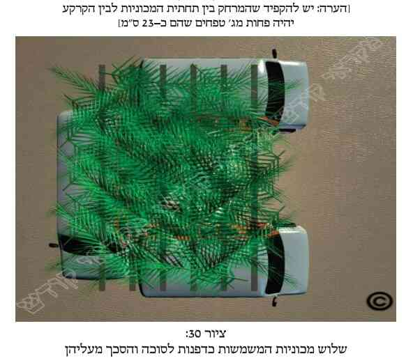
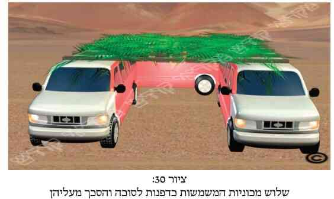

א. כתוב בתורה (ויקרא פרק כ"ג פס' ל"ד): "חג הסֻכות שבעת ימים לה'". ומכאן למדו חכמינו ז"ל, שכשם שישנה קדושה לקרבן ה"חגיגה", כך ישנה קדושה ל"סוכה", במשך כל ימי חג הסוכות (ולעיתים אף יותר זמן מכך, כדלקמן), ולכן אסורה היא בהנאה. ולגבי היחס אליה לאחר החג, ראה לקמן (בסעיפים נ"ד ונ"ה).
ב. נוסף לטעם איסור ההנאה מהסוכה (ולעיתים אף האיסור ליטול חלק מהסוכה ומקישוטיה גם אם לא נהנה מכך) בשל השוואת קדושת הסוכה לקדושת קרבן החגיגה, הרי שישנם עוד שלושה טעמים מדוע אסור ליהנות מהסוכה ומקישוטיה: מפאת (1) איסור ביזוי מצווה. ובשבת ויום טוב אסור ליהנות מהסוכה ומקישוטיה גם משום שהינם (2) מוקצה מחמת מצווה, ומהסוכה אסור אז ליהנות גם משום (3) איסור סותר, וכפי שיבוארו הדברים בס"ד בסעיפים הבאים בפרקנו.
ג. לאור האמור ישנה קדושה מיוחדת לעצי הסוכה, ולכן אסור ליהנות מהם לדבר שאינו מצות סוכה אם בשל כך תפגע קדושתה, וכמבואר לקמן.
ד. כל הנאה הפוגעת בקדושת הסוכה הריהי אסורה. ולכן אסור לקחת דופן או חלק מדופן מהסוכה לצורך שימוש אחר, ואסור לקחת אפילו כפיס עץ קטן כדי לחצוץ ולנקות בו את שיניו. ומאידך מותר שימוש בעצי הסוכה אם אינו פוגע בקדושתה. ולכן מותר להשען על דפנותיה או להשעין עליהם חפצים. וראה עוד לקמן (בסעיף
ה. דנו הפוסקים האם איסור ההנאה מהסוכה אמור רק לגבי הסכך, או גם לגבי הדפנות. ולמעשה נפסק להלכה שאיסור זה חל הן על הסכך והן על הדפנות. ולגבי נויי הסוכה וקישוטיה ראה לקמן (בסעיף כד).
ו. איסור ההנאה מדפנות הסוכה אמור רק לגבי השיעור ההכרחי מהדפנות לשם הכשר הסוכה. במה דברים אמורים, כשבנה תחילה חלק מהסוכה, באופן שכבר בכך היא כשרה, ולאחר מכן נמלך בדעתו והחליט להוסיף עוד לדפנותיה. אך אם מלכתחילה חשב לבנותה יותר משיעור הדפנות הנצרך להכשרה, וכן עשה, הרי שכל הדפנות שבנה אסורות בהנאה כנ"ל.
ז. נחלקו הפוסקים אם בשל איסור ביטול קדושת הסוכה אסור רק להשתמש בסוכה (בסכך, בדפנות או בקישוטים) באופן שמבטל את קדושתן (כגון לקחת את עצי הסוכה לצורך הסקה), או שאיסור זה כולל גם את פירוק הסוכה והורדת הקישוטים מבלי להשתמש בהם. וראה לקמן (בסעיפים י"ז, י"ח וכ"ז).
ח. אף על פי שלגבי קישוטי הסוכה מועיל במיקרים מסוימים לעשות תנאי לפני החג, על מנת שיוכלו להשתמש וליהנות מהם בחג עצמו (כדלקמן בפרקנו בסעיפים ל"א ואילך), מכל מקום אין התנאי מועיל כדי להשתמש וליהנות בחג מדפנות הסוכה או מהסכך שלה. אך אם נפלה הסוכה או חלק ממנה ביום שמחת תורה, מועיל התנאי להשתמש בסכך ובדפנות שנפלו, אם אמר את התנאי לפני השקיעה של כניסת שמחת תורה.
ט. זמן חלוּת איסור ההנאה מהסוכה הינו כל שבעת ימי החג, ואף בשמיני עצרת (והיינו שמונה ימים). ובארצות הגלות, האיסור חל אף ביום טוב שני של גלויות (היינו תשעה ימים). וכשחל שם היום התשיעי בערב שבת, נהגו לאסור זאת גם בשבת (והיינו עשרה ימים). ובשבת ויום טוב אמורים איסורים אלה אף אם הסוכה נפלה. ובאשר לימים שלאחר החג, ראה לקמן בפרקנו (בסעיפים נ"ד - נ"ה).
י. כל סוכה שסיככו אותה לשם החג, הן סוכה חדשה והן סוכה ישנה (כמבואר לעיל בפרק ו' סעיפים נ"ד - ס"א), הרי שיש בה קדושה וחל עליה איסור זה, וכדלקמן בסעיפים הבאים.
יא. אם בנה את הסוכה לשם מצוות סוכה (היינו ששם את הסכך לשם מצווה זו), והתכוון במחשבתו שתהא מקודשת לשם מצוות סוכה, אין הסוכה מקודשת עד שישב בה לפחות פעם אחת בחג. ויש אומרים שהסוכה מתקדשת מעצמה מיד בכניסת החג. וטוב להחמיר כמותם. וראה עוד בסעיפים הבאים.
יב. סוכה שעשאה לשם חג הסוכות (כנ"ל), אם עשאה לפני חג הסוכות האחרון, ואפילו שעשאה כמה שנים קודם לכן, הריהי עדיין נשארת בקדושתה עם כל הכרוך בכך. ויש מגדולי האשכנזים המקילים וסוברים שלאחר שעבר חג הסוכות של השנה שעברה בטלה קדושת הסוכה, ואין קדושתה חוזרת אליה אלא לאחר שישב בה גם השנה, ואפילו פעם אחת. ומכל מקום אף למנהג האשכנזים הללו טוב להחמיר כדעה הראשונה הנ"ל.
יג. סוכה שלא עשו אותה לשם החג אלא רק לשם צל (כגון שמצא סוכת גנב"ך ורקב"ש), אף על פי שהיא כשרה (כנ"ל בפרק ו' סעיפים נ' - נ"ג), מכל מקום אין לה קדושה, ואין איסור ההנאה חל עליה, אלא בתנאים המבוארים בסעיף הבא.
יד. דנו הפוסקים לגבי סוכה שלא נעשתה לשם מצוות סוכה אלא לשם צל (כגון סוכת גנב"ך רקב"ש, כנ"ל), האם בישיבה אחת בה היא כבר נעשתה מקודשת ואסור ליהנות ממנה, כנ"ל בסעיף י"א. ולמעשה האשכנזים מחמירים בכך רק אם מצטרף לכך לפחות עוד תנאי אחד משני התנאים: אם קבע בדעתו מלכתחילה שזו אכן תהיה סוכתו לחג, אף על פי שלא נבנתה לשם כך, או שבעת ישיבתו בה החליט בדעתו שזו תהא סוכתו לחג. וכן הדין לספרדים. אלא שבשעת הדחק, וכן בדיעבד, רשאים הם להקל שאין לסוכה זו קדושה כלל.
טו. מי שהיתה לו סוכה אחת לחג, ובמשך החג בנה סוכה אחרת, הרי שלשתי הסוכות יש קדושה, ואיסור ההנאה מהסוכה חל על שתיהן. וכן סוכה שנפלה במשך ימי החג, או שפרקו אותה אז, חל עליה איסור זה. וראה עוד לקמן (בסעיפים י"ז וי"ח).
טז. לאור האמור בסעיף ב', אם הסוכה טרם התקדשה (כגון שטרם ישב בה) הרי שמותר ליהנות ממנה בימי חול המועד. אך מכל מקום ביום טוב עצמו, וכן בשבת, אסור להוציא ממנה חלק מהסכך או מהדופן, או לפרקה לגמרי, וזאת לא בשל קדושתה, אלא בגלל איסור סותר ואיסור מוקצה בשבת וביום טוב.
יז. כפי שכתבנו לעיל (בסעיף ז'), נחלקו הפוסקים האם מותר לפרק בחול המועד סוכה שבנו אותה לפני החג. ואף לדעת המתירים, מותר הדבר רק כשמפרק אותה לצורך מסוים, וכן כשאינו משתמש בעצי הסוכה לשימוש כלשהו, ובוודאי לא בשימוש המבזה אותם. וראה לקמן (בפרק י"ב סעיף י"ט).
יח. על פי המחלוקת הנזכרת בסעיף הקודם, נחלקו הפוסקים האם מותר בחול המועד לפרק סוכה ולבנותה במקום אחר, וכן נחלקו האם מותר להעביר דופן או כמה דפנות מסוכה אחת לסוכה אחרת, אף אם הסוכה השניה כשרה.
יט. נחלקו הפוסקים לגבי סוכה שבנו אותה בימי חול המועד, אם מועיל לעשות תנאי (כדלקמן בסעיפים ל"א ואילך) כדי להשתמש וליהנות מהסכך ומדפנות הסוכה. ונראה שדעת רוב הפוסקים להקל בכך.
כ. בענין אם יש קדושה לסוכה שבנתה אותה אשה לעצמה, או שבנו אותה ילדים (שאינם בני מצווה) לעצמם. ראה כאן במקורות.
כא. יש מהפוסקים שכתבו, שמי שעשה לפני החג סוכה על גבי מכונית וישב בה, אסור לו לפרק את הסוכה ולהשתמש במכונית לצרכים אחרים (כגון להובלות) כל ימי החג. וכן יש הסוברים, שאותם הנוסעים לטיולים בימי חול המועד, ועושים את דפנות הסוכה על ידי חיבור של כמה מכוניות העומדות סמוכות זו לזו בצורת האות חי"ת (כבציורים שבסוף הספר  ,  ), הרי שדלתות אלה נאסרות לאחר מכן לשימוש אחר בימי החג, ולכן אין להשתמש במכוניות כדפנות לסוכה. אך אם עשו תנאי (באופן המבואר לקמן בסעיף ל"א ואילך) לפני כניסתם לסוכה זו בחול המועד, בשעת הדחק רשאים להמשיך ולהשתמש בדלתות המכוניות כרצונם, ויש להם על מה לסמוך. וראה עוד כאן במקורות.
כב. עוד מדיני קדושת הסוכה ושימושים האסורים לעשות בה, ראה כאן במקורות.
כג. כתוב בתורה (שמות פרק ט"ו פס' ב') "זה קלי ואנוהו". ומכאן למדו חכמינו ז"ל שיש לעשות את המצוות באופן שתהיינה נאות, ובכלל זה יש לעשות גם את הסוכה שתהא נאה ומקושטת. וכן נהגו ישראל לקשט את סוכותיהם בציורים נאים, בשרשראות ובפירות יפים (כענבים, רימונים, אננס וכדומה). וכל המרבה לקשט את סוכתו הרי זה משובח (ובתנאי שיהא באופן שאינו פוסל את הסוכה ואינו אוסר את הישיבה תחתיו).
כד. גם על קישוטי הסוכה חל איסור ההנאה הנ"ל (בתחילת פרקנו). משום כך אסור לבזותם ואסור להשתמש בהם וליהנות מהם הנאה הפוגעת בקדושתם. לכן, אם הם סוגי מאכלים, כפירות, או משקאות, כגון בקבוקים קטנים של יינות, אסור לאוכלם או לשתות מהם כל ימי החג.
כה. איסור ההנאה מקישוטי הסוכה אמור הן לגבי הקישוטים התלויים בסכך, והן לגבי הקישוטים התלויים בדפנות. ואיסור זה חל כל שמונת ימי החג, ולעתים אף יותר מכך (כנ"ל בפרקנו בסעיף ט').
כו. כפי שאמרנו, איסורי ההנאה מקישוטי הסוכה בשבת וביום טוב נובעים גם משום איסור מוקצה. לאור זאת, אם הם נפלו ממקומם בשבת או ביום טוב, אסור לאוכלם ולהנות מהם, ואף אסור להרימם, ולא לטלטלם ולתלותם שוב. אך אם הם נפלו בשאר ימות החג, אמנם אסור לאוכלם וליהנות מהם, אך מותר אז להרימם, לטלטלם ולתלותם שם.
כז. כעין האמור לעיל (בסעיפים ז', י"ז וי"ח), נחלקו הפוסקים אם מותר לטלטל ולהוריד את הקישוטים של הסוכה בימי חול המועד (היינו לא בשבת ולא ביום טוב), אף אם אינו עושה כן לשם הנאה או לצורך חול אחר.
כח. יש אומרים שאין להעביר קישוטים מסוכה כשרה לסוכה אחרת, אף אם גם הסוכה השניה כשרה, ויש מתירים. ואם הסוכה הראשונה נפסלה, לדעת כולם מותר להעביר ממנה קישוטים לסוכה כשרה. וקישוטים שהיו תלויים בסכך ונפלו, מותר מעיקר הדין לתלותם בדפנות הסוכה, ולהיפך.
כט. כפי שראינו לעיל (בסעיף כ"ה), איסור ההנאה מקישוטי הסוכה אמור הן לגבי הקישוטים התלויים בסכך והן לגבי אותם התלויים בדפנות. אך נחלקו הפוסקים אם איסור השימוש בקישוטי הסוכה אמור גם לגבי הקישוטים התלויים במקומות שהסוכה פסולה (כגון מציאות שחלק מהסוכה נמצא תחת גג, או שישנם קישוטים התלויים בצד החיצוני של הסוכה).
ל. נחלקו הפוסקים לגבי קישוטי הסוכה שאינם תלוים בסכך או בדפנות, אלא הם מונחים על השולחן או על הרצפה (כגון אגרטל עם פרחים, או עציץ וכדומה), האם יש להם קדושה כדין שאר קישוטי הסוכה, ובשבת וביום טוב אסור אף לטלטלם, או שאין להם קדושה, ומותר לטלטלם כשאר הכלים שמשתמשים בהם (ככסא, שולחן וכדומה).
לא. ישנם מיקרים שבהם יכול אדם להתנות לפני החג שרצונו להשתמש בקישוטי הסוכה, ואז אכן יהיה מותר לו להשתמש בהם בחג, וכמבואר בסעיפים הבאים.
לב. על ידי אמירת התנאי מראה האדם שאינו מקצה את הקישוטים מלהשתמש בהם, ולכן הם אינם נחשבים כחלק מהסוכה ואין להם את קדושת הסוכה.
לג. אם אדם עשה את התנאי כדין, רשאי הוא להשתמש בקישוטים בין אם נפלו, ובין אם עדיין הם תלויים במקומם. ולגבי שבת ויום טוב ראה לקמן (בסעיף נ"א).
לד. צריך לומר את התנאי באופן שהתנאי יחול כל זמן בין השמשות של כל ימי החג. ולכן צריך לומר את התנאי בלשון זו: "איני בודל (היינו מתבדל ומתרחק) מהקישוטים של הסוכה כל זמן בין השמשות" (והאשכנזים מוסיפים: "של כל ימי החג"), או בלשון זו: "אני מתנה על הקישוטים לאוכלם, ליהנות מהם ולהשתמש בהם בכל זמן שארצה".
לה. אין התנאי מועיל אלא דווקא כשאומר בלשונות אלה. אך אם אמר: "אני מתנה עליהם להשתמש בהם או לאוכלם כשיפלו", אין התנאי מועיל, ואסור להשתמש בקישוטים.
לו. אם אמר את התנאי כך: "איני בודל מהקישוטים כל זמן בין השמשות של ליל יום טוב הראשון של החג", הרי שהתנאי מועיל ליום טוב הראשון, וחלה קדושת הסוכה על הקישוטים מיציאת היום טוב הראשון של החג עד סוף החג. ולכן עדיף להתנות שאינו בודל מהקישוטים כל זמן בין השמשות של כל ימי החג.
לז. יש לומר את התנאי משעה שתולה אותם, ויכול לאומרו עד השקיעה שלפני כניסת החג. אך אם אמר את התנאי לאחר השקיעה של כניסת החג, אין התנאי מועיל, וחלה הקדושה על הקישוטים במשך כל ימי החג.
לח. אם תלה את הקישוטים במשך היום הראשון של החג, או בשאר ימי החג (ובשבת וביום טוב ינהג כמבואר במקורות), חלה הקדושה על הקישוטים מהשקיעה שבסוף אותו היום, ומאז אסורים הם בהנאה עד סוף החג, כנ"ל (בסעיף כ"ד). אך מעת שתלו אותם, ועד השקיעה של אותו היום, עדיין לא חלה עליהם הקדושה, ומותרים הם בהנאה (וכמובן שעדיף להתנות כבר מעת תלייתם).
לט. יש מגדולי הפוסקים שכתבו שאין נוהגים להקל ולעשות את התנאי הנ"ל. ולמעשה למנהג הספרדים עושים את התנאי הנ"ל, ומועיל הדבר להפקיע את קדושת הסוכה מכל הקישוטים, הן הקישוטים התלויים בסכך, והן אותם התלויים בדפנות. ולמנהג האשכנזים אין נוהגים לעשות תנאי לקישוטים התלויים בסכך, ולכן אין להורידם. ואילו לגבי הקישוטים התלויים בדפנות הסוכה, הרי שתלוי הדבר: אם עלולים הם להתקלקל בגשם או להגנב, כגון פלקטים או סדינים המצוירים בציורים יפים, טוב לעשות תנאי על מנת שיוכל להורידם, אך גם אם לא עשה תנאי מותר להורידם. ואם אינם מסוג זה (שיש לחשוש שיגנבו או שיתקלקלו בגשם), ותלויים הם בדפנות, יש לעשות תנאי על מנת להורידם, ורק אז רשאי להורידם מהדפנות. וראה עוד דעות כאן במקורות, ובסעיף הבא.
מ. גם מהספרדים יש המקילים, שאם יורד גשם, או שיש חשש לגניבה, מותר להוריד מהדפנות את הקישוטים היקרים לו, על מנת שלא יתקלקלו או יגנבו, וזאת אף אם לא עשו בפירוש תנאי לכך. וכפי שכתבנו בסעיף הקודם, גם האשכנזים מקילים בכך.
מא. אסור לכתוב פסוקים, פסוק, או חלק מפסוק (כגון "ושמחת בחגך... והיית אך שמח", "ברוך אתה בבואך", או "בסֻכֹּת תשבו שבעת ימים") לצורך קישוט הסוכה. וכן אין לחקוק פסוקים לצורך הנ"ל על דלעת וכדומה. וראה עוד כאן בהערות, ובסעיף הבא.
מב. דנו הפוסקים לגבי מי שיש לו כבר קישוט שכתוב עליו כדברים הללו, ואינו רוצה להמשיך ולשומרו, ואפילו אם עשה תנאי שיכול להורידו, האם יש לו קדושה ככל שאר דברי התורה. ומכל מקום בשום אופן לא יזרקנו לאשפה בבזיון.
מג. כאשר יש חשש שהילדים הקטנים יתלשו את הקישוטים ממקומם, או שיאכלו מהקישוטים הראויים למאכל, טוב לתלות את הקישוטים במקום גבוה שהילדים לא יוכלו להגיע לקישוטים.
מד. בהרבה בתי כנסיות של הספרדים, ובמעט בתי כנסיות של אשכנזים, נהגו לתלות פרוכות של ארון הקודש על דפנות הסוכה לשם נוי, ויש להם על מה לסמוך.
מה. למרות שיש מהפוסקים שהתירו לתלות בסוכה קישוטים המיוצרים לשם אידיהם (היינו חגיהם) של עובדי עבודה זרה, כגון הנוצרים הטמאים, מכל מקום ראוי מאוד להמנע מכך ולא לתלותם כלל.
מו. נורות רגילות המאירות בסוכה, אין להן דין של קישוטי הסוכה, ולכן אין להן קדושה, ומותר להורידן בימי חול המועד ולהשתמש בהן שימוש אחר. ואם הן נורות יפות המיועדות לקישוט, כגון נורות צבעוניות, דינן כשאר קישוטי הסוכה עם כל הכרוך בכך. ואם הן מיועדות גם לתאורה וגם לקישוט, ראה דינן במקורות.
מז. מי שתלה אתרוג כקישוט בסוכה, ובמשך ימי החג רוצים לקחתו לצורך מצוות ארבעת המינים, אסור לעשות כן ביום טוב, ואילו בשאר ימי החג (כמובן חוץ משבת) מותר לקחתו לצורך זה ואף לברך עליו. ויש אוסרים לעשות כן אף בשאר ימי החג.
מח. מי שתלה בסוכה אתרוג לקישוט מותר להריח אותו, אך יזהר שלא לטלטלו בשבת ולא ביום טוב. ודין הרחת הדסים שנתלו לקישוט בסוכה, או שסיככו בהם, וכן דין בושם שהביאוהו לסוכה כדי ליהנות מריחו, ראה כאן במקורות.
מט. עוד מדיני קישוטי הסוכה ראה כאן במקורות.
נ. הבונה סוכה על קרקע העולם (היינו אדמה רגילה) או על רצפת אבנים הקבועה בבנין, אין קרקעית הסוכה נאסרת בהנאה, ולאחר שפירקו והוציאו את הסוכה משם מותר להשתמש במקום זה. אך מן הראוי שתהא הסוכה מרוצפת בצורה נאה. ואכן אם ריצפו את קרקעית הסוכה לשם נוי באבנים יפות, או בקרשים, הרי שרצפה זו אסורה בהנאה כדין קישוטי הסוכה, ומועיל תנאי להפקיעה מקדושתה. אך אם אי אפשר היה לבנות את הסוכה על הקרקע, ולכן נאלצו לרצף את המקום, אזי יש מי שאומר שדין הרצפה כדין עצי הסוכה, ואין מועיל תנאי להפקיעה מקדושתה. ואם שמו שטיחים בקרקע הסוכה, יש להם קדושה כקדושת קישוטי הסוכה, ומועיל תנאי (כנ"ל בסעיפים ל"א - מ') על מנת להשתמש בהם. וראה עוד כאן במקורות.
נא. מי שעשה תנאי כראוי, ורוצה להשתמש בקישוטים בשבת או ביום טוב, צריך להזהר שלא יחללם בשל כך. ולכן למשל לא יקרע אז ניירות ולא יתיר חוטים באופן האסור, וכן לא יוציא מסמרים או נעצים ממקומם.
נב. אם חלקי סכך רבים (כגון עלים) נושרים אל שולחן האוכל, באופן שהדבר מיסב צער רב למסובים ומאוס בעיניהם, יש מהפוסקים שדעתם נוטה להתיר לטלטלם ולהסירם מהשולחן בין בשבת ובין ביום טוב.
נג. אם נפלו קישוטים על שלחן האוכל ביום טוב, באופן שלא ניתן לאכול עליו, יש מתירים לטלטלם ביום טוב על מנת שיוכלו לאכול שם. ויש אומרים, שאם ניתן הדבר, עדיף לטלטלם בטלטול מן הצד, וכגון להטות את השולחן כדי שהקישוטים יפלו (כמבואר במקורות).
נד. אף לאחר החג אסור לבזות את הסכך, את דפנות הסוכה ואת קישוטיה, כיוון שיש להם לאחר החג דין של תשמישי מצווה, ולכן אסור גם לדרוך עליהם. ובפרט יש להזהר שלא לדרוך על עצי הסכך לאחר הורדתם מהסוכה. וראה עוד בסעיף הבא.
נה. לאור האמור בסעיף הקודם, כתבו הפוסקים שיש למחות באותם אנשים שלאחר החג זורקים את ענפי הסכך במקומות שרבים רגילים לדרוך שם, אף על פי שאין זה מקום אשפה. וראה עוד כאן במקורות.
ויהי רצון שנזכה לשמור על קדושת הסוכה, ומתוך כך נוסיף עוד הרבה קדושה לעם ישראל. אמן.
&הערות:
[1] א. עיקר ד"ז הוא עפ"י הגמ' בסוכה (ד"ט, א'), דאמר רב ששת משום ר"ע: מניין לעצי סוכה שאסורין כל שבעה, ת"ל: "חג הסוכות שבעת ימים לה'". ותניא: רבי יהודה בן בתירה אומר: כשם שחל שם שמים על החגיגה [פרש"י: שלמי חגיגה, שם שמים חל עליהם לאוסרן עד לאחר הקטרת אימורין, דזכו בהו בתר הכי משלחן גבוה כעבד הנוטל פרס. ע"כ]. כך חל שם שמים על הסוכה, שנאמר "חג הסוכות שבעת ימים לה'". מה חג [פרש"י: חגיגה] לה' אף סוכה לה'. עכ"ל הגמ'. וכעין זאת איתא גם בגמ' בביצה (ד"ל, ב'). וכ"פ מרן (סי' תרל"ח ס"א), המ"ב (סק"א) כה"ח (סק"א) וש"פ רוא"ח. וע"ע בגמ' סוכה (די"א סע"ב) אי גמרינן סוכה מחגיגה.
ועוד בעניין קדושת הסוכה, אי הוי תשמיש קדושה או תשמיש מצווה, ועוד דיונים בענין קדושתה, ר' לקמן (בהערה ז' ובסעיפים הבאים).
יש להעיר, שאמנם גבי סוכה היתה הו"א שהינה רק תשמיש מצווה, שאז אין לה דין קדושה. אלא שמהלימוד מהפס' הנ"ל יש לה קדושה ומעוד סיבות יש איסור הנאה ממנה. אך באמת כבר מצינו בד' חז"ל דבר נוסף א' לפחות שהינו תשמיש מצווה ובכ"ז קראו לו קודש, והוא נר חנוכה. ר' מס' סופרים (פרק כ' הלכה ה' וסימנך כ"ה כסלו) שהסבירו שמנין נ"ח בכל יום מתווסף משום "מעלין בקודש". אמנם יש מקום לחלק ולומר שאין הכוונה לקודש ממש אלא כעין קודש שמעלין בו. ויתכן שישנן עוד מצוות שדנו בהן מצד מעלין בקודש, אע"ג שהן מצוות הנעשות ע"י תשמישי מצווה (וראה ע"כ לקמן בפרקנו בריש הערה נ"א). ומ"מ צ"ע אי גבי נ"ח יש "לכנותו" קודש (אע"ג שברור שדינו כתשמיש מצווה בלבד) עפ"י מה שאומרים: "הנרות הללו קודש הם" (ואכן מקדמת דנא תמהתי על מילים אלה, הרי נ"ח אינו קודש אלא תשמיש מצווה). ומ"מ גם הם אסורים בהנאה.
ואכן אחד החתנים שלי (הרב שאול אלעזר שנלר שליט"א) העיר, שברור הרי שאין קדושה בנר חנוכה, אלא הקדושה המיוחסת לו הינה רק שאסור להשתמש בו. ומה שאומרים שהנרות הללו "קודש הם" הכוונה שאנו פרושים מהם, כדכתב רש"י בריש פרשת קדושים. ושכ"כ התוס' בקידושין (ד"ב, ב') דקידוש פירושו פרישות ומיוחד לדבר מסוים ולא לאחרים. וה"ה בנרות חנוכה שהינם מוקדשים רק למצוה ואין לנו רשות להשתמש בהם. וכן מצינו בקדושין (ד"ב, ב') דלשון האיש מקדש הכוונה "דאסר לה אכולי עלמא כהקדש". ושכ"כ בתוס' שם, דהרי את מקודשת לי פי' להיות לי מקודשת לעולם בשבילי. וכמש"כ בנדרים (דמ"ח, א'): "הרי הן מוקדשים לשמים" – להיות לשמים. עכ"ל. וודאי שאשה מאורסת (היינו שקידשוה) אין אסור לאחרים לקבל וליהנות ממעשיה (כגון שאביה הזקן מבקש ממנה שתאכיל אותו). עכת"ד חתני שליט"א. וע"ע בני"ד בר"ן (על הרי"ף ר"פ "במה מדליקין").
[2] ב. אמנם מהגמ' הנ"ל בהערה הקודמת עולה שעצי הסוכה אסורים רק שבעה ימים, אך אנו כתבנו שלעיתים קדושת הסוכה חיילא אף יותר מז' ימים, וכדלקמן בסמוך (בסעיף ט'), עפי"ד מרן (סי' תרל"ח ס"א וסי' תרס"ז ס"א) והנו"כ.
[3] ג. כנ"ל בסעי' הקודם עפ"י הגמ' והשו"ע.
ומה שכתבנו שלעיתים חל איסור זה אף על חלק מהסוכה או קישוטיה, ה"ז מבואר בהמשך פרקנו.
ומה שכתבנו שלעיתים האיסור חל גם אם לא נהנה מכך, ר' לקמן (בסעי' ז').
[4] ד. עפ"י הגמ' בשבת (דכ"ב, א') גבי נויי סוכה. עיי"ש בגמ' שרצו ללמוד מקור לדין איסור ביזוי מצווה. ושאלו שם בתוס' (ד"ה "אבוהון"), מדוע הסיקו בגמ' שאיסור ביזוי מצוה לומדים מכיסוי הדם ע"י ידו, הרי יכלו ללמוד זאת מאיסור ביזוי עצי הסוכה עצמם שלומדים זאת מקרא מפורש. ותי' ר"י דמשום עצי סוכה לא ילפינן, דשאני סוכה דבמסתפק מהם איכא ביטול מצוה. אבל בנויי סוכה (שניסו ללמוד בגמ') ליכא ביטול מצוה. ע"כ.
ובענין מדוע בעינן טעם דביזוי, ולא סגי בטעם דאיתקצאי למצוותה (כדלקמן בהערה הבאה), כתבו התוס' בשבת (שם ד"ה "סוכה") בשם ר"י, דמטעמא דמיגו דאיתקצאי למצוותה לא הווה אסרינן בחולו של מועד, דלא שייך מוקצה אלא בשבת וביו"ט. ומאידך, משום ביזוי מצווה לא אסרינן להו היכא דנפלי. עכ"ד. וע"ע בח"א (כלל קמ"ו סקמ"ז), במ"ב (סקכ"ד) ובכה"ח (סקנ"ג) שכתבו שלכתחי' אין לכתוב פסוקים לקישוט בסוכה, שמא יבואו לידי בזיון. ע"כ.
[5] ה. עפ"י הברייתא בשבת (דמ"ה, א'), שנוי סוכה הוקצה למצוותו.
ושאלו הראשו', מדוע בעינן לטעם דמוקצה מחמת מצוה, מאחר שיש כבר איסור דאו' מקרא דחג הסוכות. ותירץ ר"ת (בתוס' ביצה ד"ל, ב' ד"ה "אבל"), דמצד הקרא אין לאסור העצים אלא רק כדי הכשר סוכה, ואילו מצד מוקצה כל הסוכה אסורה.
ור"י הסביר (בתוס' שם, ובשבת דכ"ב, א'), דמצד קרא ד"חג הסוכות לה'" יש לאסור העצים דוקא כשהסוכה עומדת, ולא כשנפלה באמצע החג. ואילו מצד מוקצה העצים אסורים אף לאחר שנפלה הסוכה [דמיגו דאיתקצאי בביה"ש איתקצאי לכל ימי החג. ואמנם ביש"ש (בביצה פ"ד סי' ג') כ' דעצי הסוכה אסורים מדאו' אף לאחר שנפלו. ע"כ].
והר"ן (בביצה ד"ל, ב') כתב בשם הרמב"ן, דמקרא דחג הסוכות אין לאסור אלא שבעת ימי החג, ואילו מצד איסור מוקצה יש לאסור גם בשמיני עצרת (מצד מיגו דאיתקצאי בביה"ש איתקצאי לכולי יומא).
[6] ו. כן עולה מדברי רש"י בשבת (דמ"ה, א' ד"ה "עד מוצאי יו"ט אחרון" וד"ה "ושווין"), שמשמע שבשבת וביו"ט הוי איסור סותר. וכן מתבאר מד' התוס' בשבת (דכ"ב, א' ד"ה "אבוהון") שכשמסתפק מעצי הסוכה הוי ביטול מצווה (והיינו שתוצאתו כסתירת הסוכה). וכ"כ הריעב"ץ במו"ק, דנאסר להסתפק מהסוכה בשבת וביו"ט משום מוקצה דסתירת אוהל, והיינו שכשמסתפק ממנה חשיב כסתירה (ובזה לא תלי אי ישב בה אי לאו. דישיבתו בה גורמת את האיסור רק מצד קדושתה, אך איסור סותר ממילא קאתי). וכ"כ הבה"ל (סי' תרל"ח ס"א ד"ה "לא נאסרה") וכה"ח (סקכ"ג). וע"ע בענין איסורים אלה לקמן (בהערה ל"ח). ומ"מ איסור ההנאה דמשתעינן הכא מדובר כשכרוך הדבר בסתירת הסוכה. וודאי שאין הדבר מדובר כשאינו סותרה. ולכן מותר לעמוד מחוצה לה וליהנות מהצל שלה, וכן להשען עליה, כדלקמן (בסעיף ד').
כתבו הפוס' שאיסור סותר שייך רק גבי דפנות הסוכה הבסכך אך לא גבי נויי הסוכה.
[7] ז. עיקר ד"ז הינו מהגמ' בביצה (ד"ל, ב') ובסוכה (ד"ט, א'), מרן (סי' תרל"ח כולו), הראשו' והאחרו', וכנ"ל (בהערה א').
ובענין הא דעצי הסוכה (היינו הסכך, הדפנות) והנוי חשיבי כתשמישי קדושה ולא רק תשמישי מצוה. דלכאו' הול"ל דהוו תשמישי מצווה, שהרי אין כתוב בהם ד"ת, ואין דינם כמזוזות, תפילין, ספרי תורה ושאר דברי תורה שחייבים גניזה, כדאיתא בגמ' מגילה (דכ"ו, ב').
אלא שבאמת לאחר שקצת בררנו הענין, נראה לנו בס"ד שישנן ג' לשונות בפוס' בהא, ולכאו' הוי ג' דעות: 1) לסוכה יש דין של תשמיש קדושה. 2) לסוכה יש דין של תשמיש מצווה בלבד. 3) ודעה אמצעית הינה שלסוכה יש דין של תשמיש קדושה, אך רק בצורה חלקית.
דעת הפוס' שנראה מדבריהם שלסוכה יש דין תשמיש קדושה. הנה מלשון הגמ' בביצה (ד"ל, ב') נראה שלסוכה יש ממש דין קדושה. שאמרו שם: אביי ורבא דאמרי תרוויהו: באומר איני בודל מהם כל בין השמשות, דלא חלה קדושה עליהו. עכ"ל הגמ'. ומשמע דאי לא"ה חלה קדושה אף על נויי הסוכה (דבזה עסקינן התם). וכ"כ רש"י שם בהדיא (סוד"ה "אביי ורבא"): ובין השמשות ספק י"ט הוא חלה קדושה עליה, ועל ידי קדושה זו הוקצה לשבעה. עכ"ל. וכ"כ התוס' בסוכה (ד"ט, א' ד"ה "מנין") בשם הגמ' הנ"ל. וכעין זאת בתוס' ישנים בשבת (דכ"ב, א').
ואף מדברי הרשב"א מתבאר דס"ל שיש קדושה גמורה לסוכה. שגבי סוכת גנב"ך רקב"ש כ' בעבוה"ק (בית מועד, שער ב' פ"ו) שהריהי כסוכה דעלמא, "שבשביל שנכנס זה ואכל שם פתו, לא נתקדשה זו". ועוד כ' בחידושיו לביצה (ד"ל, ב'), שאפשר דבסוכת גנב"ך רקב"ש שלא נעשו לשם קדושת סוכה, אע"פ שאיש נכנס ואכל או ישן שם, לא חלה עליהן קדושה כל שבעה, וכסוכה דעלמא הן. עכ"ד. ויותר מכך ר' שם בחידושיו (בד"ה "ועדיין"), שמתוך הדחק יש לו לומר דהקיש הכתוב סוכה לחגיגה ממש, מה חגיגה לאחר שחלה עליה קדושה א"א שתפקע קדושתה, אף עצי סוכה כן. ע"כ [הב"ד הרשב"א בס' חזו"ע (סוכות. דף ע"ב, ע"ט וקל"א)]. ומשמע דס"ל דלסוכה ישנה קדושה גמורה.
אף בלשון מרן בשו"ע מבואר לכאו' כך, שכ' (בסי' תרל"ח ס"ב) שאם עשה תנאי לגבי קישוטי הסוכה, ה"ז מסתפק מהם "ולא חל עליהם קדושת הסוכה". ועולה מדבריו דאם לא עשה תנאי כן חלה על הקישוטים "קדושת הסוכה". וכן כתוב במ"ב (שם ס"ק ג' וד'). וע"ע ביד אהרן (סי' תרל"ח) מה שהעיר ע"ד שו"ת הלק"ט. וכן בביכור"י (בתוספת ביכורים לסי' תרל"ח).
דעת הפוס' שנראה מדבריהם שלסוכה יש דין של תשמיש מצוה, שכ"נ דעת המ"א (סי' תרל"ח סק"ג). וכ"כ הגר"י טייב בערה"ש שלו (סי' תרל"ח סק"ד). וכ"ד הגרע"י שליט"א בחזו"ע (דיני הסכך הערה ל"ה, דף ע"א ע"ב, ודיני הישיבה בסוכה, דף קל"א ע"א). עיי"ש שדן ע"כ באורך. וכן היא ד' הגרי"ש אלישיב שליט"א, עפ"י הברייתא במגילה (דכ"ו, ב'), שסוכה חשיבא בין תשמישי המצוה. והוסיף, שהלימוד מחגיגה לסוכה הוא רק לענין דחל איסורא על הסוכה, אך לא שהסוכה נהפכת לדבר שבקדושה. הב"ד בסה"ס (בסופו. בפסקי הגריש"א שליט"א סק"ג). וע"ע בס' עולת שבת (סי' תרל"ח).
ודעה שלישית, היא הדעה האמצעית, והיינו הפוס' שנראה מדבריהם שאמנם יש לסוכה קדושה, אך לא קדושה כשאר תשמישי קדושה רגילים. שכ"כ הט"ז (סי' תרל"ח סק"ג). שעל מש"כ הרמ"א (בסי' תרל"ח ס"א) גבי הסוכה, שאם הזמינה ולא ישב בה לא נאסרה, הקשה הט"ז דהא קיי"ל דמקישים סוכה לקרבן חגיגה. וא"כ נימא גם בסוכה שהזמנה מילתא כבחגיגה, דקיי"ל הכי בקרבן דהוה קדושת הגוף, ה"נ בסוכה. ומנ"ל לחלק בינייהו דהא קיי"ל אין היקש למחצה, כ"ש כאן דרחמנא אקשינהו בפירוש. ולכן הסיק הט"ז דודאי אין לך לומר שכל הדינים שישנם בחגיגה יהיו בסוכה, דא"כ נימא שגם בסוכה תהיה קדושת הגוף. אלא ע"כ דאמר קרא חג הסוכות תעשה לך ז' ימים. דדוקא בזה יהיו שווים לענין ז' ימים שתהא קדושת הסוכה לזמן זה כמו חג, ולא תטול ממנו להנאתך שום דבר לבטל ממנה קדושה שלה. בזה דוקא שווים ולא לדבר אחר... וע"כ נראה פשוט שמ"ש אין נאותין מהן לדבר אחר, היינו דרך ליטול משם שבזה תיבטל קדושתה. אבל בעוד שהיא קיימת אין איסור הנאה ממנה כדי לסמוך עליה או להניח עליה שום דבר כיוון שעדיין קדושתה עליה. עכ"ל. עיי"ש.
גם הג"ר משה מרדכי אפשטיין זצ"ל במאמרו בס' אדרת אליהו (ראם. עמ' רע"ד) כ' גבי ההשוואה בין סוכה לחגיגה, שאין הכוונה שחלה הקדושה על הסוכה לאוסרה בהנאה כמו קדושת קרבן חגיגה, אלא קדושת מצווה, כמו שאנו אומרים בתפילה "קדשנו במצוותיך". שאילו היתה לסוכה קדושה ממש גם לאחר חג הסוכות היו עצי הסוכה צריכים גניזה כמו ס"ת שבלה. אלא קדושת מצוה בעלמא היא שאסור לבזותה ולכלותה. עכ"ד. הב"ד בחזו"ע (סוכות. דיני הסכך. סוף הערה ל"ה דע"ב, א'), וכ' שכיוצ"ב כ' בשו"ת חדוות יעקב (מייזליש. סי' קכ"ב). ודברי הגרמ"מ אפשטיין זצ"ל נוטים יותר לדעה דסוכה הוי תשמיש מצווה. ומ"מ אינם זהים לדברי הט"ז.
חתני כבני, הרב שאול אלעזר שנלר שליט"א, הקשה על כל הנ"ל: חדא, איך אפשר לומר שכמה מאחרוני האחרונים חולקים על מה שהסכימו כל הראשונים וכ"פ בשו"ע. ועוד, מה יעשו עם הגמרא המפורשת הנזכרת לעיל שחלה קדושה על הסוכה. ותו, וכי לפי אותם ראשונים ולפי השו"ע באמת דינם ככל דיני תשמישי קדושה (שצריכים גניזה אף אחר שא"א להשתמש בהם וכדו'). ותו, למ"ד דלא הוו תשמישי קדושה אלא תשמישי מצוה, וכי סבירא ליה שכן דינם של כל תשמישי המצוה שיש איסור דאוריתא להנות מהם ולהשתמש בהם.
אלא נראה שלכו"ע דין הסוכה כדין תשמיש מצוה, שהרי היא תשמיש מצוה, ולכו"ע אין לה דין תשמיש קדושה – שהרי איננה תשמיש קדושה, כמש"כ בתחילת ההערה, שאין בה פסוקים וכו'. אלא שבנוסף להיותה תשמיש מצוה ישנה גזיה"כ מיוחדת שתנהג בסוכה קדושה שבעת ימים. ולכן לית מאן דפליג בכל זה וא"כ אין כל ראיה ממי שכתב שיש קדושה בסוכה, דודאי יש בה קדושה מסוימת מגזיה"כ, אף שודאי לא נעשתה תשמישי מצוה. ולא בכל מקום שאמרו לשון 'קודש' או 'קדושה' הכוונה שיש דין קדשים גמור או דין תשמישי קדושה. כן נראה וכן מפורש להדיא בכמה מקומות. וראה ברמב"ן שבת (דכ"ב, א'). עכת"ד.
בס"ד יש להעיר, שפרקנו עוסק בקדושת הסוכה, ומאידך גם בפרק ט' העוסק בדיני הישיבה בסוכה כתבנו בס"ד כמה הלכות העוסקות בהתנהגות האדם בסוכה הנובעות מקדושתה (כגון איסור הכנסת סירים לסוכה, השארת כלי אוכל מלוכלכים לאחר הסעודה, איסור עשיית הצרכים בסוכה, וכדו'). ולכאו' היה צריך לכלול הכל בפרק אחד, אלא שבאמת אין זה כך. כיוון שפרקנו עוסק בקדושת הסוכה מצד הסכך, הדפנות, הקישוטים והקרקע. ואילו בפרק ט' העוסק בדיני הישיבה בסוכה מדובר גבי הקדושה שבחלל הסוכה, וכמש"כ בחזו"ע (פרק דיני הישיבה בסוכה, דקל"א, א', ריש הערה כ"ה) עפ"י כמה פוס', שכל חלל הסוכה קודש.
בענין אי קדושת הסוכה חשיבא כקדושת דמים או כקדושת הגוף, ר' בחידושי הרשב"א לביצה (ד"ל, ב') ובספרו עבוה"ק (שער ב' פ"ו, וכנ"ל בהערה ז'), בט"ז (סי' תרל"ח סק"ג, וכנ"ל בהערה ז'), בשו"ת חוות יאיר (סי' ר"ה), ובסה"ס (מיל' לפט"ז סק"ד).
ובענין האם הקדושה מעכבת בקיום המצווה, ר' בשו"ת אב"נ (או"ח ח"ב סי' תנ"ט), דס"ל שאין הקדושה מעכבת. ועיי"ש שלד' החלק"י הקדושה כן מעכבת בקיום המצווה. הב"ד בסה"ס (מיל' לפט"ז סק"ה).
ובענין קדושת תשמישי מצוה ואיסור בזיונם, פה איתי המקום להזכיר, שהייתי באירוסין של בני זוג. וכמנהג האשכנזים הביאו צלחת חרס על מנת שאמהות בני הזוג תאחזנה בה ותשבורנה אותה, זכר לחורבן בית המקדש. ונחו עיני על הצלחת, וראיתי שכתובים עליה פסוקים (כגון "אם אשכחך ירושלים תשכח ימיני" וכדו'). והיה נראה לי שאין לשבור צלחת כזו, משום דהוי ביזוי לד"ת הכתובים בה. ובפרט אם כתוב בה שם שמים. אלא למרות שנחשב הדבר כמצווה, מ"מ יש ליקח לשם כך צלחת חלקה ללא כתב של פסוקים וכדו'. ואכן שאלתי את הג"ר אשר וייס שליט"א ע"כ, וזה תורף דבריו: אם כתוב בצלחת שם שמים, ודאי שאסור לשוברה. ושאלתי מה הדין אם כתוב בה פסוק אך ללא ש"ש. ואמר לי הגראז"ו שאז אכן אין ראוי לשוברה. ושאלתיו האם אין בזה ג"כ איסור מדינא לשוברה, לפחות מדין "לא תעשון כן לה' אלוקיכם". וענה שאכן צריך לעיין בדבר אך לא היו עיתותיו בידו. עכת"ד.
[8] ח. כ"כ מרן (סי' תרל"ח ס"א), שאין נאותין מהם לדבר אחר. ע"כ. ומהו גדר ההנאה האסורה ראה בסעיף הבא.
[9] ט. באשר לגדר איסור ההנאה מהסוכה, נחלקו בו האחרו'. שכ' הט"ז (סי' תרל"ח סק"ג. וכנ"ל בהערה ז'), שמה שכתבו שאין נאותין מהם לדבר אחר, היינו דרך ביטול, משום שבזה תיבטל קדושתה. אבל בעוד שהיא קיימת אין איסור הנאה ממנה כדי לסמוך עליה או להניח עליה שום דבר, כיוון שעדיין קדושתה עליה. עכ"ד. ומבואר בדבריו שגדר האיסור הוא ביטול קדושתה. אך אם אינו מבטל קדושתה אלא משתמש בה כמות שהיא, לדעתו אין בכך איסור.
לעומת זאת בעל שו"ת עונג יו"ט רוח אחרת עמו. שכ' שם בשו"ת (בסי' מ"ט) שמכיוון שקיי"ל שעצי סוכה אסורים בהנאה כל שבעה, שנא' "חג הסוכות שבעת ימים לה'", וא"ר יהודה בן בתירא, כשם שחל ש"ש על שלמי חגיגה, כך חל ש"ש על הסוכה. ולפי"ז כל ההנאות אסורות בסוכה, אפי' אין בזה ביטול מצוותה. עכת"ד [עיי"ש שהקשה דלפי"ז נראה שאסור מה"ת לישב בסוכה בזמן שהוא פטור ממנה, כגון בזמן שיורדים גשמים. וכן אשה (אלמנה או פנויה) תאסר לישב בסוכה, שהרי נהנית מצל הסכך (ואילו לאשתו או לבנותיו יש להתיר מדין תשבו כעין תדורו). ועיי"ש מה שתירץ ע"כ].
ודנו הפוס' בדבריהם [ר' מש"כ הפמ"ג (מש"ז סי' תרל"ז סק"ג. עיי"ש שכ' דאיסור ההנאה אינו חל אלא בתשמיש שאינו מתשמישי הדירה. דתשבו כעין תדורו. ע"כ). וע"ע מש"כ הנצי"ב בהעמק שאלה (שאילתא קכ"ו סק"ב), שו"ת אב"נ (או"ח סי' ת"א. עיי"ש שכ' שמותר ליהנות בסוכה מעין ההנאה שהוא נהנה בשעת קיום המצווה, היינו הישיבה בסוכה אפי' שלא בזמן החיוב כמו בשעת ירידת הגשמים). וע"ע בקובץ שיעורים (ביצה, סקס"ח), בכה"ח (סי' תרל"ח סק"ח), בקהילות יעקב (סוכה, סי' ז'), ובמועו"ז (ח"א סי' פ"ח). בסה"ס (במיל' לפט"ז סק"ו), ובחזו"ע (דיני נוי הסוכה. הערה ז', דע"ט, ב' – דפ"ב, ב')].
ונראה בס"ד שד' רוה"פ להקל כט"ז. שכ"פ הפמ"ג, הגר"ז, המ"ב (סי' תרל"ח סק"ד), כה"ח (סק"ח), חזו"ע (שם) ועוד הרבה אחרו' (כמובא בחזו"ע שם).
יש להעיר, שאמנם הט"ז (שם) כתב שאיסור ההנאה הוא כשבשל הנאתו מהסוכה תבטל, מ"מ כתבנו שכ"ה אף אם תפגע קדושתה, אע"ג שלא כל הסוכה תפסל [שכן משמע מדברי הרא"ם המובא בב"י (סי' תרל"ח ד"ה "ומהר"ר אליה מזרחי"), שכ': וכל פורתא דשקיל מינייהו, סתירה היא. עכ"ל. וכן עולה מדברי הגר"ז הנזכרים בהערה הבאה].
עוד בענין זה ראה לקמן (בהערה י"ח).
[10] י. דין לקיחת קיסם לחצוץ שיניו, כתבו המהרי"ל והרמ"א (סי' תרל"ח רסע"י א'). והטעם, כ' הגר"ז, שהרי כשמפריד הקיסם מהסוכה מפקיע הוא מעליו קדושת הסוכה. ע"כ. הב"ד כה"ח (סק"ז). וכעין זאת כתבו הפמ"ג והמ"ב בשעה"צ (סק"ל), שאסור לקחת הדסים המשמשים כחלק מהדופן, כדי להריחם. וזאת אסור אף לט"ז, משום שמבטלם מקדושתם בעת שמורידם מהדופן.
ומה שכתבנו שכ"ה אם לוקח דופן או חלק מדופן מהסוכה לצורך שימוש אחר, כך בס"ד נלע"ד, דהוא כ"ש מכפיס עץ.
[11] יא. כך מתבאר מד' הט"ז (הנ"ל בהערה ז'), המש"ז, הגר"ז, המ"ב (סי' תרל"ח סק"ד), כה"ח (סק"ח), חזו"ע (שם דף פ'), וש"פ.
ועוד כ' הפמ"ג (במש"ז סק"ג), שכל שימוש שהוא בגדר שימושי דירה רגילים, אין איסור לעשותם בסוכה, דרחמנא אמר תשבו כעין תדורו, וכנ"ל (בהערה ט'). וכ"כ בפסתש"ו (סי' תרל"ח הערה 5).
ויש מהפוס' שמבואר בדבריהם, שאף כשאין הכרח לעשות שימוש מסוים בסוכה, אפ"ה מותר לעשותו בסוכה. שכן מתבאר מדברי האב"נ (או"ח סי' ת"א) וש"פ (הנ"ל בהערה ט'), שכתבו שאף בעת ירידת הגשמים, שפטורים אז מהישיבה בסוכה, מ"מ ליכא איסור בישיבה בסוכה וליהנות ממנה (הב"ד בפסתש"ו שם הערה 6). ור' בחזו"ע (דיני נוי סוכה. הערה ז') שלאו כו"ע ס"ל הכי.
[12] יב. שכ"כ הט"ז (סק"ג. כנ"ל בהערה ז'), המש"ז, הגר"ז, המ"ב (סק"ד), כה"ח (סק"ח) וש"פ. וכ"ז כמובן כשהשימוש אינו פוגע בקדושת הסוכה ולא בבנין הסוכה (כמש"כ הפוס' הללו). ואע"ג שהפוס' הללו כתבו להתיר "להניח" חפצים על הסוכה, אנו כתבנו להשעין עליה, כדי שלא יטעו לומר דשרי אף להניח על גביה חפצים, וה"ז לעתים אסור שהריהו מכסה את הסכך בדבר שעלול להיות סכך פסול. כמבואר למשל לעיל (בפ"ו סעי' כ"ד ואילך).
עפ"י הכלל דשרי להשתמש אם אינו פוגע בקדושת הסוכה, כתבו הפוס' שאם יש סוכה שדפנותיה עשוייות מארונות או מקרר וכדו', הרי שאין איסור להשתמש בהם, להכניס ולהוציא מהם דברים, דהוי כשימושי דירה רגילים, ואין בכך משום ביטול קדושת הסוכה [שו"ת שבט הקהתי. חזו"ע (דיני נויי הסוכה סעי' י' דפ"ג) ופסתש"ו (שם ססק"ב)]. ודבר זה אמור הן אם דלתות הארון והמקרר נפתחות כלפי תוך הסוכה, דאז אמרינן דהוי שימוש רגיל. והן אם דלתותיהן נפתחות כלפי חוץ הסוכה, שאז ש"ד מטעמא דהט"ז, דאינו פוגם בקדושת הסוכה.
[13] יג. הא דאיסור ההנאה שייך גבי הסכך, לכאו' הוא פשוט. שכפי שכתבנו בס"ד לעיל (בהערות א' וז') עפ"י הגמ' בסוכה (ד"ט, ב') ובביצה (ד"ל, ב') יש קדושה לעצי הסוכה. והרי עיקר הסוכה הוא הסכך, וממילא ד"ז חל גבי הסכך. וכ"כ כל הפוס', שקדושת הסוכה אמורה לפחות גבי הסכך (ר' למשל בה"ל רס"י תרל"ח ד"ה "בין").
אלא שנחלקו הפוס' גבי קדושת הדפנות ואיסור ההנאה מהן. וישנן ג' דעות בדבר:
1) י"א שאין נ"מ בין הסכך לדפנות, וגם על הדפנות יש איסור הנאה מדאו' [שכ"כ הב"ח ועוד אחרו' בדעת הרמב"ם. וכן דעת הר"ן. שכ"כ הטור, הב"י, בה"ל (רס"י תרל"ח ד"ה "בין עצי") וכה"ח (סק"א)].
2) י"א שאיסור ההנאה מהדפנות אינו אלא מדרבנן [שכ"כ מרן בב"י בדעת הרמב"ם. וכ"כ הט"ז בדעת הרמב"ם. הב"ד כה"ח (סק"א) וסה"ס (מיל' לפט"ז סק"ט)].
3) י"א שאין כלל איסור הנאה מהדפנות, לא מדאו' ולא מדרבנן [שכ"מ מהרא"ש בסוכה (פ"א סי' י"ג) וכ"כ בשמו בנו, בעל הטורים בקיצור פסקי הרא"ש. וכ"כ הטור עצמו, וכ"כ רי"ו ועוד פוס'. הב"ד בה"ל, כה"ח וסה"ס שם]. ועיי"ש ברא"ש מה שהקשה על הרמב"ם, ומה שתירץ ע"כ בחידושי הגר"ח הלוי (סוכה פ"ו הט"ו). הב"ד בסה"ס (מיל' לפט"ז סק"י).
ומרן כ' בשו"ע (רס"י תרל"ח) וז"ל: "עצי סוכה אסורים כל שמונת ימי החג, בין עצי דפנות, בין עצי סכך". עכ"ל. והיינו כעין לשון הרמב"ם (פ"ו מסוכה הט"ו). ולא פירש ולא מידי אי הוי איסור דאו' או דרבנן [וקצ"ע. שבחזו"ע (דיני הסכך ריש הערה ל"ה, דע"א, א') כ' שלפי מה שמרן פסק כד' הרמב"ם, שדין עצי הדפנות כדין הסכך, י"ל ששניהם שקולים, שסכך בלי דפנות פסולה, כשם שדפנות בלי סכך פסולה. עכ"ל. אמנם לענ"ד אין זה מוכרח, שהרי מצינו שנחלקו הפוס' מהי ד' הרמב"ם, האסור מדאו' או מדרבנן. וא"כ אין הכרח שדין הסכך כדין הדפנות. אלא רק קמ"ל ששניהם אסורים, אך לא מוכרח שחומרתם שווה. כך בס"ד נלע"ד. ולא זכיתי כ"כ להבין את דברי הגאון הנ"ל].
בענין הנ"מ אי איסור ההנאה מהדפנות הוי מדאו' או מדרבנן, כתבו הפוס' כמה דברים: 1) כשיש ספק, בדאו' מחמירים ובדרבנן מקילים. 2) אי מהני תנאי. שלדאו' לא מהני ולדרבנן כן מהני. ועוד נ"מ [ס' סוכת שלם, וסה"ס (מיל' לפט"ז ססק"ט). אמנם מש"כ שיש נ"מ משום כבוד הבריות, שבדאו' לא הותר ובדרבנן הותר, נראה שבזה לא דק, משום שזו מחלו' אי כל איסורי דרבנן הותרו משום כבוד הבריות. ר' ע"כ מה שכתבנו בס"ד בקונטרס קדושת השבת (הערה מ"ח ענף 3. ובמילואים שם פרק ה' ענף 14, פ"ו ענפים 5, 3. פ"ז ענף 3). עיי"ש ואכמ"ל].
[14] יד. שכ"פ מרן (סי' תרל"ח ס"א), והמ"ב (רסקכ"ד) בשם האחרו'. ומש"כ הרמ"א (שם בסעי' ב') שי"א שאין איסור בדפנות עצמן, אין הכרח דהכי באמת ס"ל. אלא נראה שלמעשה לא פסיקא ליה מילתא להקל לגמרי בדפנות שא"צ תנאי. שהרי כתב כן רק כצירוף להקל בנויין. ועוד דא"כ לא הול"ל שי"א להקל, אלא היה כותב כן כדין גמור. ועוד, דא"כ הו"ל להעיר ע"ד מרן בסעי' א' שהחמיר גם בדפנות (ואין לומר דסמך על דבריו בסעי' ב'. שהרי דוקא בסעי' א' הוי סוגיה בדוכתא ועדיפא. וצ"ע).
ומ"מ למעשה ראינו לעיל שזו מחלו' הפוס' אי הוי מדאו'.
מי שמוסיף הרבה ענפים לסכך באופן שאין גשמים יכולים לירד לתוכה, די"א שהסוכה פסולה (כבמ"א סי' תרל"א סק"ב), אפ"ה כל הסכך אסור בהנאה לדברי פוס' אלה כל שבעה עכ"פ מדרבנן. ועוד, דאינו יכול לשער באומד יפה מה ששייך לסכך. ואם רוצה ליטול ביו"ט את הסכך העודף ע"י גוי, שרי [פמ"ג. בה"ל (רס"י תרל"ח ד"ה "עצים")].
[15] טו. הקשו התוס' בביצה (ד"ל, ב' ד"ה "אבל"), שמהגמ' בביצה (שם) ובשבת (דמ"ה, א') משמע שעצי סוכה אסורים רק מטעם מוקצה, דהואיל והוקצה למצוותו הוקצה לאיסורו. ואילו במקו"א אמרו בגמ' דאיסורו מדאורייתא. וע"כ תירץ ר"ת בתוס', דמהאי קרא ד"חג הסוכות" אין לאסור מדאו' העצים אלא רק לפי שיעור הכשר סוכה בלבד, כגון ב' דפנות ושלישית אפי' טפח. אבל אי עביד דפנות שלמות יותר משיעור סוכה, לא נפיק מקרא, ועל היותר קאמר שאסור מטעם מוקצה (היינו מדרבנן). עכת"ד.
גם הר"ן בביצה חילק בין שיעור הכשר הסוכה לבין שאר הדפנות. אלא שנחלקו הפוס' מהי דעתו גבי שאר הדפנות. שלד' חידושי אנשי שם הר"ן ס"ל שמה שאינו מהכשר סוכה הריהו אסור מדרבנן. ואילו לד' הבה"ל (רס"י תרל"ח ד"ה "ואם אחר") לר"ן שרי לכתחי' להשתמש בהם. ועוד כ' בבה"ל שם, שהב"י ס"ל כר"ן דשרי לגמרי.
לעומת כ"ז, לד' ר"י בתוס' (בביצה שם), יש ליישב את הקושיה הנ"ל (בריש הערה זו), שאם נפלה הסוכה, שרי ליהנות ממנה מדאו', אך בעודה עומדת, אפי' יותר מכדי הכשר סוכה, אסור [הב"ד כה"ח (סקי"ג) וש"פ].
ומ"מ מרן פסק (בסי' תרל"ח ס"א) כד' ר"ת, וכ': "ואם אחר שעשה השיעור הצריך מן הדפנות ונשלם הכשר סוכה, הוסיף דופן, לא מתסרא. אבל אם עשה ארבעתן סתם – כולן אסורות ומוקצות". עכ"ל. ומבואר בדבריו שמה שאינו מהכשר הסוכה, הריהו מותר לכתחי'.
הסתפקנו גבי מי שמלכתחי' עשה אמנם רק ג' דפנות, אך בשיעור גדול, והיינו יותר מז"ט לדופן. האם מה שהתקדש ונאסר זה רק ז"ט בדופן, ודופן שלישית רק טפח, או שכיוון שמלכתחי' בנה כך את ג' הדפנות (שכ"א מהן יותר מז"ט) הרי שכל מה שבנה התקדש. ועוד יש לדון גבי מי שעשה לפני החג סוכה כשרה אך לא גדולה, כשבדעתו שבמשך החג יגדיל אותה לסוכה גדולה יותר (כגון שיש בחג "שבת בר מצוה" או "שבת חתן", ובדעתו לעשות "קידוש" למוזמנים רבים ולשם כך להגדיל הסוכה בחוה"מ).
לגבי השאלה הראשונה העלינו בס"ד לאחר עיון בפוס', שאם עשה את ג' הדפנות בשיעור הקטן של הכשר סוכה (זע"ז טפחים), הרי שרק זה הוקדש ונאסר. ואם אח"כ הוסיף לשיעור ג' הדפנות, הרי שהתוספת לא התקדשה. וכן יוצא מדברי הר"ן על הרי"ף בביצה (פ"ד, די"ז, א מדפי הרי"ף ד"ה "ועצי"), שכ' וז"ל: ומיהו לאחר שעשו השיעור הצריך מן הדפנות ונשלם הכשר סוכה (גי' מהר"ם: "כגון שתי דפנות ושלישית טפח"), אם אח"כ הוסיף דופן, משמע דלא מיתסרא. עכ"ל. ומבואר שאם עשה תחילה רק זע"ז ואח"כ הוסיף לאורך הדפנות, לא נאסרה התוספת. ואין הכוונה שרק תוספת הדופן הרביעית לא נאסרת, אלא אף בהגדלת שטח הסוכה לא נאסרה תוספת הדפנות כולן. ואם תחילה עשה שיעור יותר מזע"ז, נאסר כל מה שעשה תחילה. ולגבי המקרה שתחילה עשה השיעור הקטן ואח"כ הגדיל הסוכה, אין להקשות שהרי הגדלת שיעור הדפנות מגדילה את שטח הסוכה הכשר, ורשאים לאכול ולישון בכל השטח המוגדל, וא"כ מדוע לא התקדשו הדפנות ונאסרו. בס"ד י"ל דדמי לסוכת גנב"ך ורקב"ש, שעד שלא ישב בתוכה וקבע בדעתו שזו תהא סוכתו וכדו' (כדלקמן בסעי' י"ד) הרי שאיננה מקודשת, ובכ"ז יוצא בישיבתו בה י"ח. ובני"ד הוי יותר מכך, שהרי כשבנה תחילה את עיקר הסוכה דעתו מעיקרא היתה שרק זה יהא שיעור הסוכה ולכן רק זה התקדש (ואמנם יש מקום לומר סברא הפוכה ולאסור בני"ד, אך מ"מ העיקר להלכה נראה בס"ד כמו שכתבנו, שאע"ג שיי"ח בישיבתו בשטח שהתווסף לסוכה, מ"מ אין קדושה לתוספת זו שבדפנות). וע"ע בס' דמשק אליעזר (סי' תרל"ח) הב"ד בסה"ס (פסקי הגריש"א שליט"א. סק"ג עמ' תס"ה). כך התלבנו הדברים בדיבוק חברים. ור' עוד דעות גבי ני"ד, בחידושי אנשי שם, שם ברי"ף, בשם המהר"ם, וכן בס' מגלה עמוקות (הביאו דבריו בהוצ' עוז והדר, בסוף הרי"ף על דמ"ח).
[16] טז. הר"ן (הנ"ל בהערה הקודמת). וכ"פ מרן (סי' תרל"ח ס"א). וכפי שנתבאר לעיל, מישתעינן בין שהוסיף עוד דופן שלמה, ובין הוסיף לדפנות הקיימות שהיו בהכשר סוכה.
[17] יז. הר"ן ומרן שם. והטעם כ' הלבוש, שעל כולן חל ש"ש בבת אחת (הב"ד כה"ח סקי"ט). למ"ד שהדפנות אסורות מהתורה, יש לדון שאם עשאן ארבעתן יחד, הרי שגם הדופן הרביעית נאסרת מדאו'. ר' בה"ל (סי' תרל"ח סוד"ה "ואם אחר") שכ', שאם עשה כל הדפנות זה אח"ז כסדרן, הן שוות כולן כאחת לדינא. ע"כ. ומשמע שכולן אסורות מדאו'. ור' בסה"ס (מיל' לפט"ז סקי"א).
אם בזמן הבניה אמר שדפנות מסוימות לשם סוכה והשאר לתוספת בעלמא, הרי שהשאר מותרות [בה"ל (שם ס"א ד"ה "סתם") וכה"ח (סקי"ח)].
[18] יח. הנה בני"ד נחלקו הפוס' גבי איסור ביטול קדושת הסוכה, האם אסור בימי החג אפי' רק לפרק את הסוכה או להוריד את הקישוטים, או שהאיסור הוא רק אם משתמש ונהנה מהם באופן שמבטל את קדושתן (וכגון לקחת את עצי הסוכה להסקה). והיינו האם ביטול הקדושה של הסוכה כולל גם את פירוקה והורדת הקישוטים. או שזה מותר, ומה שאסור זה רק להשתמש בעצים ובקישוטים באופן שמבטל קדושתם. וממחלו' זו נובעות עוד מחלוקות הנוגעות למעשה, וכדלקמן בסעיפים הבאים.
בס"ד יש עוד להעיר, שיש נ"מ בין מחלוקת זו לבין המחלו' הנ"ל (בהערה ט') בין הט"ז לבין שו"ת עונג יו"ט. שמחלו' הט"ז והעונג יו"ט הינה האם האיסור כולל כל שימוש בעצי הסוכה (כד' העונג יו"ט), או שהאיסור הוא רק שימוש של ביזוי שהוא מפקיע המצוה. ואילו המחלו' דני"ד הינה האם עצם סתירת הסוכה נחשבת כביטול קדושתה או לא.
עוד יש לדון בס"ד גבי מחלוקות אלה, בדין השימוש או הסתירה, האם ניתן להשוות את דין נוי הסוכה וקישוטיה, לדין עצי הסוכה (היינו הסכך והדפנות). והיינו מי שהתיר בקישוטים, האם יתיר גם בעצים (שדינם חמור יותר, שהרי בהם לא מהני תנאי). ומי שאסר גבי העצים, האם יאסור גם בקישוטים (שדינם קיל טפי). וזה החלי בעזרת צורי וגואלי.
הנה גבי אי שרי לסתור הסוכה, באופן שישמור על קדושת הדפנות והסכך (ועדיין איננו עוסקים גבי הנוי), ולא ישתמש בהם לשימושים אחרים, נראה בס"ד שזו מחלו' בפוס'.
שבפסקי תשובות (רבינוביץ. סי' תרל"ח רסק"ג) כ' בשם שו"ת שואל ומשיב (מהדו' רביעאה ח"ג סי' כ"ח) שאוסר בני"ד (כפי שהובאו דבריו בספר פסקי תשובה סי' קט"ז). וכ"נ מס' עיקרי הד"ט (או"ח סי' ב' סקס"ח) שאוסר [ושלא כמש"כ בשמו בפסקי תשובות (שם). שכ' שם שהוא מתיר, כשם שהתירו להתיר ציצית מבגד על מנת לקושרו בבגד אחר. ולכאו' אין הדברים מדויקים. שהמעיין בס' עיקרי הד"ט יראה שאמנם בריש דבריו הזכיר שיש סוברים להשוות לציצית, אך עיי"ש שלמסקנה דעתו לאסור. וז"ל שם: וקם דינא, דבזמן אחר מימי החג (היינו לפני מנחה של יום השביעי של החג) סוכת מצוה, ואיכא ביזוי מצוה לסותרה, ואסור. עכ"ל. ואח"כ ראיתי שגם כה"ח (סי' תרל"ח סק"ט) הבין מדברי עיקרי הד"ט שדעתו לאסור בני"ד. וגם בסה"ס (במיל' לפט"ז סק"ח) כתב שדעת עיקרי הד"ט לאסור בני"ד. ודברי הפסתש"ו צע"ג]. וע"ע בשש"כ (פס"ז הערה קע"ז) שאוסר לסתור הסוכה בחוה"מ מצד מלאכת חוה"מ. אך העיר שזה שלא כמש"כ המ"ב (סי' תרס"ו סק"א). הב"ד בפסתש"ו (סי' תרל"ז הערה 2). עיי"ש שג"כ העיר ע"ד השש"כ. וע"ע בשעה"צ (סי' תרל"ח סק"ח).
והטעמים שכתבו פוס' אלה הינם מצד פגיעה בקדושת הסוכה, מדין ביזוי מצווה ומדין סותר כמלאכת יו"ט.
ומאידך מדברי כמה פוס' נראה להתיר בני"ד. שכ"נ מדברי המ"ב (סי' תרס"ו סק"א), מדאסר רק מצד שמא יצטרך לאכול, ולא מצד סתירה. וע"ע בכה"ח (סק"ט) שכתב בשם עיקרי הד"ט שזו מחלו'. וגם מדברי שו"ת להורות נתן (ח"ז סי' מ"ח ומ"ט) נראה שמתיר. שכ' שם (בסי' מ"ט ססקי"ב) וז"ל: כשסותר את הסוכה באופן שאינו נהנה ממנה, אין הוכחה לאסור. עכ"ל. ועוד כ' שם (בססקי"ג, גבי קרקע הסוכה), וז"ל: כל הנאה שאינה מפקיעה את הקדושה אין בה איסור. עכ"ל.
כאן איתנו המקום בס"ד להעיר, שגם מדברי הגרש"ז אוירבך זצ"ל כפי שהם מובאים בשמו בסה"ס (בפסקים והערות הגרשז"א זצ"ל, סק"י), הרי שיש מקום לדון שגם הוא זצ"ל ס"ל להקל בני"ד. שכ' שם בשם הגרשז"א זצ"ל וז"ל: מה שהצריכו הפוס' תנאי בזה (עיין משנ"ב סי' תרל"ח סקכ"ד) היינו לענין יו"ט ושבת, מטעם דמיגו דאיתקצאי ביה"ש איתקצאי לכולי יומא ואסורים בטלטול. משא"כ בחוה"מ, אין האיסור אלא השימוש וההנאה דרך ביטול המצוה, כגון להסיק את העצים בתנור או ליטול קיסם לחצוץ שיניו וכדומה, כמבואר במשנ"ב שם סק"ד. עכ"ד. וכן כתב שם בהמשך. ואע"ג שלמעשה דן שם להקל גבי קישוטי הסוכה ונוייה, מ"מ ממקור לימודו שם רואים שהתייחס גם לעצי הסוכה, היינו לסכך ולדפנות, שאין איסור בסתירתם ללא שימוש בהם. וכן ממה שהזכיר שם את דברי המ"ב בסק"ד (העוסקים בעצי הסוכה). אך מ"מ כיוון שבמסקנותיו שם התייחס רק לנוי הסוכה, עדיין צריך זהירות בדבר אי למעשה היקל גם בעצי הסוכה. ומ"מ גבי ני"ד מידי מחלו' לא יצאנו, וכנ"ל. וע"ע בסה"ס (במיל' לפט"ז סק"ח) ובפסתש"ו (סי תרל"ח הערות 21, 18, 8).
גבי הדיון אי המחלו' דני"ד שייכת גם גבי קישוטי הסוכה, ר' לקמן בפרקנו (בהערה ס"ד).
[19] יט. הא דתנאי מועיל לגבי שימוש בקישוטי הסוכה, הוא עפי"ד אביי ורבא בגמ' בביצה (ד"ל, ב'). וכ"פ מרן (סי' תרל"ח ס"ב), המ"ב (סק"ו) וש"פ. וכדלקמן בפרקנו (בסעי' ל"א ואילך).
ומה שכתבנו שאין התנאי מועיל לשימוש בסכך או בדפנות, הוא עפי"ד הגמ' בביצה (שם), דעצי סוכה כיוון דחלה קדושה עלייהו איתקצאי לשבעה. וכ"פ הטור (סס"י תרל"ח), וכ"פ הרמ"א (סי' תרל"ח ס"א) וש"פ.
אלא שבאמת הדבר שנוי במחלו' ראשו' התלויה בגירסתם בגמ'. שלרי"ף (בביצה די"ז, א') היתה גירסא שונה בגמ', ולכן ס"ל שאכן תנאי מועיל לא רק לנויי הסוכה אלא גם לסכך ולדפנות. וכן הוא עפי"ד הר"ן על הרי"ף הנ"ל. וכן ד' הרשב"א הן בתשובותיו (ח"א סי' קס"ט) והן בעבוה"ק (שער ב' סק"ו). ומאידך לרא"ש (בביצה פ"ד סי' ג') לא מהני תנאי לסוכה, וזאת משום שהיתה לו גירסא שונה מגי' הרי"ף. וכ"פ הטור (כנ"ל). והביא דברים אלה בב"י (סס"י תרל"ח), והוסיף שגם מדברי הרמב"ם (בפ"ו הט"ו) נראה שלא מהני תנאי לעצי הסוכה עצמה. עכ"ד. ובס"ד נראה שכן עיקר להלכה, שכ"פ הרמ"א (סי' תרל"ח ס"א), וכ"נ מדברי מרן (בסי' תרל"ח סעי' א' וב') שכ' היתר תנאי רק גבי הנויין. וכ"פ כל האחרו'.
והטעם, כ' רש"י (שם בביצה ד"ה "אביי ורבא"), דעצי סוכה שאינו יכול להתנות עליהם תנאי זה, שהרי על כרחו יבדל מהם בין השמשות משום דסתר אהלא, ובין השמשות ספק יו"ט, חלה קדושה עליה, וע"י קדושה זו הוקצה לשבעה. עכ"ל. וכ"כ הטור (שם), המ"ב (סק"ו) ועוד פוס'. וע"ע בשעה"צ (סק"ח) ובכה"ח (סקי"ג, שהביא דעות אחרות בהא).
והא דלא מהני תנאי, היינו אע"ג שלמעשה אמר התנאי כדין [מ"ב (סק"ו), וכן מתבאר מהפוס' הנ"ל].
וראה עוד בענינים אלה בכה"ח (סי' תרל"ח סקל"ז).
[20] כ. כ"כ הב"י (סי' תרל"ח) בשם הר"ן. מ"ב (סק"ו). כה"ח (סקי"ד) וש"פ. והטעם, דכיוון שנפלו הסכך או הדפנות, לא מיתסרי אלא משום מוקצה (שהרי אין לה כבר קדושה, דנגמר החג) ולכן מהני בהו תנאה כי היכי דמהני לכל מוקצה [ב"י בשם הר"ן וש"פ הנ"ל]. וראה עוד דעות ע"כ בבה"ל (סי' תקי"ח ס"ח ד"ה נוטלים).
בענין מה שכתבנו שכ"ה אם נפלה הסוכה או חלקה דווקא ביום שמחת תורה. אמנם הפוס' הנ"ל כתבו שכ"ה כשנפלה ביום השמיני. אך בס"ד נלע"ד שכ"ה דוקא בארץ ישראל. שהרי בגולה גם ביום שמיני עצרת צריכים לקיים חלק ממצוות הסוכה, כמבואר בשו"ע (סי' תרס"ו ותרס"ז), ובנו"כ (שם), ובמ"ב בנידוננו (סי' תרל"ח סק"ב). וע"ע במ"ב (סי' תרס"ז סק"ב). וא"כ איסור סותר מטעמא דקדושה שייך בגלות גם ביום שמיני עצרת. ורק ביום שמחת תורה, שהוא היום התשיעי אצלם, יש להקל בתנאי. ומ"מ פה בארה"ק כבר ביום השמיני (שהוא גם שמיני עצרת וגם שמחת תורה) יש להקל בני"ד.
ומה שכתבנו שצריך לעשות התנאי לפני השקיעה, הוא עפ"י מרן (שם בסעי' ב') שצריך שלא יהא בודל מהם כל ביה"ש, והיינו שיאמר התנאי לפני השקיעה.
בס"ד יש לדון האם כדי שיהיה רשאי להשתמש בסכך ובדפנות שנפלו בשמחת תורה, האם יש לעשות בחו"ל את התנאי לפני כניסת היום השמיני (שמיני עצרת) או שדי לעשות התנאי לפני כניסת היום התשיעי. דשמא יש מקום לומר שכיוון שנכנס יום השמיני כבר לא מצי לאתנויי כיוון ששני ימים אלה – שמיני ותשיעי – הינם חג שמיני עצרת. אך מאידך יש מקום להקל בני"ד משום "ספיקא דיומא", ולכן להתיר לומר התנאי אף ביום השמיני, וזאת ממה נפשך: אם יום שמיני הוא קודש, אזי תשיעי הוא חול אף בגולה ואז א"צ בכלל לתנאי וממילא אין בתנאי משום הכנה. ואם התשיעי הוא קודש, הרי יום שמיני הוא חול ושרי להתנות בו כבכל שאר ימי חוה"מ. ראה ברמ"א (סס"י תצ"ה) ומ"ב (סי' תצ"ה סקכ"ג). וצ"ע.
ואם נפלה הסוכה לפני היום השמיני פה בארה"ק, והיינו בימי חוה"מ, אי מהני תנאי, ר' לקמן (בהערה ל"ז). ואם בנו את הסוכה בימי חוה"מ, אי מהני תנאי, ר' לקמן (בסעי' י"ט).
[21] כא. כ"כ מרן (סי' תרל"ח ס"א וב'. וסי' תרס"ז ס"א) הן גבי ז' ימי סוכות, והן גבי שמיני עצרת. והטעם שאסורה כל ז' ימי החג, דכיוון שהוקצתה הסוכה בביה"ש הראשון של החג, הוקצתה לכל ז' ימי החג, דכל ימי החג כיומא אריכא דמי [גמ'. מ"ב (ססק"ה). שעה"צ (סק"ז) וש"פ]. והטעם דאסורה הסוכה אף ביום השמיני, כיוון שביום השביעי כולו הסוכה הינה מוקצה עד ביה"ש, והואיל והוקצתה לביה"ש של מוצאי יום השביעי, הוקצתה לכל היום השמיני [מרן (סי' תרל"ח ס"א)]. והיינו הן גבי א"י ביום השמיני, והן בגולה ביום התשיעי, כיוון דאי מיתרמי סעודה בביה"ש, בעי למיכל בסוכה, ומיגו דאיתקצאי למצוותה בביה"ש, הוקצתה גם ביום שלאחריו, שמיני או תשיעי [גמ'. מ"ב (סי' תרס"ז סק"ב). כה"ח (סי' תרל"ח סק"י). סה"ס (פט"ז סכ"ט)].
כתבו הפוס', דאע"ג דביה"ש הוי ספק ספיקא דאו', וספק דרבנן, כבר כתב הרא"ם דהני מילי בדיעבד, אך לכתחי', אפי' בספק דרבנן אזלינן לחומרא [הב"ד כה"ח (סי' תרס"ז סק"ג)]. וגבי ספק דרבנן אי הוי אף לכתחי', ר' ביבי"א (ח"ג חאו"ח סי' כ"ח סקכ"א, וח"ז סי' מ"ב סק"ב). וקיצרנו.
דיני זמן חלות איסור ההנאה דני"ד חלים גם גבי נויי הסוכה (מרן סי' תרל"ח ס"ב).
גבי שבת ויו"ט, איסורי ההנאה הללו מהסוכה אמורים כשהסוכה נפלה. דאל"כ אסור ליטול מהם מצד סותר [בה"ל (סי' תרס"ז ד"ה סוכה)].
עוד בענין האם ביה"ש של כניסת החג קובע את קדושת הסוכה, ר' בבה"ל (סי' תרל"ח ד"ה "דהזמנה"), ובסה"ס (במיל' לפט"ז סק"ז).
[22] כב. כ"כ מרן (סי' תרס"ז ס"א) עפ"י מימרא דרבי יוחנן בסוכה (דמ"ז, א').
והטעם, כיוון שבחו"ל חייבים לאכול בסוכה אף בשמיני עצרת, הרי מיגו שהוקצתה הסוכה כל יום שמיני כולל ביה"ש של כניסת תשיעי (דאי בעי למיכל בביה"ש של מוצאי שמיני בעי למיכל בסוכה), לכן הוקצתה לכל תשיעי [מ"א (רס"י תרס"ז) מ"ב (סי' תרל"ח סק"ב וסי' תרס"ז סק"ב) ושעה"צ (סי' תרס"ז סק"ב). כה"ח (סי' תרל"ח ס"ק ה' וי' וסי' תרס"ז סק"ג), וש"פ]. וכתבו הפוס', דאף בביה"ש של תשיעי אסור לכו"ע (בחו"ל) דאיתקצאי לכוליה יומא (דתשיעי) ואף לביה"ש (של מוצאי תשיעי), שכ"כ ערה"ש (טייב) וכה"ח (סי' תרס"ז סק"ג).
[23] כג. כתבו התוס' בביצה (ד"ל, ב' ד"ה "עד") שנהגו העולם, כשחל תשיעי של חג בערב שבת, שאין מסתפקין מהן בשבת שהוא עשירי. ומאי טעמא. אי משום סתירת אוהל, לא שייך בפירות. ואי משום דאיתקצאי בביה"ש דתשיעי, תרי מיגו כה"ג לא אמרינן, דתשיעי נמי לא נאסר אלא מטעם מיגו. וי"ל דהיינו טעמא משום הכנה, דהואיל ובערב שבת היה אסור שהוא תשיעי והוא יום טוב, אם היה נאכל בשבת היה מכין יו"ט לשבת והוי כעין נולד, כיוון שבא עתה ראויות שלו ולא בא ביו"ט. עכת"ד (הב"ד מרן בב"י סס"י תרס"ז). וכ"כ הטור (בסס"י תרס"ז) בשם אביו הרא"ש ז"ל (בביצה פ' המביא כדי יין סי' ה'), שנוהגין שלא להסתפק מנויי הסוכה עד מוצש"ק, אלא שהסיק דנראה דשרי. ע"כ. אלא שבאמת הדבר עדיין שנוי במחלו'. שכ' מרן בב"י (בסי' תרס"ה ד"ה "וכתב" ובסס"י תרס"ז) שהרא"ש והר"ן חולקים וס"ל דלא מיתסר משום הכנה. ובפ"ק דסוכה כתבו התוס' (ד"י, ב' ד"ה "עד") דהיכא דמיקלע שבת במוצאי יו"ט אחרון של חג נוהגים איסור להסתפק מנויי הסוכה עד מוצ"ש. והוסיפו, דלכאו' שרי, דמאיזה טעם נאסור. אי משום דכקדושה א' היא שבת ויו"ט, הא אמר רב בפ"ק דביצה (ד"ד, א') שהלכה כארבעה זקנים, ואליבא דרבי אליעזר דאמר שתי קדושות הן. ואי משום הכנה, מה הכנה יש כאן. ע"כ. וכ"כ הרא"ש בריש מס' ביצה (סי' א'). עכת"ד מרן בב"י (סס"י תרס"ז).
והב"ח (סס"י תרס"ז) חזר על דבריו בסי' תרס"ה (ד"ה "ומ"ש בשם") שהעיקר כדברי רבינו פרץ דשייך דין הכנה בכל מה שהיה אסור בשבת ושרינן ליה ביו"ט שאחר השבת, אע"ג דלא הוי הכנה ממש. הלכך גם נויי סוכה אין להתיר בשבת, דמאחר שהיו אסורים בע"ש שהוא תשיעי ויו"ט, אם היה נאכל בשבת הוה לי' כמכין מיו"ט לשבת. והתוס' ג"כ כתבו שכבר נהגו העולם איסור בזה. עכ"ל.
והנה מרן בשו"ע (סי' תרס"ז ס"א) כתב וז"ל: ואם חל שבת במוצאי יו"ט האחרון של חג נוהגים שלא להסתפק מנוי סוכה עד מוצאי שבת. ויש מתירים. עכ"ל [אגב זאת העירו הפוס', שמה שהזכיר מרן רק נוי ולא הסוכה כולה, משום שבסוכה אין כ"כ נ"מ אי שרי להסתפק אלא כשנפלה, וזו מילתא דלא שכיחא, וממילא לא שייך בזה מנהג (לב"ש. כה"ח סי' תרס"ז סק"ה)].
והמ"א (סי' תרס"ז סק"ב) הקשה דצ"ע, דבסי' תרס"ה גבי אתרוג סתם השו"ע דלא שייך הכנה (והסבירו הלבו"ש ומחה"ש, ששם הביא מרן דברי המתירים בסתם וד' האוסרים בלשון ויש אומרים, וכאן בהיפך). והסביר המ"א, דאפשר שלא בא להודיע אלא שנהגו כך ולא מדינא, שהרי גם תוס' תמהו על המנהג. עכת"ד (אמנם ק"ק לי הקטן ע"כ. דניחא בתוס' שהביאו המנהג ואח"כ תמהו ע"כ. אך הרי מרן כ' המנהג, ואח"כ כ' ש"יש מתירים". ומשמע שלדעה קמא יש לאסור ממש. ולפי"ד רבינו המ"א הו"ל למרן לכתוב: "יש נוהגים שלא להסתפק, ויש שאינם מחמירים בדבר". וכן מדברי הב"ח שהבאנו לעיל בסמוך משמע שסמך על המנהג להחמיר לדינא. אמנם א"א להקשות מהב"ח על המ"א. ומ"מ עדיין לא זכיתי להבין את ד' המ"א). והא"ר לא ס"ל כמ"א להקל, אלא כתב דדעת השו"ע להחמיר בסוכה יותר מאתרוג. ע"כ (הב"ד כה"ח סי' תרס"ז סק"ו).
ומרן הח"ח כ' במ"ב בסי' תרל"ח (בססק"ב) שאם חלה שבת אחר יו"ט, נוהגין שלא להסתפק ממנו גם בשבת, דהוי כמכין מיו"ט לשבת. עכ"ל. והיינו כתב בפשטות להחמיר. אלא שבסי' תרס"ז (ס"ק ג' וד') נטה יותר להקל, ונוסף למה שכתב הטעם לאוסרים ולמתירים, הביא רק את דברי המ"א שכ' שאף המחמירים לא אסרו מדינא (ולא הב"ד הא"ר, אע"ג שבסי' תרס"ה הב"ד הא"ר בענין האתרוג, וכנ"ל). ולכאו' סוגיא בדוכתא עדיפא, וא"כ דעתו נוטה יותר להקל בני"ד (אך מצד המנהג) וכמו שנראה שדעתו בסי' תרס"ז. אך מ"מ יש צד לדחות זאת, שבסי' תרס"ז לא הכריע בהדיא, משא"כ בסי' תרל"ח כן כתב במפורש מה המנהג, מבלי להוסיף שיש מתירים. וא"כ בינתיים לא ברירא לן לגמרי ד' מרן הח"ח בני"ד [ומ"מ מדברי המ"ב בסי' תרס"ה (ס"ק ה' וו') לכאו' לא ניתן ללמוד לני"ד, דהא הא"ר חילק בין המקרה של אתרוג לבין סוכה דני"ד]. ואמנם הרב כה"ח כ' בסי' תרל"ח (ססק"ה) בפשטות שנוהגים שלא להסתפק ממנו גם בשבת, דהוי כמכין מיו"ט לשבת, ע"כ. והיינו החמיר מצד המנהג, והניף ידו שנית בסי' תרס"ז (סק"ו), ולאחר שהב"ד המ"א והא"ר הנ"ל הסיק, שכיוון שיש מחמירים, וכן נוהגים, הרי שאין להקל. ע"כ. והיינו שפסק להחמיר בכך.
לאחר כ"ז הסתפקתי גבי דעת מרן בני"ד. שהרי מרן כ' שם וז"ל: נוהגים שלא להסתפק מנוי סוכה עד מוצאי שבת, ויש מתירים. עכ"ל. ובמבט ראשון נראה דמישתעינן בסתם וי"א. שהרי הדעה הראשונה לא כתב בשם יש מי שאומר או בשם י"א, אלא בסתם.
ובס"ד יש לדון בזה מצד הסברא. דלכאו' מאי דקיי"ל דסתם וי"א שהלכה כסתם, הוא משום שכך הוא העיקר ורק הביא כנספח את הדעה השניה, אם משום לחלוק לה כבוד, או כדי שיקלו כמותה בשעה"ד, או כדי להחמיר כמותה (אם היא לחומרא) היכא דאפשר [כמחלו' האחרו' שהזכרנו בכמה דוכתי, כיצד להבין את הטעם מדוע מרן מביא בשו"ע גם את ד' הי"א שאין הלכה כמותו. ר' למשל כאן בקונטרס זה (בפרק ו', הערות ל' וס'). ובעוד דוכתי. ואכמ"ל].
אך בני"ד שמרן כ' את הסתם בשם מנהג, שמא אין כן העיקר להלכה. ובדיבוק חברים בס"ד העלנו, שלכאו' אותם ראשו' שהביאו מנהג זה, ישנן ב' אפשרויות מדוע הזכירוהו. אפשרות א', משום שחשבו שאכן צריך להמשיך לנהוג כן, אך מאידך העירו על המנהג את טענותיהם ההלכתיות, מבלי כוונה לבטלו. ואפשרות ב' הינה משום שרצו לבטל מנהג זה שלכאו' אין לו יסוד מוצק בהלכה, ולכן הזכירוהו כדי לומר שבאמת א"צ להחמיר ולנהוג כך.
אמנם מדברי התוס' בביצה (ד"ל, ב' ד"ה "עד") משמע שבאו לחזק המנהג [הב"ד מרן בב"י (בסי' תרס"ה ד"ה "והר"ן", ובסי' תרס"ז ד"ה "וכתב אדוני אבי")]. אלא שמדברי שאר הראשו' משמע שלא שמיע להו, ולא ס"ל הכי, ולכאו' נראה שאף דחוהו לגמרי. שכ"נ מד' התוס' בסוכה (ד"י, ב' ד"ה "עד") שממש תמהו על המנהג. וכ"נ מד' הרא"ש והר"ן, שהביאו דבריהם הטור (בסי' תרס"ז) והב"י (בסי' תרס"ה ותרס"ז שם). ואף הטור הב"ד אביו הרא"ש ז"ל שבסיום דבריו כ' "ונראה דשרי". והיינו מראשו' אלה נראה לכאו' שהביאו המנהג כדי לומר שאינו מעיקר הדין כלל.
אלא שלשון מרן בשו"ע שונה מלשונם. שהרי מרן כתב שנהגו שלא להסתפק, והוסיף שיש מתירים. ולאור הנ"ל עולה מדבריו שבאמת העיקר הוא שיש לנקוט כמנהג זה של המחמירים. ואת טענת המקילים לא כתב אלא כדי שיוכלו לסמוך עליהם בשעה"ד. אך לא הביא את המנהג לכתחי' כדי לדחותו. ולכן גם לא סיים את דבריו במילים "ואין למנהג זה טעם" וכדו'. ובפרט שמרן החשיב מאוד את המנהגים, וכמו שכבר כ' בהקדמתו לשו"ע, שבמקום שנהגו אחרת ממה שפסק בשו"ע, שימשיכו במנהגם, ולא בא בספרו לשנות מנהגים.
לאור כ"ז נראה בס"ד שאכן ד' מרן בשו"ע שהעיקר הוא כמנהג שלא להסתפק מנויי הסוכה עד מוצש"ק. ומ"מ במיקרים מיוחדים, כשעה"ד, המיקל יש לו על מה לסמוך.
ולפי"ז יוצא שד' מרן הח"ח במ"ב לכאו' לא כן. שממה שכתב בסי' תרס"ז נראה שדעתו שא"צ להחמיר בזה (אע"ג שבלשונו, שהיא גם לשון המ"א, כתבו בדרך "אפשר" דלא בא להודיע אלא רק שנהגו כן. ולא ברירא להו לגמרי שאכן כך). ואדרבא, אף כשהסביר את דעת המחמירים, מיד הוא הביא רק את דברי המ"א שמסתייג מהמנהג, ולא הזכיר כלל את דברי הא"ר שמצדד להחמיר כמנהג, למרות שהזכירו בסי' תרס"ה (סק"ו), וכנ"ל. ומה שבסי' תרל"ח כתב בפשטות רק את המנהג, היינו רק הזכיר בעלמא את המנהג, אך לדעתו אין כן העיקר לדינא, אלא רק מצד המנהג. וכן מתבאר יותר מדבריו בסי' תרס"ז (סק"ז). והיינו שלדעתו העיקר הוא יותר כד' המקילים. וצ"ע בכ"ז, דצריך עוד להתיישב בדבר.
ומ"מ בהלכות כתבנו כאן את המנהג, שבזה אין עוררין שזה המנהג נשאר מזמן הראשו' ועד זמן מרן הח"ח. ומ"מ נראה שהרוצה להקל בזה בשעה"ד ודאי שיש לו ע"מ לסמוך.
[24] כד. בה"ל (סי' תרס"ז ס"א ד"ה "סוכה"). והוסיף, שאם הסוכה לא נפלה אלא עומדת, ה"ז אסור ממילא מדין סותר.
[25] כה. כ"כ הרשב"א בעבודת הקודש, המ"ב (סי' תרל"ח סק"ג) וכה"ח (סק"ו). ור' בסעיפים הבאים באילו תנאים הסוכה מתקדשת.
[26] כו. עיקר ד"ז שאין הסוכה מתקדשת אלא רק ע"י הישיבה בה, כתבו הרמ"א (בסי' תרל"ח ססע"י א'). והוסיף הטעם, דהזמנה לאו מילתא היא (עפ"י הגהות אשר"י). וכ"ז מיירי אפי' בנאה לשם סוכה [בה"ל (סי' תרל"ח ס"א ד"ה "אבל אם"), עפ"י סי' מ"ב בדיני הזמנה]. ור' מ"ב (סי' מ"ב ס"ק כ"ד-כ"ו).
יש להדגיש שהנ"מ בין סעיף זה לסעיף הבא (סעיף י"ב) היא שבסעי' י"ב מדובר על סוכה ישנה, משא"כ בני"ד.
כ' המ"א, דהא דבסי' מ"ב סעי' ג' כתוב דהזמנה לגוף הקדושה כן מילתא היא, י"ל דתשמישי מצוה קילי טפי, כמש"כ בסי' כ"א. וכ' הט"ז (סק"ג), והא דמקשינן סוכה לחגיגה, וא"כ נימא בסוכה ג"כ דהזמנה מילתא היא כמו בקרבן, י"ל דודאי אין לך לומר שכל הדינים שישנם בחגיגה יהיו בסוכה. ע"כ. הביא דבריהם כה"ח (סי' תרל"ח סקכ"ד).
תוך כדי כתיבת הדברים היה קשה לי על איזו מציאות דיברו הפוס' בני"ד. הרי מור"ם ז"ל במפה כ' שאין הסוכה מקודשת אלא משישב בה פעם אחת (והיינו בתוך החג). א"כ מדוע צריך לעשות תנאי דווקא קודם כניסת החג משום מיגו דאיתקצאי, הרי אין הסוכה מקודשת כלל בביה"ש של כניסת החג אלא רק אם ישב בה בביה"ש של כניסת החג. וזה הרי דבר נדיר, שהרי כו"ע נמצאים בביהכ"נ בביה"ש של כניסת החג עכ"פ פה בארה"ק (שהרי ביה"ש בארצות אירופה הוא ארוך מאוד. ולכן צה"כ הינו בשעה מאוד מאוחרת. וחוץ מחג השבועות שמתפללים מאוחר, הרי שבכל שאר החגים והשבתות מתפללים בעוד היום גדול. ועי' ריש ברכות. וזו אולי נ"מ למי שמדלג לביתו בין מנחה של ערב החג לבין ערבית של ליל החג. ומתוך כך נכנס לרגע לסוכתו. אך כאמור פה בארה"ק זה דבר נדיר).
אך אם האדם יושב בסוכה רק לאחר צה"כ של כניסת החג, הרי שלא הסוכה ולא קישוטיה הוקצו לצורך מצווה בביה"ש כלל. וא"כ מדוע בעי לעשות התנאי לפני השקיעה, שיעשה התנאי בערב לאחר שחוזר מביהכ"נ ולפני שנכנס לסוכתו (ואומר "ליקבה"ו", ולפני הזמנת האושפיזין).
ויותר מזה, לפי"ד הבה"ל (סי' תרל"ח ס"א ד"ה "אסור להסתפק") שכ' שאם תלה הקישוטים לפני השקיעה, הם לא נאסרו עד השקיעה, הרי שבני"ד אם נכנס לסוכה לאחר סוף ביה"ש של כניסת היו"ט הראשון, יוצא שהסוכה לא התקדשה עד השקיעה של מוצאי יו"ט ראשון. ולפי"ז ודאי לא ברור מדוע יש להקדים את התנאי לפני כניסת החג.
ולאחר עיון בפוס', ובדיבוק חברים, העלינו כדברים הללו:
באמת כל הדברים הללו תלויים בשיטות השונות בפוס' ובאיזו מציאות מדובר. הרמ"א אמנם כתב שאין הסוכה מתקדשת אלא לאחר שישב בה פעם א' אך השאלה על איזו סוכה דיבר – על סוכה ישנה או על חדשה. כשהמגן אברהם כתב שאין לסוכה קדושה עד שישב בה, ומשעבר החג דאשתקד בטלה קדושתה וצריך מעשה אחר שתחול קדושתה, פשיטא דדיבר על סוכה ישנה דבעי מעשה לחדש את קדושתה (וכ"ש שכ"ה חדשה).
לעומת זאת השע"ת והביכור"י פקפקו ע"ד המ"א הללו, ומדבריהם נראה שהם נוטים לומר שבסוכה ישנה הקדושה באה ממילא. והיינו שלאחר שהסתיים חג הסוכות דאשתקד בטלה הקדושה, ושוב חזרה לסוכה בכניסת חג הסוכות הבא (אמנם זה לכאו' קצת חידוש, אך כך ס"ל להני אשלי רברבי). ולגבי סוכה חדשה מסכימים הם דבעי לעשות מעשה בישיבה בסוכה.
לאור האמור יוצא, שלמ"א דברי הרמ"א דבעי לישב בסוכה ע"מ לקדשה, אמורים הן בסוכה ישנה והן בסוכה חדשה. ולשע"ת ולביכור"י דברי הרמ"א אמורים רק בחדשה, כיוון שסוכה ישנה מתקדשת ממילא. והמ"ב (בססק"ט) הסיק שטוב להחמיר כשע"ת, שמיד בכניסת החג הסוכה מתקדשת. וכן הבין מדבריו בגנזי הקודש (פי"ח ס"ט).
ואם נחזור לשאלתנו הראשונה, מדוע בעי לעשות התנאי קודם ביה"ש דיו"ט ראשון. הרי לפי השע"ת והביכור"י הדברים לכאו' מיושבים, דמישתעינן בסוכה ישנה שהיא מתקדשת מעצמה בכניסת ביה"ש, ולכן צריך להתנות קודם שתתקדש. ולפי"ז יוצא שבסוכה חדשה (שעליה דיבר הרמ"א) אכן לשיטתם א"צ להתנות דוקא קודם כניסת החג אלא די להתנות קודם שנכנס לסוכתו בפעם הראשונה לאחר השקיעה שבכניסת החג (כך יוצא מההסבר הנ"ל. וה' יצילנו משגיאות).
אמנם לשיטת המ"א אכן עדיין צ"ע בדבר, מדוע בעי להתנות דוקא קודם השקיעה דכניסת החג, הרי הסוכה איננה מתקדשת בביה"ש. ורק אם נאמר שמדובר שיושב הוא בסוכתו בביה"ש, אכן מתיישבים הדברים. אך כפי שכתבנו לעיל, לכאו' זה דוחק גדול כיוון שזה לא שכיח, ומדוע דיברו הפוס' כך בפשטות על מציאות נדירה. ועדיין צ"ע.
עוד יש להעיר, גבי דברי המ"ב בבה"ל (ד"ה "אסור להסתפק") שהזכרנו לעיל בשאלתנו. שכ' שם הבה"ל שתמיד האיסור מתחיל רק מביה"ש הראשון שאחר תליית הקישוטים (ולכאו' ה"ה שלאחר שבנה הסוכה והתקדשה ע"י ישיבתו בה). וכתב מרן הח"ח ש"כן מוכח לקמיה". והסבירו במשנה ברורה הוצ' "עוז והדר", שהכוונה עפ"י מש"כ לקמן שאם התנה שאינו בודל מהם כל בין השמשות של שמונה ימים לא נאסרו, ומוכח דרק אם חייל איסורם בביה"ש נאסרו לכל היום, אבל אם לא נאסרו בביה"ש אין עליהם איסור מוקצה. ע"כ. אלא שהעירו שם ע"ד הבה"ל הללו, שלכאו' קשה ע"כ מד' התוס' בשבת (דכ"ב, א' ד"ה "סוכה") שהקשו מדוע בעי לב' טעמים דאיסור נוי סוכה: ביזוי מצווה ומוקצה למצוותו. עיי"ש מה שתירצו. ומוכח מדבריהם בתירוץ שכשהנויין תלויים אסור ליהנות מהם מטעם ביזוי מצווה. ולפי"ז כשתלאם באמצע היום שאין להם דין מוקצה, מ"מ אסורים מדין ביזוי. ולפי"ז הקשו מדוע כ' הבה"ל דעד הערב לא מיתסרא. ולכן כתבו דשמא כוונתו שהנויין נפלו. ונשארו בצ"ע. אכן זה דוחק גדול להעמיד דברי הבה"ל רק בשנפלו.
התעוררנו לדון גבי הא דלעיתים בעת הנחת הסכך על גבי הסוכה, יורדים קצוות העלים של ענפי הדקל אל תוך הסוכה, ויש חשש שקצה של עלה הדקל יכנס לתוך עיניו של אדם גדול, ובפרט אם הוא גבוה, ויעוור את עיניו.
לכן ראיתי שישנם המתגברים על בעיה זו עי"כ שמסרגים ומשחילים את קצוות העלים בתוך שאר הסכך, או לחילופין גוזרים אותם במספרים וזורקים שאריות אלה לפח. והשאלה אי טוב עושים הם ואי שרי למיעבד הכי, או דחשיב שמבזים את קדושת הסכך שגם עליו חלה קדושת הסוכה (כבסעיף ה' בפרקנו). ואכן לפי האמור כאן בסעי' י"א, י"ב ועוד, הרי שמבואר שאם בונים את הסוכה ושמים את הסכך קודם החג, הרי שאע"פ שאמר "לשם ייחוד" בעת הנחת הסכך אפ"ה אין עדיין קדושה לסכך זה טרם התקדש החג (וישב בסוכה). וממילא אם גוזר הוא את קצוות עלי הסכך יכול הוא לזורקם לאשפה, דטרם חלה קדושה עליהם. כך בס"ד נלע"ד.
[27] כז. כל מה שעסקנו בסעיף זה הוא מצד קדושת הסוכה, וזה אמור גם גבי חוה"מ. אך מצד איסור סותר ומוקצה בשבת ויו"ט, הרי שאסור להסתפק מהסוכה וליהנות ממנה, אף אם לא ישב בה עדיין וטרם התקדשה, כדלקמן (בסעיף ט"ז).
[28] כח. עיקר דין סוכה ישנה מבואר בס"ג לעיל (בפרק ו' סעי' נ"ד ואילך).
ועיקר הדין דני"ד כתבוהו המ"ב (סי' תרל"ח סק"ט), כה"ח (סק"ד וכ"א), וחזו"ע (דיני נוי סוכה הערה ז', דף ע"ח). עיי"ש שהביאו ד' האחרו' בזה, מערכה לקראת מערכה. וכבר הארכנו בס"ד בד"ז לעיל (בפרק ו' הערות קס"ו-קס"ח). קחנו משם. ועיי"ש שד' הספרדים שיש להחמיר בכך, והסוכה עדיין עומדת בקדושתה (וכעת ראינו שכן נוטה גם ד' הגרע"י שליט"א בחזו"ע שם. עיי"ש היטב).
הדין גבי סוכה חדשה ר' לעיל בסמוך (בסעי' י"א). ודין סוכה שהתפרקה ר' לקמן (בסעי' ט"ו).
[29] כט. זו ד' המ"א, המ"ב (ס"ק ג' וט'). וע"ע בכה"ח (ס"ק ד' וכ"א), חזו"ע (דע"ח), ומה שכתבנו לעיל (בפרק ו' הערות קס"ז-קס"ח).
יש להעיר, שלעיל בפרק ו' (סעי' ס') הקלנו מעיקר הדין שלא כמ"א והמ"ב, והיינו שא"צ לחדש בסוכה ישנה שנעשתה לשם חג. ורק המ"א, המ"ב וסיעתם החמירו. אך בני"ד זה הפוך, שהמקילים שם מחמירים פה ולהיפך. שכיוון שעדיין יש קדושה לסוכה זו וא"צ לחדש בה דבר, הרי שבני"ד יש לה עדיין קדושה, ורק למ"א, למ"ב וסייעתם אין לסוכה קדושה (ולכן צריך לישב בה לפחות פ"א בחג).
[30] ל. כנ"ל בהערה הקודמת בשם המ"א והמ"ב (סק"ט). והטעם, דמשעבר החג דאשתקד בטלה קדושתה ועתה בעי מעשה אחר שתחול קדושתה (הפוס' הנ"ל, וכה"ח סקכ"א). והיינו שישב בה בחג לשם מצוות סוכה [כה"ח (סקכ"ב)].
[31] לא. מסקנת המ"ב (שם סק"ט). וטעמו, משום דיש מהאחרו' שהקשו ע"ד המ"א ופקפקו על דבריו. ור' ע"כ לעיל (בהערה כ"ו).
[32] לב. עיקר ד"ז של סוכת גנב"ך רקב"ש, שאע"פ שהיא כשרה מ"מ אין לה קדושה ואין איסור ההנאה חל עליה, כבר כתבנו בס"ד לעיל (בפרק ו' בהערה קמ"ט). והטעם כתב הרשב"א בעבוה"ק, דבשביל שנכנס זה ואוכל שם פיתו, לא נתקדשה. ע"כ [ור' בשעה"צ (סק"ג) שכתב שלכאו' יש סתירה בדברי הרשב"א]. וזה שלא כדברי רבינו ירוחם (בנתיב ח' חלק ב') שכ' שכל דיני דאיסור עצי סוכה כמו כן הם בסוכה ישנה, ואפי' לא חידש בה דבר, ואפי' לא נעשית לשם סוכה. עכ"ל. הב"ד המ"א (סק"ב) והוסיף דצ"ל דעכ"פ ישב בה. ע"כ. והמ"ב (סק"ג) פסק כרשב"א. וע"ע בשו"ת אב"נ (חאו"ח ח"ב סי' תנ"ט), במ"ב (סק"ט) ובכה"ח (ס"ק ו'), ואילו כה"ח (סק"כ) פסק כמ"א בהבנת רי"ו. וראה עוד בס"ד ביתר הרחבה בסעיף הבא.
[33] לג. כתב רבינו ירוחם (בנתיב ח' ח"ב), שכל דיני איסור עצי הסוכה, כמו כן הם בסוכה ישנה, ואפי' לא חידש בה דבר, ואפי' לא נעשית לשם סוכה. עכ"ד. הב"ד המ"א (סי' תרל"ח סק"ב) וכ' דנ"ל דעכ"פ ישב בה. ע"כ. וכתבו הא"ר, הלב"ש ומחה"ש דטעמא דרי"ו, דחידוש אינו אלא למצוה מן המובחר [הב"ד כה"ח (סק"כ) והסביר שרי"ו מחמיר בסוכה ישנה אפי' לא חידש בה דבר ולא נעשית לשם סוכה].
וכדברי המ"א בהסבר דברי רי"ו פסקו גם הגר"ז וכה"ח (שם. וע"ע ע"כ לקמן בהערה ל"ה) וזו לכאורה דעה שניה בני"ד (דהא רי"ו כתב דלא בעי לחדש בה דבר, ולכאו' לדעתו א"צ אפי' לישב בה פ"א).
ודעה שלישית בני"ד הינה ד' הרשב"א בעבודת הקודש. שכ' שם (בחלק בית מועד, שער ב' סק"ו) שלא נאמרו דברים אלו אלא בסוכה שעשויה לשם חג. אבל היושב בסוכת רועים ובורגנים וקייצים, הרי היא כסוכה דעלמא, שבשביל שנכנס בה ואוכל שם פיתו לא נתקדשה זו. עכ"ל. הביאו דבריו האחרו' (הא"ר, המ"ב ועוד), ודנו בדבריו.
שהמ"ב בשעה"צ (סי' תרל"ח סק"ג) כ' שלכאו' דברי הרשב"א סותרים זה את זה. שמתחילת דבריו משמע שבעשויה לצל אפי' אם ישב בה כמה ימים לא נתקדשה עי"כ, ודלא כד' רבינו ירוחם המובא במ"א. ואילו מסוף דברי הרשב"א שכתב שבשביל שנכנס זה וכו', משמע שאם יש לו סוכה שעשויה בקיץ לצל והוא יושב בה בחג הסוכות (דהיא כשרה מן הדין) הרי שהיא נתקדשה עי"כ. ונשאר בצ"ע. עכת"ד. ואילו כה"ח (בסק"כ) ממה שציטט את הרשב"א משמע שהבין שאפי' שיושב בסוכה פעם אחת, לא התקדשה. וע"ע בכה"ח (סק"ו) מש"כ בשם המ"ב.
דעה נוספת (רביעית) היא ד' שו"ת אב"נ (או"ח ח"ב סי' תנ"ט), שלדעתו אי יש קדושה לסוכה, תלוי הדבר במחלו' הירו' והבבלי אי יש מצווה ב"עשיית" הסוכה. שלאב"נ (בהבנת הירושלמי) כיוון שיש מצוה בעשיית הסוכה הרי שבשעת עשיה היא מתקדשת. ובסוכת גנב"ך הקדושה נעשית בעת הישיבה. עכ"ד. וכ"כ בספר גידולי שמואל עמ"ס ביצה (ד"ל, ב'). הב"ד בסה"ס (במיל' לפט"ז סקל"ז).
ואילו דעת מרן הח"ח, כפי שכתב במ"ב (סי' תרל"ח סק"ט), שאמנם הדין כמ"א, שאף סוכה שלא נעשתה לשם סוכה אלא לשם צל הריהי בקדושתה אם ישב בה עכ"פ אפי' פ"א. אלא שהוסיף המ"ב דמ"מ נראה דמיירי שהזמינה מתחילה לשם סוכת החג (וטעמו, דדמי להזמנה, ובהזמנה קיי"ל בסי' מ"ב ס"ג דצר ביה ולא אזמניה לאו מילתא היא. שעה"צ סקי"א). או שבעת שישב בה היה בדעתו לישב בה כל ימי החג (וטעמו, דבסי' מ"ב שם קיי"ל, דאם בעת שצר התפילין בסודר פ"א היה בדעתו למיצר ביה לעולם, שוב אסור למיצר ביה זוזי. וה"נ בני"ד אם דעתו לישב כל ימי החג, נחשב זאת כאילו היתה גם הזמנה. שעה"צ סקי"ב), הא לא"ה לא נתקדשה בפ"א להיות שם סוכת החג עליה (וכמו שכתב שם בסק"ג). עכת"ד.
[34] לד. כנ"ל בהערה הקודמת עפי"ד מרן המ"ב (בסק"ט).
[35] לה. הנה הדין דני"ד – אי יש קדושה לסוכה שלא נעשתה לשם מצוות החג אלא לשם צל, למרות שבדברי הפוס' האשכנזים ברור הדין לאסור, ומתי לאסור, מ"מ בדברי הפוס' הספרדים אין הדבר ברור כלל.
שמרן בב"י (סי' תקי"ח "ומעתה יתבארו") דן בדברי הטור גבי העושה סוכה לצל, שאסור ליטול ממנה עצים ביו"ט אפי' היתה רעועה ונפלה. ומשמע מדברי מרן שם שמסביר שד' הטור בני"ד להחמיר, אך מדברי מרן עצמו בב"י שם (שכ' וז"ל: איכא למימר דמהני בה תנאה, דלא חל ש"ש עלה, מאחר שלא עשה בה מעשה לשם מצוה. עכ"ל), משמע דס"ל שרק בשויו"ט ישנה בעיה של מוקצה ומהני תנאי, ואילו בשאר ימי החג, והיינו בחוה"מ, א"צ אפי' תנאי. דבסוכה שלא נעשית לשם מצווה א"צ אפי' תנאי, משום שאין בה איסור הנאה, לכן בהסתכלות ראשונה נראה שד' מרן בב"י להקל בזה. אלא שעדיין הדבר צ"ע מכמה טעמים: 1) במסקנת דבריו בב"י שם, מרן לא כתב בהדיא דלמעשה יש להקל בני"ד. 2) לכאו' יש לדון להחמיר בני"ד מצד דהוי ספק דאו' – קדושת הסוכה. אך בשל כמה מחלוקות אין וודאות שהדבר אכן אסור מדאו', דישנם פה כמה ספקות, וכגון המחלו' האם יש קדושה לדפנות. ואם כן – האם מדאו'. והאם יש קדושה לנויי הסוכה, ובפרט לנוי הדפנות, ומהי חומרת קדושתן. ועוד יש לצרף לפה שתלוי באיזו מציאות מדובר: האם שיעור הכשר הסוכה או בשיעור העודף ע"כ. ועוד מחלוקות. ואם מדובר בשבת ויו"ט יש לדון גם מצד סותר ומצד מוקצה למצווה [וגם בשעה"צ (סק"י) כתב שהב"י הסתפק בעצם דין זה]. לכן לא ברור לנו הדין בני"ד. ואע"ג שכה"ח פסק להחמיר בני"ד (בסי' תרל"ח ססק"כ) כמ"א בהבנת רי"ו, מ"מ לא כתב כן עפי"ד מרן בב"י ובשו"ע, ולא עפי"ד האחרו' הספרדים. לכן בס"ד נראה שלכתחי' יש להחמיר כד' המ"ב, שאם ישב בסוכה זו אפילו רק פעם אחת הרי שיש לה קדושה ואסורה בהנאה. וזאת כאשר גם מתקיים אחד מהתנאים שכ' המ"ב (כמבואר בריש סעיף זה). ואם תקשה עלי הקורא הנכבד מדוע פסקנו לספרדים דוקא כדברי המ"ב. אומר לך כי חיפשתי בספרי גדולי אחרוני הספרדים, הלא המה הברכ"י ושיו"ב למרן הגחיד"א, וכן בספרי מרן הכנה"ג וערה"ש (טייב), ולא מצאתי שדיברו ע"כ. וכיוון שמרן בב"י לא הכריע בהא, ואילו המ"ב ביסס את כל דבריו ע"ד מרן בשו"ע (בסי' מ"ב), לכן כתבנו את הדרך האמצעית, והיא שפוסקים כרי"ו שמחמיר ולא כרשב"א שמיקל [בפרט שבשעה"צ (סק"ג) כתב שלא ברור שתמיד הרשב"א יקל בני"ד]. ומאידך מקילים שרק בתנאים שכתב המ"ב אנו מחמירים [וע"ע בחוז"ע (סוכות דע"ט, א')]. אך מ"מ בשעה"ד, וכ"ש בדיעבד, יש להקל לספרדים ולומר שאין לסוכה זו קדושה כלל, ובפרט שמרן לא פסק להחמיר בכך לא בב"י ולא בשו"ע. וכן בצירוף דברי הרשב"א. כך בס"ד נלע"ד, וה' יצילנו משגיאות.
[36] לו. ב"י בשם או"ח. בית השואבה. מ"ב (סי' תרל"ח סק"א) וכה"ח (סק"ב). והוסיפו שכ"ה אף אם אינו צריך עוד לסוכה הראשונה.
ולגבי מקרה כעין זה כ' מהר"י מולכו בתשובה (סי' מ"ג) גבי המחליף סוכה בסוכה, אי פקעה קדושת הסוכה הראשונה, והעלה דלא פקעה קדושתה, וזאת עפי"ד מרן בסי' תרס"ה (כצ"ל) גבי המפריש ז' אתרוגים, דמשמע דוקא "הפריש" דהוי כהתנה. ולגבי הסוכה השניה, אם השתמש בה לשם סוכה חלה קדושה גם עליה, ואם לא השתמש אלא שאמר: "זו חליפת זו", לא חלה קדושה על הסוכה השניה, דבסוכה הזמנה לאו מילתא היא. ע"כ. הב"ד מרן הגחיד"א בברכ"י, שע"ת, בית השואבה, וכה"ח (סי' תרל"ח סק"ג).
יש להעיר שמה דעסקינן בני"ד הוא אם לסוכות אלה ישנה קדושה, וממילא אי שייכים בה איסורי הנאה. אך גם אם יש לסוכות אלה קדושה, אין זה מחייב שאסור לסותרן ולפרקן. דהא דין איסור סתירת הסוכה ופירוקה זה מדין אכחושי מצווה וביזוי מצווה (ובשויו"ט גם מצד סותר ומוקצה), וזה תלוי במחלו' הפוס' המובאת לעיל (בסעיף ז') ולקמן (בסעיפים י"ז וי"ח) אי שרי לפרק סוכה בחוה"מ. וכ"ז מישתעי גבי סוכה שיש לה קדושה. אך בני"ד אנו דנים אי בכלל יש קדושה לסוכות אלה.
[37] לז. הנה נחלקו הפוס' איזו קדושה (וממילא איזה איסור הנאה) יש לסוכה שנפלה. לד' ר"י בתוס' (בביצה ד"ל, ב' ד"ה "אבל", ובשבת דכ"ב, א' ד"ה "סוכה") מצד הקרא ד"חג הסוכות" יש לאסור העצים דוקא כשהסוכה עומדת, ולא כשנפלה באמצע החג. דאם היא נפלה, אין לאסור העצים מדאו' אלא רק מדרבנן מצד מוקצה (דמיגו דאיתקצאי וכו'). וכ"פ בס' רוח אליהו עמ"ס ביצה (שם), ובס' בית השואבה (סק"ז) ועוד פוס'. ואילו לד' הרש"ל ביש"ש (ביצה פ"ד סי' ג') עצי הסוכה גם לאחר שנפלו אסורים מדאו', ושלא כר"י בתוס'. וכ"פ עוד פוס' [הב"ד בשעה"צ (סי' תרל"ח סק"ה), כה"ח (סק"א, י"א וי"ג), וסה"ס (במיל' לפט"ז סק"ב)]. מ"מ נמצאנו למדים שלכו"ע אסורים עצי הסוכה אף כשנפלו.
וכ"פ הרמ"א (סי' תרל"ח ס"א) עפי"ד הטור, שאפי' נפלה הסוכה אסורים העצים. עכ"ל [ומה שהמשיך וכתב דלא מהני בה תנאי, ה"ז קאי לאו דוקא אסוכה שנפלה אלא על כל המיקרים של הסכך והדפנות, לאפוקי נויי הסוכה, כמבואר בטור. ושלא כמו שנראה קצת שהבין בסה"ס (פט"ז סעיפים ח' - י') שדין התנאי פה קשור דווקא לדין סוכה שנפלה. וע"ע בשו"ע בסעי' ב' שם, ובמ"ב (סקי"ט). שהרי במקום שמועיל תנאי, הריהו מועיל אף היכא דלא נפלו, והיכא דלא מועיל, לא מועיל אף היכא דנפלו. ומ"מ זה כ"ש. שאם לסוכה שנפלה לא מהני תנאי, כשהיא עומדת כ"ש שלא מהני תנאי. ואכמ"ל].
והטעם דלא מהני תנאי, דכיוון דאיתקצו העצים בביה"ש של כניסת החג, איתקצו לכל החג [תוס' ביצה (ד"ט, א' ד"ה "מנין")] דכל ימי החג כיומא אריכתא דמי, כדאיתא בגמ' בביצה [(ד"ל, ב'). הב"ד המ"ב (סי' תרל"ח ססק"ה), שעה"צ (סק"ז) וכה"ח (סקי"ב)].
וגבי מה שכתבנו שכל דין זה אמור אף אם פירקו את הסוכה, ולאו דוקא אם נפלה בעצמה. אמנם הפוס' כתבו ד"ז רק גבי סוכה שנפלה, ולכאו' יש מקום לומר ק"ו שאם פירק אותה בעצמו באיסור, שלא יתירו לו ליהנות ממנה כדי למונעו לעשות כן בפעם אחרת. ואע"פ שיש מקום לומר ק"ו הפוך, שאם פירק אותה בהיתר הרי שע"י מעשהו וכוונתו לפרקה אזלא לה קדושתה. ומ"מ נראה שאף כשפירקה בהיתר יש לאסור ליהנות ממנה דקדושתה כל ימי החג עמה, דזיל בתר הטעם שאסורה כשנפלה, דמיגו דאיתקצאי, א"כ ה"ה בני"ד כשפירק אותה, שאסורה ג"כ מטעם מיגו דאיתקצאי. כך בס"ד נלע"ד.
ואם מותר לפרק בחוה"מ סוכה שנבנתה לפני החג, ר' מחלו' ע"כ לקמן (בסעיף י"ז).
[38] לח. כ"ז עפי"ד הבה"ל (סי' תרל"ח ס"א ד"ה לא נאסרה") וכה"ח (סקכ"ג) בשם המו"ק. וכעין זאת כתבנו כבר לעיל (בסעיף ב', ובהערות ד'-ו'), שנוסף לטעם קדושת הסוכה ישנם עוד טעמים שאסור ליהנות ממנה ולסותרה: איסור אחד הינו משום ביזוי מצוה (עפ"י הגמ' בשבת, דכ"ב, א'). ובשבת וביו"ט ישנו גם איסור שני שהוא מוקצה מחמת מצווה (עפ"י הברייתא בשבת דמ"ה, א'), וגם איסור שלישי משום סותר (עפ"י רש"י בשבת דמ"ה, א'). וראה עוד נ"מ בין טעמא דקדושה לטעמא דמוקצה, בבה"ל (סי' תרל"ח ד"ה "דהזמנה"). וע"ע בבה"ל הנ"ל (ד"ה "לא נאסרה") בשם המו"ק, שכ' גבי ני"ד דהוי מוקצה דסתירת אוהל. וע"ע לקמן בפרקנו (בסעיפים כ"ו, נ"א ונ"ב) גבי מוקצה בשויו"ט.
[39] לט. כנ"ל (בהערה י"ח).
[40] מ. כ"כ בשו"ת להורות נתן (ח"ז סימנים מ"ח-מ"ט), כפי שהב"ד בפסתש"ו (סי' תרל"ח הערה 8). וכן עולה מדברי פסתש"ו (סי' תרל"ז הערה 2), דליכא משום מלאכת המועד כשיש צורך לכך במועד. וע"ע שם בפסתש"ו (סי' תרל"ח סק"ג ובהערה 9) שכ' שלדברי המתירים מותר רק כשרוצה להקים הסוכה במקום אחר, אך לסותרה ללא צורך יש בזה איסור משום ביזוי מצוה [אך כתב זאת בשם עיקרי הד"ט, וכה"ח (סק"ט). ולא ידענו מנין זאת. הרי דוקא שני הפוס' הללו- עיקרי הד"ט וכה"ח אסרו זאת מכל וכל, וכנ"ל (בהערה י"ח). וצ"ע].
[41] מא. כ"כ בשו"ת להורות נתן (שם), כפי שהב"ד בפסתש"ו (סי' תרל"ח הערה 8). והוספנו שכ"ש שאסור לעשות כן כשמבזה אותם, זאת עפי"ד הפוס' הנ"ל (בסעיפים ב'-ד'). והדבר אמור הן מצד ביזוי הסוכה (שפירקו אותה) והן מצד ביזוי העצים שפרקו אותם, שלא ישתמש בהן לתשמיש מגונה [וגם בני"ד יש להעיר ע"ד הרב הפסתש"ו, שכ' שם (בסק"ג) שאף לדעת המתירים שרי לסותרה בתנאים מסויימים, וכתב כן בשם הפוס' שאוסרים זאת מכל וכל. כנ"ל בהערה הקודמת].
בס"ד יש לדון אי שרי לפרק סוכה שנפל חלק ממנה, ונשאר חלק ממנה שיש לו הכשר סוכה, או שלא נשאר שם שיעור הכשר סוכה. ונראה בס"ד שאם לא נשאר הכשר סוכה לאחר שנפלה מעצמה, הרי שלכאו' אין בזה עוד ביזוי מצוה לסוכה אם פירקו את מה שנשאר, דסוכה כבר ליתא. ואם נשאר הכשר סוכה ה"ז תלוי במחלו' הפוס' הנ"ל, אי שרי לפרק סוכה בחוה"מ, דמה לי לפרק סוכה שלמה או לפרק סוכה חלקית שיש בה הכשר סוכה.
בס"ד יש עוד לדון גבי מי שרוצה לפרק הסוכה, כיוון שעומד הוא לנסוע בחוה"מ לכמה ימים עד לאחר החג למקום אחר (ואינו מתכון לבנות את סוכתו במקום החדש), ורוצה הוא עתה לפרקה ולאחסנה במחסן שלו כדי שלא תתקלקל ולא יגנבו חלקים ממנה (כגון את ה"סכך-לנצח", או את זכוכיות החלונות). ושאלתי ע"כ רב גדול אחד שליט"א, ואף שרצה להחמיר בכך מצדדים שונים, מ"מ בשל הקושיות שהיו על טענותיו בני"ד לא החמיר בהא. ובס"ד נלע"ד שאם עוזב הוא את ביתו לכמה ימים, ומפרק הוא את הסוכה לצורכה כדי לשומרה, לכאו' אין בזה לא ביזוי מצוה ולא אכחושי מצווה, דלצורכה הוא עושה כן. אמנם אם אין חשש שיתנכלו לסוכתו, והיא לא תנזק, וכגון שהיא נמצאת בחצרו הפרטית המוקפת גדר באופן שאין אפשרות להכנס לחצרו, הרי שאין לו לפרקה במשך ימי החג (אא"כ עוזב הוא את ביתו לכמה שבועות וחודשים, כך שיש חשש שהסוכה תתקלקל בגלל הגשמים. וכל אחד יעשה כחכמתו, וה' יראה ללבב).
[42] מב. כן מתבאר מדברי הגר"ד ליאור שליט"א בשו"ת דבר חברון (חאו"ח סי' תקפ"ה), ובפרט מהסיכום (בסק"א), שכתב שמותר בחוה"מ להרכיב סוכה מתפרקת ולפרקה, כיוון שזה לצורך מצוות סוכה. וכ"נ מדברי הפסתש"ו (סי' תרל"ח ססק"ג), שמותר לסתור הסוכה אם יש בכך צורך המועד. ובאמת כן משמעות כל הפוס' שהתירו לפרק בחוה"מ סוכה (כנ"ל בסעיף י"ז), שהרי בני"ד הוא סותר הסוכה לצורך מסוים (-לצורך המועד), ואף אינו משתמש בסוכה לתשמיש המבזה אותה. ואדרבא, אם רוצה לבנות הסוכה במקום אחר מסתמא עושה כן מטעמי מצוה או מטעמי נוחות, וגם נוחות בני"ד הוי מצוה.
ובאמת צ"ע אי בני"ד אף הפוס' האוסרים לפרק סוכה בחוה"מ, שמא יתירו הכא. דכיון שמשתמש בעצי הסכך והדפנות לשם בניית סוכה חדשה, הרי יש צד גדול לומר דליכא בזה לא ביזוי מצווה ואף לא אכחושי מצווה (כנ"ל בדעת האוסרים בהערה י"ח), שהרי מתכוון לבנותה שוב מיד במקום אחר. ולכאו' לא מצינו איסור לסתור סוכה כשהבטחתו שבונה אותה שוב מחדש, כמו שמצינו איסור לסתור בית כנסת אע"פ שהבטחתו שיבנוהו מחדש במקום אחר (מרן רס"י קנ"ב). וכבר כתבנו לעיל (עפ"י הפסתש"ו סי' תרל"ז הערה 2) שבכה"ג גם אין איסור סותר בחוה"מ, שה"ז לצורך המועד, ולכאו' גם אין בכך ביזוי מצווה, דאדרבא לצורך מצוות הסוכה הוא מעבירה ממקום למקום (אם אכן זה כך).
ולאור הנ"ל נראה בס"ד שאף האוסרים בעלמא לפרק סוכה בחוה"מ, יש צד לומר שיקלו בני"ד, שמא אף לדידם אין בכך פגיעה בקדושתה (אך ר' לקמן בהערה מ"ג שיש צד לומר לא כך. וצ"ע). ומ"מ המתירים לסתור סוכה בחוה"מ נראה שודאי יקלו בני"ד.
עפ"י המבואר לעיל עולה, שהמחלו' הנ"ל אמורה גם לגבי השאלה האם מותר לפרק בחוה"מ סוכה ניידת, אף כשמתכוון לבנותה מחדש. ור' פסתש"ו (סי' תרל"ח הערה 10).
[43] מג. כן מתבאר מהמחלו' הנ"ל (בסעיף ז' ובהערה י"ח). והיינו בשל איסור ביזוי מצווה, ולעיתים אף יש בכך אכחושי מצווה וסתירת הסוכה בכך שמפרק אפי' רק דופן אחת.
נוסף לכך שניתן ללמוד מהמחלו' הנ"ל גבי פירוק הסוכה שגם בני"ד ישנה מחלוקת, נראה שהדבר מתבאר יותר במפורש מכמה פוס'.
שמדברי כה"ח (סקנ"ז) משמע בהדיא שבני"ד יש לאסור. שכתב שם בשם שו"ת שואל ומשיב ופת"ע שאסור להעביר נויין מסוכה א' לשניה, דיש בזה ביזוי מצווה ואכחושי מצווה. ולפי"ד הרמ"א (בסי' תרל"ח סעי' א' וב') שקדושת הדפנות גדולה מקדושת הנויין, אזי בהורדת דופן א' או יותר ודאי שיש בזה ביזוי מצווה ואכחושי מצווה. וע"ע בצי"א (חי"ג סי' ס"ז) ובשמו בפסתש"ו (סי' תרל"ח הערה 19) שהבינו מדברי שו"ת שואל ומשיב שאסר להעביר דפנות מסוכה לסוכה. וראה מה שכתבנו לעיל (בהערה י"ח) בדעת השואל ומשיב.
ומאידך נראה מדברי כמה פוס' שיתירו בני"ד. שכ"נ מדברי הגרש"ז אוירבך זצ"ל [כמו שהביא בשמו בסה"ס (בסופו, בפסקי הגרשז"א זצ"ל, סק"י)], שכ' ש"אין האיסור אלא השימוש וההנאה דרך ביטול המצוה, כגון להסיק את העצים בתנור או ליטול קיסם לחצוץ שיניו וכדומה". ולפי"ז נראה שאם מפרק הסוכה ע"מ לבנותה במקום אחר, וכ"ש שעושה כן רק בדופן אחת או בחלק מהדפנות, דלדעתו שרי (אף שבעיקר דבריו שם דן גבי הנויין בלבד. אך מ"מ למד זאת מדין עצי הסוכה, וכנ"ל).
גם מדברי החת"ס, כפי שהביאם הבה"ל (סי' תרל"ח ד"ה "כל שמונה") נראה קצת להקל בני"ד. אך יש לדחות זאת, דהתם דיבר שמעלה האתרוג ממדרגת נוי הסוכה למדרגת מצוות ארבעת המינים, ובזה התיר. ואף שיש קצת לדחות ולומר שי"א שנוי דינו כסכך, וא"כ קדושתו גדולה (כמש"כ במ"ב רסקכ"ד בשם הרבה אחרו'. אך יתכן שכוונתו במ"ב שנוי הדפנות דינו כנוי הסכך). ומאידך מצוות אתרוג דהתם היתה רק מדרבנן, שהרי השתמשו בו רק בחוה"מ (כמבואר שם). אלא שמ"מ יתכן שגם בחוה"מ איסור ההנאה ממנו הינו מדאו'. ר' מ"ב (סי' תרנ"ג סק"א), ואכמ"ל. ומ"מ אין הכרח ללמוד מדברי החת"ס להקל בני"ד.
[44] מד. כפי שראינו בס"ד לעיל (בסעיף ח' בפירקין) הרי שלעצי הסכך והדפנות (וכן לשאר המינים, ולאו דוקא עצים), לא מהני תנאי. וכ"ז גבי סוכה שנבנתה לפני החג. אך גבי סוכה שנבנתה בחוה"מ עצמו, נחלקו הפוס', רוא"ח, אי מהני תנאי. שמדברי רש"י בביצה (ד"ל, ב' ד"ה "אביי ורבא") מתבאר שכל מה שלא מהני תנאי הו"ד בשל איסור הסתירה. שכיוון שבביה"ש של כניסת החג אינו יכול לחול התנאי, דעל כורחו יבדל מהסוכה משום דסתר אהלא, וביה"ש ספק יו"ט הוא, הרי שחלה קדושה עליה וע"י קדושה זו הוקצה לשבעה. עכת"ד. ולפי"ז אם בנה סוכה בחוה"מ, ושלא בעש"ק, הרי התנאי יכול לחול על הסוכה בביה"ש של ימי חוה"מ, דלכאו' יכול הוא לסותרה אז, שהרי אין זה לא שבת ולא יו"ט. וא"כ לדעת רש"י מועיל תנאי לסוכה שבונים אותה בימי חוה"מ (אך לא בעש"ק של חוה"מ. שהרי אז לא יכול לסותרה בביה"ש).
גם מדברי הר"ן בביצה (די"ז, א מדפי הרי"ף, ד"ה "אתקצו לשבעה") מבואר שלדברי הרי"ף מהני תנאי בכל ימי החג לכל הסוכה, עצי הסכך, הדפנות ונוייה, אם נפלה.
ומאידך מדברי הר"ן (שם ד"ה "אבל") בדעת עצמו, עפ"י גירסת ספרים אחרים, מה שמועיל התנאי הו"ד גבי נויי הסוכה. אך גבי הסכך והדפנות לא מהני תנאי, דעל כורחו הסוכה קדושה מגזירת הכתוב דמה חג לה'. עכ"ד. עיי"ש.
וגם מדברי האחרו' נראה שיש מחלו' בני"ד.
שהרש"ל (בפ"ד דביצה סי' ג') כ' שלא מהני (לעצי הסוכה) שום תנאי בכל ענין בעולם, לפי שהכל אסור מדאו' [הב"ד המ"א (רס"י תרל"ח) וכה"ח (סקי"ג)].
אלא שזו דעת הרש"ל עצמו. ומ"מ כתב הרש"ל, שלד' ר"י (בתוס' ביצה ד"ל, ב' ד"ה "אבל". וע"ע בדבריו בתוס' בשבת דכ"ב, א') דס"ל דמצד ההיקש לחגיגה יש לאסור העצים דוקא כשהסוכה עומדת. ואילו מצד מוקצה העצים אסורים אף לאחר נפילת הסוכה בחג (מיגו דאיתקצאי). וכ' ע"כ הרש"ל שעפי"ז אם בנאה בחוה"מ ליכא משום סתירת אוהל ומהני בה תנאי שיהא רשאי להשתמש ביותר מהכשר סוכה לכשתיפול לכו"ע.
ומ"מ נראה שכמה פוס' לא קיבלו את דעת הרש"ל עצמו (שלא מהני תנאי בכל ענין). שבס' בית השואבה כ' ע"ד הרש"ל שאין דבריו מוכרחים. ובמחה"ש כ' דמדלא הביא המ"א את תי' הרש"ל ביש"ש משמע דלא ס"ל כוותיה. ע"כ. ויותר מכך, שבתשו' הרדב"ז (ח"ה סי' ש"א) כ' לבאר את ד' התוס' בביצה, וכ' בסו"ד דאם בשאר הימים בא לעשות סוכה שלימה או להוסיף עצי סוכה והתנה עליהם, יועיל התנאי, דהא לית עליה איסורא דהא מותר לסתור אותם, דלא שייך מיגו דאיתקצאי ליום אחד, דלא היו שם ביום א', מאי אית למימר שמקצה אותם לשם מצוה. לזה מועיל תנאי. והשתא אתי שפיר, הכל לפי תנאו... ויש זמן שמועיל תנאי אפי' בעצי סוכה, כגון בשאר הימים. עכ"ד. הביא דברים אלה כה"ח (סקי"ג).
גם מדברי מרן הח"ח במ"ב נראה דס"ל להקל בתנאי גבי סוכה שבנאה בחוה"מ. שכ' (בסי' תרל"ח סק"ו) שלא מהני תנאי משום דקא סתר אהלא, ולכן א"א ליטול בביה"ש ואיתקצאי לכולי שבעה. ובשעה"צ כ' שזו דעת רש"י. והיינו רש"י הנ"ל. וא"כ לדעת מרן המ"ב יועיל התנאי לסוכה שבנאה בימי חוה"מ. וע"ע לקמן (בסוף הערה נ') שבשעה"ד גם הגר"ד ליאור שליט"א ס"ל דמהני לעשות תנאי בסוכה שבונה בחוה"מ.
וע"ע בפסתש"ו (סי' תרל"ח ססק"ג) שכ' שהמקים סוכה בחוה"מ יכול להתנות לפני הקמתה שבדעתו לסותרה בגמר השימוש ולהשתמש בדפנות לצרכים אחרים, ואז יוכל לסותרה אם יש בכך צורך למועד [וכ' שזה לכו"ע. וצ"ע, דלכאו' לד' הרש"ל הנ"ל אין להתיר זאת. ועיי"ש בפסתש"ו (בהערה 10) שהזכיר דעת כמה פוס' גבי ני"ד].
[45] מה. שכ"נ ד' רוה"פ, כנ"ל בהערה הקודמת בשם הרדב"ז בהבנת התוס', הרש"ל בהבנת הר"י בתוס', ספר בית השואבה, מחה"ש, וכ"נ ד' כה"ח עצמו (מדלא העיר על דבריהם). וכ"כ הפסתש"ו.
יש להעיר, שמדברי המהרש"ל ביש"ש (הנ"ל בהערה הקודמת, עפ"י כה"ח בסקי"ג) נראה, שאותם שהתירו לעשות תנאי בחוה"מ, אין התנאי מועיל אלא שיהא רשאי להשתמש ביותר מהכשר הסוכה, וג"ז שרי רק לכשתיפול הסוכה. אמנם ממש"כ כה"ח שם בשם הרדב"ז משמע שבכל גוונא שרי, והיינו שעי"כ שרי אפי' לסותרה לכתחי'. וכן מתבאר מדברי הפוס' הנזכרים לקמן (בהערה נ'). ואח"כ ראינו בס"ד שכ"כ במפורש בפסתש"ו (סי' תרל"ח ססק"ג) בשם כמה פוס', שאם עשה תנאי לפני בניית הסוכה בחוה"מ, רשאי אח"כ לסותרה לכתחי' אם זה צורך המועד.
[46] מו. ראשית בס"ד יש להדגיש, שבני"ד לא עסקינן בסוכת גנב"ך רקב"ש שאחת מהן הינה סוכת נשים, דסוכות אלה לא נעשו לשם מצוות סוכה אלא רק לשם צל, וכמו שכתבנו לעיל (בפ"ו סעי' נ'). ואילו בני"ד עסקינן בסוכה שאשה עשתה לצורך עצמה לשם קיום מצוות החג.
ומתוך כך דנו הפוס' לגבי אשה שעשתה סוכה לעצמה, האם חל ש"ש על סוכתה, ואסור ליהנות מהסוכה ומנוייה, או דילמא רק על סוכה של גברא דהוי בר חיובא חל ש"ש ואסורה בהנאה. ויש שרצו לתלות ד"ז במחלו' הרמב"ם ור"ת, דלר"ת נשים יכולות למשוך על עצמן חיוב במ"ע שהזמג"ר ורשאיות לברך "אקב"ו לישב בסוכה", ולפי"ז יחול ש"ש על סוכת אשה כזו כמו על סוכת גברא. ואילו לרמב"ם שאינן רשאיות לברך זאת לא יחול ש"ש על סוכתן.
בס' עץ השדה (לגר"א פוסק, סי' תרנ"ח) דן כן גבי ד' המינים שאשה קנתה לעצמה, דהנוהגות כרמ"א (ור"ת) לברך על ד' המינים הרי שהוקצו למצוותן. והנוהגות כמרן (והרמב"ם), אעפ"י שנוטלות אך בלי ברכה, לא הוקצו למצווה גמורה. ע"כ. ובס' בית השואבה (דיני סוכה ונויה סק"ג) דן מצד הא שמקבלת אשה זו שכר על ישיבתה בסוכה כמי שאינו מצווה ועושה, ולא איפשיטא ליה. ובשו"ת התעוררות תשובה (ח"א סי' מ"ח) כ' שיותר נראה לו לאסור בני"ד, בפרט למנהג האשכנזים שהנשים מברכות "לישב בסוכה". ומ"מ יש צד להקל בכך ביום התשיעי של חג (היינו בגלות). אבל צ"ע אם צריך להחמיר על האיש לגבי סוכה זו של אשה, ובפרט ביום התשיעי צ"ע [הב"ד בסה"ס (מיל' פט"ז סקל"ח). וע"ע בחזו"ע (דע"ט, א', דיני נויי סוכה, הערה ז') שכתב כעין זאת בשמו אך בח"ג (סי' תכ"ג) ולא מצאתיו שם].
גם בשו"ת שערי ציון (להג"ר בן ציון הכהן יהונתן. או"ח סי' מ"ב) העלה לאסור.
ומאידך הגר"ש מזרחי זצ"ל בשו"ת דברי שלום (ח"ה סי' כ"ב) העלה להתיר בני"ד, דכיוון שהיא פטורה מהסוכה לא חלה עליה קדושה. והוכיח כן מהמשנה בסוכה (דמ"ה, ב') שהתינוקות אוכלים את אתרוגיהם. ומכיוון שאף קטן שהינו עכ"פ בר חינוך, לא הוקצה אתרוגו, כ"ש אשה שהינה פטורה אף מדרבנן, שלא חל על סוכתה איסור הנאה. וכבר קדמו בשו"ת עונג יו"ט (ח"א חאו"ח סי' מ"ט) שכתב לדון דסוכת אשה או קטן אינה נאסרת בהנאה מה"ת, אלא בישיבת גברא בר חיובא. והטעם משום דאשה פטורה מסוכה, והקטן חיובו מדרבנן מדין חינוך. עכ"ד. הביאו דברים אלה בחזו"ע (שם) ובסה"ס (מיל' לפט"ז סקל"ח).
נמצאנו למדים בס"ד שדין איסור הנאה מסוכת אשה שנוי במחלו' הפוס', אי יש קדושה לסוכה שבנתה אותה אשה לעצמה, ובסוכה זו לא ישב שום גבר אלא רק נשים, אי אסור ליהנות מסוכה זו ומהקישוטים שבה [ור' בסה"ס (שם במיל' לפט"ז סקל"ח) שכ' שמ"מ "לכו"ע" יש איסור הנאה "מדרבנן" בסוכת האשה אפי' מן הנוי, כמו בסוכת האיש. ואמנם הספרים שהזכיר אינם לפני, אך לא כ"כ זכיתי להבין. ניחא סוכת קטן איסורה מדרבנן, דהא קטן חיובו מדין חינוך. וגם בזה יש מחלו', האם החיוב הוא על אביו או על הקטן עצמו, וכמש"כ במקראי קודש הל' ליל הסדר (פ"ז הערה צ"ח). אך צ"ע מ"מ מדוע יש איסור הנאה מסוכת אשה, לכאו' בדברי הרשב"א בעבוה"ק (הב"ד לעיל פ"ו הערה קמ"ט) מבואר שאין קדושה כלל לסוכת גנב"ך, וסוכת נשים בכלל זה. ומשמע שאפי' מדרבנן אין לה קדושה. אלא שבאמת אין נכון ללמוד לגבי ני"ד מדברי הרשב"א הללו, דהא הכא לא עסקינן בסוכת גנב"ך, שאלה לא נעשו לשם מצוה כלל, אלא הכא עסקינן בסוכה שאשה בנתה לעצמה לשם מצוה, ובכה"ג אולי כן יש לה קדושה כלשהי. ושמא מש"כ שמדרבנן יש איסור הנאה בסוכת האשה, הכוונה לא לקדושה הנלמדת מההיקש של קרבן החגיגה, אלא רק לאיסור הנאה מדין מוקצה מחמת מצוה.
[47] מז. הנה גבי ני"ד דנו הפוס' מעט פחות. ואף שנראה שנטו יותר להקל בזה, וכדבסמוך, מ"מ אין זאת אלא בשל העובדה שדנו מעט פחות בכך. אך באמת יש צד יותר להחמיר בסוכת קטנים מאשר בסוכת נשים, משום שנשים פטורות לגמרי מהסוכה, משא"כ קטנים הפטורים מדאו' אך חייבים מדרבנן, וכמש"כ בהערה הקודמת בשם שו"ת דברי שלום (מזרחי. ח"ה סי' כ"ב).
הפוס' שעולה מדבריהם להתיר בני"ד הם שו"ת עונג יו"ט (חאו"ח סי' מ"ט), שכ' גבי סוכתה של הלני המלכה, שאף לרבי יהודה דס"ל שבניה הוו יתבי עמה, הא קטנים היו ופטורים מה"ת ממצוות סוכה. ומשו"ה לא התקדשה סוכתה לאסר בהנאה אא"כ ישב בה איש בקיום המצווה. עכת"ד. וכן מדברי שו"ת דברי שלום (מזרחי. ח"ה סי' כ"ב) נראה שדעתו תהיה להתיר בני"ד, שכ' שקטן אע"פ שהוא בר חינוך לא הוקצה אתרוגו משום שאינו בר חיוב מדאו'. וא"כ ה"ה סוכתו [הביא דבריהם בחזו"ע (שם)]. וע"ע בשו"ת התעוררות תשובה (ח"א סי' מ"ט) שהסתפק גבי ני"ד אי אסור לגדולים ליהנות מסוכת קטן (הב"ד בסה"ס במיל' לפט"ז סקל"ט).
ומ"מ כפי שכתבנו לעיל נראה בס"ד שמחלו' הפוס' גבי סוכת נשים אמורה גם גבי סוכת קטן. ואע"ג שבאשה יש צד לאסור יותר את ההנאה מסוכתה מאשר סוכת קטן, שעפי"ד ר"ת יכולה היא למשוך על עצמה חיוב ולברך "אקב"ו לישב בסוכה", ואז צ"ע אי חיובה הינו יותר מחיוב קטן שאינו אלא מדרבנן מדין חינוך, מ"מ נראה בס"ד שגם אז אין חיובה ממש כחיוב האיש, שהרי סו"ס דינה כאינו מצווה ועושה. ומאידך יש מקום לומר שסוכת קטן מקודשת יותר מסוכת האשה, משום שסו"ס הקטן הינו בר חיוב מדרבנן, משא"כ אשה שפטורה לגמרי אף מדרבנן (וכמש"כ בשו"ת דברי שלום, שם).
נמצאנו למדים בס"ד שאף גבי סוכת קטן נחלקו הפוס' אי נאסרה בהנאה מחמת קדושתה, כל עוד לא ישב בה אדם גדול על מנת לקיים בה מצוות סוכה. אך בס"ד נראה שאם מתקיימים בה התנאים דלעיל בסעיף י"ד, הרי שיש לה קדושה כמו לסוכת גדולים, דלא גרע משאר סוכות גנב"ך. עיי"ש.
[48] מח. כ' בספר סוכה כהלכתה (עמ' 177) בשם גדולי ההוראה, שהעושה סוכה ע"ג מכונית וישב בה, נתקדשה המכונית ואסור לו לפרק את הסוכה ולהשתמש במכונית לצרכים אחרים כל ימי החג, וזאת אפי' אם עשה את הסוכה רק לזמן קצר, משום שאין תנאי מועיל לגוף הסוכה אלא רק לנוייה. ע"כ. הב"ד בסה"ס (מיל' לפט"ז סקי"ד). וע"ע באג"מ (חאו"ח ח"א סי' קפ"א), שהעושה סוכה על גבי מכונית (משאית וכדו') גם קרקע המכונית נאסרת (הב"ד בסה"ס שם ססקי"ג).
ומ"מ כתבנו שכל זה אמור רק אם עושה הסוכה לפני החג, משום שאם עשאה במשך ימי חוה"מ מותר לד' רוה"פ לפרקה ע"י תנאי, וכנ"ל (בסעיף י"ט). וכעין זאת כתב בפסתש"ו (סי' תרל"ח הערה 2), והוסיף שקרקעית המכונית המשמשת כרצפת הסוכה אסור להשתמש בה אף אם התפרקה הסוכה. ע"כ.
ועוד בענין קדושת רצפת הסוכה ר' לקמן (בסעיף נ' ואילך).
[49] מט. כ"כ הגאון הגדול הרב דב ליאור שליט"א בשו"ת שלו דבר חברון (או"ח סי' תקפ"ה) גבי המשתמשים בדלתות המכוניות כדפנות לסוכה, וז"ל: יהיה אסור לאחר מכן להשתמש בהן (בדלתות המכוניות) לשימוש חולין, כי חל שם שמים עליהן, ואסורות בשימוש אחר. לפיכך אין להשתמש במכוניות כדפנות לסוכה. עכ"ל.
אמנם יש להעיר שבסתמא גבי מטיילים, כבר כתבנו בס"ד לקמן (בפרק י"א בהערה קמ"ב) שד' הגר"ד ליאור שליט"א ועוד פוסקים שבאמת מטיילים פטורים ממצוות סוכה, כדין הולכי דרכים. שכן הורה לי לכתוב בספר לדינא. ומששאלתיו שהרי כ' בשו"ת שלו את ההלכה דני"ד גבי הקמת הסוכה בטיולים ע"י דלתות המכוניות, ולפי"ז נראה שאכן צריכים הם לבנות סוכה אם רוצים הם לישון או לאכול אכילת קבע. וענה לי שמש"כ בשו"ת שלו אמור לגבי אותם שמחמירים על עצמם לעשות סוכה בטיולים. אך באמת מעיקר הדין פטורים הם ממצוות סוכה. עכת"ד (וע"ע שם בהערה קמ"ג מה שכתבנו גבי המטיילים ביש"ע). וחכ"א שליט"א העיר, שלכאו' אם הם פטורים מסוכה הרי שיש להשוותם לאשה וקטן, שיש מחלו' אי סוכתם מתקדשת, וכדלעיל. אך מ"מ יתכן שגם בני"ד י"ל כדברי הג"ר אשר וייס שליט"א אלינו לענין הברכה, דה"ה גבי קדושת הסוכה, שיש קדושה לסוכה משום שאינם פטורים "בעצם" מהסוכה אלא "במקרה", לכן תחול הקדושה על סוכתם אע"פ שהם פטורים מהסוכה. עכת"ד אותו חכם.
[50] נ.ענף 1: דין עשיית התנאי בחוה"מ לגבי מכוניות המשמשות כדפנות הסוכה.
אמנם דין היתר ע"י תנאי בני"ד לא כתב הגרד"ל שליט"א בשו"ת הנ"ל, אך כך מתבאר ממה שכתבנו בס"ד לעיל בפרקנו (בסעיף י"ט), שלד' רוה"פ אם בנה הסוכה בימי חוה"מ מועיל לעשות תנאי (באופן המבואר לקמן בסעיפים ל"א ואילך).
אמנם יש להעיר שמתשובת הגרד"ל שליט"א שם משמע שאין זה פשוט לעשות תנאי בני"ד, משום שכתב שם שמי שבנה סוכה בחוה"מ, לדעת רש"י יועיל התנאי בגלל שלא הוקצתה הסוכה בכניסת החג, ואילו לדעת הר"ן בביצה (די"ז, א' בדפי הרי"ף) לא יועיל התנאי, משום שחל ש"ש על דפנות הסוכה, וזה מדאו', ולכן לא מהני תנאי אפי' אם בנאה בחוה"מ. וכ' הגרד"ל שם, שלכן לפי הר"ן, ולפי שיטה אחת בהבנת הרמב"ם שהאיסור הינו מדאו', לא יועיל שום תנאי בדפנות, ושכן מסיק הביכור"י. אמנם הוסיף שם הגרד"ל, שלשיטת הרי"ף יועיל תנאי גם בדפנות. לאור כ"ז הסיק הגרד"ל שליט"א שכיוון שהדעת נוטה שפעולת חניית המכוניות באופן שכזה והנחת הסכך עליהן נעשתה לשם מצוות סוכה, לכן יהיה אסור לאחר מכן להשתמש בהן (במכוניות, או עכ"פ בדפנות שלהן) לשימוש חולין, כי חל ש"ש עליהן ואסורות בשימוש אחר. ולכן אין להשתמש במכוניות כדפנות לסוכה. עכת"ד.
יוצא איפוא מדבריו שאין הדבר פשוט להתנות בני"ד, משום שבמסקנתו לא הזכיר כלל הצד להקל בני"ד ע"י תנאי, וגם במהלך תשובתו הזכיר סברא אלימתא דלא מהני תנאי בכל סוכה שנבנית אפי' בחוה"מ עצמו (עפ"י הר"ן. וי"א בד' הרמב"ם) שאיסור ההנאה מהדפנות הינו מדאו'. והיינו אם אזלינן בתר הטעם המפורש הנזכר בגמ' לאיסור ההנאה מהסוכה – והוא מצד קדושת הסוכה שהינה מדאו'. לאור זאת לבי מגמגם אי לד' הגרד"ל, או לד' שאר הפוס', יועיל לעשות תנאי לפני שמניח הסכך על המכוניות ונכנס לישב בתוכה, ע"מ שלא תקבלנה קדושת סוכה.
ענף 2: צדדים להקל לגבי קדושת המכוניות הנ"ל.
לאחר כל הנ"ל, יש להעיר בס"ד כמה דברים שהעלינו בדיבוק חברים בני"ד:
לכאו' נראה שאין זה ברור שיש לאסור את ההנאה מהמכוניות, ואפי' רק מהדלתות, אם החנו את המכוניות בצורת חי"ת כדי שתשמשנה כדפנות לסוכה [וכעת גילו לאוזני שישנם כאלה שעושים סוכה אפי' ע"י מכונית אחת בלבד. הם פותחים שתי דלתות הנמצאות בצד מסוים של המכונית, כשדלתות אלה משמשות כל אחת כדופן של הסוכה, ועם דופן המכונית ישנן שלוש דפנות לסוכה. אח"כ פורסים סכך מדלת א' לשניה, וכך נעשתה סוכה כשרה. אלא שעדיין יש להקפיד שלא יהיה חלל ג"ט או יותר (והיינו כעשרים ושלושה ס"מ ולחזו"א כעשרים ותשעה ס"מ) בין תחתית הדלת לבין הקרקע, וכדלקמן בהערה זו (ס"ק 8)].
בס"ד ישנם כמה טעמים להקל בני"ד (חלקם תלוי במציאות):
1) יש מהפוס' דס"ל שאיסור ההנאה מהדפנות הינו רק מדרבנן. שכ"כ הב"י בשם הרא"ם, וכ"כ הט"ז בד' הרמב"ם. וכמו שכתבנו לעיל (בהערות י"ג וי"ד). ומ"מ זו מחלו', ולכאו' ניתן לצרף זאת כסניף להקל בני"ד, אם עושה תנאי, דעכ"פ לאיסור דרבנן כבני"ד מהני תנאי, וכמש"כ מרן בב"י (סי' תרל"ח ד"ה "והר"ן כתב") בשם הר"ן בביצה (די"ז, א' בדפי הרי"ף ד"ה "מיהו") גבי סוכה ונוייה, דמהני תנאי כל שנפלו, דכיוון דלא מיתסרי אלא משום מוקצה מהני בהו תנאה כי היכי דמהני לכל מוקצה. עכ"ד. וצ"ע. דשמא מ"מ לא מועיל התנאי כשמדובר ב"קדושה" שהינה מדרבנן. ומה שמהני תנאי זה רק כשהאיסור הינו מצד מוקצה בלבד, וכנ"ל. וצ"ע.
2) לדעת כמה פוס' אין שום איסור הנאה מהדפנות, לא מדאו' ולא מדרבנן. שכן מתבאר מלשון הרא"ש בסוכה (פ"א סי' י"ג), פסקי הרא"ש (שם), הטור, רבינו ירוחם ועוד פוס'. ואע"ג שמרן לא פסק כן, אלא ס"ל שלדפנות יש קדושה ואסורות בהנאה (רס"י תרל"ח), מ"מ זאת דעת כמה ראשו', וחזי לאיצטרופי להקל בני"ד.
3) יש מהפוס' דס"ל שתנאי מועיל ליהנות אף מהסכך, למרות שקדושתו הינה מדאו'. שכ"כ הר"ן בביצה (די"ז, א' בדפי הרי"ף, בפרק המביא כדי יין, ד"ה "איתקצו לשבעה"), שלפי"ד הרי"ף גם בעצי הסוכה, ולא דווקא בנוייה, כי אמר "איני בודל" מהני לאישתמושי בהו בחולו של מועד או ביו"ט אם נפלה. עכת"ד. ולפי"ז אף את"ל שעצי הסוכה קדושתן מדאו', מ"מ לרי"ף מועיל תנאי אף במקרה כזה.
4) חכ"א אמר שבני"ד אין לאסור ההנאה מדלתות המכוניות ולא מהמכוניות עצמן, משום שכשהעמיד את המכוניות שם לשם סוכה, התכוון גם לדבר נוסף, והוא שהן תמשכנה לשמש גם כמכוניות. ולכן אין לאסור את השימוש וההנאה מהן כיוון שלא הוקצו לשמש רק כסוכה. שהרי בודאי כוונתו שבינתיים בני משפחתו יוכלו לשבת בתוך המכונית ולעשות בה שימושים שונים. ולכאו' דמי למי שסוכתו נמצאת בקצה המטבח, ואחת מדפנות הסוכה הינה מקרר המשמש מחיצה בין המטבח לסוכה. או שאחת מדפנות הסוכה מורכבת מארונות. ובכגון דא כתבו הפוס' שמותר להמשיך ולהשתמש בחג במקרר ובארונות, כיוון דהוי שימושי דירה רגילים, והעיקר – משום שאין בכך משום ביטול קדושת הסוכה [פסתש"ו (סי' תרל"ח סק"ב) בשם שו"ת שבט הקהתי]. אלא שחכם אחר דחה זאת בטוטו"ד, מהטעמים הבאים: לדעת שו"ת עונג יו"ט שהבאנו לעיל (בהערה ט'), הרי שכל ההנאות אסורות מהסוכה, אעפ"י שאין בהן משום ביטול קדושתה. ואף שהמ"ב (סק"ד) פסק כט"ז שחולק ע"כ, וס"ל שמה שנאסר זה רק כשמתבטלת קדושתה ע"י השימוש, מ"מ בני"ד אם יסעו במכוניות ממקום חנייתן הרי שלכאו' אסור הדבר אף לט"ז, משום שעי"כ מתבטלת הסוכה. ע"כ תורף דבריו. וצ"ע.
5) חכ"א רצה להקל בני"ד, כיוון שנחלקו הפוס' אי שרי לסתור בחוה"מ סוכה שנבנתה בחוה"מ (כנ"ל בסעי' י"ט), ולד' רוה"פ יש להקל בכך (כנ"ל שם), לפי"ז גם בני"ד יהיה מותר לסתור את הסוכה ע"י נסיעת המכוניות. אך חכם אחר דחה זאת משום שמה שהתירו המתירים הוא רק לסתור את הדפנות מבלי להשתמש בהן שימוש אחר. משא"כ בני"ד שרוצה להשתמש אח"כ בדפנות הסוכה לשימושי חול כנסיעה במכוניתו, בזה לא התירו אף המתירים.
6) נחלקו חכמי ביהמ"ד בענין מסוים בנידוננו. יש מי שרצה לטעון שאף את"ל שיש לאסור בני"ד, הרי שרק דפנות המכונית נאסרו, כי רק הן משמשות כדופן לסוכה. ולא עוד, אלא רק הצד החיצוני של הדלתות נאסר בהנאה. דאלת"ה הרי במקרה שסוכה תהיה צמודה לבית, וא' מקירות הבית משמש כדופן לסוכה, יאסר כל הבית לתשמיש מדין דופן סוכה. אלא ממילא יוצא שרק הקיר שצמוד לסוכה נחשב כדופן הסוכה ונאסר בהנאה. וחכם אחר טען שבפועל בעלי המכוניות עשו את כל המכוניות כדופן. עכ"ד.
וכאן המקום להזכיר בס"ד מש"כ השע"ת (בסס"י קנ"א) בשם שאלת יעב"ץ (ח"ב סי' נ"ד), שכותל ביהכ"נ מבחוץ כקדושת ביהכ"נ, שלא להשתמש ולא לנתוץ ממנו. ולפי"ז בני"ד יש לעיין אי לכל המכונית יש דין של דופן הסוכה, או עכ"פ לכל דלת המכונית ולאו דוקא לחציה החיצוני של דלת המכונית. ועוד ציין שם בשע"ת לשו"ת הנ"ל שכ' גבי מי שכותל ביהכ"נ משמש לביתו, שבזה אין חשש, ואע"פ שעושים בחדר ההוא (שבבית הפרטי) שימושים מבוזים. ור' בפסתש"ו (סי' קנ"א סקל"ב), שמ"מ בעל נפש לא יעשה שם שימושים מבוזים. ע"כ. ולפי"ז נראה שבני"ד יש להקל שאין כל דלת המכונית נאסרת, ובוודאי שלא כל המכונית.
ומ"מ כ"ז עפ"י הלכות ביהכ"נ. אך באמת צ"ע אי קדושת דפנות הסוכה שווה לקדושת דפנות ביהכ"נ. שמצד א' קדושת ביהכ"נ גדולה מקדושת הסוכה, וכמש"כ הפוס' בכמה דוכתי. אך זה מדובר על חלל הסוכה בהשוואה לחלל ביהכ"נ. ומאידך קדושת דפנות הסוכה (למ"ד שאיסור הנאתן מדאו') הושוותה בגמ' לקדושת קרבן חגיגה, וחומרת קדושתן גדולה מאוד (אע"פ שכתבו הפוס' שקדושת דפנות הסוכה איננה לגמרי כקדושת קרבן חגיגה). וראה עוד ע"כ לקמן בהערה זו (בענף 4) ובהערה הבאה (ס"ק 5).
7) עוד צד גדול להקל בס"ד בני"ד הוא עפי"ד הט"ז (הב"ד המ"ב סי' תרל"ח רסקכ"ד), שהיקל להוריד במשך ימי חוה"מ את הסדינים המצויירים המשמשים כנויי סוכה, מחשש גנבים, וטעמו "דאנן סהדי שלא תלאן לשם מתחילה להיותן שם תמיד, ע"כ לא התקצו כלל ואפילו לא התנו". ולכאו' דברים אלה מתאימים ממש לני"ד. דפשוט כביעתא בכותחא שכל כוונת בעלי המכוניות להשתמש במכוניותיהם רק באופן זמני לכשיצטרכו אותן לצורך מצוות הסוכה, ותו לא מידי. וכי יעלה על דעת מישהו שדעתם היתה להשאירן שם עד סוף החג. ולפי"ז יוצא שאף אין צריך כלל לעשות תנאי כדי לפרק סוכה זו.
אלא דא עקא. דשמא יש לחלק בין הנידון של הט"ז לנידוננו. דהתם בקישוטי הסוכה עסקינן, שלד' השו"ע והרמ"א ודאי אין קדושתן מדאו', ולכן התירו להורידן ע"י תנאי. משא"כ בני"ד דמדברי השו"ע מתבאר דלא מהני תנאי. אלא שבאמת מצד הסברא של הט"ז, דאנן סהדי שמתחילה לא שם זאת בסוכה להיותן שם תמיד, באמת סברא זו שייכת גם לדפנות, אע"ג שי"א שקדושתן הינה מדאו'. וצ"ע למעשה אי אכן ניתן להקל בני"ד מטעם גדול זה.
ענף 3: עוד צדדים להקל במקרה הנ"ל.
עוי"ל, שאם נשווה את דין דופן המכונית לדין אחר של דפנות הסוכה, שהוא דין בעל חיים המשמש דופן לסוכה (שו"ע סי' תר"ל סי"א), הרי התם לא שמענו שלבהמה זו יש קדושה. ויותר מכך, הרי מצינו שם בשו"ע (סי"ב) שניתן לעשות דופן ע"י בני אדם. ובזה ודאי לא שמענו שאותו אדם יתקדש כדין קדושת הסוכה (ואין לומר דהתם הקלו בגלל שמדובר שהוא אינו יודע שהינו משמש כדופן, דזה אינו צד להקל בני"ד. וחכ"א אמר דשמא אותו אדם המשמש כדופן לא התקדש משום שאין אדם – בעל הסוכה – אוסר דבר שאינו שלו. עכ"ד. אך ע"כ יש להעיר, שי"א שע"י מעשה אדם כן אוסר דבר שאינו שלו. וכגון שבישל יחד בשר וחלב של אחרים. ואכמ"ל) וכן לא שמענו שאפי' בגדיו של אותו אדם התקדשו בקדושת הסוכה ונאסרים בהנאה.
ואכן שאלנו את הגרא"י אולמן שליט"א גבי מש"כ מרן בשו"ע שעושים מחיצה ע"י בעלי חיים. האם לפי מה דקיי"ל שדפנות הסוכה יש להן קדושה ואסורות בהנאה, האם מי שיעמיד למשל פרה כדופן לסוכה, תהיה קדושה לפרה זו, ויהיה לו אסור ליהנות ממנה, ואפי' לחלוב אותה, אא"כ מצד צער בע"ח. וענה הגראי"א שליט"א שלפי כללי ההלכה הרגילים לכאו' צ"ל לה קדושה. ושאלתי, מה יהיה הדין באדם שמעמידים אותו כדופן לסוכה, וכמש"כ בשו"ע (שם סעי' י"ב), האם גם הוא יתקדש מדין דופן הסוכה. וענה לי הגרא"י אולמן שאין לאדם זה קדושה. ואולי אם לבעל הסוכה יהיה עבד כנעני הוא יאסר בהנאה. והוסיף בסוף דבריו, שאע"פ שלפי כללי ההלכה צריכה להיות קדושה לפרה זו המשמשת כדופן לסוכה, מ"מ "מסתבר שאין לה קדושה". עכת"ד.
לאחר דברים אלה הרהרתי בלבי, שהרי לפי כללי ההלכה הרגילים אכן צריכה להיות קדושה הן לאדם שמשמש כדופן לסוכה, והן לבעל חיים המשמש לצורך זה, וממילא אסורים הם בהנאה, הן לפי שיטת הט"ז, או לפי שיטת העונג יו"ט (כנ"ל בהערה ט'). אך מאידך באמת קשה לומר שיש קדושה לאדם כזה. ולכן תמהתי, אולי יש מקום לחלק ולומר שאין לו קדושה, אך איסור הנאה שייך בו. אלא שקשה ע"כ משני טעמים: אחד, שלא מצינו בפוס' חילוק כזה, שלא תהיה קדושה בדופן הסוכה, אך איסור הנאה יהיה בה (אא"כ איסור ההנאה נובע מצד מוקצה למצווה). ועוד, שלפי"ז יוצא שיהיה אסור ליהנות כלל מאדם זה, ואסור יהיה לו לגמול חסדים עם אחרים (ואולי אפי' עם עצמו). וזה תימה. ושמא י"ל שבכל אופן יש גם קדושה לכל דופן שהיא, אלא היא אינה קדושה גמורה כמו קדושת קרבן חגיגה. וממילא מה שנאסר אותו אדם או בע"ח זה רק גבי הנאה מהם שפוגמת בקדושתן ומבטלת את הקדושה הכללית של הסוכה. ועדיין צ"ע בגדר קדושה זו, ואיזה איסור הנאה ואיזו קדושה שייכת לאדם או בע"ח שישמשו כדופן.
ולכאו' פה המקום להזכיר שוב את מה שכתבנו כבר לעיל שנראה כמחלו' הפוס' עד כמה יש להשוות את קדושת הסוכה לקדושת קרבן חגיגה. שהרשב"א (בחידושיו לביצה ד"ל, ב') הסתפק בדבר, וכ' בסו"ד וז"ל: ומתוך הדחק יש לי לומר דהקישה (את הסוכה) הכתוב לחגיגה ממש. מה חגיגה אי אפשר לה לאחר שחלה עליה קדושה שתפקע קדושתה, אף עצי סוכה כן. עכ"ל. וע"ע מש"כ בעבוה"ק (שע' ב', ו').
ומאידך ר' בט"ז (סי' תרל"ח סק"ג) שכ' ע"ד הרמ"א שהזמנה בסוכה לאו מילתא היא, וז"ל: קשה לי, הא מקשינן סוכה לחג... וא"כ נימא כאן בסוכה ג"כ דהזמנה מילתא היא כמו בקרבן חגיגה... ונראה דדעתו בזה, דודאי אין לך לומר שכל הדינים שישנם בחגיגה יהיו בסוכה, דא"כ נימא שיש גם בסוכה קדושת הגוף. אלא על כרחך דהכי קאמר קרא: "חג הסוכות תעשה לך שבעת ימים", דדוקא בזה יהיו שווים לענין שבעה ימים, שתהא קדושת הסוכה לזמן זה, כמו להנאתך שום דבר לבטל ממנה קדושה שלה, בזה דוקא שווים ולא לדבר אחר. עכ"ל. הב"ד בסה"ס (מיל' לפט"ז סק"ד).
ולפי"ז יוצא שנחלקו הפוס' אי מה שהקישו סוכה לחגיגה זה היקש גמור או לא.
ומ"מ עדיין צ"ע עד כמה יש לדמות את דין קדושת המכונית לדין אדם או בעל חיים המשמשים כדופן לסוכה.
8) בס"ד יש להעיר, שאף את"ל שמותר לכתחי' להשתמש במכוניות כדופן לסוכה, ואין בכך בעיה של הקדשתן למצוות סוכה, יש להזכיר שצריך לדאוג לכך שהמרחק בין הקרקע לבין תחתית המכונית יהיה פחות מג"ט (שהם כעשרים ושלושה ס"מ). וכ"ש אם עושים סוכה רק ע"י מכונית אחת ומשתמשים בדלתותיה כשתי דפנות, שצריך שהמרחק בין תחתית הדלת (שהריהי גבוהה מתחתית המכונית) לבין הקרקע יהיה פחות מג"ט. ואם המרחק בין דופן המכונית לבין הקרקע הינו גדול יותר מג"ט, הרי שצריך למתוח חבל כלשהו בין גלגלי המכוניות, באופן שלא יהיה שום חלל בגובה של ג"ט [כ"ז עפ"י המ"ב (סי' תר"ל סקנ"ב) עפ"י הגמ', גבי רגלי בהמה המשמשת כדופן. וה"ה בני"ד]. ויש לדאוג שלא ישאר חלל כזה גם בין גלגלי מכונית אחת לשניה. ולפיכך לא די בכך שימתח החבל בין גלגלי אותה המכונית בלבד (ומותר שישאר חלל בגובה ג"ט רק ברוחב של פחות מג"ט, כמבואר בשו"ע (סי' תר"ל ס"ב) ובמ"ב (שם סק"ח).
ומ"מ מי שהמרחק בין תחתית מכוניתו לקרקע הינו יותר מג"ט, ה"ז סוכה פסולה ולא יוצא בה י"ח. ונראה שאם הוא בונה את סוכתו כך בזמן טיול, הרי שצריך הוא לדאוג לדבר הנ"ל, ואם לא עשה כך לא יצא י"ח בסוכתו, אך בשעה"ד, כשאין לו אפשרות לעשות כן, יסמוך על הפוס' דס"ל שמטיילים פטורים לגמרי מהסוכה, וכמו שכתבנו ע"כ לקמן (בפרק י"א סעי' ס"ח). ומ"מ במקרה כזה לא יברך ברכת "לישב", דהא סוכתו פסולה.
לאור כל הנ"ל נראה שיש מקום גדול להקל בני"ד, ולהתיר לבנות סוכה שדפנותיה עשויות ממכוניות החונות בצורת האות חי"ת. וזאת אע"פ שרצינו להחמיר תחילה בני"ד בשל הטעם הנזכר בגמ' שאיסור ההנאה מהסוכה הינו מדאו' בשל קדושתה השווה (בדברים מסוימים) לקדושת קרבן החגיגה. ושלפי"ז לכאו' אין מקום כלל להקל בני"ד ע"י תנאי. אלא ראינו כבר בטעמים הראשונים הנ"ל שאפ"ה יש מקום להקל בני"ד. לכן בס"ד נלע"ד, שהמיקל שאין המכוניות מתקדשות עי"כ ואינן נאסרות לשימוש חול, לכאו' יש לו על מה לסמוך.
ענף 4: דברי הרבנים בענין הנ"ל.
וכעבור זמן שאלתי את הגר"ד ליאור שליט"א עצמו, גבי מה שכתב בשו"ת דבר חברון (או"ח סי' תקפ"ה) שאין לעשות הסוכות ע"י חניית המכוניות בצורת האות חי"ת. והזכרנו את מחלו' הראשו' אם מועיל תנאי לדפנות בחוה"מ (שלרש"י מועיל התנאי, וכפי שכתב שם הגרד"ל גם לרי"ף מהני תנאי. ואילו לר"ן לא יועיל התנאי). ואמר הגר"ד ליאור שליט"א שבאמת אין לעשות לכתחילה את דפנות הסוכה ע"י חניית המכוניות כנ"ל. ושאלתיו, דמ"מ דבר זה מצוי מאוד שאנשים נוסעים לטיולים וכדו' ואינם לוקחים עמם "סוכה לנצח" וכדומה ע"מ לאכול ולישון בסוכה, אלא עושים את הסוכה באופן הנ"ל. ושאלתיו האם אין אפשרות להקל בכך, וכגון לסמוך על הפוס' המתירים לעשות תנאי בחוה"מ על הדפנות. ואמר הגרד"ל שליט"א, שאם אכן זו שעת הדחק ואין אפשרות אחרת לבנות סוכה, אז יש לסמוך על הפוס' המתירים לעשות תנאי על הדפנות בחוה"מ, ואז גם לצרף את ד' הבה"ל (ד"ה "אסור להסתפק", כנ"ל) הסובר שמעת בניית הסוכה ועד השקיעה לא חלה הקדושה על הסוכה. אך מיד הוסיף הגרד"ל שליט"א שמש"כ הבה"ל להקל בכך עד השקיעה, "זו סברא קשה" (ואולי אף הוסיף שזה לא כתוב בפוס' הקדמונים). ומשהערתי שאכן מדברי התוס' בשבת (דף כ"ב) יש מקום לדחות את דברי הבה"ל הללו, אמר הגרד"ל שאכן ראה בספר מסוים בשם הגרש"ז אוירבך זצ"ל שחלק ע"ד הבה"ל הללו. ועוד אמר שאז ניתן לצרף גם את מאן דאמר (הלא הוא הרא"ש) שאין קדושה לדפנות כלל (למרות שהיה נראה שברור לגרד"ל שיש קדושה לדפנות).
ושאלתיו, אם לא עשו תנאי וכבר בנו את הסוכה באופן זה, האם יהיה מותר להם לפרק אותה, והיינו לנסוע עם המכוניות בחוה"מ, למרות שלא עשו את התנאי. ואמר הגרד"ל שבגלל שזו שעת הדחק, אז שיסמכו על הבה"ל שניתן לעשות את התנאי עד השקיעה, וגם על מ"ד שאין קדושה לדפנות. וכך יוכלו לנסוע עם המכוניות. ושאלתיו, כיוון שבסוכות השקיעה אינה מאוחרת כל כך, הרי שיתכן שירצו לנסוע רק לאחר השקיעה, כך שיוצא שאינם יכולים לעשות את התנאי אף לפי"ד הבה"ל. ואמר הגרד"ל, שכיוון שזו שעת הדחק גדולה, הרי שלא נותר להם אלא לסמוך על מ"ד שאין קדושה לדפנות, ואז יוכלו לנסוע ולהשתמש במכוניות. אך בכל אופן שב והדגיש הגרד"ל שליט"א, שכל זה הוא רק בשעת הדחק, אך לכתחי' אין לבנות כלל את הסוכה ע"י מכוניות באופן הנ"ל.
ועוד שאלתי את הגרד"ל שליט"א, האם מה שנאסר לדעתו במכוניות הנ"ל, זה כולל את כל המכונית, או רק את צד המכונית, והיינו הדלתות עם עוד חלק מהמכונית, אך לא את כל המכונית. וענה הגרד"ל שמה שנאסר זה רק דפנות המכונית שלצד פנים הסוכה, אך לא כל המכונית. והטעם, משום שנאסר רק מה שצריך לשם בניית הסוכה. עכת"ד הגר"ד ליאור שליט"א.
וכן שאלתי גם את הגר"א נבנצל שליט"א בענין אותם שנוסעים לטיולים בחוה"מ סוכות, ורוצים לבנות סוכה ע"מ לאכול ולישון בה. הוסבר שהם בונים סוכה באופן שהם מחנים שלוש מכוניות בצורת האות חי"ת, ומעליהן פורסים מחצלת שהיא "סכך לנצח" הכשר לסוכה. אחד הרבנים (הגר"ד ליאור) שליט"א כתב שאין לבנות סוכה באופן כזה כיוון שעי"כ המכוניות או דפנותיהן מקבלות קדושה כדין דפנות הסוכה, שנפסק להלכה בשו"ע בסי' תרל"ח שיש להן קדושה, ושהן נאסרות בהנאה. שאלנו את הגר"א נבנצל שליט"א האם הוא מסכים לכך שאכן המכוניות או דפנותיהן נאסרות בהנאה ולא יוכלו להשתמש בהן עוד בימי החג. ותחילה ניסה הגרא"נ שליט"א לדמות זאת לדין סוכה בראש העגלה. ואמרנו ששם אכן העגלה והסוכה הוקדשו מדין סוכה. אך פה הם רוצים אח"כ להשתמש במכונית לצרכים אחרים. ועוד הוספנו, שיש מחלו' בראשו' ובאחרו' אם ניתן לעשות תנאי לגבי דפנות סוכה שבונים אותה בימי חול המועד ולא שבנו אותה לפני החג. ואכן הגרא"נ הרהר ע"כ זמן מה ולא הכריע בכך, ואמר שזו בעיה. והמשכנו לשאול, אם אכן נאמר שאכן יש קדושה לסוכה זו והיא נאסרת בהנאה, האם רק דפנות המכוניות נאסרות בהנאה, ואילו במכונית עצמה הוא יכול אח"כ להשתמש ולנסוע בה, או כל המכוניות נאסרות בהנאה. ואמר הגר"א נבנצל שליט"א שרק הדופן נאסרת. ושאלתי, האם אכן לאחר שיפרקו סוכה זו בחוה"מ, יוכלו להמשיך ולנסוע בה, ורק בדופן לא יוכלו להשתמש. ואמר הגרא"נ שאכן כך. והוסיף, שזה נוגע לענין אם יוכלו אח"כ להכנס ולצאת דרך דלתות אלה. ושאלתי האם מה שיוכלו לנסוע אח"כ במכוניות עצמן זה לכתחי', שמתי שירצו לעזוב את המקום בחוה"מ יפרקו את הסוכה ויוכלו לנסוע משם עם המכוניות. וענה הגרא"נ שליט"א, שאף אם נחמיר בנידון זה, אפ"ה יהיה מותר להם לעשות כן לכתחילה ולנסוע במכוניות אלה. ושבנו לשאול האם באמת יש לאסור להשתמש בדלתות. ואף לאחר שהמשכתי להפציר בו שיכריע בהא, לא רצה הגרא"נ להכריע אם מעיקר הדין אכן אסור להשתמש בדופני המכוניות לשימושים אחרים מפני שנאסרו בהנאה, ואמר שאכן "זו בעיה". ואמר "שלכאורה הם נאסרו, אך רק לכאורה". ושאלתי האם זאת אומרת שצריך לחשוב על סברא להקל, והסכים הגרא"נ לכך. עכת"ד.
ובענין אותם העושים סוכה בימי חוה"מ ע"י החניית המכוניות בצורת האות חי"ת, שאלתי גם את הג"ר יעקב יוסף שליט"א. הזכרנו את דין עשיית סוכה בחוה"מ, את דין קדושת הדפנות שכתב מרן בסי' תרל"ח, ואת מחלוקת הראשו' והאחרו' אם מהני לעשות תנאי (שאינו בודל מהסוכה) כשבונה סוכה בחוה"מ. ושאלנו את הגר"י יוסף שליט"א האם לדעתו אכן נאסרות המכוניות בשל שימושן כדפנות לסוכה. ואם כן, האם כל המכונית נאסרת או רק הדפנות שלה בצד הסוכה, וכגון הדלתות. וענה הגר"י יוסף שליט"א שאכן צריך לעיין בדבר. אך מסברא נראה לו שאם אכן נאסרות המכוניות, הרי שרק דפנות המכונית, היינו דלתותיה, נאסרות, ולא כל המכונית. אך גם בזה עדיין צריך עיון. עכת"ד.
וכעבור זמן שאלתי גם את הגרא"י אולמן שליט"א גבי ני"ד. הוסברה לו המציאות של חניית המכוניות ואופן הסיכוך על גבן. עוד הדגשנו שכל זה הוא דוקא אם פותרים את הבעיה של חלל ג"ט בין תחתית המכוניות לבין הקרקע, באופן שלא יוכלו לבקוע שם גדיים. ושאלנו אם אכן מותר לבנות בימי חוה"מ סוכה כזו ולצאת בה י"ח מצוות סוכה, לאור החשש שראיתי שכתב אחד מפוסקי דורנו, שאין לבנות הסוכה באופן זה, בשל הבעיה שיש קדושה לדפנות הסוכה, וא"כ דפנות המכוניות או המכוניות עצמן נאסרות בהנאה.
ותחילה אמר הגרא"י אולמן שליט"א שבכלל מי התיר להם לכתחי' לבנות סוכה בתוך החג. ואמרנו, שהרי במקרה זה אין ברירה, שהרי אין להם אפשרות אחרת לאכול ולישון בתוך סוכה כשרה [ראה מש"כ מרן (ברס"י תרל"ז), שמי שלא עשה סוכה, בין בשוגג בין במזיד, עושה סוכה בחולו של מועד. ומרן דיבר שם על מציאות של בדיעבד, דבזה שרי לבנותה בחוה"מ. וראה בריש הפרק הקודם, שכתבנו בשם הפוס' האם שרי לכתחי' לדחות את בניית הסוכה לחוה"מ]. והוספנו, שהרי אותם אנשים לא היו באותו מקום קודם החג, והם מגיעים לשם רק בימי חוה"מ. ועתה אם לא נתיר להם לבנות סוכה מסתבר שלא תהיה להם שם סוכה אחרת. והיה נראה שאין דעתו של הגראי"א נוחה מכך, אך אמר שבכל אופן יותר טוב שיעשו סוכה בימי חוה"מ מאשר שיאכלו וישנו ללא סוכה.
והמשכנו לשאול, כאשר עושים סוכה כזו, האם אכן הדפנות נאסרות בהנאה, והיינו המכוניות, או עכ"פ דלתות המכוניות, מהטעם הנ"ל. ותחילה אמר הגראי"א שליט"א שיעשו תנאי לפני בניית הסוכה שאינם בדלים מהסוכה. אך הערנו שאין זה פשוט לעשות תנאי לסוכה עצמה שבונים אותה בימי חוה"מ, והיינו לסכך ולדפנות. ואמר הגראי"א שליט"א שזו מחלוקת, ושיש מקילים (ואכן ר' לעיל בהערה מ"ד שכבר כתבנו שזו מחלו' רוא"ח). אך בגלל שהדגשנו שיש מחמירים בכך הסכים הגראי"א שאין זה פשוט להקל ע"י תנאי, ואחר שחכך בדעתו ע"כ אמר, שמה שאמר אותו פוסק שלא יבנו את הסוכה בימי חוה"מ באופן כזה בגלל הבעיה של איסור ההנאה, אכן "זו הערה נכונה".
ועוד שאלנו את הגרא"י אולמן שליט"א גבי המקרה הנ"ל. האם כשבונים בחוה"מ את הסוכה באופן הנ"ל, האם הבעיה של איסור ההנאה הינה רק בדלתות המכוניות (ובשאר צידי המכוניות, והיינו בדפנות הצדדיות של תא המנוע ותא המטען), או שהבעיה הינה בכל המכונית עצמה. וענה הגראי"א שהבעיה אמורה לגבי כל המכונית, שכולה צריכה להאסר. והוסיף, שכן הדין במכוניות שחסידי חב"ד הופכים אותן לסוכה, שפותחים את הגג ומסככים שם בסכך, שכל המכונית נאסרה בהנאה. ושאלתי, לגבי מכונית זו של חב"ד, האם היא נאסרת בהנאה, ולכן אסור יהיה להשתמש בה למשל להעברת משאות בימי החג [אף שג"ז אינו ברור שאסור. שהרי קיי"ל כט"ז (סי' תרל"ח סק"ג) דס"ל שאיסור ההנאה בעצי הסוכה הוא רק בביטול קדושתה. ושלא כשו"ת עונג יו"ט. וא"כ רק פירוק הסוכה או הכנסת דברים מאוסים אליה אסורים. אך לנסוע עם מכונית זו לכאו' יהיה מותר. מ.ה.]. והסכים הגראי"א שאכן הם נאסרות בהנאה כזו. ושאלתי, אך הרי במקרה של המכוניות של חב"ד כל דפנות המכונית משמשות כדפנות לסוכה, משא"כ בני"ד, שמחנים כמה מכוניות בצורת האות חי"ת, שבזה רק דופן אחת של המכונית משמשת כדופן לסוכה. וענה הגרא"י אולמן שבכל אופן במקרה של המכוניות הנ"ל כל המכונית נחשבת כדופן לסוכה, ויש בה את הבעיה הנ"ל.
ולאחר כל זה שאלנו את הגרא"י אולמן, האם במקרה שכבר עשו את הסוכה ע"י המכוניות באופן הנ"ל (של החניית המכוניות בצורת האות חי"ת ופריסת סכך ביניהן), האם בדיעבד אכן נאסרות המכוניות לגמרי בהנאה אם לא עשו תנאי. שהרי אז לא יוכלו לחזור לבתיהם, כי כל המכונית נאסרה בהנאה ואסור להשתמש בה להובלת האנשים. ולאחר שחכך בדעתו, אמר הגרא"י אולמן שצריך עיון על כך. עכת"ד.
לאור כל זה יש להעיר בס"ד כמה דברים בני"ד: 1) אם נאמר שמועיל תנאי בני"ד, האם כל בעלי הרכבים צריכים לעשות התנאי, או מדין שותפות בסוכה או בשל השתתפותם בבנייתה וע"י רכושם הפרטי. או שרק מי ששם את הסכך ע"ג הדפנות צריך לעשות התנאי, כיוון שרק הוא למעשה בונה אותה. אך בס"ד מסתבר יותר שכל בעלי הרכבים צריכים לעשות תנאי, משום שהם שותפים בסוכה, והמכוניות הינן רכושם הפרטי שבו הם רוצים להשתמש לאחר סתירת הסוכה לתשמיש של חולין.
2) אם אכן עושים תנאי, בס"ד צריך לעיין מתי צריך לעשות את התנאי הנ"ל. האם לפני חניית המכוניות בצורה הגורמת למכוניות לשמש כדפנות לסוכה, או רק לפני הנחת הסכך לצורך הסוכה, או רק לפני כניסתם לסוכה. בס"ד נלע"ד שאין חובה להתנות לפני חניית המכוניות בצורת חי"ת המאפשרת להם לבנות הסוכה, שהרי ע"י העמדת ג' הדפנות עדיין אין לכך דין סוכה. אמנם נראה שלא די בכך, אלא אין חובה להתנות אפי' לפני הנחת הסכך. שעפי"ד הרמ"א (בסי' תרל"ח ס"א), אין הסוכה מתקדשת ונאסרת בהנאה אלא רק משישב בה פעם א', וכנ"ל (בסעי' י"א). ולפי"ז יש לעשות התנאי בני"ד רק לפני שנכנסים לישב בסוכה זו, ומותר להתנות אע"פ שכבר שם את הסכך.
עוד בענין האם כל הדופן נאסרת או רק בצידה הפנימי הפונה לתוך הסוכה, ראה בהערה הבאה (ענף 5) עפ"י הגמ' בביצה. וגבי קרקעית הסוכה אי מתקדשת ונאסרת, ר' לקמן (בפרקנו הערה קי"ד).
[51] נא. בס"ד נביא עוד כמה פרטי דינים בענין קדושת הסכך והדפנות (לא הקישוטים, דבהם נעסוק בס"ד מהסעיף הבא ואילך):
1) בענין לקיחת עצי סכך והפיכתם לדפנות:
בשו"ת הלק"ט (ח"ב סי' נ"א) כ' בענין לקיחת עצי הסכך והפיכתם לדפנות, שנראה שאין קפידא בזה, דכולה חדא מצווה היא, ונפיק מקרא ד"בסוכות" "בסוכת". עכ"ל. והביא דבריו להלכה הביכור"י (סי' תרל"ט סק"ג). ולכאו' קשה מאוד ע"כ, שהרי קדושת הסכך לכו"ע הינה מדאו', עפ"י הגמ' [בסוכה (ד"ט, א') ובביצה (ד"ל, ב')], וכנ"ל. ואילו גבי קדושת הדפנות נחלקו הפוס': אמנם י"א דקדושתן ואיסור הנאתן הינו מדאו', אך י"א שקדושתן הינה רק מדרבנן, וי"א שאין להן קדושה כלל ולא שייך בהן איסור הנאה (כנ"ל כ"ז בפרקנו בהערה י"ג). וא"כ לכאו' אין להפוך עצי סכך לדפנות, דהוי מעביר מקדושה חמורה לקדושה קלה, וקיי"ל שבכה"ג מעלין בקודש ולא מורידין [וכבר דנו הפוס' אי איסור הורדה מקדושה חמורה לקדושה קלה אמור רק גבי תשמישי קדושה, או אף גבי תשמישי מצווה. ור' בש"ך ביו"ד (סי' רנ"ט סקי"א) שאין איסור הורדה מקדושה חמורה לקדושה קלה אלא בתשמישי קדושה, אך לא בתשמישי מצווה. אמנם מצינו שדנו פוס' אי שרי להוריד תשמישי מצווה דאו' לתשמישי מצווה דרבנן. ר' מ"ב (סי' ט"ו סק"א) מש"כ בשם ארצות החיים (שבמקרה אחד אסר ובשני התיר), ובשם הפמ"ג. וע"ע גבי העלאה והורדה בקודש בשד"ח (בכללים, מערכת המ"ם. כלל קצ"ד. בענין עשיית תנאי), וביבי"א (ח"ב חאו"ח סי' א', וח"ח חיו"ד סי' כ"ו סק"ב – גבי העלאה בקודש של תשמישי מצווה). וע"ע בפסתש"ו (סי' קנ"ג סק"ג) ואכמ"ל]. ולפי"ז קשה היתרו של בעל הלק"ט.
גם בסה"ס (במיל' לפט"ז סקי"ב) תמה ע"כ והב"ד בית השואבה (דיני סוכה ונוייה, סקי"א) דמיירי באופן שלא נשאר מהדפנות כשיעור סוכה, דהוי כאילו נפלה הסוכה לגמרי והסתלקה הקדושה גם מהסכך. דבאופן זה הכל מודים דשרי, כיוון שאין איסור קדושה מהתורה אלא רק איסור מוקצה מדרבנן. עכת"ד. אמנם ק"ק לי ע"כ, ראשית, דא"כ מקמ"ל. ועוד, דלכאו' אין זה הפשט בדברי הלק"ט שכ' שטעם ההיתר הינו משום שהכל חדא מצווה. דלהיפך, הול"ל שכעת אין כאן כלל מצווה, ועתה עושה שתקויים המצווה. וא"כ לכאו' עדיין קשים דברי הג' בעל הלק"ט זצ"ל, כפי שהם כתובים עתה. ואפי' על העברת "קישוטים" שהיו בסכך והעברתם להיות נויי דפנות, כבר כ' במועו"ז (ח"ו סי' ס"ח) שראוי לחוש ולהמנע מכך. ואע"ג שלא אסר שם זאת מדינא, מ"מ בני"ד דמדובר בעצים עצמם נראה שודאי יש לאסור מדינא (אא"כ נעמיד כדברי בית השואבה. אך אין זה פשט דברי הלק"ט, וכנ"ל).
2) גבי קדושת המסמרים של הסוכה (השייכים לעצם הסוכה, ולאו דוקא לתליית הקישוטים).
כ' בסה"ס (בפסקים והערות מהגרשז"א זצ"ל שבסוף הספר, עמ' ת"נ, סקי"ג), ששמע מהגרשז"א זצ"ל דצ"ע אם מותר להסיר מסמר מהסוכה ולהחליפו במסמר אחר, והיינו לקחת את המסמר שהיה כבר תקוע בסוכה ולהשתמש בו לשימוש אחר. וכ"ז דווקא בחוה"מ. דאפשר שזה דומה לקנה של סכך שהחליפו בקנה אחר, דודאי אסור להשתמש בו. וצ"ע. עכת"ד.
לאור זאת נלע"ד בס"ד, שצ"ע גם אי שרי ליקח מסמר המחבר את הסכך ולהעבירו כדי לחבר את הדפנות. והספק הוא עפ"י ס"ק 1 בריש הערה זו, ועפי"ד הגרשז"א זצ"ל בני"ד. אך פה זה קיל טפי מלקיחת עץ מהסכך ולהשתמש בו כדופן, כיוון שבני"ד הוי כתשמיש של תשמיש קדושה, ומ"מ יתכן שלפי"ד המחמירים הנ"ל (הש"ך ביו"ד שם) גם בני"ד יצטרכו לאסור [אי נימא שהקפיד גם גבי תשמיש דתשמיש. וגבי קדושת הנעצים המחברים את נויי הסוכה, ר' לקמן בס"ד בפרקנו (בהערה ק"ז ס"ק 2)].
3) בענין המותר לאשה נידה בעת ראייתה להיכנס לסוכה. אמנם בשו"ת דברי יציב (חאו"ח סי' רע"ד) כתב לאסור זאת דכשם שאין לה להכנס לביהכ"נ, הרי שה"ה שלא תכנס לסוכה, משום שקדושת הסוכה הינה כקדושת ביהכ"נ. אלא שנראה שד' רוה"פ להקל בזה. שכ' בחזו"ע (דיני נויי סוכה. סוף הערה ז' דפ"ב-דפ"ג) כבר בשם פוס' קדמונים שהתירו לאשה בעת נידתה להכנס אף לביהכ"נ. שכ"כ בתשו' הגאונים (ליק. סי' מ"ה) בשם רב יהודאי גאון להתיר בזה. וכ"כ רבינו ירוחם (נתיב כ"ו ח"ג), וכ"כ הרוקח (סי' שי"ז). ואף מרן בב"י (סס"י פ"ח) כ' שהנשים שלנו אינן נוהגות להמנע מלהכנס לביהכ"נ. עכת"ד. וראה ברמ"א (סי' פ"ח) שכ' שי"א שאשה נידה "בימי ראייתה" לא תיכנס לביהכ"נ. אך העיקר לדינא להקל. ומ"מ סיים שהמנהג במקומותם להחמיר. עכ"ד. וע"ע ביבי"א (ח"ג חאה"ע סי' י' סק"ה ואילך) ובטהרת הבית (ח"ב עמ' ר"ה). ולאור זאת כתב הגרע"י שליט"א שם שכ"ש שיש להקל ולהתיר להן להכנס לסוכה, דקילא טפי, שמעיקר הדין מותר לספר בה שמועות של חולין (כמש"כ בד"מ רס"י תרל"ט), משא"כ בביהכ"נ. ואפי' תשה"מ מותר בסוכה מעיקר הדין, משא"כ בביכ"נ שפשוט שאסור הדבר. לכן העלה להתיר בסכינא חריפא כניסת נשים לסוכה אף בעת ראייתן. עכת"ד.
4) בענין כיצד מותר לשבת בסוכה בזמן ירידת הגשמים, הרי יוצא שנהנה מגוף הסוכה (שמצילתו לפחות מחלק מהגשם) בזמן שיש עליה איסור הנאה. ר' ע"כ בחזו"ע (דיני נויי הסוכה, הערה ז' מדף ע"ט ואילך). עיי"ש שהביא דעות הפוס' בזה (וכבר צייננו זאת לקמן בפרק י"א הערה ק"ז).
5) בענין סכך מעובה. בגמ' בביצה (ד"ל, ב') מבואר, דכל שמעובה בסכך ובדפנות, יש לעיבוי קדושת עצי הסוכה – כל ז' ימי החג, וכ"ז אם העיבוי הינו חטיבה אחת עם הסכך או עם הדפנות ומחובר אליהם. ולכן מה שנותנים בנפרד, כגון חבילות ע"ג הסכך, או דפנות הסמוכות לדפנות הסוכה, אין בהן קדושה [וע"ע במ"א (סי' תרל"ח סק"א) לענין עטיפת שקים מסביב לסוכה, שהשקים אסורים בטלטול].
ובבה"ל (סי' תקי"ח ס"ח ד"ה "זרק"), הביא דעות הפוס' גבי שם חבילות קנים ע"ג הסכך, בין אגודות ובין שאינן אגודות, באופן שניכר שאינו חלק מהסכך או אינו ניכר בכך, אי תלוי בכוונתו להצניע או להוסיף עיבוי לסכך. עיי"ש כמה דעות מהירו', הרשב"א, או"ז ושו"ע הגר"ז. ולא הארכנו בכך משום שד"ז אינו מצוי כ"כ בדורנו שמסתפקים מהסכך לצורך הבערה ובישול.
ומ"מ בבה"ל (רס"י תרל"ח ד"ה "עצים") כ' בשם המש"ז שאם הוסיף עצים לסכך ועיבה אותו עד שאין גשמים עוברים ויורדים לסוכה, די"א דפסולה (כבסי' תרל"א במ"א סק"ב), אפ"ה כל הסכך אסור בהנאה לדבריהם עכ"פ מדרבנן, ועוד דאינו יכול לשער באומד יפה מה ששייך לסכך. עיי"ש.
ועפי"ז דנו הפוסקים גבי שתי הלכות הקשורות לדיני מוקצה של הסכך ביו"ט: דין שימוש בעצים הסמוכים לדופני הסוכה, ודין שימוש בחבילות קנים שזרקן על הסכך. וכיוון שכיום שתי מציאויות אלה אינן שכיחות, לכן נקצר בהן.
דין שימוש ביו"ט בעצים הסמוכים לדופני הסוכה:
כתב מרן (בסי' תקי"ח ס"ח): נוטלים (ביו"ט) עצים הסמוכים לדופני הסוכה ומסיקין בהם. עכ"ל. וכתבו הפוס', שמדובר פה בסוכה דעלמא העשויה לצל, והב"י הסתפק אי ה"ה לסוכת החג, ואילו הרמ"א (בסי' תרל"ח ס"א) כתב דה"ה לסוכת החג [ר' שעה"צ (סי' תקי"ח סקס"א)].
ומדובר פה לא בעצים של הסוכה עצמה או מעצי הסכך, שאת אלה ודאי אסור ליטלן ביו"ט לצורך הסקה, אלא מדובר בקנים שסמכם סביבות הדפנות ודעתו עליהם מאתמול.
וע"ע בענין זה במ"ב (סי' תקי"ח ס"ק ל"ח ול"ט), בה"ל (שם ס"ח ד"ה "נוטלין", ורס"י תרל"ח ד"ה "עצים הסמוכים"), בכה"ח ובשאר הנו"כ (בסי' תקי"ח).
6) דין שימוש ביו"ט בחבילות קנים שזרקן על הסכך:
כתב הרמ"א (בסי' תקי"ח ס"ח): אם זרק חבילות על הסכך, דאינן בטלות לגבי הסכך. אם דעתו להסיקן, מותר ליטלן משם. עכ"ל.
פי' הדבר, שזרק חבילות של קנים אגודים יחד. ומדלא התיר אגודתן בשעה שהניחם על הסכך לא בטלינהו לגבי הסכך (מ"ב שם ס"ק מ' ומ"א). וה"ה הכא גבי סוכת מצוה (מ"ב סי' תרל"ח סק"ח).
ועיין עוד פרטי דינים ע"כ במ"ב (סי' תקי"ח ס"ק מ"א ומ"ב). בשעה"צ ובה"ל (שם), בכה"ח ובשאר הנו"כ.
7) בענין סוכה הפסולה מדרבנן, האם יש לה קדושה ונאסרת בהנאה. הסתפק בזה הפמ"ג (בא"א סי' תרל"ח סק"ב) ולא הכריע אם נאסרת (הב"ד בסה"ס במיל' פט"ז סקל"ו).
8) דנו הפוס' גבי סוכה שאולה שיושב בה השואל לפני ישיבת המשאיל, אי נאסרת עי"כ בהנאה כדין עצי הסוכה בסוכתו שלו. שבביכור"י הסתפק בזה ולא הכריע. ובס' פיתחא זוטא (רס"י תרל"ח) כ' שאין הסוכה נאסרת לפי שאין אדם אוסר דבר שאינו שלו, ורק משום ביזוי מצווה יש לאסור. אך לפי"ז מועיל תנאי גם על עצי הסוכה, הסכך ודפנותיה, ולא רק על הנוי. ולעומת זאת בשו"ת בית שערים (או"ח סי' שמ"ב) כ' לאסור זאת, משום שבדבר התלוי במעשה אמרינן שאדם כן אוסר דבר שאינו שלו. ע"כ. הב"ד בסה"ס (במיל' לפט"ז סקל"ה). וחכ"א העיר שלכאו' אם השואל יושב בסוכה בהסכמת המשאיל, ודאי שהסוכה נאסרת. וצ"ע גבי שואל שלא מדעת, כדלעיל בפרק הקודם. עכת"ד.
9) בענין העברת סכך בהו"ר מסוכה שנפלה לסוכה אחרת שאין לה סכך, לצורך ישיבה בסוכה השניה בשמיני עצרת בחו"ל, כ' בשו"ת שואל ומשיב לאסור. וכ"כ בפת"ע. הב"ד כה"ח (סי' תרל"ח ססקנ"ז).
[52] נב. דתניא בשבת (דקל"ג, ב'): "זה קלי ואנוהו", התנאה לפניו במצוות. עשה לפניו סוכה נאה. עכ"ל הגמ'.
[53] נג. עפ"י הברייתא בשבת (דכ"ב, א'). דתניא: סככה כהלכתה ועיטרה בקרמים (יריעות של צבעים. רש"י) ובסדינין המצויירין, ותלה בה אגוזים, אפרסקין, שקדים ורימונים, ופרכילי ענבים, ועטרות של שבולים, יינות שמנים וסלתות. עכ"ל. וכ"ה בביצה (ד"ל, ב'). והרשב"א בתשובותיו (סי' נ"ה) הוסיף עוד טעם לקשט הסוכה, דהנוי של הסוכה עשוי להנעים עליו את ישיבתו בסוכה שתהיה ערבה עליו [הב"ד בחזו"ע (ריש דיני נויי הסוכה, ס"א). ועוד כ' שם (בסעי' י"ב, דפ"ד) שנויי סוכה, בכל מקום שהם נמצאים בתוך הסוכה, משרים חדווה וקורת רוח למי שנכנס לסוכה, וכולם בכלל "זה קלי ואנווהו". וראה לקמן (בסעיף כ"ח) שיש נ"מ בכך גבי העברת נוי מהסכך לדפנות].
והא"ר כ' בשם ספר חסידים (סי' רס"ג) שמצווה לתלות נוי סוכה (הב"ד המ"ב סקי"א). וכן כתב המהרי"ל (הל' סוכות סק"ד): וחייב לנאותה, ויפה מנהג אשכנז שפורסין יריעות לנוי ומעלין את כליהם הנאים בתוכה. ע"כ. וכן השל"ה, לאחר שהביא דברי הברייתא הנ"ל, כ' וז"ל: ואפילו שיחתן של ת"ח היא תלמוד, דמכאן נראה שהיה מנהגם כן לחבב מצוות סוכה ולייפותה בפירות חשובים, על כן ראוי לעשות כן, וכל המרבה ה"ז משובח. עכ"ל. וכ"כ המ"ב (סי' תרל"ח ססקי"א), והגר"מ אליהו זצ"ל בהל"ח (פ"נ סעי' ס'), שכן המנהג.
ואף גבי הבאת כלים נאים לסוכה מצינו כבר בברייתא בסוכה (דכ"ח, ב'), בתשו' הרשב"א (ח"א סי' נ"ה) ובשו"ת מהר"י וייל (סי' קצ"א).
וכן מצינו להרבה גדולי הדורות שהיו משתדלים בענין זה של יפוי הסוכה [ר' פסתש"ו (סי' תרל"ח הערה 25)]. יש שהיו תולים את סוגי הפירות הנזכרים בברייתא דלעיל [ספר דרכי חיים ושלום. הב"ד בפסתש"ו (שם הערה 26)], ויש התולים מז' מינים שנשתבחה בהם א"י (פסתש"ו שם הערה 27).
וע"ע בפסתש"ו (שם הערה 25, מש"כ בשם אוצר מנהגי חב"ד), שלמנהג חב"ד אין מקשטים הסוכה. וכן ראיתי בספר אחד בסופו, בהערת האדמו"ר האחרון זצ"ל של חב"ד, שכתב שם בהלכות סוכות, וז"ל: "אין מנהגנו בנוי סוכה". עכ"ל. ולא זכיתי להבין מדוע לא לתלות נוי סוכה כלל, ה"ז מבואר בברייתא בגמ' בכמה דוכתי, וכנ"ל. ובהדיא משמע בגמ' שזו מצווה. ואע"ג שאין נוהגים כיום את כל מה שכתוב בגמ', מ"מ רואים שגם הראשו', השו"ע הרמ"א והאחרו' הזכירו דיני קדושת הקישוטים, ומשמע שכולם נהגו לשים קישוטים בסוכה. אמנם יש להוסיף שכמה מחסידי חב"ד גילו לאזני, שבשנים האחרונות ישנם מחסידות זו שאמנם מקפידים שלא לקשט בסוכה, אך מ"מ הם כן תולים בסוכתם את תמונת האדמו"ר האחרון. עכ"ד.
ומה שכתבנו הסדר הזה בהלכות (והקדמנו ענבים לרימונים ורק אח"כ אננס), אמנם זה שלא כסדר הברייתא דלעיל, אך זה כסדר בשבעת המינים. וממילא מי שלא נכלל בז' המינים הוא אחרון בחשיבותו.
[54] נד. של"ה. הב"ד חזו"ע (דיני נויי הסוכה ס"ב דע"ד) ופסתש"ו (סי' תרל"ח סק"ח).
[55] נה. הנה מבואר בגמ' שיש איסור הנאה גם על נויין שבסוכה. שבגמ' בשבת (דכ"ב, א') מבואר שנוי סוכה אסור בהנאה משום ביזוי מצוה. ועוד שם (בדמ"ה, א') מוכח שהנוי אסור בהנאה גם משום איסור מוקצה מחמת מצווה [ומאידך נראה שמה שאסרה הגמ' בסוכה (ד"ט, א') ובביצה (ד"ל, א') מדאו' את ההנאה מהסוכה משום קדושתה כקרבן חגיגה, קאי דוקא אעצי סוכה, אך לא על הנויין. אך מדברי כמה אחרו' נראה קצת שיש לכך ג"כ קדושה דאו', ממה שכתבנו דנוי כסכך (ר' מ"ב רסקכ"ד בשם הט"ז והמ"א והגר"א. אך מ"מ נראה שאין כוונתם דהוי ממש כסכך שהוא ודאי מדאו'). וראה בחזו"ע (דיני נויי סוכה, ריש הערה א', דע"ד, ב') דקדושת נויי סוכה הינה קדושת הדיוט].
וכן פסק מרן (בסי' תרל"ח ס"ב) וז"ל: אוכלים ומשקים שתולין בסוכה כדי לנאותה, אסור להסתפק מהם כל שמונה אפילו נפלו. עכ"ל. והרמ"א שם חילק בין נויי הסכך, שעליהם אפי' אין נוהגין להתנות, וממילא אסורים בהנאה כל ז', לבין נויי דפנות שכיוון שי"א שאין איסור אפי' בדפנות עצמן, כ"ש בנוי שלהם שהוא מותר אף בלא תנאי. ור' ע"כ לקמן (בהערה נ"ח).
נוסף לטעם איסור ההנאה מקישוטי הסוכה בשל ביזוי מצווה, ובשבת ויו"ט גם איסור מוקצה מחמת מצווה, הרי שיש לדון אי שייך בהורדת נויי הסוכה גם איסור סותר. ואמנם מדברי רש"י בביצה (ד"ל, ב' ד"ה "אביי") מתבאר שלא שייך איסור סותר בשבת ויו"ט גבי נוי הסוכה. וכן ראיתי שיש מהפוס' שכ' בהדיא שבנוי סוכה לא שייך איסור סותר, דעי"כ אינו סותר הסוכה ואינו פוסלה.
[56] נו. עפ"י הגמ' בשבת (דכ"ב, א') הנ"ל בהערה הקודמת, שגם גבי נוי סוכה יש איסור הנאה משום ביזוי מצווה. וכ"כ טעם זה המ"ב (סי' תרל"ח סקי"ב), כה"ח (סקכ"ז) וש"פ.
ומה שכתבנו שהאיסור הינו כשההנאה פוגעת בקדושתם, זאת עפ"י מה שכתבנו בס"ד לעיל (בסעיף ד'). וע"ע לעיל בפרקנו בסעיף ב'.
[57] נז. כנ"ל (בהערה נ"ג) עפ"י הגמ' בשבת (דכ"ב, א'). וכ"פ מרן (סי' תרל"ח ס"ב).
בענין אי שרי לאכול את נוי הסוכה (הראוי למאכל, כענבים ורימונים) לצורך שמחת יו"ט. ויותר מכך, האם שרי להסיק בהם (כגון ליקח ענף עץ רימון לעשותו מדורה או לזורקו לתנור המחמם ע"י שריפת עצים) לצורך בישול תבשילי יו"ט דהוי מצוות שמחת יו"ט. כ' בסה"ס (במיל' לפט"ז סקכ"ב) שלכאו' דומה לאתרוג המשמש כנוי, שיש מתירים לקחתו לד' מינים, משום שלצורך מצוה אחרת אינו ביזוי. והוסיף שיש לחלק, דהכא דקיימי לאכילה או להיסק הרי נהנה והם אסורים בהנאה, משא"כ בנטילת האתרוג לד' מינים דיש להקל דמצוות לאו ליהנות ניתנו [ולענ"ד בס"ד יש עוד לחלק, דבאתרוג אינו מתכלה, משא"כ בני"ד שאוכלם או מסיקם והם מתכלים והוי ביטול מצווה]. והביא בסה"ס שם את דברי ס' סוכת שלם (כ"ז, כ"א) שכ' לחלק בזה בין נוי של אוכל שמותר כשאין לו מה לאכול, לבין נוי שאינו מין מאכל, שהדבר תלוי בדעות הפוס', שיש אוסרים ויש מתירים. עכת"ד סה"ס.
ולכאורה יש להעיר מלשון הברייתא, הנ"ל (בהערה נ"ג), שאמרו וז"ל: "סיככה כהלכתה ועיטרה בקרמין ובסדינין המצוירין, ותלה בה אגוזין, שקדים, אפרסקין ורימונים, פרכילי ענבים ועטרות של שבולין יינות שמנים וסלתות – אסור להסתפק מהן עד מוצאי יו"ט האחרון של חג". עכ"ל. ושמא יש לחלק בין היכא שאין לו מה לאכול מלבד פירות אלה להיכא שיש לו מה לאכול חוץ מפירות אלה. וע"ע לקמן בפרקנו (בהערה ק"ז ס"ק 10).
ותוך כדי כתיבת הדברים נזכרתי במה שהרהרתי בלבי מזה כמה שנים, מה דין הירקות והפירות שקונים לכבוד שבת וחג, האם יש להם דין של תשמישי מצווה. שהרי יש מצוות עונג שבת, וכמש"כ בישעיה (פרק נ"ח פס' י"ג) "וקראת לשבת עונג" [רמב"ם (פ"ל משבת ה"א וה"י). ור' מ"ב (סי' רמ"ב סק"א), בשש"כ (במבוא להלכות שבת, פ"א הערה ב'), ומה שכתבנו בס"ד בקונטרס קדושת השבת (ח"א הערה י"ד, ובנספח ט' סק"ב. ובח"ב במיל' פ"ד ענף 12), אי הוי כדין מצווה מדאו' או מדרבנן. וע"ע בשש"כ (פ"ב ס"י)]. וע"כ נאמר שיש לכבד השבת במאכל ובמשתה, נוסף ע"כ שיש בזה עונג יו"ט, שגם הוא מצווה, שנא' "ולקדוש ה' מכובד" (ספר ישעיהו, שם). וכשם שמצווה לענג השבת במאכל ובמשתה כך מצווה לענג את יו"ט [רמב"ם (פ"ו מהל' יו"ט הט"ז)]. ועוד שייך ביו"ט דין שמחת יו"ט [רמב"ם (פ"ו מיו"ט הי"ז. וע"ע בפ"א מחגיגה ה"א)]. ור' בשש"כ (במבוא הנ"ל, פ"ג הערה נ"ט) אי קאי אשמחת אכילת קרבן שלמים או שאר שמחות. וע"ע גבי עונג יו"ט במה שכתבנו בס"ד בקונטרס קדושת השבת (ח"א הערה י"ד).
ושאלתי את הגרא"י אולמן שליט"א האם לפירות וירקות שקונים לשם אכילתם בשבת ובחג יש דין של תשמיש מצווה לענין איסור בזיונם. ואמר לי שפירות וירקות שקונים לשם אכילתם בשבת וביו"ט, אין שום איסור ליהנות מהם. ושאלתיו מדוע, ומה הגדר לכך, הרי לכאו' קונים אותם לשם מצוות עונג שבת, עונג יו"ט ושמחת יו"ט. וא"כ לכאו' זה תשמיש מצווה. ולאחר שחשב ע"כ אמר, שיש הבדל בין תשמיש מצווה שנועד להנאת האדם לבין כזה שלא נועד להנאה. ולכן נר חנוכה שאין לנו רשות להשתמש בו בעת מצוותו, הריהו אסור בהנאה אף לאחר תום ימי החנוכה, וצריך לשורפו. ואילו השמן של נרות שבת, אע"פ שהוא נועד למצוות נר שבת, אך הריהו נועד להנאה שיהיה אור בבית, ולכן אין איסור ליהנות ממנו גם אחר המצווה, וא"צ לשורפו אלא מותר להשתמש בו. עכת"ד. ועדיין לענ"ד קצת צ"ע ע"כ. ראשית מצד איסור הבזיון בעת המצווה. והיינו שאין לזרוק בבזיון כל אוכל, אך בפרט אוכל שבישלוהו לשם שויו"ט, הן בעת קיום מצוותו, ואולי אף את השאריות שנשארו לאחר שויו"ט. ולכאו' דמי לטלית, שאע"ג שמעיקר הדין היא הרי נועדה לשמש כבגד ולאו דווקא לשם מצוות ציצית, והוכחה לכך, שלכן מברכים עליה ברכת "שהחיינו" בלבישתה, משא"כ תפילין שעשויים הרי רק למצווה ואין מברכים עליהם "שהחיינו". וא"כ הטלית נועדה להנאת האדם (מעיקר הדין. אע"פ שכיום יש מהפוס' שכתבו שלטלית אין דין של סתם בגד אלא הינה חפצא המיוחד למצווה, ולכן אסור לדעתם להכנס עמה לחדר השירותים, וכן "קיטל"). ובכ"ז אין לנהוג בטלית מנהג בזיון אף לד' מרן (רס"י כ"א), וכמש"כ המ"ב שם (בסק"ג) בד' מרן גבי חוטי הציצית. וכ"כ מרן עצמו (שם בס"ב) גבי בגד הטלית. וא"כ אף דבר שנהנים ממנו אין מבזים אותו אף לאחר גמר המצווה [וכ"ז מעיקה"ד, שהרי כפי שכתבנו, כיום עושים הטלית, בין גדול בין קטן, לשם מצווה. וכמש"כ מרן (סי' כ"ג ס"א) בשם רבינו יונה והרא"ש].
ואמנם יש לחלק. דהתם בטלית היו עושים הטלית לצורך עצמם ורק היו מוסיפים אח"כ ומטילים הציצית במלבושם שהיו לובשים לצורך עצמם, ובכ"ז אסור לבזותם. ואילו בני"ד שכל קניית הירקות והפירות הינה לצורך שויו"ט, וכן בישולם, הרי שאין בזה הזמנה בעלמא אלא אף מעשה הכנה לצורך מצווה. ולכאו' חמיר טפי מטלית שהמצווה אינה קשורה להנאה. אלא בני"ד כל המצווה היא ההנאה. לכן הא דנהנה מהם בעת אכילתו הריהו ממש מקיים המצווה, ואינו מפקיע את המצווה אלא מחזק אותה, וממילא כל שאריות האוכל לכאו' דינן כתשמיש מצווה.
וכעבור זמן שאלתי את הג"ר יעקב עדס שליט"א ע"כ, האם לפירות וירקות שקונים לשבת יש דין של תשמיש מצווה, ולכן יש להמנע מלזרוק את הקליפות ושאריות התבשילים לאשפה, דהוי בזיון. ואמר לי הגר"י עדס שליט"א שזו חומרא גדולה. והוסיף שנהגו כל הדורות להקל בזה. ומי שרוצה להחמיר בכך, ולא לזרוק את שאריות האוכל לאשפה יכול להחמיר בכך, אך העיקר שלא יצער את בני משפחתו בשל כך. ושאלתיו, אך מה הסברא להקל בכך. וענה שכל הענין פה שיאכלו זאת. ולמרות שהמ"ב כתב שיש לכוון באכילת שבת ויו"ט לשם מצווה, ואף לומר זאת בפיו, בכל אופן רובא דעלמא אינם נוהגים כן, אלא קונים זאת לשם אכילה גרידא. וממילא מעיקר הדין יש להקל בזה. עכת"ד.
ובאמת כתבנו כ"ז מסברא, והרוצה לקרב יקרב, והדוחה ידחה, מ"מ אפשר להתפלפל בזה מעוד דוגמאות של שאר תשמישי מצווה. ואכמ"ל. ואף שנלע"ד בס"ד שמצד כללי ההלכה לכאו' אין להשתמש בפירות וירקות אלה לתשמיש בזוי, וכ"ש שלא לזורקן בבזיון. בכל אופן לא ראינו שנהגו להחמיר בכך, וגם מדברי שני הגדולים הנ"ל נראה שא"צ להחמיר בזה.
[58] נח. כ"כ המ"ב (סי' תרל"ח סק"י) בשם הגמ' בסוכה (דף יו"ד), וכ"כ כה"ח (סקכ"ו) בשם הגמ' בביצה (ד"ל, ב'). ובאמת נראה בס"ד ששניהם התכוונו לאותה ברייתא הנ"ל (בריש הערה נ"ג). אך המעיין בההיא ברייתא יראה שאין הדבר מפורש בברייתא כלל, וגם לא משאר דברי הגמ' שם. ושמא כוונתם שכן עולה מפרש"י בגמ' בביצה שם. אך מ"מ אין הדבר מפורש בגמ'. וקצת פלא שבמ"ב הוצ' עוז והדר הוסיפו לציין שהכוונה לגמ' בסוכה דף י' ע"ב, למרות שבאמת אין הדבר מפורש שם. ולא זכיתי להבין.
ומ"מ מדברי הרא"ש [שהביא דבריו בבה"ל (רס"י תרל"ח). והבאנו בס"ד דבריו לעיל (בהערה י"ג)], דס"ל שאין קדושה ואיסור הנאה כלל בדפנות, יתכן דס"ל דה"ה בנוי דהדפנות [וכן העירו במ"ב הוצ' עוז והדר, ע"ד המ"ב (סק"י)]. ויתכן שזו גם כוונת הרמ"א (בסעי' ב') שכ' שי"א שהדפנות לא נאסרו, וכ"ש שנוי הדפנות לא נאסר. ור' מש"כ בהוצ' עוז והדר ע"ד המ"ב בסקכ"ד.
ואמנם לד' המ"א (בסק"ט), אע"ג שיש מתירים עצי הדפנות לכתחי', בכ"ז נוי הדפנות נחשב כנוי הסכך ואסור. שכ' דצ"ע ע"ד הרמ"א שכ' שלי"א שאין איסור בדפנות הרי כ"ש שאין איסור בנוי הדפנות. וע"כ כ' המ"א, דבאמת משמע שבנוי הדפנות מודה הרא"ש שהוא כנויי הסכך. וכ"מ בגמ' בסוכה ד"י, ב', דמשני דילמא מן הצד, דמשמע בהדיא דנויין שהם מן הצד אסורים. וכ"מ בטור, שדוקא בעצים כתב חילוק בין דפנות לסכך, אבל בנויין לא כתב חילוק. וכ"מ בהדיא מתשובת הרא"ש (כלל כ"ב ס"ח) בשם הירושלמי. ועיי"ש בכ"ד. עכת"ד המ"א. והיינו המ"א ס"ל ההיפך מהרמ"א, דאדרבא נוי דפנות לכו"ע אסור. שכ"כ במחה"ש (רסק"ט ד"ה "כ"ש בנוי'"). וע"ע בלבושי שרד שג"כ הסביר את ד' המ"א, דר"ל שכל נוי, ואפי' התלוי בדפנות מן הצד, הוא שייך לסכך, והוא עיקר הסוכה ומיקרי נוי סכך. ע"כ.
ולאור כ"ז יוצא שלפוס' הסוברים שיש איסור הנאה בדפנות, הן מדאו' או מדרבנן, ש"ד שיש איסור גם בנויין. ורק בד' הפוס' המקילים שאין איסור הנאה כלל בדפנות, יש מחלו' אי לדידם יש מ"מ איסור הנאה בנויי הדפנות, אם לאו.
אלא שלאחר הבאת דברי המ"א יש להוסיף, שמרן הח"ח בשעה"צ (סקכ"ה) העיר, שמה שהט"ז, המ"א והגר"א חלקו ע"ד הרמ"א הנ"ל, וס"ל דנוי דפנות בלא תנאי אסורים מדינא, הוא משום שלא נדפס עדיין בימיהם ספר העיטור. ושם מבואר שפירוש דברי הגמ' "דילמא מן הצד", הכוונה מן הצד של הסכך, ולא של הדפנות. וכתב דלפי"ז מיושבים דווקא דברי הרמ"א שמסביר שלד' הרא"ש אין איסור בנויין דדפנות. וא"כ לכאו' בני"ד צריך להקל בנוי הדפנות, עכ"פ לרא"ש וסיעתו.
אלא שבס"ד יש להעיר, שמ"מ הב"י (סס"י תרל"ח) והמ"א כתבו שמדברי הרא"ש עצמו בתשובותיו מתבאר להחמיר בנוי הדפנות. ועוד, שכ"מ בטור להחמיר בנוי הדפנות. ועוד, דמנין ששאר הפוס', כגון רבינו ירוחם, שהקלו בדפנות, לא יסברו שמ"מ יש להחמיר בנוי הדפנות [ור' בברכ"י (סי' תרל"ח סק"ד)].
ומ"מ למעשה אנו כתבנו בס"ד בהלכות כדברי המ"ב עצמו. שלמרות שבשעה"צ הנ"ל הביא צד לחלוק ע"ד המ"א ולהקל כרמ"א עפי"ד בעה"ע, מ"מ הוא פסק לדינא (בסק"י), שבין נויי הסכך ובין נויי הדפנות אסורים בהנאה בלא תנאי, ושלכאו' אין נ"מ ביניהם. ושכ"ד הרב כה"ח, כנ"ל (בריש הערה זו). וע"ע בענין זה לקמן (בסעיף כ"ח).
ובס"ד יש להעיר ע"כ דבר קטן. שאם אכן נסביר שלד' הרא"ש וסיעתו הדפנות מותרות לגמרי, אף מדרבנן, ומ"מ נויי הדפנות אסורים. לכאו' דמי דבר זה להא דקיי"ל שבישול בחמה בשבת מותר לגמרי, אך בישול בתולדות חמה אסור מדרבנן גזירה שמא אתי לאחלופי בין תולדות חמה לתולדות האור, למרות שלכאו' יש מקום לומר שאם בישול בחמה שרי, הרי שבתולדות חמה כ"ש שצ"ל מותר. אך הרי מדינא דגמ' בישול בתולדות חמה אסור, וכ"פ מרן (בסי' שי"ח ס"ג). ואע"פ שבאמת יש לחלק בין דין בישול בחמה לבין ני"ד, מ"מ קצת דומים הדברים זל"ז.
[59] נט. מרן (סי' תרל"ח ס"ב).
בכנה"ג (סי' תרס"ז) מביא בשם מהר"ם מטראני, דדוקא נוי סוכה של מיני מאכל אסור בשמיני, אך עיטור של קרמים וסדינים מותר להוריד אותם לקשט בהם את ביתו בשמיני עצרת (הב"ד בסה"ס במיל' לפט"ז סקמ"ז).
[60] ס. ר' לעיל בפרקנו (בסעיף ט', ובהערות כ"ב וכ"ג) עפ"י כמה ראשו', וטוש"ע (סי' תרס"ז), ובנו"כ שם, שבחו"ל כ"ה גם ביום התשיעי, ואם חל תשיעי בערב שבת, נהגו לאסור זאת גם בשבת.
[61] סא. שכן מתבאר בגמ' שבת (דמ"ה, א'), שעצי הסוכה ונוייה אסורים בשבת ויו"ט מחמת מוקצה מחמת מצווה. וכן הסבירו שם התוס' (בשבת דכ"ב ד"ה "סוכה"). וכ"פ הטור, הרמ"א (סי' תרל"ח ס"ב), הגר"מ אליהו זצ"ל בהל"ח (פ"נ סעי' ס"א וש"פ).
והטעם, משום שכל שאסור באכילה הריהו אסור בטלטול, אפי' אינו אסור אלא מדרבנן [הגר"א בביאורו. כה"ח (סק"ל)].
הא דמוקצים הם, היינו בין כשתלויים ובין כשנפלו [בה"ל (שם ס"ב ד"ה "דמוקצים")]. ומש"כ כשתלויין על הכותל, נראה בס"ד דלאו דווקא, אלא דה"ה כשתלויין על הסכך. ואדרבא, כשתלויין בסכך חמירי טפי. ר' רמ"א בסעי' ב'. וראה עוד במ"ב (סקי"א), כה"ח (סקכ"ה), ובפרקנו (סעיפים ב' וט"ז).
אי שייך גם איסור סותר בהורדת נוי הסוכה בשויו"ט, ר' לעיל (בסוף הערה נ"ה), שעפי"ד רש"י בביצה (ד"ל, ב' ד"ה "אביי ורבא") אין איסור סותר בשויו"ט גבי נוי הסוכה. וכ"ז מדובר שאין אותו חלק של הנוי שייך גם לחיזוק הסוכה וכדו' (כגון מסמר המחבר את הדפנות זל"ז ובראשו יש קישוט).
[62] סב. הא דאסורים הם באכילה, כ"כ בברייתא בביצה (ד"ל, ב'), וכ"פ מרן (סי' תרל"ח ס"ב), וכנ"ל (בהערה נ"ז).
והא דאסורים הם בטלטול, כ"כ התוס' בשבת (דכ"ב, א' ד"ה "סוכה"), הטור והרמ"א (סי' תרל"ח ס"ב).
כפי שכתבנו לעיל בסמוך, כ"ה בין אם הם תלויים ובין שנפלו (בה"ל ס"ב ד"ה "דמוקצים"). ובמוקצה למצוותו אפי' ר"ש מודה דאסור [מ"א. מ"ב (סקט"ו)]. כה"ח (סקל"ד)]. והיינו אפי' לדעת המתירים (בסי' תצ"ה ס"ד) מוקצה ביו"ט כמו בשבת (מ"ב שם).
כיוון שהוקצו נויין אלה בביה"ש הראשון של החג, הרי שהוקצו לכל שאר ימי החג, ואפי' אם נפלו רק בימי חוה"מ, מטעם מיגו דאיתקצאי [הרא"ש, הגר"א. מ"ב (סקי"ג)].
כתבו הפוס', דהא דאסור לטלטלם, הוא אפי' מפני הגנבים ומפני הגשמים [גר"ז. כה"ח (סקל"ב)].
הטעם שאסור להסתפק מהם בכל ימי החג (משום ביזוי מצווה), ברור שהוא מצטרף לטעמים האמורים רק גבי שויו"ט.
כ' מרן הגרי"ח הטוב בבא"ח ("האזינו" סעי' י'), שאם נפלו הנויין, יביאו קטן בן ג' או ד' שנים ויטלטלם למקום אחר להצניעם שם עד אחר יו"ט. ע"כ. הב"ד כה"ח (סי' תרל"ח סק"ל). ור' מה שכתבנו בס"ד בקונט' קדושת השבת (ח"א הערה כ"א ענף 1 ואילך) גבי דין מיספי לקטן, באיסור דאו' ודרבנן, וג' קבוצות גיל לקטנים. עיי"ש.
[63] סג. הא דאסור להסתפק מהנוי ולאוכלו בכל ימי החג, ואף בחוה"מ, זאת עפ"י הברייתא בגמ' שבת (דכ"ב, א'). ואמרו שם בגמ' דהוא משום ביזוי מצווה. וכ"פ לדינא הטור, ומרן בב"י ובשו"ע (בסי' תרל"ח ס"ב), שאוכלים ומשקים שתולין בסוכה כדי לנאותה, אסור להסתפק מהם כל שמונה, ואפי' נפלו. ע"כ. והיינו שטעם איסור זה שייך בכל ימי החג, לאפוקי הטעם דמוקצה מחמת מצווה ששייך רק בשויו"ט [עפ"י התוס' בשבת (שם)].
יש להעיר, דאע"ג שמפורש בגמ' שאיסור מוקצה בשבת ויו"ט אסור גם לאחר שנפלו הנויין, מ"מ גבי איסור ביזוי הנויין לאו כו"ע ס"ל שחל האיסור גם אחר שנפלו. שמדברי הגהות אשר"י [על הברייתא בשבת (דכ"ב, א') גבי נויי סוכה שאסורים משום ביזוי מצווה] מתבאר דליכא ביזוי מצווה בחוה"מ אם נפלו הנויין. והיינו שאיסור ביזוי מצווה בחוה"מ הו"ד כשהם תלויים. וכ"כ בשמו המהרש"א (על התוס' בשבת שם ד"ה "סוכה תניא"), שהסביר את תי' התוס' דלצדדין קתני. שהנויין אסורים בשויו"ט גם אם נפלו, משום מוקצה דמצווה. ואילו בחוה"מ אסורים משום ביזוי מצווה דוקא כשלא נפלו. עכ"ד.
אלא שמדברי התוס' בשבת (דכ"ב, א' ד"ה "סוכה") משמע להחמיר בזה אף כשנפלו. וכ"מ משו"ת הרא"ש (כלל כ"ד סי' ט'). וכ"פ הגר"א (סי' תרל"ח סק"ב). וכן הכריע המ"ב (סקי"ג), שאף בחוה"מ (כשלא שייך הטעם דמוקצה מחמת מצווה), יש לאסור להסתפק מהנויין אף כשנפלו (ומשמע משום ביזוי מצווה). הב"ד בסה"ס (במיל' לפט"ז סקי"ז). ובאמת שכן גם פשט לשון מרן (בסי' תרל"ח ס"ב), מדכתב שאסור להסתפק מהאוכלין והמשקין של נוי, גם בימי חוה"מ, ואפי' נפלו. וכ"פ בחזו"ע (דיני נויי הסוכה. דפ"ג סי"א). וכ"נ מדברי כה"ח (סקכ"ט). וכיוון שכן ד' מרן בשו"ע, וכ"נ ד' המ"ב, לכן כתבנו בהלכות למעשה להחמיר בזה (אפי' נפלו), למרות שיש מהראשו' (הגהות אשר"י) ומגדולי האחרו' (הג' המהרש"א זצ"ל) שהקלו בזה.
ומה שכתבנו שמ"מ בחוה"מ שרי לטלטלם, ולכן אם נפלו שרי להרימם ולטלטלם, הוא משום שבחוה"מ לא שייך איסור טלטול [טור. מ"ב (סקי"ד). חזו"ע (דיני נוי הסוכה. דפ"ג סעי' י"א)].
[64] סד. כפי שכתבנו בס"ד לעיל בפרקנו (בהערה י"ח) הרי שנחלקו הפוס' אי איסור ביטול קדושת הסוכה כולל גם את פירוקה וסתירתה, או שהכוונה לאסור דוקא שימוש המבטל את קדושתה, וכגון להסיק העצים, אך לסותרה ולפרקה בעלמא שרי, אם אינו משתמש בעצים. ועפי"ז בס"ד יש לדון אי מחלו' זו שייכת גם גבי הקישוטים, כיוון שדין איסור ההנאה מהם לכאו' קיל טפי מהעצים [כמבואר ברמ"א (סי' תרל"ח ס"א), שבעצים לא שייך תנאי כמו ששייך בקישוטים. וכן מתבאר מדבריו (שם בסעי' ב) שכ' די"א שאין איסור "אפילו" בדפנות עצמן. עכ"ל. ור"ל שהדפנות חמורות מהקישוטים. אמנם יש שחולקים ע"כ. וע"ע לעיל בסעי' ה' ובהערה שם]. ולפי"ז יש לדון אי האוסרים לסתור את עצי הסוכה מבלי להשתמש בהם, יאסרו כן גם גבי הקישוטים, או שבקישוטים דקילי, בזה יתירו אף להשתמש בהם בחוה"מ כשאינו פוגע בקדושתן. ותו, האם המתירים להוריד את הקישוטים מבלי לפגוע בקדושתן, האם בכ"ז גבי העצים יאסרו אף את סתירתם בעלמא (אך בזה כבר ראינו בס"ד לעיל בהערה י"ח שיש אוסרים).
גבי דעת המתירים להוריד הנוי בני"ד, כבר כתבנו בס"ד לעיל (בפרקנו בהערה י"ח) שדעת הגרשז"א זצ"ל להתיר להסיר את הנוי בחוה"מ מפני הגנבים או הגשמים, בין נוי סכך בין נוי דפנות, גם ללא תנאי (הב"ד בהליכות שלמה (מועדים, ח"א, פ"ז. בדבר הלכה סקמ"ד עמ' קכ"ג), וכן בפסתש"ו סי' תרל"ח הערה 21). אמנם לבי קצת מגמגם מהטעם שכתבו בשם הגרשז"א זצ"ל להתיר בני"ד. שכתבו להקל להסיר נוי סוכה בימי חוה"מ אם אין בכוונתו ליהנות ממנו, משום דשרי להוריד נוי סוכה וכדו' ביום האחרון של סוכות לפני ביה"ש, מזמן המנחה ולמעלה. עכ"ד. ולבי מגמגם בכך, ולא זכיתי להבין זאת. ראשית, דלכאו' נראה שמה שהתירו להוריד בעיו"ט אחרון, הוא רק מה שצריך בביתו, ביו"ט האחרון של החג, או שחושש שינזק בסוכה, אך לא כל דבר בעלמא. ועוד, דלכאו' התירו להחזיר לביתו דווקא כלי בית וכדו' אך לא את נויי הסוכה.
גם בפסתש"ו (סי' תרל"ח רסק"ו ובהערה 18) כתב שיש מתירים בני"ד. וטעמו, שאותם פוס' שהתירו לסתור הסוכה אם ישמור על קדושת הדפנות והסכך ולא ישתמש בהם שימושים אחרים, הרי שהם גם יתירו להוריד את קישוטי הסוכה אם לא ישתמש בהם בחג לשימושי חול. והוסיף, שאותם שאסרו לעשות כן גבי עצי הסוכה (בסכך ובדפנות), יאסרו כן גם גבי נויי הסוכה. והיינו תלה את דין הנוי והקישוטים בדין העצים.
אלא שעל עצם השוואה זו לבי מגמגם בדבר מאוד. דמאן יימר לן שמי שאסר לסתור הסכך והדפנות, יאסור גם הורדת הקישוטים. דהא מדברי הרמ"א (בסי' תרל"ח סעי' א' וב') מתבאר בהדיא שנויים קלים מהדפנות (כנ"ל בהערה זו). ולפי"ז יתכן שאותם שאסרו בסכך ובדפנות מ"מ יתירו בקישוטים אף בלא תנאי. וא"כ שמא אין מי שיאסור בהדיא בקישוטים.
ולכאו' ניתן להוכיח חילוק זה ממש"כ הפסתש"ו בעצמו (שם בהערה 19), שבעל השואל ומשיב שאסר לענין הדפנות, מ"מ התיר להעביר נוי הסוכה לסוכה אחרת, ואין בזה משום ביזוי מצוה או אכחושי מצוה.
אמנם יש מקום לדחות קושיות אלה. דמש"כ הרמ"א שנוי סוכה קיל מהדפנות, ראשית זה מדובר על הדפנות. אך גבי הסכך לא היקל הרמ"א שהרי הוא סמך ע"ד הרא"ש (כמבואר בד"מ), והרא"ש היקל רק בדפנות ולא בסכך. ועוד יש מי שפירש את דברי המ"ב (ברס"ק כ"ד), שלד' האחרו' אכן יש להקל בדפנות טפי מהקישוטים, שדין הקישוטים כדין הסכך (והיינו למ"ד שלדפנות אין קדושה כלל). ולפי"ז נכונה ההשוואה של בעל הפסתש"ו, ואותם שאסרו בדפנות כ"ש שיאסרו בקישוטים. ומ"מ מדברי הגרשז"א זצ"ל שם (בסה"ס) ומש"פ לא משמע כן, אלא משמע שדין הקישוטים קיל מדין הדפנות. ולכן צ"ע בכך.
וגם מה שהקשנו מדברי בעל השואל ומשיב, יש מקום לדחות זאת ולומר כמה דברים: 1) בעל השואל ומשיב כתב את היתרו (ור' לקמן בסמוך אי באמת השו"מ התיר) גבי העברת נוי לסוכה אחרת. שבזה אין איסור משום ביזוי מצוה ולא משום אכחושי מצוה. אך יתכן שגבי סתם הורדת הנוי מהסוכה היה אוסר (אם כי זה לא מסתבר כל כך. שאם עסקינן בדין ביזוי הנוי שמורידים מהסוכה הראשונה, וכן גבי דין אכחושי מצוה מהסוכה הראשונה, מה לי אם מעביר לסוכה אחרת או שמוריד לשומרו במחסן שלו).
2) ועוד יש להעיר גבי הלימוד מדברי השואל ומשיב, שבאמת אין הדבר ברור שהתיר להעביר הנוי לסוכה אחרת (שזה מה שעסק שם. דלא דיבר גבי הורדת הנוי גרידא על מנת להצניעו, כנ"ל בסמוך). דהמעיין בתשובתו שם יראה שבתחילת התשובה אסר בהדיא, ולאחר מכן התפלפל בכך. ומזה הבין הגאון בעל הצי"א שהג' בעל השו"מ חזר בו מאיסורו. ומ"מ בעל הצי"א בעצמו התיר (בחי"ג סי' ס"ז). וכפי שכתבנו, הם התירו רק להעביר הנוי מסוכה לסוכה, אך לא להוריד הנוי ע"מ להצניעו וכדו'.
אלא שכעבור זמן מצאנו בס"ד את דברי הרב כה"ח (בסי' תרל"ח סקנ"ז), שכתב בהדיא בשם שו"ת שואל ומשיב הנ"ל, שאסור לקחת את קישוטי הסוכה ונוייה מסוכה כשרה אחת לסוכה כשרה שניה. והטעם, משום ביזוי מצווה ומשום אכחושי מצווה. ורק אם הסוכה הראשונה נפלה, כתב שאז ליכא ביזוי מצווה ואולי גם ליכא אכחושי מצווה. כך הבין הג' כה"ח את דברי השו"מ, והוסיף שכ"כ גם הפתחי עולם בשם השואל ומשיב (כדלקמן בסעיף הבא).
נמצאנו למדים שישנם שנים או שלושה פוס' הסוברים שאף להעביר נוי מסוכה כשרה א' לשניה אסור. וא"כ כ"ש שיאסרו כשמוריד הנוי שלא ע"מ לתלותו בסוכה אחרת.
ולמסקנה, אע"ג שעצם ההשוואה בין דין הסכך והדפנות לדין הקישוטים, אינה מוכרחת (ושלא כד' הפסתש"ו), מ"מ מצינו כמה פוס' שכתבו בהדיא שאסור להוריד את הקישוטים אף אם לא משתמש בהם לשימוש חול. ולפי"ז דין הורדת הנוי עדיין שנוי במחלו', אע"ג שמדובר שלא ישתמש בו לאחר מכן. וא"כ יש אוסרים להוריד את הקישוטים למרות שלא ישתמש בהם כלל, ויש מתירים להורידם אם לא ישתמש בהם. ואכמ"ל.
[65] סה. שכ"כ בשו"ת שואל ומשיב (מהדו' ד' ח"ב סי' כ"ח), שאם בא ליקח הנוי מסוכה כשרה א' לסוכה כשרה שניה יש בזה משום ביזוי מצווה ומשום אכחושי מצווה, ואסור הדבר. הב"ד בכה"ח (סי' תרל"ח רסקנ"ז) וסה"ס (מיל' פט"ז סקי"ט). וזאת שלא כהבנת הצי"א (חי"ג סי' ס"ז) שכ' שהשואל ומשיב בסוף התשובה אסר רק את הדפנות, אך את הנוי התיר להעביר מסוכה לסוכה. הביא דבריו בפסתש"ו (סי' תרל"ח הערה 19), וכ' שכ"מ גם מדברי החת"ס המובא בבה"ל ד"ה "כל שמונה". עכת"ד. ובאמת אין דבריו מחוורים: 1) משום שמה שהתיר החת"ס שם הוא להפוך אתרוג של נוי לאתרוג של ד' מינים, וכמש"כ שם דכאן ליכא ביזוי, דמעיקרא הוי רק נוי מצווה והשתא מצווה גופא ומברכים עליו. משא"כ בני"ד שבין כך ובין כך נשאר בדרגת נוי מצווה, ולכך מי התיר לביזוי מצווה זה ולאכחושי מצווה בסוכה. 2) לכאו' אי"ז פשוט שהשואל ומשיב התיר להעביר את הדפנות. כי באמת בתחילת התשובה אסר בהדיא גם את הנויין, ואח"כ התפלפל בכך, ומזה הסיק הצי"א שבעל השואל ומשיב חזר בו והתיר הנויין. אך לכאו' אין הדבר ברור שאכן חזר בו להתיר נויין, והוכחה לכך שגם בעל כה"ח וסה"ס הנ"ל הבינו שהשואל ומשיב אוסר. 3) עוד לא זכיתי להבין את דברי הפסתש"ו שם, שכ' שלהעביר נוי מסוכה לסוכה "לכו"ע יש להתיר". דהרי הוא עצמו ציין לדברי הרב כה"ח הנ"ל, והרי כה"ח כתב שם בהדיא לאסור. ועוד שאסר שם בשם אותו פוסק שהפסתש"ו סמך עליו להקל. א"כ כיצד ניתן לכתוב שלכו"ע יש להקל. הול"ל שלפי הבנתו והבנת הצי"א בשו"ת שואל ומשיב יש להקל, אך יש מבינים אחרת. ולכן צ"ע על דבריו.
[66] סו. שכ"כ להקל בני"ד בשו"ת ראשי בשמים [(ח"א סי' ל'). הב"ד בסה"ס (שם סקי"ט)]. וכ"פ בצי"א (חי"ג שם).
[67] סז. שבזה אף כה"ח (סקנ"ז) בשם השואל ומשיב כ' להתיר, דאם הסוכה הראשו' נפסלה אז ליכא משום ביזוי מצוה, ואולי גם אכחושי לא שייך בזה. עכ"ד. וע"ע בסה"ס (שם) שכ' שחילוק זה בין אם הסוכה כשרה או נפסלה, כה"ח כתבו מדנפשיה. ומ"מ נלע"ד בס"ד שפשוט שאותם פוס' שהתירו להעביר הנוי מסוכה כשרה א' לשניה, כ"ש שיתירו הכא.
[68] סח. כפי שראינו בס"ד לעיל (בהערה נ"ח), יש אמנם מקום לחלק בין הנויים התלויים בסכך לבין הנויים התלויים בדפנות. שלד' הפוס' המקילים שאין כלל איסור הנאה מהדפנות, יש מחלו' אי לדידם יש איסור הנאה בנוי הדפנות אם לאו. ומ"מ לש"פ, והיינו לסוברים שיש איסור הנאה מדרבנן בדפנות, וכ"ש לסוברים שיש בזה איסור דאו', ש"ד שיש איסור גם בנויין. ומ"מ יש לעיין אי קדושת הנויים התלויים בסכך חמורה מקדושת נויי הדפנות. ואם אכן יש הבדל ביניהם, האם יש בהעברת נוי מהסכך לדופן משום מעלים בקודש ואין מורידין.
בענין ההבדל בין נויי הסכך לנויי הדפנות. הנה מדברי הרמ"א (סי' תרל"ח ס"ב) נראה אמנם שקדושת נויי הסכך חמורה מקדושת נויי הדפנות. שכ' שם הרמ"א שגבי נויי הסכך אין נוהגים להתנות כלל, והיינו שאין להסתפק מהם כלל, ולא לעשות תנאי לשם כך. ואילו גבי נויי הדפנות כ' שם שנוהגים לטלטלם מפני הגשמים אף בלא תנאי. וא"כ י"א שקדושת נויי הסכך חמורה יותר מקדושת נויי הדפנות. וכ"ז לסוברים שאין קדושה לדפנות עצמן, ואין איסור הנאה מהן, וכמש"כ הרמ"א בעצמו שם. ונראה שה"ה לסוברים שקדושת הדפנות הינה מדרבנן, שגם אז יש נ"מ בין נויי הסכך לנויי הדפנות.
ובענין אי שייך דין מעלים בקודש ואין מורידין. כבר כתבנו לעיל בפרקנו (ראה ריש הערה נ"א) שמדברי המ"ב (סי' ט"ו סק"א) בשם הפמ"ג עולה שיש ספק אי שרי להוריד תשמישי מצווה מקדושה חמורה של מצווה מדאו' לקדושה קלה יותר של מצווה מדרבנן. והגאון המלבי"ם בארצות החיים מיקל בכך. ואם נשליך זאת לני"ד, הרי שלמ"ד נוי דפנות אסור מדאו', ודאי מותר להעביר נוי שנפל מהסכך ולתלותו בדפנות. ואף למ"ד שנוי דדפנות אסור רק מדרבנן, הרי שזו מחלו' אי מותר להעביר נוי מהסכך לדפנות, אף אם לא נפל. שארצות החיים מתיר (משמע אף בלא נפל. וכמו בטלית שמותר להוריד הפתילים מהטלית אף שהטלית לא נפסלה והפתילים לא נקרעו). והפמ"ג מסתפק. ולפי"ז נראה שבכגון ני"ד שיש לצרף גם את דעות הפוס' שקדושת הדפנות הינה מדאו' כמו הסכך (ואז אין בכך הורדת הקדושה), וגם לצרף את ד' הפוס' שחלקו ע"ד הרמ"א (בסי' תרל"ח ס"ב), וס"ל שקדושת נוי הדפנות הינה כנוי הסכך (ר' מ"ב סי' תרל"ח סקכ"ד בשם האחרו'), לפי כל צירופי מחלוקות אלה נראה לכאו' שיש מקום להקל. אלא שבאמת יש מקום לדחות כ"ז ולומר, שכל ההשוואה בני"ד אינה נכונה. כיוון שבני"ד אם אכן יש איסור מדאו' להשתמש בנויין ה"ז משום דדמי לחגיגה, וא"כ אין זה כשאר תשמישי מצוה. וממילא אף המתיר גבי תשמישי מצווה, כציצית (הריהו המלבי"ם), יתכן שיאסור בני"ד.
אלא שאכן חזינו ראינו מש"כ הגרע"י שליט"א בחזו"ע (דיני נויי הסוכה, דפ"ד סי"ב, ובהערה י"א) שנויי סוכה שהיו תלויים בסכך הסוכה, ונפלו בחוה"מ, רשאי ליתנם בדפנות הסוכה. כיוון שבכל מקום שהם נמצאים בסוכה הם משרים חדווה וקורת רוח למי שנכנס לסוכה, וכולם בכלל "זה קלי ואנווהו". וטעמו שם, שלמרות שהרמ"א (הנ"ל) כ' שיש מקילים בנוי דדפנות אף בלא תנאי, מ"מ לדידן נקטינן שאף הנויים שבדפנות אסור להסתפק מהם כל ימי החג, כדמוכח מפשטות הגמ' בסוכה (ד"י, ב') ד"דילמא מן הצד איתמר" הכוונה שהנויין שבדפנות הם האסורים. וכ"כ המ"א (סי' תרל"ח סק"ט), הט"ז (סק"ח), וכה"ח [ולעיל (בהערה נ"ח) הבאנו עוד פוס' דס"ל שנוי הדפנות אסור כנוי הסכך]. ועפי"ז הסיק בחזו"ע שם שנוי התלוי בסכך הסוכה ונפל, רשאי ליתנו בדפנותיה, ולאפוקי מי שכתב שצריך להחזירו לסכך הסוכה דוקא. עכת"ד [אמנם אני כשלעצמי לא ראיתי מי שכתב בהדיא להחמיר בזה מדינא].
ואמנם ראינו בסה"ס (במיל' לפט"ז סק"כ) שכ' בשם המועו"ז (ח"ו סי' ס"ח), שאם נפל מנוי הסכך, שראוי לחוש ולהחזירו ולתלותו דוקא על הסכך מדין הוקצה למצוותו, שנוי סכך כסכך ונוי דופן כדופן, ואם מוריד מסכך לדופן הוה הורדה מקדושה חמורה לקדושה קלה. עכת"ד. אלא שגם שם כתוב ש"ראוי" לעשות כן, ולאו מדינא קאמר.
נמצאנו למדים ש"מעיקר הדין" נוי שהיה תלוי בסכך ונפל, מותר לתלותו בדפנות. והמחמיר לחזור ולתלותו דווקא בסכך (באופן המותר, היינו שלא יפסול הישיבה תחתיו) תע"ב.
[69] סט. כ' הג' הפנ"י בחידושיו לסוכה (ד"י, ב') שגם נוי שתחת דוע"ק מתקדש ונאסר בהנאה [הב"ד בהליכות שלמה (מועדים. תשרי פ"ז הערה ל"ב). וע"ע לקמן בסמוך מש"כ ע"כ הגרשז"א זצ"ל]. גם בשו"ת היכלי השן (ח"ג סי' ב') כ' שגם הנוי שתולה במקום שהסוכה פסולה, וכגון שחלק מהסוכה תחת גג, אסור להסתפק ממנו. והטעם, כיוון שתלאו ע"מ ליפות הסוכה חלה הקדושה עליהם. עכ"ד. הב"ד בפסתש"ו (סי' תרל"ח סק"ד הערה 12), והוסיף שכ"כ באורחות רבינו בשם הגריי"ק זצ"ל, שגם מה שתולה על דפנות הסוכה מבחוץ אסור להסתפק מהם. ע"כ.
לעומת זאת יש מקילים בדבר. שבס' נט"ג כ' בשם ס' ליקוטי יהודה (סוכות, דק"כ) בשם הגה"ק בעל האמרי אמת, שדייק מלשון הגמ' "סיככה כהלכתה... אסור להסתפק", דמשמע שאסור להסתפק דוקא מהנוי שנמצא במקום שהסוכה כשרה. הב"ד בפסתש"ו (שם), וכ' שכן מוכחת גם שיטת הג' חכמת שלמה על גליון השו"ע (בסי' תרל"ח).
אמנם ד' הגרש"ז אוירבך זצ"ל לא כ"כ ברורה לי. שמצד א' נראה שדעתו להקל בני"ד. שהגר"א נבנצל שליט"א כ' בביק"ר (בהערותיו על סי' תרל"ח סעי' ב') בשם הגרשז"א זצ"ל, שמי שעשה סוכה שחלקה פסולה, כגון במרפסת וכדו', באופן שהכל נראה כסוכה אחת, אין איסור בנוי הסוכה שבחלק הפסול (והוסיף, שמ"מ לענין שלא להכניס קדרות ודברים מאוסים אסור לד' הגרשז"א אף מחוץ לסוכה, כל שנראה מהסוכה). עכת"ד. ונראה שכן גם ד' הגרא"נ שליט"א בעצמו. אלא שמדברי הגרשז"א זצ"ל, כפי המובא מכתב ידו בס' הליכות שלמה (מועדים. תשרי. עמ' קי"ז פ"ז סכ"ב) נראה שהסתפק בדבר. שכתוב שם עפ"י חידושיו בכת"י, שנוי שתחת דוע"ק, יש להסתפק אם הוקצה למצווה כדין נוי סוכה או לא. ואכן התפלא ע"ד הפנ"י הנ"ל שאסר. וכיוון שקיי"ל שדוע"ק אם יש בסכך הפסול ד"ט ויותר אין ישנים תחתיו, יוצא שהספק של הגרשז"א זצ"ל שייך גם לגבי הקישוטים בחלק הפסול שבסוכה. ולפי"ז קצ"ע מדברי הגרא"נ שליט"א דלעיל. אמנם הוסיפו בהליכו"ש שם (בהערה 86) בשם הגרא"נ שליט"א שלמעשה הכריע הגרשז"א זצ"ל שאין הנוי הנ"ל נאסר כדין נוי סוכה. עכת"ד.
נמצאנו למדים שהדין בני"ד לא יצא ממחלו' הפוס'.
בס"ד לענ"ד יש להעיר על מש"כ הפסתש"ו בשם הגה"ק בעל האמרי אמת, שכיוון שנא' בברייתא "סיככה כהלכתה ועיטרה... אסור להסתפק מהן" וכו', הרי שלמד מכאן שאיסור ההנאה מהנוי הוא דוקא היכן שהסוכה כשרה. אמנם לענ"ד יש בס"ד להעיר ע"כ, שלכאו' אין לנו כח בדורות אלה לדייק דיוקים כאלה מדברי התנאים. דלפי"ז לכאו' יש מקום לומר שקודם יש לסכך את כל הסוכה כהלכתה, ורק אח"כ לתלות בה את נויי הסוכה, הן בדפנות והן בסכך, שהרי כתוב קודם ענין הסיכוך ורק אח"כ ענין העיטור בנויין (אע"ג שבאמת ניתן לדחות לימוד זה, דלא כתיב "יסככה" אלא "סיככה". והיינו אין לשון הברייתא כהוראת ציווי). וזה וודאי שאינו להלכה. שהרי ברור שמותר לכו"ע להעמיד הדפנות, לתלות עליהן הנויין, ורק אח"כ לסכך הסכך כהלכתה. ולכן לא זכיתי להבין את אופן לימודו של הגה"ק והצדיק בעל האמרי אמת.
[70] ע. כנ"ל בהערה הקודמת בשם הפוס', שחלקם הביאו הדוגמאות הנ"ל.
[71] עא. דעת הפוס' המחמירים היא ד' ס' שלחן שלמה. שכ"כ בשמו בס' סוכת שלם (פכ"ז סל"ז), שכל דבר שמכניס לסוכה לשם נוי, אסור להשתמש בו בכל שבעת ימי החג, אפי' כשלא תלה אותם בסכך או בדפנות. והוסיף, שכ"מ מהביכור"י (סי' תרס"ז סק"א). הב"ד בסה"ס (מיל' לפט"ז סקל"א, וכ' דצ"ע למעשה), ובפסתש"ו (סי' תרל"ח הערה 13).
אף אם נחמיר בני"ד מצד קדושת הקישוטים, הרי שיש להזכיר את דברי הבה"ל (שם ס"ב ד"ה "אסור") שאם שם נוי בסוכה במשך היו"ט הראשון, או בחוה"מ, שמתחיל איסורו מביה"ש הראשון לאחר ששם הנוי. אך יכול להתנות מעת ששם הנוי עד השקיעה של אותו היום.
בפסתש"ו (בסי' תרל"ח סק"ד) כ' שאם הכניסו לסוכה עציץ או אגרטל, הרי שלדעה זו אסור להכניסם הביתה, ובשבת ויו"ט אסורים בטלטול. עכת"ד. ונראה שכוונתו לאו דוקא שאין להכניסם הביתה, אלא שאף להוציאם מהסוכה אסור. ועוד יש להעיר, שדין קישוטים אלה בשויו"ט כדין כל מוקצה מחמת מצווה. ולכן יהיו מיקרים שיהיה מותר לטלטלם בתוך הסוכה עצמה.
[72] עב. דעת הפוס' המתירים וסוברים שכל שאינו תלוי בסוכה, אף שעשוי לנאותה, הוי ככלים ומותר להוציאם, כ"כ בפסתש"ו (שם) בשם החלק"י (ח"ב סי' קכ"ז).
גם בביק"ר (בסי' תרל"ח סעי' ב') כ' הגר"א נבנצל שליט"א בשם הגרש"ז אוירבך זצ"ל דאין נאסר משום נוי סוכה אלא המחובר לסכך או לדפנות. עכ"ד. אמנם יש להעיר שבביק"ר הזכיר שבספר הליכות שלמה (מועדים. תשרי. פ"ז עמ' קט"ז סי"ט) כתב בשם הגרשז"א זצ"ל שיש להסתפק בזה. וצ"ע.
וע"ע בפסתש"ו (סי' תרל"ח הערה 13) שחילק חילוקים בני"ד, ומ"מ אין הדברים מוכרחים.
בענין הנחת אגרטל עם פרחים על שולחן האוכל, ראה מה שכתבנו בס"ד לעיל (בפרק ד' הערה פ"ט), שיש להזהר בסוכות בפרט, ובשאר ימות השנה בכלל, שלא לשים על שלחן האוכל אגרטל עם פרחים חיים, מחשש לנפילת שרצים קטנים (המצויים בפרחים) לתוך האוכל, ואין לזלזל בכך. עיי"ש.
[73] עג. עיקר ד"ז איתא בברייתא בשבת (דכ"ב, א' ודמ"ה, א'), בסוכה (ד"י, א'), בביצה (ד"ל, ב'), ובתוספ' בסוכה (פ"א). ובברייתא נזכרו רק נויי הסוכה. וכן אמרו אביי ורבא בגמ' בסוכה (שם) שאמר "איני בודל" וכו', שלא חלה קדושה עלייהו. אבל עצי סוכה דחלה קדושה עלייהו, איתקצאי לשבעה (ולא מהני בהו תנאי). ע"כ. ופרש"י בביצה שם, דאע"ג דקתני בברייתא שאסור להסתפק מהם, וש"מ בטלי להו הנויין לגבי הסוכה, והוי להו כסוכה, מ"מ לא דמו לסוכה לענין תנאה, דאע"ג דבטלי לגבה, מ"מ מהני תנאה באומר מבעוד יום איני בודל מהם מהיות כוחי וזכותי בהם ליטלן כל שהות אורך של ביה"ש של ערב יו"ט, הלכך בשעת ביאת היום שהיתה קדושה צריכה לחול עליהם, לא חלה, לפיכך לא הוקצה (והוסיף, שאילו גבי עצי סוכה אינו יכול להתנות עליהם תנאי זה, שהרי על כורחו יבדל מהם ביה"ש משום דסתר אהלא, וביה"ש ספק יו"ט הוא חלה קדושה עליה, וע"י קדושה זו הוקצה לשבעה). עכת"ד.
ומבואר ברש"י שכל דין התנאי אמור רק גבי הנויין, ולא גבי עצי הסכך והדפנות, דלגביהם לא שייך לומר שאינו בודל ביה"ש הראשון של החג, דממילא אינו יכול לסותרם גם אם יעשה תנאי, דהוי סותר ביו"ט.
וכ"פ הרמב"ם (סוף פ"ו), הטור ומרן בשו"ע (סי' תרל"ח ס"ב), דגבי קישוטי הסוכה מהני תנאי, ואילו גבי עצי הסוכה (הסכך והדפנות) כ' הרמ"א (שם ס"א) דלא מהני תנאי.
אמנם יש להעיר, שישנם מיקרים בהם מהני תנאי אף גבי עצי הסכך והדפנות, והיינו כשעשה תנאי קודם היום השמיני, והסוכה נפלה כולה או חלקה ביום שמחת תורה [וכנ"ל בפרקנו (בסעי' ח') עפ"י מרן בב"י (סי' תרל"ח) בשם הר"ן, ושכ"כ המ"ב (סק"ו), כה"ח (סקי"ד) וש"פ]. וכן מועיל תנאי לדעת כמה פוס' גבי סוכה שנבנית בימי חוה"מ [וכנ"ל (בסעיף י"ט ובהערה מ"ד) עפ"י רש"י בביצה (ד"ל, ב'), הרדב"ז, בית השואבה ועוד אחרו'].
בס"ד יש להבין כיצד מועיל התנאי (אף לנוי סוכה שנבנתה קודם החג, להתירו בכל ימי החג ולא רק בשמחת תורה), לפי כל הטעמים של איסור ההנאה מהסוכה (כנ"ל בפרקנו בסעיף ב'). גבי הטעם הראשון, והוא איסור ההנאה בשל קדושת הסוכה (בשל ההיקש לקרבן חגיגה) הרי שמותר ליהנות מנויי הסוכה כמש"כ רש"י (המובא לעיל בריש הערה זו), דע"י התנאי הרי שבשעת ביאת היו"ט הראשון שהיתה צריכה הקדושה לחול עליהם, היא לא חלה, ולפיכך לא הוקצו הנויים. וכיוון שהתנאי מפקיע את קדושת הנויים, הרי שגם אין להם אז דין של תשמישי מצווה, וממילא אין כאן בזיון מצווה בהורדתם ובשימוש בהם, וכפי שראינו לעיל בפרקנו הרי שאין איסור סותר בנויים אלא רק בסכך ובדפנות, כך שמצד זה מותר להורידם בשבת וביו"ט (עפ"י התנאים המבוארים לקמן בסעי' נ"א). וכיוון שעשה התנאי הרי שגם לא הוקצו למצוות סוכה, שהרי מותר להשתמש בהם, וממילא אין בכך בשבת ויו"ט איסור של מוקצה מחמת מצווה. כך בס"ד נלע"ד.
[74] עד. שכן מתבאר מדברי רש"י בסוכה (ד"י, ב') הנ"ל בהערה הקודמת, שאינו בודל מהם מהיות כוחו וזכותו בהם ליטלן בכל ביה"ש של ערב יו"ט ראשון, לכן אין בהם קדושה ולא הוקצו. וכן מתבאר מדברי מרן (שם בס"ב), שלא הקצה אותם ולא חלה עליהם קדושת הסוכה ולא נחשבו כמותה. עכ"ד.
כתבו הפוס' שרשאי לומר התנאי בין בלשון הקודש ובין בשאר לשונות [אלף המגן (סי' תרל"ח סקל"ח) בשם פוס'. הב"ד סה"ס (במיל' לפט"ז סקל"ב)]. ומ"מ צריך להתנות בלשון שמבין מה שאומר, כמו לגבי ביטול חמץ [ח"א. סה"ס (שם)].
ועוד כתבו הפוס', שאת התנאי יש לומר דוקא בפה, ולא מועיל להתנות במחשבת הלב בלבד, כיוון שדברים שבלב אינם דברים [המהרש"ם בדע"ת (בהגהות לסי' תרל"ח). הב"ד בסה"ס (במיל' שם) ובפסתש"ו (שם הערה 11)].
אמנם ברוב קטנותי היו לי קצת הרהורים ע"ד הגה"ג המהרש"ם הללו. ר' בשו"ע (בסי' ל"ב סעי' ח') שכתב שרק טוב להוציא בשפתיו (גבי עיבוד קלף התפילין לשמה), וכ' המ"ב (סקכ"ד) שבדיעבד דיו במחשבה. אך באמת שם לא מישתעי בתנאי אלא בכוונה לשמה. ואכן גבי תנאי בעיבודם כ' המ"ב שם (סקכ"ו) דבעי להתנות בפה. ומ"מ מצינו בהדיא דשרי לעשות תנאי אף במחשבה, למשל גבי הנוטל ידיו שחרית ומתנה שתעלה לו נטילה זו לכל סעודות היום. ר' מ"ב (סי' קס"ד רסק"א) עפי"ד הא"ר. אך באמת יש לחלק, דהתם ה"ז רק שיתוף השם של תנאי, אך באמת אין זה תנאי במובנו הרגיל. וע"ע גבי תנאי למשל בשו"ע (סי' מ"ב ס"ב) וברמ"א (שם ס"ג).
ומ"מ נראה שגבי מיקרים שאנן סהדי שלא תלאן שם מתחילה להיותם שם תמיד, וכמש"כ הג' הט"ז (בסי' תרל"ח סק"ח) גבי סדינים המצוירים דרשאי להורידם מפני הגשמים (הב"ד המ"ב סקכ"ד), הרי שבדין "אנן סהדי" א"צ להתנות בפה.
עוד העירוני חברי בענין דברים שבלב אינם דברים, גבי מש"כ הקצות (סי' י"ב סק"א) בשם מוהרי"ט (חחו"מ סי' מ"ה) שחקר גבי מחשבה, דכמה סוגיות מורות דמהני דברים שבלבו, וכמה סוגיות מורות דלא מהני דברים שבלב. עיי"ש שכ"כ גם המרדכי (בכתובות ס"ק רנ"ד). עיי"ש בקצות. ואכמ"ל.
[75] עה. הנה רבינו הטור (בסי' תרל"ח) כ' וז"ל: ולפי תירוץ האחר של התוס' לא מהני תנאה אפילו בנויים אלא לאחר שיפלו. עכ"ל. וכ' ע"כ מרן בב"י, שכ"כ בהגמ"י (פ"ו הט"ז) בשם הסמ"ק (סי' צ"ג), שתנאי נמי לא מהני אלא אם יפלו. אבל אם לקחם בעודם בסוכה לא מהני שום תנאי משום ביזוי מצווה. כדפרשו התוס' בפ' כירה (שבת דמ"ה, א' ד"ה "ואם"). ואע"ג דאיכא דדחו ליה, מ"מ נכון להחמיר. עכ"ל הגמ"י.
ועוד כ' שם רבינו הטור: וכן יראה מדברי בעל הלכות גדולות... שלא התיר בתנאי אלא אחר שנפלו. עכ"ד.
אלא שבסו"ד הביא רבינו הטור את תשובת הרא"ש (בכלל כ"ד סי' ט') שכ' דמהני בהו תנאה אפי' בעודן קיימין, אבל בלא תנאי אסורין אפי' לאחר שנפלו. עכ"ל. והסביר מרן בב"י דהיינו דלית בהו משום ביזוי מצווה כיוון דהתנה עליהם. וכשלא התנה עליהם אסור משום ביזוי מצווה בעודן תלויים. והשתא דאסיר להו משום ביזוי מצוה אסרינן להו משום הוקצה למצוותו אפי' נפלו בחוה"מ.
ואכן מרן בשו"ע (סי' תרל"ח ס"ב) פסק שאם התנה עליהם "הרי זה מסתפק מהם בכל עת שירצה". וכתבו האחרו' דהיינו אפי' בעת שהם תלויים, וכ"ש דמהני התנאי ליהנות מהם כשיפלו [גר"ז. בית השואבה. מ"ב (סקי"ט). כה"ח (סקמ"א). חזו"ע (דיני נוי הסכך. דפ"ג סי"א)].
[76] עו. כן מתבאר מדברי רש"י בביצה (ד"ל, ב' ד"ה "אביי", כמובא לעיל בהערה ע"ג), שכתב שיאמר שאינו בודל מהם מהיות כוחו וזכותו בהם ליטלן "כל שהות אורך של בין השמשות של ערב יום טוב". והסביר רש"י הטעם, שבשעת ביאת היום היתה קדושה צריכה לחול עליהם, ובשל תנאו היא לא חלה, ולא הוקצו הנויים. והיינו שלכן לא בעי שיעשה התנאי כל מעת לעת של כל ימי החג, אלא די בביה"ש גרידא. ומאידך, בעצי סוכה דלא מועיל התנאי, הסביר רש"י שם שכיוון שהוקצה בביה"ש של יו"ט ראשון ע"י קדושה זו, הרי שהוקצה לכל שבעה.
ומה שכתבנו שהתנאי שלא תחול הקדושה, צריך שיהא זה "כל זמן ביה"ש", ג"ז עפי"ד רש"י שם, שיוכל ליטלן "כל שהות אורך של ביה"ש". וכ"פ מרן (שם ס"ב), שיאמר שאינו בודל מהם "כל ביה"ש". והסבירו הפוס' עפ"י הגמ' בשבת (דל"ד, ב'), דיש תחילת ביה"ש ויש סוף ביה"ש, ולכן בעינן שלא יבדל מהם כל זמן ביה"ש [מ"ב (סקי"ז), כה"ח (סקל"ח). וע"ע בכה"ח (רס"י רס"א)].
יש להעיר, שיש מיקרים שא"צ שהתנאי יחול כל ימי החג, אלא באמת הכוונה שהתנאי יחול מביה"ש הראשון שתלו את הקישוטים. והיינו שאם תלה הקישוטים בא' מימי החג, צריך שהתנאי יחול מתחילת ביה"ש הראשון שלאחר תלייתם [עפ"י בה"ל (שם ס"א ד"ה "אסור") וכה"ח (סקכ"ח). ובאמת שכן מוכח מרש"י בביצה הנ"ל].
[77] עז. עפי"ד אביי ורבא בגמ' בביצה (שם), דאמרי תרוויהו, באומר "איני בודל מהם כל בין השמשות". וכ"פ מרן (בסי' תרל"ח ס"ב), שאומר: "איני בודל מהן כל ביה"ש".
ומה שכתבנו שהאשכנזים מוסיפים תיבות "של כל ח' ימים", כ"כ הרמ"א (שם בס"ב) עפי"ד הב"י בשם האורחות חיים. והח"א (כלל קמ"ו סעי' מ"ה) כ' די"ל: של ט' ימים [הב"ד כה"ח (סק"מ)]. והיינו לבני הגולה. ואכן עפ"י המבואר לעיל (בסעיף ט'), שלעיתים זמן חלות האיסור הינו יותר משמונה ימים (לנמצאים בגלות), לכן כתבנו בס"ד שלמנהג האשכנזים יאמר "של כל ימי החג". אמנם יש להדגיש, שלעיתים יש להתנות על יותר מ"כל ימי החג", והוא כשבגלות חל יו"ט שני של שמחת תורה בע"ש, ואז יום העשירי הוא שבת, וכפי שכתבנו שם (בסעי' ט') "נוהגים" הם לאסור זאת גם בשבת, למרות שכבר אינה נכללת בימי החג, אך ביה"ש של כניסת השבת הינו ביה"ש של יו"ט שני של שמיני עצרת (כנ"ל בהערה כ"ג). עיי"ש.
נחלקו הפוס' לגבי מי שאמר: "איני בודל מהקישוטים של הסוכה כל זמן בין השמשות", ולא הוסיף את המילים "של כל ימי החג" [ר' שעה"צ (סי' תרל"ח סקכ"א) וכה"ח (סקל"ט)]. ולמעשה למנהג האשכנזים, אף אם לא אמר מילים אלה, יש לצדד שבדיעבד נחשב הדבר כתנאי [המ"ב (בססקי"ח) הסיק ד"אפשר דכלול בזה כל שמונת הימים". ובשעה"צ (סקכ"א) כ' שלמעשה "אין להחמיר בסתמא", ושכ"מ מהא"ר]. ולמנהג הספרדים אף לכתחי' אין צריך להוסיף מילים אלה [שכ"מ מפשט מרן שלא כתב כלל להוסיף תיבות אלה. ושלא כד' הג' בית השואבה שהביא בכה"ח (שם)]. ובענין אם אמר שאינו בודל מהקישוטים כל ביה"ש של ערב יו"ט הראשון, ראה לקמן (בהערה פ').
[78] עח. הח"א (כלל קמ"ו סעי' מ"ה) כ' שמהני לומר: אני מתנה שאשתמש בהם – בקישוטים – כל זמן שארצה. ע"כ (הב"ד כה"ח סק"נ). ובס' הל"ח כ' הגר"מ אליהו זצוק"ל (פ"נ סעי' ס"ב) שיאמר: "אני שם את הקישוטים בסוכה, אך אשתמש בהם בכל עת שארצה". ובחזו"ע (דיני נוי הסוכה. דע"ז ס"ט) כ' שיאמר: "אני מתנה עליהם לאוכלם וליהנות מהם בכל עת שארצה, אף בימות החג".
[79] עט. שכ"כ הטור (בסי' תרל"ח), שאם אומר אני מתנה עליהם לאוכלם כשיפלו, אינו כלום. עכ"ל. וכ"פ מרן בשו"ע (סי' תרל"ח ס"ב) שאם אמר אני מתנה עליהם לאוכלם כשיפלו, אינו כלום. עכ"ל.
וכ' מרן בב"י שם, שכן מבואר בגמ' מדברי אביי ורבא בגמ' בסוכה (ד"י, ב') דבעי שלא יהא בודל מהם כל ביה"ש, שלא תחול קדושה עלייהו. ומשמע דכשהוא אומר אני מתנה עליהם לאוכלם כשיפלו אינו כלום, משום דכיוון שחלה קדושה עלייהו ביה"ש, תו לא פקעה. וכ"כ בהגמ"י (דפוס קושטא פ"ו הט"ז) בשם הסמ"ק (סי' צ"ג). עכת"ד. וכ"כ בפרישה שם. וכ"כ הגר"ז (סק"ח), שהרי לא התנה אלא על שעה שלא יהיו תלויים בסוכה, וא"כ בביה"ש שהיו תלויים בסוכה חלה עליהם קדושת הסוכה, וכיוון שחלה שוב אינה נפקעת ע"י מה שהתנה בתחילה, לפיכך אפי' נפלו מהסוכה אסור להסתפק מהם (הב"ד כה"ח סקמ"ב).
[80] פ. לד' רש"י והר"ן כשפירש ואמר איני בודל כל ביה"ש של עיו"ט הראשון ה"ז מהני תנאו. וטעמם, דממילא לא חלה הקדושה גם בשאר ימים. אלא שהגר"א פירש את דברי הרמב"ן דלא כרש"י, ולדידיה לא מהני בכה"ג. וגם הרמ"א העתיק לדינא כדעת הרמב"ן [כ"ז כתב בשעה"צ (סי' תרל"ח סקכ"א). וראה ב"י (סי' תרל"ח ד"ה "כתוב באורחות חיים")]. גם הגר"ז (סק"ט) כתב בשו"ע שלו שאם אמר איני בודל מהם כל שהות אורך ביה"ש של יום הראשון בלבד ולא התנה על ביה"ש של שאר הימים, אסור להסתפק מהם מיום שני ואילך, לפי שכל יום ויום נחשב לקדושה בפנ"ע, וחלה עליהם הקדושה בתחילת כניסת כל יום שלא התנה עליו (הב"ד כה"ח רסקמ"ה). וכ"פ המ"ב (רסקי"ח) ובשעה"צ (סקכ"ג).
בס"ד יש להעיר, שאמנם כתבנו לקמן (בסעיף ל"ז) שצריך לעשות התנאי קודם ביה"ש הראשון של החג, והטעם התם משום דכיוון דחייל איסורא בביה"ש קמא, ממילא חייל בכולהו, דכיומא אריכתא דמי לענין זה (ט"ז). אלא שמ"מ כ"ז אמרינן רק לחומרא, אך לא להקל. ולכן אם (כבני"ד) אמר שאינו בודל אלא רק בליל יו"ט ראשון לא מהני זה לשאר יומי. ואפשר דהטעם כיוון שייחד ואמר שאינו בודל מהם בביה"ש של יו"ט ראשון, משמע דמשאר ביה"ש רצונו לבדול בהן מהקישוטים. כ"כ המ"ב (סקכ"ב) ובשעה"צ (סקכ"ג).
מה שכתבנו שהקדושה ואיסור ההנאה חלים מיציאת היו"ט הראשון, נראה בס"ד שהדין כן כבר מהשקיעה של מוצאי יו"ט זה, ואין להקל בכך עד צה"כ. ואע"ג דלא ברור שאיסור ההנאה מהנוי הינו מדאו', וא"כ לכאו' הוי ספק דרבנן ולקולא, מ"מ נראה בס"ד שיש להחמיר בכך מהשקיעה, ובפרט בנוי דסכך (דנראה דאף הרמ"א, שהיקל בנוי דדפנות, יחמיר בני"ד). וראה בד"מ (ססק"ג) שכתב שכל שנכנס ספק ביה"ש תו לא מהני תנאו. ואע"ג דלא הוי ממש כני"ד, מ"מ נראה מהתם שגם בני"ד יש לאסור כבר מהשקיעה.
[81] פא. כ' האורחות חיים (הל' סוכה סי' מ"א) וז"ל: הרמב"ן פסק שצריך לעשות תנאו סמוך לביה"ש, ויאמר כן: איני בודל מהם כל ביה"ש של שמונה ימים. ע"כ (הב"ד מרן בב"י ד"ה "כתוב באורחות חיים"). ואילו המהרי"ל (הל' סוכות סי' י"ב) כ' שצריך לעמוד בשעת ביה"ש ולומר: איני בודל עצמי כל ביה"ש ליקח כל מה שארצה. עכ"ד. הב"ד בד"מ (סי' תרל"ח סק"ג) וכ' שאין דבריו נכונים, כי צריך לעשות כן קודם ביה"ש, כי מאחר שנכנס ספק ביה"ש תו לא מהני תנאי. עכ"ל.
גם ע"ד הרמב"ן המובא באור"ח הנ"ל הקשה הרמ"א בד"מ (סק"ג), וכ' דצ"ע מאי טעמא צריך לעמוד סמוך לביה"ש ולהתנות. ואמאי לא יועיל תנאי שקודם לכן. ואפשר דסמוך לביה"ש דקאמר לאו דווקא, אלא בא לומר שצריך שיעשה קודם ביה"ש. ועוד אפשר לומר שצריך לאומרו סמוך לביה"ש, כמו שאמרו ששלושה דברים צריך אדם לומר בתוך ביתו ע"ש עם חשכה וכו'. ומ"מ שמעינן מזה דלא כד' המהרי"ל. עכ"ד. והיינו ד' המהרי"ל הנ"ל.
והרמב"ם (סוף פ"ו) והטור בשם בה"ג כתבו בלשון: "ואם התנה עליהם בשעה שתלאם" וכו'. וכ' ע"כ המאמ"ר דלאו דוקא בשעה שתלאם, אלא כל שהתנה עליהם קודם ביה"ש, מהני. ע"כ (הב"ד כה"ח סקל"ה).
ומרן בשו"ע (סי' תרל"ח ס"ב) כ' כלשון הרמב"ם הנ"ל, ד"אם התנה עליהם בשעה שתלאם" וכו'. וכתבו האחרו', שמדבריו בב"י מוכח שכוונתו לאפוקי ממ"ד (האור"ח בשם הרמב"ן דלעיל) שמתנה דווקא סמוך לביה"ש [מ"ב (סקט"ז). שעה"צ (סקי"ט)].
ועוד כתבו האחרו' דהוא לאפוקי ממ"ד (המהרי"ל דלעיל) שצריך לעמוד בביה"ש ולהתנות [שכ"פ לדינא הד"מ (סק"ג). מ"א. בית השואבה. כה"ח (סקל"ו). ועיי"ש בכה"ח (סקמ"ו) שלד' המאמ"ר גם המהרי"ל ס"ל דמתנה קודם ביה"ש, ומש"כ שעומד בביה"ש, ר"ל סמוך לביה"ש וקודם לו].
ואכן הלכתא דמתנה משעה שתלאם עד ביה"ש, והיינו קודם השקיעה. כן מוכח מרש"י בביצה (ד"ל, ב' ד"ה "אביי", כדלעיל ריש הערה ע"ג). וכ"פ הרמ"א (שם סעי' ב'), המ"ב (סי' תרל"ח סקי"ז, סק"כ וססקכ"א), בה"ל (שם ס"ב ד"ה "אסור להסתפק"), כה"ח (סקמ"ג) וש"פ. והיינו שמתנה קודם השקיעה [מ"ב (סקי"ז וכ"א). כה"ח (סקמ"ז) וש"פ, עפ"י רס"י רס"א בנו"כ.
עוד בס"ד יש לדון גבי מי שבדל מנוי הסוכה רק בחלק מזמן ביה"ש, ובשאר הזמן לא הקצהו מדעתו. כגון שתלה את הקישוטים לפני השקיעה, ואמר את התנאי במשך זמן ביה"ש. והיינו השאלה הינה האם דין מיגו דאיתקצאי אוסר הדבר רק כשבדלו ממנו כל זמן ביה"ש, או שאוסר הדבר אפי' כשבדלו ממנו רק בחלק מזמן ביה"ש. שאמנם עפי"ד הגרע"א [בהגהותיו לשו"ע (סי' תצ"ה), וכן הוא בס' גנזי רע"א (סי' כ"א) ובחידושיו למס' נדרים (דס"ט,ב' ד"ה "מה"), הב"ד בפסתש"ו (סי' תק"ג סק"ג)], שכיוון שביה"ש כל רגע ורגע הוא ספק שמא עתה הוא המעבר בין היום ללילה. ולפי"ז גם אם בדל מנוי הסוכה רק בחלק מזמן ביה"ש, הרי שהנוי הוקצה, כיוון שיתכן שבזמן שהתנה כבר היה לילה. ור' מה שכתבנו בס"ד בקדוש"ה (ח"א הערה ל"ז ענף 5 ד"ה "עוד צד להקל"), שהבאנו מחלו' ראשו' ואחרו' האם אמרינן מיגו דאיתקצאי דוקא כשהוקצה לכל ביה"ש או אפי' בחלק מביה"ש (עיי"ש שלכאו' תלוי הדבר גם בגירסאות השונות. וע"ע שם שהזכרנו גם את התנאי בני"ד).
בס"ד חככנו בדעתנו אי מהני להתנות כבר קודם שמתחיל לתלות את נויי הסוכה. ובס"ד נראה דמהני. דאלת"ה הרי על כל קישוט וקישוט יצטרך להתנות עליו כל משך תלייתו. וזה ודאי אינו. אלא שיכול להתנות משעה שמתחיל לתלות את הקישוטים, וכנראה אף קודם לכן, ובוודאי מעת שמתחיל להתעסק בתלייתם. ומ"מ בהלכות כתבנו כפי שמשמע מלשון הפוס', שמתנה משעה שתולה הנויין עד ביה"ש.
ובאמת דין תנאי, אי שרי להתנותו קודם לתחילת המעשה, שייך לא רק בני"ד, אלא בעוד מיקרים. ר' למשל בשו"ע (סי' קע"ח ס"ד) ובמ"ב [(שם ססקמ"ב), גבי מי שדעתו להתחיל לאכול במקום אחד ולהמשיך במקום שני]. וכן תנאי בליל התענית לפני שישן, שיהיה רשאי עוד לאכול ולשתות גם לאחר שישן, עד עה"ש [ר' בשו"ע (סי' תקס"ד ס"א), ובמקראי קודש (הל' ג' תעניות. פרק א' סעי' ט"ז וי"ז). עיי"ש (ממהדורת תשע"א) שלדעת הגר"א נבנצל שליט"א שרי לעשות התנאי כבר מחצות היום, עוד לפני התענית. עיי"ש. אמנם ניתן לדחות זאת, דהתם טעמו להקל משום שכבר בערך מחצות היום אדם יכול לקבל ע"ע התענית, ולכן שייך גם לעשות אז התנאי]. וע"ע בשו"ת אג"מ [(חאו"ח ח"א סי' נ"ו) גבי הסועד עם רבים שאינו רוצה לקבוע הסעודה עם הרבים כדי שלא יתחייב להשאר עד הזימון, שיתנה לפני האכילה שאינו רוצה לקבוע הסעודה עמם].
ומתוך כ"ז יש לדון גם גבי מי שהחל לתלות הקישוטים באחד מימי חוה"מ באמצע היום, וממשיך לתלותם גם לאחר השקיעה ולאחר צה"כ. באיזה זמן יאמר התנאי. לכאו' צריך הוא להתנות קודם השקיעה, ולומר שכל הקישוטים שיתלה עד השקיעה, אינו בודל מהם. וכיוון שביה"ש הוי ספק יום ספק לילה (ור' בהערה הבאה) לכן צריך הוא להמנע מלתלות הקישוטים בזמן ביה"ש, ולאחר מכן ימשיך לתלותם. דאם לא יעשה כן, אלא ימשיך לתלותם כל משך זמן ביה"ש, הרי תחול עליהם הקדושה, ותו לא מהני שיתנה עליהם. שכן עולה מדברי רש"י (דלעיל בהערה ע"ג) והפוס' הנ"ל. ונראה שימתין מלתלות הקישוטים לפחות במשך שלוש עשרה וחצי דקות שלאחר השקיעה [עפ"י רמ"א (רס"י רס"א). ובתשרי היום והלילה שווים]. ויותר טוב שימנע מלתלותם במשך כשמונה עשרה דקות, ועדיף אף כעשרים וחמש דק' שלאחר השקיעה. והמחמיר ימנע מלתלותם במשך שבעים ושתים דק' שלאחר השקיעה.
ומה שתולה לאחר זמן ביה"ש נראה בס"ד שהוא שייך ליום הבא, ולכן ביום הבא יתנה שוב לפני השקיעה, עבור הקישוטים שתלה לאחר השקיעה של היום הקודם.
אלא שאחד מחכמי ביהמ"ד (הרה"ג שלמה הירש שליט"א) לא הסכים לכך, וטען שבמקרה שמתחיל הוא לתלות קישוטים לפני השקיעה באחד מימי חוה"מ, וממשיך לתלותם אחר השקיעה ואף אחר צה"כ, הרי שיכול הוא לעשות תנאי לפני ביה"ש הראשון לתליית הקישוטים, ולומר ש"אינו בודל מהקישוטים בבין השמשות של כל ימי החג שנותרו". ואז יוכל להמשיך ולתלותם גם בזמן ביה"ש ולאחריו. ודמי למש"כ בשו"ע (יו"ד סי' רע"ד ס"א) שבתחילת כתיבת סה"ת יאמר הסופר שהוא כותב את סה"ת לשם קדושת ספר תורה, ומספיק לכל הספר. ובט"ז שם בשם הסמ"ג שיאמר כן גם גבי האזכרות שבו. והיינו שמספיקה אמירה זו אף לזמן רב, ואף שימשיך לכתוב את סה"ת עוד שנה ויותר. עכת"ד אותו חכם. ובטלה דעתי לדעתו. וראה עוד ע"כ בהמשך הערה זו (בתשובות הגרא"י אולמן שליט"א).
ומ"מ עדיין נשארנו בספק אי מהני להתנות קודם להתחלת תליית הקישוטים. ועוד צ"ע אי מהני לומר בעיו"ט ראשון שאינו בודל מהם כל ביה"ש של כל ימי החג, וזה יועיל גם לקישוטים שיתלה בחוה"מ. ומש"כ כה"ח (בססקמ"ה) גבי האומר התנאי בעיו"ט שאינו בודל מהם מיום שני ואילך, אינו שייך לני"ד, דהתם מישתעי גבי הקישוטים שהיו תלויים קודם לכן, כך שעובר עליהם ביה"ש וחלה קדושה עליהם (כדלקמן בהערה פ"ג), משא"כ בני"ד דמישתעינן שמתנה בעיו"ט ראשון גבי הקישוטים שיתלה במשך החג, כך שלא עבר עליהם אף ביה"ש באופן שתוכל לחול קדושה עליהם.
שאלנו את הגרא"י אולמן שליט"א, גבי מה שכתב מרן בשו"ע בענין עשיית התנאי שאינו בודל מקישוטי הסוכה, שיש להתנות בשעה שתולה אותם, וכתבו שאר הפוס' (למשל הרמ"א שם, והמ"ב בסק"כ), דהיינו משעה שתולה אותם עד השקיעה. ושאלנו האם ניתן להתנות זאת אף לפני שמתחיל לתלות את הקישוטים. וענה הגרא"י אולמן שליט"א שאין לעשות את התנאי לפני שמתחיל לתלות את הקישוטים, אלא יכול לעשותו רק משעה שמתחיל לתלותם.
כשעסקתי בענינים אלה הרהרתי לעצמי גבי מי שאמר את התנאי ממש כשהחל לתלות את הקישוטים בסוכה, אך לאחר שתלה כמה קישוטים עשה הפסקה קצרה, כגון שאכל כמה דקות, ולאחר מכן המשיך לתלות את הקישוטים בסוכה. האם כשחוזר לתלותם צריך הוא לעשות תנאי מחדש. ושאלתי ע"כ את הגרא"י אולמן שליט"א, וענה הגראי"א שאכן צריך לעשות שוב את התנאי הנ"ל. והביא ראיה לדבריו ואמר שזה דומה למי שמברך על קביעת כמה מזוזות ומפסיק ביניהן. ומ"מ הסכים הגראי"א שרשאי לתלות כל הקישוטים, ולפני השקיעה יאמר את התנאי הנ"ל. עכת"ד.
ועוד שאלנו את הגרא"י אולמן שליט"א, גבי מי שהחל לתלות קישוטים בסוכה בימי חול המועד לפני השקיעה, והמשיך לתלותם לאחר השקיעה, והיינו בבין השמשות. והסברנו, שאף אם יתנה בתחילת תלייתם, הרי שלכאו' זה מועיל עד ביה"ש, ומהשקיעה ואילך צריך לעשות שוב תנאי, כי לכאו' זה יום חדש, והתנאי מועיל רק לגבי מה שתלה עד ביה"ש [שכן משמע מהמ"ב (סי' תרל"ח סק"כ), ומבה"ל (שם ס"ב ד"ה "אסור")]. ותחילה אמר הגרא"י אולמן, שלכן יתנה שוב מיד בתחילת ביה"ש מחדש. ושאלתי, אך הרי לפי רבי יוסי ביה"ש הינו כהרף עין [ואמנם יש לכאו' מחלו' מתי ביה"ש דרבי יוסי חל בזמן ביה"ש דרבי יהודה. ר' למשל בב"י (יו"ד סי' רס"ו ד"ה "כתב בעל העיטור"), שמשמע שביה"ש דרבי יוסי הינו באמצע ביה"ש דרבי יהודה. ולעומתו ראה בפנ"י לשבת (דל"ד,ב') שמשמע שביה"ש דרבי יוסי הינו בסוף ביה"ש דרבי יהודה. ואכמ"ל]. ולפי"ז יתכן שאדם שתולה את הקישוטים בביה"ש בחוה"מ סוכות, הרי דלא מהני מה שאמר את התנאי לפני השקיעה. דשמא כמה דקות לאחר השקיעה חל הרגע של המעבר בין היום ללילה, וא"כ מה שתלה לאחר אמירת התנאי, לא מועיל לו התנאי, אם אמר: כל הקישוטים "שתליתי" [בענין זה, שכל רגע ורגע בביה"ש יתכן שהוא המעבר בין היום ללילה. ראה בברייתא שבת (דל"ד,ב'), בב"י והפנ"י הנ"ל. שכ"כ הגרע"א בהגהותיו לשו"ע (סי' תצ"ה), ובחידושיו למס' נדרים (דס"ט,ב' ד"ה "מה"), ובפסתש"ו (סי' תק"ג סק"ג)]. ותחילה ענה לי הגרא"י אולמן שליט"א, שלכן למרות שעשה תנאי לפני השקיעה, אם ממשיך הוא לתלות את הקישוטים גם בביה"ש (של חוה"מ), הרי שבתליית כל קישוט וקישוט יעשה את התנאי. אך משפניתי ללכת קרא לי ואמר שלמעשה די שיעשה התנאי גם לאחר השקיעה ודיו בכך. עכת"ד.
ואמנם תוך כדי כתיבת הדברים חשבנו בס"ד שבעצם יכול הוא לפתור את הבעיה כך: לפני השקיעה יעשה תנאי על כל הקישוטים שתלה קודם השקיעה. אך יוסיף לכך שמתנה הוא גם לגבי כל הקישוטים שימשיך לתלות עד סוף היום. ועי"כ כולל הוא את תליית כל הקישוטים שכבר תלה (שהרי התנאי מועיל גם למפרע), וגם את הקישוטים שימשיך לתלות עד הרגע שהוא המעבר בין היום ללילה. ונוסף לכך, גם לאחר סוף זמן ביה"ש, ואפי' מחר במשך היום לפני השקיעה, יאמר שוב את התנאי גבי כל הקישוטים שממשיך לתלות עד השקיעה של היום הבא. ואז ממילא כולל הוא את כל הקישוטים שתלה בביה"ש.
ועוד בענין תנאי שאינו בודל מדבר מסוים בביה"ש ראה מה שכתבנו בקונטרס קדושת השבת (ח"א הערה ל"ז ענף 12 ואילך).
[82] פב. כן מתבאר מרש"י בביצה (ד"ל, ב' ד"ה "אביי", כנ"ל בריש הערה ע"ג), דהקדושה חלה בביה"ש של ערב יו"ט, ולכן בעי שהתנאי יחול קודם השקיעה דכניסת החג. עיי"ש. וכ"פ הרמ"א (סי' תרל"ח ס"ב) והאחרו'.
וכיוון שלא אמר התנאי קודם ביה"ש הראשון, הרי הוקצו הנויין לכל ימי החג, ולא רק ליו"ט הראשון, דכיוון דחייל איסורא בביה"ש קמא ממילא חייל בכולהו יומי, דכיומא אריכתא דמי לענין זה ולא מהני עוד תנאי [ט"ז (סק"ו). מ"ב (סקכ"א וסקכ"ב). שעה"צ (סקכ"ג). כה"ח (סקמ"ד) וש"פ].
[83] פג. ענף 1: עיקר דין אמירת התנאי לאחר השקיעה.
מה שכתבנו הדין אם אמר התנאי לאחר השקיעה, זה כנ"ל בהערות הקודמות, שכ"מ מרש"י בביצה, וכ"פ מרן (סי' תרל"ח ס"א), הרמ"א בד"מ (סק"ג) ובשו"ע (שם ס"ב), והאחרו'. וכתבו הפוס', שמיד בתחילת ביה"ש הוקצו הקישוטים והתקדשו [מ"ב (ס"ק י"ז וכ"א), בה"ל (סי' תרל"ח ד"ה "אסור להסתפק"), כה"ח (ס"ק מ"ד-מ"ז) וש"א]. וכתבו הפוס' הללו שכיוון שנכנס ביה"ש נאסרו הנויין בהנאה, וכיוון שנאסרו בהנאה, נאסרו לכל היו"ט [תוס' שבת (דכ"ב, א' ד"ה "סוכה")]. ובענין אי אסורים הם כשנפלו בחוה"מ ולא עשו תנאי, ר' לעיל (בהערה ס"ג).
כ' הגר"ז (סי' תרל"ח סק"ט), שאם התנה על הנויין שאינו בודל מהם כל ביה"ש שמיום ב' ואילך, ולא התנה על ביה"ש של היום הראשון, אסור להסתפק וליהנות מהם אפי' מיום שני ואילך. דכיוון שחלה עליהם הקדושה בביה"ש הראשון שוב אינה פוקעת כל ימי החג, לפי שכל ימי החג כיומא אריכתא דמי להחמיר ולא להקל. הב"ד כה"ח (סקמ"ה).
ענף 2: דין מי שאמר את התנאי, אך ספק אם אמרו לפני השקיעה.
בס"ד יש לדון גבי מי שאמר את התנאי בזמן שהוא ספק קודם השקיעה וספק אחריה. ותלוי הדבר אם הספק נובע מספק במציאות או ספק בהלכה. ספק במציאות היינו שיודע הוא מתי השקיעה במקומו, אך אינו יודע אם היה זה קודם השקיעה או לאחריה. וספק בהלכה, כגון שלפי לוחות השנה יש מחלוקת מתי השקיעה במקומו (חכ"א העיר שגם זה ספק במציאות. כי הוא יכול ללכת לבדוק ולראות מתי השקיעה במקומו. עכ"ד. אך נלע"ד לא כן. דממילא ג"ז מחלו' הפוס' אי אזלינן בתר ראייתו, כגון שהוא נמצא במקום גבוה או נמוך, או שאין משגיחין על ראייתו. וא"כ חזרנו לראות זאת כספק בהלכה). ועוד: שהוא נמצא במקום גבוה, ולפי הלוחות השקיעה באותו ישוב הינה בשעה מסוימת, אך בשל מיקומו הטופוגרפי הגבוה השקיעה שם מאוחרת יותר לפי חלק מהפוס'. ועוד: שהוא נמצא במקום מסוים שטרם היתה שם השקיעה (כגון בתל-אביב), ואילו סוכתו נמצאת במקום אחר לגמרי ששם כבר היתה השקיעה (כגון בירושלים), או להיפך, והשאלה הינה האם אזלינן בתר האדם או בתר הסוכה.
ענף 3: המקרה בנידוננו שהספק בו הינו ספק במציאות.
בס"ד נראה שישנם כמה ספקות שניתן לצרף בני"ד ע"מ להקל.
ספק ראשון הינו רוב ככל הספקות האמורים לעיל: ספק א' במציאות, ושאר הספקות ההלכתיים (אך לא ברור שהמקרה שאדם עומד במקום גבוה, שאז יש מחלו' אי מחשבינן השקיעה לפי ראיית השקיעה ממקומו הגבוה או מהקרקע של אותו מקום, אם זה ספק בפנ"ע או שמא זה שייך לספק של חישובי זמן ביה"ש).
ספק שני הינו ספק מהו איסור ההנאה מהנויין (דאו' או דרבנן), ושמא אין כלל איסור (עכ"פ בנויים התלויים בדפנות).
ספק שלישי הינו כל הספקות התלויים במחלוקות הפוס' מתי הוא זמן השקיעה וביה"ש.
באשר לספק הראשון, שהוא נובע בשל ספק במציאות:
הספק במציאות, היינו שיודע האדם מתי זמן השקיעה, אך רק זמן מה לאחר שהתנה שם לבו לכך שיתכן שהתנה לאחר השקיעה (של כניסת החג, או אם תלה הקישוטים בחוה"מ, הרי דבעי שיתנה קודם השקיעה שבסוף אותו היום). ויתכן שאכן התנה קודם השקיעה. אך תחילה נדון גבי הספקות הנובעים ממחלוקות הפוס'.
ענף 4: המקרה הראשון בנידוננו, שהספק בו נובע ממחלוקת הפוסקים.
ספק הלכתי ראשון הינו מצד מה שישנן שיטות שונות לגבי חישוב זמן השקיעה. ופוק חזי בלוחות השנה (כגון בלוח השנה שיו"ל על ידי הישיבה הקדושה "אור החיים" פעיה"ק ירושת"ו, שחישובי הזמנים שם הינם עפ"י פסקי הגר"ע יוסף שליט"א, זמן השקיעה שם הינו מאוחר מעט בחלק מחודשי השנה מהזמן הכתוב בשאר לוחות השנה).
ואכן גבי חישוב זמן השקיעה ישנן ג' דעות עיקריות בפוס': 1) ד' רוה"פ שהוא בזמן שמתכסה החמה ונעלמת מעינינו [תר"י בברכות (על המשנה בפ"ב מ"א). ב"י (סי' נ"ח). מרן הגרי"ח בשו"ת רפ"ע (ח"ב תשו' ג'), ובספרו בא"ח (ש"א פר' "וארא" ססע"י ג'. וע"ע בפר' "ויקהל" ס"ט). וכ"נ מהמ"ב (סי' נ"ח סק"ז) וכה"ח (סי' נ"ח סק"ט)]. 2) י"א שיש לחשב זמן השקיעה ללא התחשבות בהרים [הגרימ"ט זצ"ל בס' ביה"ש (דף נ"ב)]. 3) י"א שזמן השקיעה מחושב עפ"י הזמן האסטרונומי [הגרא"ז מלצר זצ"ל בספר אבן האזל, וכן במכתבו לגרימ"ט, כמובא בספר ביה"ש לגרימ"ט זצ"ל]. וע"ע באנ"ת (ערך בין השמשות).
עוד נזכיר את מה שכתבנו בקונטרס קדושת השבת (ח"א הערה כ"ד ענף 3) בשם הגרי"ש אלישיב שליט"א, שאין אנו יכולים לסמוך על מה שאנו רואים שהשמש נכסית מעינינו. ועוד, שיתכן שבאמת השקיעה הינה כשתים או שלוש דקות לפני השקיעה הכתובה בלוחות לפי הגרי"מ טוקצ'ינסקי (אמר כן לגבי כניסת שבת, וכן לגבי מילת תינוק שנולד סמוך לשקיעה ביום חול. וגבי מילה לתינוק שנולד סמוך לשקיעה של מוצש"ק אמר שיש לחשב השקיעה חמש דקות לפני השקיעה של מוצש"ק). ומאידך לחומרא אמר, שכיוון שמוציאים את השבת כשלושים וחמש דקות אחר השקיעה, ורק אז מותרים במלאכה, וכיוון שאנו יודעים שזמן ביה"ש הוא רק שלוש עשרה דקות, הרי שזה מוכיח שאין אנו יודעים בבירור מתי השקיעה ומתי מתחיל זמן ביה"ש, ויוצא שיש לחשוש שהשקיעה הינה כמה דקות לאחר השקיעה שנראית לעינינו. עכת"ד. עיי"ש באורך. וראה עוד מה שכתבנו בס"ד במקראי קודש הל' רה"ש (פ"ב הערה י"ז, ופ"ג הערות י"ג ול"ח), בהל' ליל הסדר (פ"א הערות י"ז וכ"ח) ובשאר ספרי מקראי קודש.
ענף 5: המקרה השני בנידוננו שהספק בו נובע ממחלוקת הפוסקים.
ספק שני מצד ההלכה הינו במציאות שאדם אמר את התנאי כשהוא נמצא במקום גבוה או נמוך, ולפי הלוחות השקיעה כבר היתה באותו מקום. אך בשל מיקומו הטופוגרפי הגבוה או הנמוך יש פוס' הסוברים שהשקיעה לגביו הינה מאוחרת יותר.
בס"ד נראה שהדבר תלוי בכמה מציאויות: 1) כשהאדם עם סוכתו נמצאים במקום גבוה, כך שלפי לוחות השנה כבר היתה השקיעה באותו ישוב, אך בשל מיקומו הגבוה הוא עדיין רואה את השמש לפני שקיעתה. 2) כשהאדם נמצא במקום נמוך. 3) כשהאדם נמצא במקום לא גבוה ולא נמוך, אך הרים מסתירים ממנו את השמש, כך שנראה לו שהשקיעה כבר היתה, למרות שמבחינת החישובים האסטרונומיים אם היינו מנכים את ההרים עדיין לא היתה השקיעה. 4) כשהאדם נמצא במקום לא גבוה ולא נמוך, אך הוא נמצא בבנין גבוה, ובשל כך השמש נראית לו, למרות שלעומד בתחתית הבנין כבר היתה השקיעה. ושמא ניתן לתמצת מיקרים אלה, האם אזלינן בתר הנץ והשקיעה האסטרונומיים או בתר הנץ והשקיעה הנראים לעין. והאם מתחשבים במציאות שאדם נמצא בראש בנין גבוה (לענין בנין גבוה המסתיר את השמש, כתבו הפוס' לא להתחשב בבנין זה).
שורש הדבר לענינים אלה נזכר בגמ' שבת (דקי"ח, ב'): ואמר רבי יוסי: יהא חלקי ממכניסי שבת בטבריא וממוציאי שבת בציפורי. ע"כ. ופרש"י: ממכניסי שבת בטבריא, מפני שהיא עמוקה ומחשכת מבעוד יום, וסבורין שחשכה. וממוציאי שבת בציפורי שיושבת בראש ההר, ובעוד שהחמה שוקעת נראית שם אור גדול ומאחרין לצאת. עכ"ל [ור' ברבינו יונה בברכות (פ"ח דמ"ג, א') שפירש אחרת].
גבי חלק מהמיקרים הנ"ל נביא בס"ד בקיצור דברי הפוס':
בענין עיר שיש בה מקומות גבוהים ומקומות נמוכים, כתבו הפוס' שהולכים לפי המקום הגבוה שבעיר [ר' א"א (סי' פ"ט), בא"ח ("ויקהל" ס"ט). ברכ"י (סי' של"א סק"ז). כה"ח (סי' ל"ה סק"י)]. וי"א שהולכים לחומרא לפי המקום שנמצאים בו [ר' שלחן שלמה (עניני רפואה ח"ג עמ' קנ"ז) וביק"ר (רס"י רס"א)]. וראה מה שכתבנו בס"ד ע"כ במקראי קודש הל' יוה"כ (בנספחים. בקונט' ברכות השחר).
גבי אדם הנמצא על הר, ורואה שקיעה מאוחרת (והנץ מוקדם): י"א שמתחשבים בראייתו, ואין מנכים את הגובה (הגרימ"ט בס' ביה"ש, ואג"מ). והיינו לפי החישוב הטופוגרפי. וי"א שהוא ספק דאו' שמא אין להתחשב בראייתו, אלא צריך לנכות את הגובה (הגרא"ז מלצר זצ"ל).
גבי אדם הנמצא בעמק או מקום מוסתר ע"י הרים, כך שהנץ מאוחר או השקיעה מוקדמת: י"א שיש "לנכות" את ההרים ולא להתחשב בהסתרתם (הגרימ"ט, הגרא"ז מלצר, האג"מ). ויש עוד דעות שונות אחרות, שחלקן מחלקות בין שקיעה לצה"כ, או בין הרים קרובים לרחוקים וכדו' [ר' למשל בס' הנברשת, מש"כ המהרי"ל דיסקין זצ"ל (בעמ' נ"ח-ס') כ"ז עפ"י ס' זמני הלכה למעשה (לרה"ג ר' ידידיה מנת. ח"ב עמ' ל"ז). וע"ע שם (בעמ' קל"ג ואילך), גבי מיקרים נוספים].
עוד נזכיר מה שכתבנו בס"ד במקראי קודש הל' יוה"כ (בנספחים, נספח ט"ז אמצע פרק י"ז, עמ' ת"י-תי"ד במהדו' תשס"ז), שלדעת הגר"מ אליהו זצ"ל יש לחשב את זמן הנץ החמה לפי הנץ הנראה ולא לפי הנץ האסטרונומי. וכן מחשבים את הנץ לפי מה שנראה באותו מקום (שאם הוא מקום גבוה הנץ מוקדם יותר). וגבי מש"כ הגרי"ח הטוב זצ"ל בבא"ח וכה"ח בשם מרן הגחיד"א זצ"ל, שהולכים בכל עיר לפי הזמן במקום הגבוה ביותר בעיר, ולא כפי הממוצע, הסכים לכך הגרמ"א זצ"ל, אך הוסיף שהולכים לפי המקום "הטבעי" הגבוה ביותר ולא לפי הבנין הגבוה ביותר. ולפי"ז יש ללכת בירושלים כיום לפי שכונת בית וגן [ויש להעיר, שכ"ז אמר גבי חישוב הזמנים לגבי כל העיר. אך לגבי חישוב הזמנים לאדם הפרטי שמעתי ממנו אחרת. ששאלוהו גבי זמן ברית המילה לתינוק שנולד בערך בזמן השקיעה בכניסת השבת. ושמעתיו עונה לשואל, שילך לבית החולים (היה מדובר בביח"ל "שערי צדק" פעיה"ק ירושת"ו), ויבדוק מתי זמן השקיעה באותה הקומה ביום שלמחרת, וכך ידע מתי היתה השקיעה ביום הלידה, ואם יש למולו ביום ששי או ביום ראשון. ויתכן שהשאלה היתה לגבי השקיעה של מוצש"ק. ומ"מ חישב את זמן השקיעה לפי המיקום הטופוגרפי של האדם, ולא לפי החישוב הגאוגרפי. וכן היה נוהג להורות שזמן הנץ גבי תפילת כוותיקין שונה בכמה דקות אם מתפלל בשכונה נמוכה בירושלים או אם מתפלל בשכונה גבוהה. וכן אם מתפלל בקומת הגג של בנין גבוה, כגון מלון הילטון, לבין אם מתפלל בקומת הקרקע של אותו בנין. כך כתבתי עפ"י הזכרון מה ששמעתי ממנו כמה וכמה פעמים לפני כמה שנים. ויש ליישב כיצד הדברים מתיישבים עם דבריו גבי חישוב זמני השקיעה והזריחה לגבי כל העיר. ואכמ"ל].
ועוד שמעתי מהגר"מ אליהו זצ"ל בענין חישוב זמן השקיעה, שאם אשה עשתה הפסק טהרה לנידתה מיד לאחר השקיעה וסמוך לה, אעפ"י שלדעתו יש לעשות את הפסק הטהרה עד השקיעה מ"מ אם גמרה לעשות את הפסק הטהרה תוך שתי דקות לאחר השקיעה, הרי שיש להקל בכך ולהחשיב זאת שעשתה קודם לשקיעה. ולא עוד, אלא שיש להקל בכך שתחשב את שתי דקות אלה לאחר השקיעה המאוחרת ביותר כפי הרשום בלוחות השנה השונים לגבי אותו היום ואותו מקום. ואם עבר יותר זמן, אזי עד חמש דקות שלאחר זמן השקיעה המאוחר ביותר בלוחות השנה, יש עדיין מקום לבוא ולשואלו אם להקל בכך. וכל זה לא כגר"ע יוסף זצ"ל שפסק בס' טהרת הבית (ח"ב עמ' רס"ה-רע"ד ותקנ"ג) שבדיעבד מהני הפסק טהרה עד י"ג דקות אחר השקיעה. וע"ע באג"מ (או"ח ח"ד סי' ס"ב). ואכמ"ל. וכבר כתבנו דברים אלה בס"ד במקראי קודש הל' יוה"כ (בנספחים. נספח ט"ז, קונט' ברכות השחר, פרק י"ז באמצעו, ענף 3). עיי"ש ציונים לעוד מקומות מה שכתבנו בס"ד בספרי מקראי קודש וקדושת השבת.
ואילו לד' הגר"ע יוסף שליט"א (כמו שהבאנו שם במקראי קודש הל' יוה"כ) זמן עה"ש הינו שבעים ושתים דקות זמניות קודם הנץ האסטרונומי. ומחשבים את היום מהזריחה האסטרונומית עד השקיעה (עיי"ש מש"כ גבי ירושלים).
ענף 6: המקרה השלישי בנידוננו שהספק בו נובע ממחלוקת הפוסקים.
לגבי המקרה שאדם נמצא במקום שטרם היתה בו השקיעה, וסוכתו הינה במקום שכבר היתה בו השקיעה, או להיפך.
דיון דומה לני"ד כתבנו בס"ד בקונטרס קדושת השבת (ח"ב סעי' ל', ובמיל' שם פ"א ענפים 7,8,11,12,17) גבי מי שיש לו בית חרושת, חנות או שרת של אתר האינטרנט שלו בחו"ל והוא נמצא בארה"ק, או להיפך. האם עליו לדאוג שבית החרושת או החנות יהיו סגורים בשבת לפי זמן השבת במקומו של האדם או לפי מיקום ביהח"ר והחנות. עיי"ש, שברוב המיקרים שנוי הדבר במחלוקות הפוס', ושלעיתים תלוי הדבר אם חילול השבת נעשה ח"ו ע"י ישראל או ע"י גוי. ומ"מ גבי ני"ד נראה משם שאין כל כך הכרע אי אזלינן בתר מקום האדם בעת שעושה התנאי, או בתר מקום הסוכה.
ענף 7: האם יש הבדל בין ספקות במציאות לבין ספקות הנובעים ממחלוקות הפוסקים.
כפי שכתבנו, יש לחלק בנידוננו בין אם יש ספק במציאות (כגון שעשה תנאי בערך בזמן השקיעה, וכעבור זמן נזכר שלא שם לבו אי התנה קודם השקיעה או לאחריה), או ספק בדין (כנ"ל בדוגמאות שבענף 2).
ובאמת גם אם נגיע למסקנה בא' משני סוגי הספקות הללו, נראה שלא נוכל לעשות ק"ו גבי הסוג השני. שנחלקו הרוא"ח איזהו היותר חמור – ספק במציאות או בהלכה.
שמדברי כמה ראשו' נראה שספק בדין, היינו מחלו' תנאים, אמוראים, או הפוס', נחשבת כספק לכל דבר. שכ"נ מדברי הר"ן בתשובותיו (סי' נ"א. הב"ד מרן בב"י יו"ד סי' רכ"ח), וכ"מ מדברי הרשב"א (בשו"ת ח"א סי' רנ"ג) והריטב"א (במס' ע"ז ד"ז, א').
יש מהפוס' שסוברים שספק דדינא (היינו מחלו' הפוס') קיל מספק במציאות. שכ"ד רבינו תה"ד [(סי' קע"ח). וכדבריו פסק הרמ"א (ביו"ד סי' נ"ז סכ"א). אמנם יש שערערו על הוכחתו. ר' ש"ך (ביו"ד שם סקנ"א). ומאידך מדברי תה"ד שנפסקו להלכה בשו"ע (או"ח סי' תפ"ט ס"ח) ובמ"ב (שם סקל"ח) נראה שספק דדינא חשיב כספק גמור]. וכ"כ בשו"ת צמח צדק (יו"ד סי' קצ"ז סק"ח), הפר"ח (או"ח סי' תצ"ז סק"ג), החק"ל (יו"ד סס"י פ"ז) עין יצחק (ספקטור. או"ח סי' ט"ז ענף ב'), אג"מ (או"ח ח"ד סי' ס"ב עמ' צ"ה) ועוד פוס' רבים. הב"ד ביבי"א (ח"י חיו"ד סי' ו' סק"י), וכן הראני ידידי הרה"ג בניהו שנדורפי שליט"א.
ומאידך י"א שספק דדינא חמיר טפי. שכ"כ בבית הלוי (ח"ג סי' א' ענף ט' סק"ג), שכשיש מחלו' תנאים או אמוראים זה לא נכנס בכלל דספק דרבנן לקולא (אמנם כ' כן בד' הר"ן. ולעיל כתבנו בשם הר"ן שלא כך. וצ"ע). וכ"נ מד' הפמ"ג (סי' ק"י. כללי ספק ספיקא. שפתי דעת סקכ"ה. וע"ע בדבריו בהערה להל' או"ה שבסוף הפתיחה להל' פסח). וכ"נ מד' קונט' הספקות (כלל ה' סעי' ו' בדעת התוס'). וע"ע בכפות תמרים (בהשמטה בסוף הספר), בשד"ח (אס"ד מע' גט כלל ל' סק"ו), וביבי"א (ח"א חאו"ח סי' ל"ו סק"ז). והוסיף שאין בכך נ"מ בין מ"ע ללאו). וכן הראני ידידי הרה"ג בניהו שנדורפי שליט"א.
אלא שבאמת צ"ע בכל הדברים האלה, האם אכן כללים אלה הינם לגבי כל המיקרים. דשמא גבי ספיקא דרבנן לקולא שייך כלל א', וגבי מוחזק בממון אמרינן כלל אחר. וא"כ צריך בכל מקום לעיין בסברא של אותו פוסק ולא לומר כלל אחד גבי כל התורה כולה. ובפרט שראינו פה שלכאו' יש סתירה בדברי ג' פוס': תה"ד, הר"ן ויבי"א. לכן נראה בס"ד שיש לדון גבי הספקות בני"ד בכל דבר לגופו, וקשה להקיש מספק דדינא לספק במציאות ולהיפך.
ענף 8: המישור השני של הספקות בנידוננו – האם איסור ההנאה מקישוטי הסוכה הינו מהתורה, או מדרבנן, או שמותר הדבר לכתחילה.
הנה לאחר שדננו לגבי הספקות ההלכתיים שבכל מקרה בנידוננו, יש לדון מהו האיסור של ההנאה מהקישוטים. ואכן דין קדושת הנויין שנוי במחלו' הפוס'. שכבר כתבנו בס"ד לעיל, שלד' הרמ"א (סי' תרל"ח ס"ב) שכיוון שי"א שאין הדפנות אסורות בהנאה כלל, הרי שכ"ש שנוי הדפנות אינו נאסר כלל. אמנם מבואר בדבריו שמ"מ יש איסור הנאה בנוי דסכך, ויתכן שבנוי הסכך ס"ל שאסור אף מדאו', מדכתב שנהגו שאין מתנים עליו כלל (ואין הדבר מוכרח, דהא לא כתב כן מדינא אלא שכן נהגו. וצ"ע). ומאידך כמה פוס' וביניהם המ"א (שם סק"ט), חלקו ע"ד הרמ"א גבי נוי הדפנות, וסברו שאע"ג שיש מתירים (ד' הרא"ש וסיעתו) את עצי הדפנות לכתחי', מ"מ נוי הדפנות חשיב כסכך (אצ"ל כנוי הסכך – מ.ה.) ואסור [וראה בשעה"צ סקכ"ה מש"כ אדברי המ"א. וע"ע בבה"ל (רס"י תרל"ח ד"ה "בין עצי") מש"כ בשם בעה"ע]. וא"כ אין דברי הרמ"א להקל לגמרי בנוי הדפנות מוסכמים לכתחי'. אמנם גם אם נאמר שנויי הסכך ונויי הדפנות אסורים מדאו', מ"מ כיוון שבני"ד ישנו לפחות עוד ספק אחד (גבי זמן ביה"ש והמחלוקות סביבו), או שני ספקות (גם הספק אם אמר התנאי לפני השקיעה. ושאר הספקות ההלכתיים), או הרבה יותר (אי נחשב הספקות של ביה"ש ככמה ספקות, וכדלקמן בענף 9), מ"מ הוי ספק דאו' שנחלקו בזה הפוס' אי הוי לחומרא מדאו' או מדרבנן. וכיוון שכך, הרי אף את"ל שבני"ד איסורו מדאו', מ"מ כיוון שיש כמה ספקות יש מקום להקל מדין ס"ס בדאו'.
נמצאנו למדים שזו מחלו' עד כמה להשוות נוי דפנות לדפנות, וגם גבי הדפנות כבר כתבנו בס"ד לעיל שנחלקו הרוא"ח אי אסורים בהנאה מדאו', מדרבנן או דשרי לגמרי. ואף לסוברים דהוי דאו', בשל כמה ספקות בני"ד, יש מקום לכתחי' להקל בני"ד.
ענף 9: המישור השלישי של הספקות בנידוננו – מתי הוא זמן השקיעה המדויק.
עוד ספק הלכתי שניתן לצירוף בני"ד הינו כל הספקות התלויים במחלוקות הקדמונים והפוס' מתי הוא זמן השקיעה.
כידוע, ישנם כמה ספקות וכמה מחלוקות גבי חישוב זמן השקיעה.
הספק הראשון לגבי זמן השקיעה וביה"ש נזכר בגמ' שבת (דל"ד, ב'): ת"ר: ביה"ש ספק מן היום ספק מן הלילה (כלומר, ספק יש בו משניהם. רש"י), ספק כולו מן היום, ספק כולו מן הלילה. מטילין אותו לחומר שני הימים. ע"כ. ומתבאר א"כ שעל עצם דין ביה"ש יש ספק אם הוא נחשב יום או לילה, או שחלקו יום וחלקו לילה.
ספק שני לגבי זמן השקיעה נזכר בהמשך הגמ' בשבת (שם), שלרבי יהודה זמן ביה"ש הינו מהשקיעה, זמן הילוך ג' רבעי מיל, עד שיכסיף (השחיר) העליון (גובהה של כיפת הרקיע. עפ"י רש"י שם). ולרבי יוסי זמן ביה"ש הינו כהרף עין סמוך לצה"כ (כשנגמר ביה"ש דרבי יהודה). ועיי"ש עוד בגמ' שיטת רב יהודה (שהינו אמורא) משמיה דשמואל (משעת הופעת הכוכב השני עד הופעת הכוכב השלישי).
ספק שלישי לגבי זמן השקיעה וביה"ש נובע ממחלו' הגאונים ור"ת. בשל מה שנראה לכאו' סתירה בין הסוגיה בשבת (דל"ד, ב') לסוגיה בפסחים (דצ"ד, א') התהוותה מחלו' בין הגאונים לר"ת גבי זמן ביה"ש. לד' הגאונים תחילת ביה"ש הינו בשקיעת החמה תחת האופק, ומשך זמן של הילוך ג' רבעי מיל הוא זמן ביה"ש. ולד' ר"ת [בס' הישר למס' שבת (סי' קפ"א. ובדפוס חדש סי' רכ"א). תוס' שבת (דל"ה, א' ד"ה "תרי") ובפסחים (דצ"ד, א' ד"ה "רבי יהודה") ועוד] ישנה שקיעה ראשונה שהיא תחילת השקיעה, ובמשך ג' מיל ורביע לאחר השקיעה הזו עדיין יום. ורק אח"כ מתחיל זמן ביה"ש במשך ג' רבעי מיל [ויש ב' שיטות בהבנת ד' ר"ת. שיטת ר"ת הנ"ל, ושיטת הרמב"ן בתורת האדם (בשער אבלות ישנה) והר"ן (בחידושים במיוחסים לר"ן, מס' שבת דל"ה, ב' ד"ה "שנים"). ר' ע"כ בס' הזמנים בהלכה (באניש. ח"ב פמ"ב עמ' שפ"א). ואכמ"ל]. לכאו' יש סתירה בד' מרן בשו"ע האם פסק כר"ת (באו"ח סי' רס"א ס"ב) או כגאונים (ביו"ד סי' רס"ב ס"ה). ור' בביק"ר (או"ח סי' רס"א למ"ב סקכ"ג). וכבר כתבנו ע"כ בספר מקראי קודש וקדושת השבת בכמה דוכתי. ואכמ"ל.
עוד יש להזכיר כאן את דעת הגרע"א גבי חישוב זמן ביה"ש. שכתב [בהגהותיו לשו"ע (סי' תצ"ה). וכן בס' גנזי רע"א (סי' כ"א) ובחידושיו לנדרים (דס"ט, ב' ד"ה "מה")] שכיוון שבביה"ש כל רגע ספק הוא שמא עתה הוא המעבר בין יום ללילה, אזי כשעושה מלאכה בביה"ש, אף שנהנה ממנה בביה"ש, יתכן שעשאה ביום ונהנה ממנה בלילה. ע"כ. הב"ד בפסתש"ו (סי' תק"ג סק"ג). עיי"ש מה שדנו האחרו' בדברי הגרע"א. וע"ע ברש"י בשבת (דל"ה, ב' ד"ה "ממ"נ") שכתב דחייב חטאת כגון דעבד ליה כל ביה"ש דליכא לספוקי להאי בתחילתו ולהאי בסופו. עכ"ד. ונראה בס"ד שהדברים מתאימים לד' הגרע"א.
בס"ד יש לדון רק גבי הספקות הקשורים לספק הזמן של ביה"ש, האם הם נחשבים כספק אחד או ככמה ספקות. שאם הם נחשבים ככמה ספקות הרי שלכאו' די בהם כדי להקל בני"ד. ואם נחשבים הם כספק א' הרי שיש הכרח לצרף את שני המישורים הנוספים של הספקות האחרים (והיינו המישור הראשון הנ"ל בריש ענף 3, והוא הספק המציאותי וחלק מהספקות ההלכתיים, והמישור השני והוא ספק מהו גדר האיסור של ההנאה מנויי הסוכה, אי שרי לכתחי' או אסור מדאו' או מדרבנן).
גבי המישור של הספק ההלכתי, והוא הספק של זמן, הנה חזינו מש"כ הגר"ע יוסף שליט"א בחזו"ע (סוכות. הל' הושענא רבה, הערה ח', עמ' תמ"ז), שביה"ש שלנו, כשמדובר על הזמן הסמוך ממש לשקיעה, חשיב כס"ס. ספק שמא הלכה כרבי יוסי (הנ"ל) שכל זמן ביה"ש של רבי יהודה היינו יום גמור. וספק שמא הלכה כרבינו תם שעדיין יום הוא (דהוי בתוך ג' מילין ורביע שלפני השקיעה השניה), ושמא בכלל ביה"ש יום הוא. ועפי"ז התיר לתקוע שופר בביה"ש של רה"ש (ועיי"ש גם גבי נטילת לולב). ועוד ראיתי לו בכה"ג בספרו טהרת הבית (ח"ב סי' י"ג עמ' רס"ה-רע"ד, ובמילואים בסוה"ס עמ' תקנ"ג-תקנ"ד) שהאריך להוכיח להקל גבי אשה שעשתה הפסק טהרה אחר השקיעה בביה"ש. ולכאו' יקשה על דבריו, שהרי ג' ספקות הללו הינם משם אחד (שמא זמן זה יום הוא), דבעלמא נקטינן שאינם מצטרפים לס"ס [שכ"כ כמה פוס' להחמיר גבי ס"ס השייכים לביה"ש, דכיוון שהם ספק משם א', והיינו אם ביה"ש הוי יום או לילה, הרי דחשיבי רק כספק א'. שכ"כ מחה"ש (סי' רס"א סק"א), בס' מנחת כהן (מבוא השמש. פרק ה'), הבה"ל (רס"י רס"א ד"ה "ביה"ש", וסי' של"א ס"ה). ועוד פוס'. וע"ע בתוס' בכתובות (ד"ט, א', דשם אונס חד הוא), בשו"ת מהר"ם שיק (חאו"ח סי' קמ"ח), ובשו"ת אב"נ (חיו"ד סי' שמ"א סק"ח)].
אלא שכבר חש בקושיה זו גבי הפסק טהרה, הגרע"י שליט"א, והאריך להוכיח בטהרת הבית (שם עמ' רס"ח-ר"ע. וע"ע בעמ' תקנ"ג-תקנ"ד) שאף מצד דין ספק משם א' אפשר לצרף ג' ספקות אלה להקל ולומר שהם ס"ס. עיי"ש. שכן מבואר בשו"ת מהר"ח או"ז (סי' ר"ל) דבכה"ג חשיב כספק ספיקא ולא כספק אחד. ובפרט כשספק א' מתיר יותר מהספק השני. ראה בש"ך (יו"ד סי' ק"י בכללי הספק ספיקא סקי"ב), בחכמת אדם (כלל ס"ג סעי' י"ז) ובזבחי צדק (סי' ק"י ס"ק קט"ו). הב"ד בטהרת הבית שם (עמ' רס"ח) והוסיף בשם עוד פוס' שאפי' שאין ספק א' מתיר יותר מהשני, מ"מ בסברא כלשהי שאנו מייפים את הספק הראשון יותר מהשני, לא חשיב ס"ס משם א', אלא חשיב ספק משני שמות. עיי"ש בטהרת הבית וביבי"א (ח"ו חיו"ד סי' כ"ג ססק"ד). וע"ע בדברי הגר"א נבנצל שליט"א בביק"ר (על המ"ב (סי' רס"א סק"א).
ומ"מ כיוון שראינו שיש מהפוס' שאינם מסכימים עם קביעה זו (כנ"ל בסמוך), ולכן אין לראות את הדבר כמוכרע בפשטות דחשיב ס"ס. ולכן לד' שאר הפוסקים (שאינם מסכימים עם ד' הגר"ע יוסף שליט"א בני"ד) חזרנו לצורך לצרף גם את שני המישורים האחרים של הספקות (ספק מהו האיסור של ההנאה מהקישוטים. וספק אם במציאות אמר התנאי לפני השקיעה ושאר הספקות ההלכתיים).
ענף 10: עוד צד להקל בנידוננו.
תחילה חשבתי לתומי שיש מקום להקל בכה"ג משום שיש להעמיד את היום על חזקתו, והוי חזקה שעדיין אמר ביום. וכמו שמצינו במקרים רבים בהלכה. אלא שלאחר זמן ראיתי שדבר זה שנוי במחלו'. שי"א דהוי פנים חדשות שבאו לכאן, ואין שייכות להחזיקו על יום הקודם [שכ"כ בחזו"ע (סוכות. הל' הושענא רבה, הערה ח' דף תמ"ה, ב'). וכן בשם שו"ת מהר"ם שיק (או"ח סי' צ"א)]. ועוד, משום שביה"ש הוא ספיקא דדינא, ספק יום ספק לילה, ולא שייך בספיקא דדינא לאוקמיה אחזקה, כי החזקה לא תשנה את ההלכה [חזו"ע (שם) בשם הכנה"ג, השה"ג (פ"ג דחולין) ועוד מגדולי הפוס']. וכ"כ בחזו"ע שם שכן כבר דעת הר"ן בסוכה (דמ"ו, ב'. בדפי הרי"ף דכ"ב, ב') והריטב"א (בסוכה שם) דביה"ש לא מחזקינן אחזקת היום דלשעבר.
ומאידך ד' הכרתי ופלתי (סי' ק"י. בקונט' בית הספק דל"ז, ג') בהבנת הר"ן והריטב"א הנ"ל דאמרינן על ביה"ש אוקמיה בחזקת היום דלשעבר [הב"ד בחזו"ע (שם). וע"ע ביבי"א (ח"ז חאו"ח סי' ל"ג ס"ק ה'-ו')]. וע"ע בדברי הגר"א נבנצל שליט"א בביק"ר (לסי' רס"א סק"א). עיי"ש.
נמצאנו למדים שאמנם יש מי שמצרף סברא זו של העמד היום על חזקתו, אך לדעת רוה"פ אין להקל מצד זה.
ענף 11: האם יש להחמיר בנידוננו כיוון שזה דבר שיש לו מתירין.
לאחר הדיון בכל הספקות הללו, אמר לי הגרא"י אולמן שליט"א שאין להקל בני"ד בשל כמה ספקות, כיוון שבני"ד עסקינן בדבר שיש לו מתירים (שהרי לאחר החג הנויין מותרים בהנאה), וכבר לפני כן אמר שלדעתו כל הספקות הקשורים למחלוקות של ביה"ש נחשבות כספק א', משום שהם ספק משם אחד. ואמר, שאע"פ שהמ"ב בבאור הלכה פסק שיש לראותם ככמה ספקות כדי להקל מטעם ספק ספיקא, מ"מ לדעתו אין זה כך. ומ"מ לאחר שהערתי שבני"ד יש לצרף עוד ספקות שאינם קשורים לספקות של ביה"ש, וכגון מהו האיסור ליהנות מנויי הסוכה, שיש מקילים בכך לפחות גבי הנויין של הדפנות (ד' הרמ"א בסס"י תרל"ח), ועוד למשל הספק המציאותי שאינו יודע מתי אמר את התנאי, האם אמר זאת קצת לפני השקיעה או קצת אחריה, הרי שהסכים הגראי"א שספקות אלה נחשבים ככמה ספקות, אך מ"מ אמר שצריך להחמיר משום דהוי דשיל"מ, וכנ"ל.
אמנם לעניות דעתי נראה שגם מצד דשיל"מ אין הכרח להחמיר בני"ד.
הנה מבואר בגמ' בביצה (ד"ד, א') שרב אשי אמר דאפי' ספק איסור דרבנן, כיוון שיש לו מתירין, לא בטיל, כיוון שיש היתר לאיסורו. ואכן בתשו' הרא"ש (כלל ב' סי' א') כ' בשם הר"מ שדשיל"מ לא בטיל אפי' בספק ספיקא. והרמ"א (ביו"ד סי' ק"י ס"ח) כ' שטוב להחמיר בכך אם לא לצורך. אלא שהרא"ש חלק ע"ד וכ' דהיינו דוקא כשהס"ס ע"י תערובת, כגון ביצה שנולדה בשבת או ביו"ט ונתערבה באלף, שכולן אסורות. אבל בשאר ס"ס שהוא בגופו של דבר אז בטל ע"י ס"ס. עכת"ד. וכ"כ בס' אליהו רבא וזוטא (דף מ"ב).
גם הפר"ח (ביו"ד סי' ק"י סקמ"ג) פסק להתיר ס"ס בדשיל"מ אפי' בדאו' [הביאו דברים אלה בס' ארעא דרבנן (מערכת האות דל"ת ס"ק קנ"ט) ובס' יד מלאכי (בכללי הדינים, כללי הדל"ת, ס"ק ס"ג. וע"ע בס"ק קנ"ז וקנ"ח)]. וכ"נ גם מדברי הרשב"א בביצה (ד"ג, ב') דס"ס הוי היתר גמור. וכ"כ הפר"ח ביו"ד (גם בסי' מ"ג גם גבי איסור תורה), ובאו"ח (סי' תצ"ז סק"ג גבי ספק בדרבנן). וכ"כ הגרע"א בדרוש וחידוש [הב"ד בס' תורת רע"א עמ"ס ברכות (ד"ב, א')] שעל מש"כ הפר"ח (בסי' תצ"ז שם) הוסיף הגרע"א שה"נ י"ל דבספיקא דדינא ויש ס"ס ל"א חומרא דדשיל"מ. עיי"ש. וכ"כ הגרע"א בשו"ת (סי' ס"א) עפ"י הרשב"א והר"ן בנדרים (דמ"ז, א') כשיש ספק בדרבנן. וע"ע ברמב"ם (פ"ד מיו"ט הי"ח) ובשאג"א (סי' צ').
ועוד העיר ידידי הרה"ג בניהו שנדורפי שליט"א, שאין לאסור בני"ד משום דהוי דבר שיש לו מתירין, דלא מחמרינן מטעם דהוא דבר שיל"מ, לד' הנוב"י אלא בדבר של אכילה, אך גבי טלטול והנאה לא שייך לומר זאת [הב"ד בפת"ש (יו"ד סי' ק"ב סק"ו) ועוד].
ולפי כ"ז בס"ד נראה שגם בני"ד ניתן להקל שהתנאי עלה לו, שהרי גם בני"ד עסקינן בכמה ספקות [ואגב זאת יש להזכיר את מש"כ מרן בכס"מ (פ"א מחו"מ) בשם הר"ן, וכ"כ התוס' בב"ק (דס"ט ד"ה "כל הנלקט"), דהא דדבר שיל"מ אינו מתבטל, היינו רק מדרבנן. אך מדאו' בכל דבר חד בתרי בטיל. וצ"ע אי יש מי שיחלוק ע"כ. וע"ע בפר"ח (יו"ד סי' ק' סק"ג) ומשל"מ (פ"ז ממעילה)].
ענף 12: בס"ד המסקנה.
לאחר שראינו שבני"ד ישנם עיקולי ופישורי רבים, ובפרט שבחלק מהמיקרים שאנו דננו בהם (כגון שהאדם שאומר התנאי עומד בבנין גבוה שיתכן שזמן השקיעה לגביו מאוחר יותר מאשר בלוחות. או שהוא נמצא בזמן אמירת התנאי בישוב שטרם היתה בו השקיעה, אך הסוכה נמצאת במקום שכבר היתה בו השקיעה. או שלפי חלק מלוחות השנה אמירת התנאי היתה לפני השקיעה ולפי חלקם לאחר השקיעה), הרי שכפי הנראה הם שייכים לאותו ספק של חישוב זמן השקיעה, ואם אמרינן דהוי ספק ספיקא משם אחד הרי שבני"ד ישנם רק שני ספקות (ספק אם איסור ההנאה של הנויין הינו מדאו', או מדרבנן, או שמותר לכתחי' – לפחות גבי נויי הדפנות. וספק שני האם אמר התנאי לפני השקיעה או לאחריה). ומאידך ראינו שאין מחמירים בכה"ג משום דהוי ספק משם אחד.
גם מצד דהוי דבר שיש לו מתירין ראינו בס"ד שהדבר נתון למחלוקת, ורבים הם המתירים בכגון ני"ד. וגם אין להחמיר משום דאנן עסקינן להקל בקום ועשה (להשתמש בקישוטים ואפילו לאוכלם), כיוון שישנם פוסקים שפסקו להתיר בקום ועשה אף כשהיו להם רק חלק מהספקות שבני"ד [ראה חזו"ע (סוכות. הל' הושענא רבה. סעיף ז' והערה ח', עמ' תמ"ה ואילך) שהיקל גבי נטילת לולב במוצאי היו"ט הראשון, וכן גבי תקיעת שופר ואכילת חדש וכדו'. ובכולם מישתעי בקו"ע].
בס"ד נראה לענ"ד לאור כל הנ"ל, לאחר שעמלנו לברר הדבר, וגם מתוך דיבוק חברים, תלמידי חכמים אמיתיים, שהמיקל בנידון דידן יש לו על מה לסמוך. והדבר אמור לגבי כל ארבעת המיקרים שהצגנו בתחילת הבעיה. וה' יצילנו משגיאות, ומתורתו יראנו נפלאות. בהלאו"א.
[84] פד. כ"כ בבה"ל (סי' תרל"ח ס"ב ד"ה "אסור להסתפק"), כה"ח (סי' תרל"ח סקכ"ח) וסה"ס (מיל' לפט"ז סקי"ח) עפ"י המו"ק (אף שלא ציינו זאת שם) וכ' בבה"ל דהוא עפ"י מה שמוכח לקמיה. ע"כ. ונראה שכוונתו לד' מרן והרמ"א בהמשך הסעיף, שצריך לעשות התנאי קודם ביה"ש הראשון (ולרמ"א ביה"ש של כל ח' הימים). ונלע"ד בס"ד שכן מוכח כבר מרש"י בביצה (ד"ל, ב' ד"ה "אביי ורבא") שכ' שע"י התנאי מבעוד יום הרי ש"בשעת ביאת היום שהיתה קדושה צריכה לחול עליהם, לא חלה".
ומה שכתבנו שכ"ה גם גבי שאר ימי החג, היינו כולל יו"ט שני של גלויות וכן יו"ט אחרון, והיינו כל זמן שחל איסור הנאה על הקישוטים (ור' לעיל אם כ"ה בחו"ל כשיום תשיעי חל בע"ש, ואי כ"ה גם בשבת).
על עצם הדין להקל שכתבו הבה"ל וש"פ גבי ני"ד, העירו במ"ב בהוצ' עוז והדר (בהערות על הבה"ל, בסקל"ח), שמד' התוס' בשבת (דכ"ב, א' ד"ה סוכה) לא משמע כד' הבה"ל. שהקשו שם התוס' מדוע צריך ב' טעמים לאסור נוי הסוכה, הן משום ביזוי מצווה והן משום מוקצה למצוותו. ותירצו התוס' דבלא טעמא דביזוי לא היינו אוסרים ההנאה מהנויין בחוה"מ, ובלא טעמא דמוקצה לא היינו אוסרים כשנפלו הקישוטים. ומבואר מדבריהם שכשהנויין תלויים אסור ליהנות מהם אף בלי דין מוקצה אלא מטעם ביזוי מצווה, וא"כ כשתלאם באמצע היום (שאין בהם דין מוקצה) מ"מ אסור ליהנות מהם משום ביזוי מצווה. ומדוע כ' המו"ק והבה"ל וכה"ח שמהתליה עד השקיעה לא מיתאסרא. ולכן דחקו שם לומר דשמא כוונתו באופן שנפלו. ונשארו ע"כ בצ"ע. עכת"ד. ובאמת צ"ע. ומ"מ נראה בס"ד למעשה שהלכה לא זזה ממקומה, כיוון ששלושת הפוסקים הללו (המו"ק, המ"ב וכה"ח) כתבו מפורש בדבריהם שיש להקל, ואילו התוס' לא כתבו בהדיא לאסור. וע"ע בדברים אלה בביכור"י (סי' תרל"ח סק"ח).
אמנם כעבור זמן העירני חתני הרב שאול אלעזר שנלר שליט"א שבאמת מה שהקשו בהוצ' עוז והדר, נראה שאין זו קושיה. אלא נראה שבקושייתם עירבו תרי גווני דמוקצה. דהלא מדברי התוס' מבואר דאיירי במוקצה גמור דשבת ויו"ט, דבחוה"מ איננו אוסר כלל (אף אחר שתעבור השקיעה), ואילו האחרונים הנ"ל דנים מאימתי חשיב שהוקצה למצותו (שאינו יכול להתחרט) לענין דחשיב כחלק ממצות סוכה ושימוש בו הוי ביזוי מצוה, אך מ"מ לא יהיה אסור בטלטול (כגון לנוטלו בידיו להסתכל בפרטיו בעודו תלוי בסוכה, שבשויו"ט אסור מטעם מוקצה). וא"כ אלו תרי גווני מוקצה, והתוס' לא איירי כלל בכגון דברי האחרונים, שדנו מאימתי חשיב שהוקצה למצותו וכל שימוש בו הוי ביזוי מצוה, ולק"מ. עכת"ד. ויש טעם לדבריו.
[85] פה. מה שכתבנו שתולה הקישוטים גם ביו"ט הראשון של החג או בשבת חוה"מ, הכוונה באופן המותר. והיינו ללא דפיקת מסמרים או תקיעת נעצים בדפנות הסוכה [עפ"י המ"ב (סי' שי"ד סק"ח), משום מכב"פ. ור' שש"כ (מהדו' תשל"ט, פכ"ג סעי' ל"ט)]. אלא רק תולה הקישוט על מסמר שכבר תקוע בדופן הסוכה [עפ"י המ"ב (סי' שט"ו סק"ז) ושש"כ (שם ובהערה קכ"ג). ונראה שבני"ד שרי אף לדעה המחמירה שם].
וכן לא יקשור הקישוטים באופן האסור בשבת. וגם לא ידביק את התמונות על דפנות הסוכה [עפ"י מרן (סי' ש"מ סי"ד). וע"ע בשש"כ (מהדו' תשל"ט, פט"ז סי"ב). וכעין דברים אלה כתבנו בס"ד לקמן (בסעי' נ"א), גבי הורדת קישוטים בשבת וביו"ט.
ובענין אם תמונה נחשבת כמוקצה בשבת, ר' בשש"כ (שם פרק כ' סכ"ב) שכתב גבי תמונה אמנותית שאין לטלטלה בשבת (ולכאו' כ"ה גם ביו"ט) משום מוקצה מחמת חסרון כיס, משום דמקפיד שלא לטלטלה. עיי"ש. וכעין זאת כ' בשלמי יהונתן (בן צור. בחלק לוח המוקצה השלם, בערך תמונה. עיי"ש בהערות 1080-1083) דהוי מוקצה מחחס"כ. והוסיף שכ"ה לתמונה יקרה אף שנפלה מהקיר בשבת. אמנם אם נפלה מע"ש כ' שם שיש לדון שהיא ככלי שמלאכתו להיתר, ולשיטת החזו"א יתכן דהוי מוקצה אף בנפלה מע"ש.
אמנם צ"ע אי זה מעשי לני"ד, דאף שבאמת צריכים להכניס לסוכה את הכלים היפים ביותר, מ"מ נראה שאין רגילות להכניס את התמונות האומנותיות לסוכה [אולי מחשש שמא ינזקו. וכמו שהתירו הט"ז והמ"ב (סי' תרל"ח סקכ"ד) להוריד מהסוכה הסדינים המצויירים, כשיש חשש מפני הגנבים. וה"ה הכא].
ואכן גבי תמונה רגילה (שאינה אומנותית), שתמונות כאלה לעיתים כן רגילים להכניס לסוכה, כ' בשלי"נ שם שתמונה רגילה שעל הקיר או שנפלה מהקיר בשבת, דינה כמוקצה, וי"א שדינה ככלי שמלאכתו להיתר (ומשמע שטעם המחמירים משום שלחזו"א קבע לה מקום ואין לה תורת כלי לטלטול ודינה כמוקצה גמור. אך ספק אי שייך ד"ז בסוכה, דהרי קובע לתמונה מקום רק לימי החג. וצ"ע). ומ"מ אם נפלה התמונה הרגילה כבר לפני שבת או יו"ט, משמע שאינה מוקצה כלל, וק"ו מתמונה אומנותית.
ובס"ד זכורני שאמר לי הגר"מ אליהו זצ"ל, שדווקא תמונה שהיתה תלויה ונפלה, מותר להחזירה ולתלותה בשבת. אך תמונה שלא היתה תלויה קודם לכן, אסור לתלותה בשבת. עכת"ד. ומסתבר שכן הדין שמותר, לפחות גבי תמונה רגילה, ולא זכור לי שחילק בין אם נפלה בשבת או לפני שבת.
[86] פו. כ"כ הפוס' הנ"ל (בהערה פ"ד), עפ"י הבה"ל (סי' תרל"ח ד"ה "אסור להסתפק"). וראה לעיל (בהערה נ') שהגר"ד ליאור שליט"א אמר לי שזו סברא קשה לומר מה שכתוב בבה"ל כאן, ושראה כתוב בשם הגרש"ז אוירבך זצ"ל שחלק ע"כ. עכת"ד [וכעין זאת מצינו בבה"ל (סי' של"ד סכ"ב ד"ה "שודאי" וד"ה "דגרם") שכתב שגרמא שרי לכתחי', ובכל המלאכות. ולא הזכיר מקור לדבריו. ואדרבא, בתוס' בביצה (דכ"ב, א' ד"ה "והמסתפק") מפורש שבשבת גרמא אסורה מדרבנן, ואינה מותרת לכתחי'. וכבר הארכנו בס"ד ע"כ בקונטרס קדוש"ה (ח"א הערה כ' ענף 5). ומ"מ דברי מרן הח"ח כולם קודש קודשים].
חכ"א העיר, שאין ני"ד דומה למש"כ במשנה ובגמ' בשבת (דקכ"ח, ב') שכופין את הסל לפני האפרוחין כדי שיעלו וירדו בו ובעודם עליו אסור לטלטלו. ע"כ. וכ"פ מרן (בסי' ש"ח סל"ט). דאין לומר שכשהקישוטים תלוים בסוכה חשיב כתרנגולים על הסל, ואם הורידו (ע"י תנאי מוקדם) את הקישוטים מהסוכה, ה"ז דומה להא דכבר ירדו התרנגולים מהסל. דבאמת אין זה כך. שהרי מי שעשה תנאי רשאי לאכול וליהנות מהקישוטים אף בעודם תלויים, כנ"ל (בסעי' ל"ג).
[87] פז. כ' המהרי"ל (בהל' סוכות סי' י"ב) דהאידנא לא מהני בנויי סוכה תנאי, דאין אנו בקיאים בתנאים. ע"כ. הב"ד בד"מ (סי' תרל"ח סק"ה), וכ' דמיהו באגודה (סוכה פ"א סי' ט') משמע שנוהגים להתנות אף בזמן הזה. ומ"מ על המנהג יש לתמוה דמטלטלין את היריעות ללא תנאי. לכן הסיק דנראה לו דנויי סוכה האסורים הם דווקא הנויין התלויים בסכך, אבל התלויים בדפנות, מאחר שהדפנות עצמן מותרות לד' הרא"ש, כ"ש נויין התלויין בהן. ואפשר דאף הרמב"ם דמחמיר בדפנות, מ"מ בנויין התלויין בהן אין להחמיר. ולכן נהגו לטלטל אלו היריעות בלא תנאי. ומ"מ נראה דטוב להתנות, וכ"מ מדברי האגודה. עכת"ד הרמ"א זיע"א.
ובמפה על השו"ע (סס"י תרל"ח) כ' הרמ"א וז"ל: יש מן האחרונים שכתבו דבזמן הזה אין נוהגים להתנות, והכי נהוג בנויין התלויים בסכך. אבל בנויין שנותנים בדפנות, כגון סדינים המצויירים, נוהגין לטלטלם מפני הגשמים אפילו בלא תנאי משום די"א דאין איסור אפילו בדפנות עצמן, כ"ש בנויין. ומ"מ טוב להתנות עליהם. עכ"ל [ובס"ד יש לשים לב, שהרמ"א לא כ' הדין דווקא גבי סדינים המצויירים, אלא "כגון" סדינים אלה. וכגון זה מצינו גם ברמ"א (סי' תק"ס ס"ג), שכ' גבי גזירת ניגון ושמיעת כלי שיר, שי"א שגזרו דוקא למי שרגיל בהם "כגון המלכים שעומדים בכלי שיר". ועפי"ז יש שחשבו שגזרו זאת רק למלכים, אך כבר העיר ע"כ הגר"מ אליהו זצ"ל והראה על טעותם, שהרי כתוב "כגון" המלכים, משמע שלאו דווקא, אלא רק "כגון" הם, אך הגזירה שייכת לכל הרגיל בהם. עכת"ד].
אמנם על עצם הדין דהמהרי"ל והרמ"א דלא בקיאי שפיר בתנאי, פקפק המ"א וכ' דהלא לשון התנאי מפורשת בגמ' ולא שייך בה בקיאות [הב"ד המ"ב (סקכ"ג) וכה"ח (סקמ"ח. עיי"ש שהמאמ"ר פירש אחרת את המהרי"ל, וכ' שאין דברי המ"א מחוורין)]. והמהרש"ל ביש"ש (בפ"ד דביצה סי' ג') כ' שהמהרי"ל תפס מנהג אוסטריה ואשכנז (שלא לעשות תנאי), אך לא התפשטה חומרא זו בשאר מקומות [מ"א (סק"ח). א"ר וכה"ח (שם)].
יש להעיר, שאמנם המ"ב הבין שהמ"א פקפק ע"ד המהרי"ל והרמ"א מצד מה שלא בקיאים שפיר בלשון התנאי. אך ממה שאני הקטן הבנתי מהנו"כ של המ"א (הלא המה הלבושי שרד, הנתיב חיים והפמ"ג בא"א), הרי שהם הבינו שהכוונה שלד' המהרי"ל אין בקיאים מתי ביה"ש. עיי"ש.
וראה עוד בענין זה לקמן בסמוך (בהערה פ"ט).
[88] פח. שכן פשט מרן (בסי' תרל"ח ס"ב) דמהני תנאי בכל גוונא, הן גבי קישוטים התלויים בסכך והן אלה שבדפנות, בין תלויים ובין שנפלו (מ"ב סקי"ט, ושלא כמחמירים, וכנ"ל). וכ"ש שיש להקל גבי הקישוטים המונחים ע"ג הרצפה או על השלחן (ר' לקמן סעי' ל').
ובאמת מחלו' זו מצינו כבר בשו"ע בהל' שבת (סי' רע"ט ס"ד) דלמרן מהני לעשות תנאי על נר שלכשיכבה יטלטלנו (ועיי"ש במ"ב סקי"א), והרמ"א שם כ' שי"א דלא מהני תנאי, ושכן נוהגים במדינותיהם (ור' בהערה הקודמת בשם המהרש"ל, שלגבי תנאי לנוי הסכך לא בכל מדינות אשכנז המנהג כן).
ועוד בענין התנאי דמהני לספרדים ר' מה שכתבנו בס"ד בקונט' קדושת השבת (ח"א הערה ל"ז ענף 14), שגם הגרי"ש אלישיב שליט"א הסכים דמהני התנאי לספרדים, כשאומר נוסח שאינו בודל וכו', ושאמרנו לו שאנו יודעים שכן גם מנהג רבניות ספרדיות להתנות על נש"ק.
כ' הגר"מ אליהו זצ"ל בהל"ח (פרק נ' סעי' ס"ב) גבי ני"ד, שאם עשה תנאי זה מותר לו להשתמש בקישוטים שנפלו, ולכתחילה טוב שלא לסמוך על תנאי זה, ולא לקחת מהקישוטים לצורך חול. עכ"ל. והיינו שמעיקר הדין מתיר. וכן אמר לנו הגרמ"א זצ"ל, שהספרדים יכולים לעשות לפני שבת תנאי (שם מישתעי לפתוח דלתות ארון הקודש כאשר תנוטרל מערכת האזעקה). עכת"ד (ומ"מ צ"ע מדוע כ' בהל"ח שם שהתנאי מועיל לקישוטים "שנפלו", הרי הפוס' כתבו שע"י תנאי שרי להשתמש בהם אף כשתלויים, שהרי אין להם דין כחלק מהסוכה, כנ"ל בסעי' ל"ג).
[89] פט. עפי"ד המהרי"ל הנ"ל (בהערה פ"ז). ושכ"פ הרמ"א (בסעי' ב') גבי הנויין דסכך. וראה לעיל (בהערה פ"ז) הטעם לני"ד.
הסתפקתי גבי אשכנזי שהתנה על נויי הסכך (נוסף לתנאי על נויי הדפנות. באותו תנאי או כל א' לחוד. או ללא תנאי על נויי הדפנות. וכגון שאין לו כלל נויים בדפנות). הנה ממש"כ בד"מ בשם המהרי"ל נראה שיש להקל בני"ד, עכ"פ בדיעבד. כיוון שהמהרי"ל כתב שמדינא אין להתנות האידנא, ולא מהני בנויי הסוכה תנאי, דאין אנו בקיאים בתנאים. הב"ד הרמ"א בד"מ, וכ' שכיוון שבאגודה משמע שנוהגים להתנות אף בזה"ז, עפי"ז הסיק שיש לחלק בין נויי הסכך לנויי הדפנות. וכ"כ במפה, שהמנהג הוא שלא להתנות גבי נויי הסכך, אך בנויי הדפנות כן נוהגים להתנות. ע"כ. ומדברי הרמ"א משמע שלא קיבל את דברי המהרי"ל לגמרי, אלא כל מה שאסר בנויי הסכך אינו מדינא אלא מצד המנהג, וגם זה רק גבי נויי הסכך ולא נוי הדפנות. וכן מורה לשונו בשו"ע שכ': "והכי נהוג (שלא להתנות) בנויין התלויין בסכך". וכן בהמשך דבריו גבי נויי הדפנות דיבר רק מצד המנהג. ועפי"ז יש לדון האם מהני בני"ד מי שעבר על המנהג [עם כל החומרא שבדבר. וכבר האריכו חז"ל בירו' ובבבלי (כגון בפסחים ר"פ "מקום שנהגו") בענין חשיבות המנהג. וע"ע בתוס' במנחות (ד"כ, ב' ד"ה "נפסל"), ש"מנהג אבותינו תורה"]. ואכמ"ל. ומ"מ ראה בפר"ח (סי' תצ"ו) שביטול מנהג אינו אסור מדאו' אלא מדרבנן. הב"ד בס' עין יצחק (יוסף. ח"ג בכללי המנהגים, סעי' ב' מהדו' תשס"ח עמ' תקל"א). אמנם צ"ע אי ד"ז קאי גם אמנהג כני"ד, דיתכן ששורש האיסור הינו מדאו'. שהרי איסור ההנאה מהסכך עצמו הינו מדאו', וי"א שאיסור ההנאה מנוי הסכך כאיסור מהסכך עצמו. וע"ע שם בס' עין יצחק (עמ' תקמ"ד ס"ט), ומה שכתבנו בס"ד במקראי קודש הל' רה"ש (פ"א הערה כ"א, פ"ג הערה כ"ז ענף 29. ובנספח י"א ענף 8) ובשאר ספרי מקו"ד. ואכמ"ל].
ולכ"ז לכאו' יש לצרף את מה שנראה שלד' המ"א (בסק"ח) אכן מדינא שרי לכתחי' להתנות על נויי הסכך. אלא שמ"מ יתכן שתלוי הדבר מה באמת הטעם שהמ"א חלק ע"ד הרמ"א, וגם יש להתחשב בכך שקדושת הסכך עצמו הינה מדאו' לכו"ע.
ומ"מ בס"ד הדעת נוטה שאשכנזי שעשה תנאי על נויי הסכך, הרי מה שעשה עשוי (אף שבאמת עשה שלא כהוגן), דסו"ס לא הבדיל והפריש עצמו מהנויים. ולא ידוע לי שבכה"ג קנסינן ליה כדין מי שעשה איסור בשבת, דקנסינן ליה מדין מעשה שבת. ואף דנקטינן לקולא, מ"מ עדיין צריך להתיישב בדבר. ועוד חזון למועד.
כ' בסה"ס (בפסקים והערות מהגרש"ז אוירבך זצ"ל. דף תמ"ט סק"י), ששמע מהגרשז"א זצ"ל, שמותר להסיר את הנוי ואת הסדינים (המצויירים לנוי – מ.ה.) מפני הגשמים, בימי חוה"מ – בין נוי הדפנות ובין נוי הסכך, גם ללא תנאי. וטעמו, דמה שהצריכו הפוס' תנאי בזה היינו לענין יו"ט ושבת, מטעם מיגו דאיתקצאי וכו' ואסורים בטלטול. משא"כ בחוה"מ (שאינו שבת) אין האיסור אלא השימוש וההנאה דרך ביטול המצווה, כגון להסיק את העצים בתנור או ליטול קיסם לחצוץ שיניו וכדו' (כבמ"ב סק"ד שם). ולפי"ז בהסרת הנוי והסדינים הנ"ל ללא שימוש בהם, לא מצינו שום איסור בזה בחוה"מ, שכן מעיקר ההלכה לא מצינו איסור בעצם סתירתם מהסוכה ללא שימוש בהם אלא בשבת ויו"ט בלבד. עכת"ד. ויש להעיר, שמקור הדין של הגרשז"א זצ"ל הינו מהדפנות עצמן, ומה שהיקל זה גבי הנויין. ולכאו' נראה שלמד כן להקל מק"ו דדפנות (וכמו שכתב כן כבר הרמ"א בסעי' ב'). ומ"מ נראה שהיו צריכים להדגיש שהלימוד הינו מק"ו ולא שמפורש כן בפוס'.
[90] צ. כפי שכתבנו לעיל (בהערה פ"ז) בשם הרמ"א בד"מ (סס"י תרל"ח), הרי שהנויין התלויים בדפנות שרי להורידם ולהשתמש בהם אף בלא תנאי. ואילו בשו"ע כ' הרמ"א גבי הנויין התלויים בדפנות, כגון סדינים המצוירים, שנוהגים לטלטלם מפני הגשמים אף בלא תנאי (מהטעם דלעיל בהערה פ"ז), והסיק דמ"מ טוב להתנות עליהם. עכת"ד.
אמנם הרבה אחרו' חלקו ע"ד הרמ"א [הלא המה הט"ז (סק"ח), המ"א (סק"ט) והגר"א. הב"ד המ"ב (סקכ"ד) וכה"ח (סק"נ)] וכתבו דנויי הסוכה ודאי אסורים בלא תנאי [ור' בשעה"צ (סקכ"ה) מה שיישב את ד' הרמ"א עפי"ד בעה"ע]. אלא שמ"מ כתבו כמה אחרו' להקל בסדינים מצוירים שיש חשש מפני הגנבים, משום דאנן סהדי שלא תלאן שם מתחילה להיותן שם תמיד ע"כ לא איתקצו כלל ואפי' לא התנו. והרבה פעמים מצינו כיוצא בזה... ואפשר אפי' מסתמא הוה כהתנו בכך כיוון שהמנהג כן [שכ"כ הט"ז (סק"ח), וכ"כ הגר"ז, הח"א, המ"ב (סקכ"ד, ומשמע מהמ"ב שלא הסכים לד' המ"א שבסתמא בכל הנויין בעי תנאי), וכ"כ כה"ח (סק"נ)].
ומה שכתבנו שכ"ה הן מחשש גשמים והן מחשש גנבים. הנה מרן בב"י (סס"י תרל"ח ד"ה "וכתב עוד") כ' בשם הרא"ש בתשובה שע"י תנאי שרי לטלטל נויי סוכה מפני הגנבים ומפני הגשמים שלא יפסדו. עכ"ד. והרמ"א בשו"ע (שם) הזכיר בדבריו להקל דוקא מצד הגשמים. ואילו הט"ז (כנ"ל) כ' להקל דווקא מצד הגנבים. והגר"ז (סי' תרל"ח סי"ב) והמ"ב (בסי' תרל"ח סקכ"ד בשם המ"א בשם הד"מ, גבי הא דלא יקשור הנויין בקשר גמור. וכן בסי' תרס"ז סק"א) הזכירו קולא דידן הן גבי גנבים והן גבי גשמים. וכ"נ ד' כה"ח (סק"נ). ולכן כתבנו להקל בשני מיקרים אלה.
ומה שכתבנו שאע"פ שגבי סדינים אלה א"צ מעיקה"ד להתנות, דמ"מ "טוב" להתנות, הוא משום שכ"כ הרמ"א בד"מ ובשו"ע. וכ"כ המ"ב (סקכ"ד). ור' בגר"ז (שם סי"ב) שכ' שנכון להתנות.
כ' הגר"ז (שם), שלפיכך מותר להסיר את הסדינים המצוירים אימתי שירצה, ואפי' שלא בשעת הגשם ואפי' אין חשש מהגנבים, שהרי לא חלה עליהם קדושת הסוכה מעולם. הב"ד בשעה"צ (סקכ"ו) וכה"ח (סק"נ). אמנם אנו לא כתבנו בהדיא בהלכות להקל כ"כ, כיוון דלא ברירא לן שנוסף לגר"ז גם הפוס' האחרים קיבלו קולא זאת לדינא [דהמ"ב הביא זאת רק בשעה"צ, וכן עוד מהאחרו' לא פסקו זאת. וגם מהמ"ב (בסקכ"ד) שכ' גבי מי שדעתו להסירם ביו"ט מפני הגשמים והגנבים, משמע שדוקא בכה"ג יסירם. וזאת שלא כסה"ס (פט"ז סכ"ז) שהבין מהמ"ב שהלכה בזה כגר"ז].
ראה לעיל (בהערה פ"ט) שכתבנו בשם הגרש"ז אוירבך זצ"ל דשרי להסיר את נוי הסוכה והסדינים בימי חוה"מ אף בלא תנאי. דתנאי בעי רק גבי שבת ויו"ט.
[91] צא. שכן עולה בס"ד לענ"ד מדברי המ"ב (רסקכ"ד), ממש"כ בשם הרבה אחרו' דנוי סוכה, והיינו נויי הדפנות, אסורים בלא תנאי. וחלקו ע"ד הג' הרמ"א במפה שכ' להקל לגמרי, דכ"ש מהדפנות עצמן שי"א שאין בהן איסור. ומאידך אין ני"ד נכנס בכלל מה שדן הט"ז להקל בסדינים המצוירים (שהב"ד המ"ב שם) שהרי בני"ד עסקינן בנויים שאין בהם חשש מגשם או גנבים. וזה שלא כסה"ס (פט"ז סכ"ז) שכתב להקל בלא תנאי בכל הנויים שבדפנות. ולא זכיתי להבינו.
ומ"מ יש להעיר, שלא יעשה מריבה ע"כ בתוך ביתו, אם בקישוט מסוים יש חשש שמא יגנב (מפאת חשיבותו) או אם יש חשש שמא יתקלקל מחמת הגשם.
[92] צב. יש מהאשכנזים המקילים וסוברים דמהני תנאי אף בנויי הסכך להורידם ולטלטלם. שכן עולה מדברי רבינו המ"א [(סק"ח). והב"ד המ"ב (בסקכ"ג). וכ"כ בדעת המ"א גם כה"ח (ססקכ"ה)], וכמו שכתבנו לעיל (בהערה פ"ז). ומ"מ לא כתבנו כן בהלכות, למרות שהמ"א הינו "פוסק מובהק" (כלשון האחרו'), ובהלכות מרובות הלכה כמותו (כמו שכתבנו בס"ד בכמה דוכתי), מ"מ אנן אזלינן בתר פסקי מרן הח"ח (לאשכנזים). ואמנם ממש"כ במ"ב (ססקכ"ג) משמע שפסק כמ"א בני"ד, אך מהמשך דבריו (בסקכ"ד), שהמשיך לדון אליבא דדעת המחמירים, נראה שלא ס"ל להלכה להקל כמ"א (וזה בס"ד נלע"ד, ממה שדן שם רק גבי נוי הדפנות). וכ"מ מערוה"ש (סי' תרל"ח סי"ב. ממה שהב"ד הרמ"א שאין נוהגין להתנות על נוי הסכך, ולא העיר ע"ד, ולא הזכיר את דברי המ"א שחלק ע"כ). וכ"פ בסה"ס (פט"ז סכ"ז).
[93] צג. כ"כ הגר"מ אליהו זצ"ל בס' הל"ח (פ"נ סעי' ס"ג), גבי קישוטים שעלולים להתקלקל בגשם, דשרי להורידם כשיורד גשם. ואח"כ ראיתי שכ"כ גם בחזו"ע (סוכות. דיני נויי הסוכה. סי"ז דצ"ב) גבי חשש גשם או גנבים. וזאת עפי"ד הרמ"א (בסעי' ב'). ובהערות הב"ד הגר"ז שמתיר להוריד קישוטים אלה אף שלא בזמן שיש חשש לגשם או לגנבים (כנ"ל בהערה צ'). אמנם לא ברור לי טובא שהגרע"י שליט"א פוסק לגמרי כגר"ז שמתיר להוריד הנויין אף כשאין שום חשש מהגשמים או מהגנבים, משום דלא חלה עליהם קדושת הסוכה מעולם. ואדרבא, מד' הגרע"י שליט"א נראה שלא פסק לגמרי כגר"ז, מדכ' שם בחזו"ע בהלכות, וז"ל: אפילו שכח להתנות על נויי הסוכה (כגון סדינים המצוירים וכיוצ"ב) שיוכל ליטלם כל זמן שירצה, מותר להסירם מן הסוכה בחוה"מ, "אם חושש פן ירדו גשמים ויקלקלו אותם, או מפני הגנבים". עכ"ל. ומשמע שמתיר רק היכא דחושש מהגשמים והגנבים, אך לא מתיר כשאין חשש כזה. ודו"ק.
[94] צד. עפ"י הט"ז והמ"ב (סקכ"ד).
[95] צה. כתב הרמב"ם (בפ"ז מהל' ס"ת הי"ד) וז"ל: מותר לכתוב התורה חומש חומש, כל חומש בפני עצמו... אבל לא יכתוב מגילה בפני עצמה שיהיה בה פרשיות. עכ"ל. וכ"פ מרן בשו"ע (יו"ד סי' רפ"ג ס"ב), והוסיף (שם בס"ד) שאסור לרקום פסוקים בטלית. ע"כ. וכ"כ עוד הרמב"ם בתשובה (מהדו' פריימן. סי' ה'). ואע"פ שמרן בב"י הב"ד הרי"ף שמיקל לכתוב פסוקים בודדים מהתורה, ובב"י יישב דברי הרי"ף, מ"מ בשו"ע פסק לאסור, וכנ"ל. וא"כ להלכה למעשה יש לאסור, משום שהעיקר כמש"כ בשו"ע כנגד דבריו בב"י. ואכן עוד הרבה אחרו' פסקו להחמיר בזה, מהם הט"ז (ביו"ד שם), הביכור"י, הגרע"י שליט"א ביבי"א (ח"ט חיו"ד סי' כ"ג) ובחזו"ע (סוכות. דיני נויי הסוכה, דצ"ב סי"ח) ועוד הרבה אחרו'. ואע"ג שיש מי שהקשה על דברינו כאן, שהרי במשניות ובגמ' נזכרים הרבה פסוקים ואף חלקים מפסוקים. וכיצד רבינו הקדוש ורב אשי ורבינא כתבו כן. אלא בס"ד י"ל שלצורך לימוד שרי. ובפרט שאם היו כותבים את כל הפס', לא היו הלומדים יודעים מאיזה חלק של פסוק המשנה או הגמ' למדה את מה שלמדה.
ואכן כתבו הפוס' איסור זה גם גבי קישוטי הסוכה. שכ"כ המ"א (סי' תרל"ח סק"ט), הגיוו"ר (או"ח כלל ב' סי' כ"ה. ובשם מוהר"ר יוסף הלוי, שם סי' כ"ו), המ"ב (סקכ"ד), כה"ח (סקנ"ג), חזו"ע (שם), הגר"מ אליהו זצ"ל בס' הל"ח (פרק נ' סעי' ס"ד) וש"א.
וראה עוד בענין זה בהערות הבאות.
לאחר העיון בפוס', נראה שיש בני"ד שלוש בעיות הלכתיות: 1) אסור לכתוב דברי תורה שבכתב פסוקים פסוקים אלא מותר לכתוב רק ספר שלם (מרן יו"ד סי' רפ"ג ס"ב). 2) אסור לכתוב יותר משלוש מילים ללא שרטוט (מרן יו"ד סי' רפ"ד ס"ב). 3) דברי התורה עלולים לבוא לידי בזיון [ר' סה"ס (במיל' לפי"ד סק"ד)]. הטעמים הראשון והשני שייכים רק לדברי תורה שבכתב, ואילו הטעם השלישי שייך גם בדברי חז"ל.
[96] צו. כ"כ המ"א (שם) עפ"י מרן והט"ז ביו"ד. וכ"כ הגר"ז (סי' תרל"ח סקכ"א), וטעמו לפי שאסור לכתוב פסוקים מהתורה, וכנ"ל, והוסיף שחקיקה היא ככתיבה לענין זה. וכ"כ הג' הרח"ף במל"ח (סי' כ"א סק"נ) בשם השל"ה הקדוש. וכתבו הפוס', דאע"ג שנוהגים לכתוב פסוקים מהתורה להתלמד בהם, מ"מ שלא לצורך אסור. ועוד טעם שאסור בני"ד לכתוב על הדלעת וכדו', משום שלא יבוא לידי בזיון [ח"א (כלל קמ"ו סמ"ז). מחה"ש. מ"ב (סקכ"ד), כה"ח (סקכ"ג), חזו"ע (שם) וש"פ].
[97] צז. הנה גבי עיקר ד"ז של איסור כתיבת פסוקים באופן שאינם חומש שלם, כתב להקל כבר הרי"ף, וכ"כ להקל המרדכי, האגודה והב"ח. ועפי"ז פסק הש"ך (ביו"ד סי' רפ"ג סק"ג), שכיון שד' הרי"ף, המרדכי והאגודה וש"פ שמותר לכתוב התורה מגילה בפני עצמה משום "עת לעשות לה' הפרו תורתך", שהרי אין הכל יודעים בע"פ ואין לכל העולם חומשים בביהכ"נ ויבואו לידי ביטול ק"ש ותפילה, לכן מותר הדבר. וכ"כ הב"ח, וכך המנהג פשוט בכל המדינות. עכ"ד הש"ך.
אמנם יש להעיר, שבכ"ז מצינו שגדולי הפוס' האשכנזים החמירו בני"ד גבי סוכה. דאכן הטעם שכתב הג' הש"ך להקל משום "עת לעשות לה'" לכאו' לא שייך בני"ד. דחז"ל הרי הזכירו בברייתות ובגמ' רק נויין העשויים מפירות, שמנים, סלתות וכדו', ולא הזכירו לעשות קישוטים לסוכה ע"י כתיבת פסוקים. ור' בחזו"ע (שם בהערה י"ח) שכ' שאף הביכור"י שהסתמך על הש"ך להתיר לכתוב על נייר כשיכול לשומרו שלא יבוא לידי בזיון, מ"מ אסר לכתוב על דלעת (דבזה א"א שלא יבוא לידי בזיון). ולכן מובן שגבי סוכה הן המ"א, והן המ"ב ועוד אחרו' אשכנזים החמירו. דיש מקום לחלק בין התם להכא. כך בס"ד נלע"ד. ואחד החתנים שלי שיחי' הביא כמה צדדים להקל בני"ד כדי ללמד זכות על עם ישראל בני"ד. ואעפ"י שלענ"ד יש לדחות את דבריו, מ"מ נראה בס"ד שכדי לדון לכף זכות את אותם שמקילים בכך נראה שדי להזכיר את דברי הרי"ף, המרדכי, האגודה, הב"ח והש"ך. אלא שלא נפסקה כך הלכה, ואנן חותרים להלכה (ובודאי שלא ע"מ לקטרג על עם ישראל).
ומ"מ אם כבר עברו וכתבו פסוקים מסוימים, שלא עפי"ד הרמב"ם והשו"ע (כנ"ל בהערה צ"ה), יש מהפוס' שכתבו דכיוון דבדיעבד עסקינן הרי שמותר להשתמש בהם ולתלותם בסוכה לנוי, דעדיף טפי ממה שיגנזו ויבואו לידי כילוי. שכ"כ בחזו"ע (דיני נויי הסכך הערה י"ח, דצ"ג) בשם הג' גיוו"ר (חאו"ח כלל ב' סי' כ"ה), וכ"כ בחזו"ע בהמשך דבריו שזו גם דעתו. וכ"כ בס' סוכה כהלכתה (פ"ז הערה ו') בשם גדולי ההוראה [הב"ד בסה"ס (במיל' לפי"ד ססק"ד) ופסתש"ו (סי' תרל"ח הערה 31)]. ומ"מ לא כתבנו ד"ז בהלכות, ראשית, משום שבחוקק בדלעת ודאי יש חשש שיתבזה הדבר, שהרי במשך הזמן הריהי נכמשת לגמרי. ושנית, משום שאף בכותב פסוק ע"ג נייר או פלקט מקרטון, הרי שלכאו' בסוכה הוא מתבלה הרבה יותר מהר, מהשמש, מהלחות וכדו'. ואילו היו שמים זאת בבית (או בגניזה) הרי ששם מקומו המכובד. ואף שאינו מוחק את הפסוקים בידים, אלא לכל היותר הוי גרמא, שבזה מותרת אף מחיקת השם (גמ' שבת דק"כ), מ"מ לכאו' ברור שהפסוקים משתמרים יותר טוב בבית (או בגניזה) מאשר כשהינם תלויים בסוכה. ומ"מ כיוון שכבר נהגו בזה לתלות בסוכה פסוקים המודפסים ושאר דברי תורה (אף תורה שבע"פ, כגון מאמרי חז"ל בענין חג הסוכות, ארבעת המינים ושמחת החג) הרי שלא נצא כנגד המנהג. ומתוך כך יש להעיר, שאף שגבי מאמרי חז"ל לא שייך איסור כתיבה בלא שירטוט, וכן לא שייך בזה האיסור של כתיבת פסוקים פסוקים, מ"מ שייך בזה איסור בזיון הדברי תורה. ולכן אם הם מתבלים יותר מהר בסוכה, גם בהם יש מקום לאסור לתלותם בסוכה. ומ"מ כפי שכתבנו, לא נצא כנגד המנהג, והנח להם לישראל.
[98] צח. הנה בני"ד ישנם צדדים להחמיר ולהקל. ראשית נביא בס"ד את הצדדים להחמיר ולהקל, ואח"כ נראה מיהם האוסרים והמתירים, ולאן נוטה רוח אלקין קדישין, דעת רוה"פ. וזה החלי, בעזרת צורי וגואלי.
הנה עצם דין השמירה על כבוד כתבי הקודש ואיסור בזיונם שורשו כבר בתורה. שבסמיכות לכתוב המצווה לאבד ע"ז ולמחות את שמה, נא': "לא תעשון כן לה' אלקיכם" (דברים פרק י"ב פס' ד'). ועפי"ז פסק הרמב"ם (בסה"מ ל"ת מצווה ס"ה) שהמוחק שם מהשמות הקדושים, לוקה. ומתוך כך י"א דה"ה המאבד כתבי קודש דרך בזיון, והיינו כל דבר שיש בו דברי תורה, אף שאין בו אזכרות [מ"א (סי' קנ"ד סק"ט). וכ"פ בשו"ת משיב דבר (ח"ב סי' פ'). וע"ע בהר צבי (יו"ד סי' רל"א) שכ' בד' המ"א דהו"ד כשיש בו אזכרות]. וי"א שבזה איסורו רק מדרבנן [שכ"כ הרמב"ם (פ"ו מיסוה"ת ה"ח), החינוך (מצווה תל"ז), התשב"ץ (ח"א סי' ב'), הנוב"י (יו"ד סי' ע"ה), ובעין יצחק (או"ח ח"א סי' ה')].
ובכלל איסור זה הוא שאסור לבזותם, דבכלל כבוד התורה הוא כבוד הספרים [אבות (פ"ד מ"ו). ובפי' הרמב"ם שם, רבינו יונה, הרע"ב, תפא"י ועוד]. וכן אסור לאבד כתבי הקודש, כגון שמניחם במקום תורפה (מקום מגולה והפקר), או שיגיע לאיבוד, ועוון הוא בידו, וכן חייב להצילם [ר' למשל מרן (סי' של"ד סי"ב) ומ"ב (סי' א' סק"ד)]. הב"ד אלה בס' גנזי הקודש (פיינהנדלר. פ"א סעי' ה'-ז').
אסור לכתוב פסוק או חלק מפס' (כדלקמן), או ד"ת, כאשר יש חשש שיבוא לידי בזיון, אף כשאין נזכר בו שם שמים [הרמב"ם בשו"ת פאר הדור (סי' ז'). הב"ד רבינו ירוחם ומרן בב"י (יו"ד סי' רפ"ג) ובשו"ע (שם ס"ד). וכ"כ המ"ב (סי' כ"ד סק"ט). הב"ד בגנה"ק (פ"ט ס"א)].
שיעור חלק מפס' שיש לו קדושה וצריך גניזה הוא ג' תיבות מהפסוק [מרן (יו"ד סי' רפ"ד ס"ב). עפ"י הגמ' בגיטין (ד"ו, ב'). וי"א רק מד' תיבות ויותר (ר' בראשו' שם). וי"א שלג' תיבות יש קדושה רק אם יש להן משמעות, הא אין להן משמעות (כגון שכותב "מים קרים על" בלא תיבות "נפש עיפה") רק מד' מילים ויותר יש להן קדושה [הרשב"ש בתשו'. פת"ת (יו"ד סי' רפ"ד סק"א). הב"ד בגנה"ק (פ"ט ס"ג). וכן הורה לי הגר"מ אליהו זצ"ל גבי כתב שע"ג הזמנות לחתונות, ששלוש תיבות או יותר, של דברי תורה, יש להן קדושה וחייבות גניזה. אמנם לדבר צחות (כדלקמן בסמוך) התיר הדבר. ומשום טעם זה הסביר לי מדוע בהזמנות לחתונת אחד מבניו כתב: לסדר "בהעלותך את הנרות" וכד'. עכ"ד]. אמנם אף לב' תיבות כשיש משמעות (כגון "ושננתם לבניך") יש להן קדושה (הרשב"ש והפת"ת שם. וכן הורה לי למעשה הגר"א נבנצל שליט"א גבי כתב שע"ג חולצות ילדים שכתובים עליהן דברי קדושה. ע"כ).
ואף שכ"ז מישתעי בשו"ע ובפוס' גבי איסור כתיבתן בלא שירטוט, מ"מ היא היא, והא דבעי שירטוט משום שיש להם קדושה, וממילא צריכים גם גניזה [גנזה"ק (פ"ט הערה י"ד)].
גם לדברי תורה מהתורה שבע"פ יש קדושה וטעונים גניזה. כגון ציטוט ממשנה, גמ' או מדרש, שיש להם משמעות [עפ"י גמ' גיטין (ד"ס, א') תוס' בשבת (דקט"ו, א' ד"ה "אליבא"), רא"ש בשבת (פ' "כל כתבי" סי' א'), טוש"ע (או"ח סי' של"ד סי"ב), מ"ב (שם סקל"א) וגנה"ק (פ"י ס"א)]. וממילא גם גמרות ומדרשים, ספרי הלכה ומוסר וחידושי תורה [גנה"ק (פ"ח ס"א) בשם הרמב"ם (פ"ו מיסוה"ת ה"ח) ועוד רוא"ח].
אלא שלאחר כ"ז יש להעיר, שיש צד גדול להקל בזה. שכתבו כמה ראשו' [הטור (סי' רפ"ד ביו"ד) בשם ר"ת. וכ"כ התוס' (בגיטין שם) בשמו ובשם רבי אליהו הזקן, ובמנחות (דל"ב, א') ובסוטה (די"ז, ב')], שבאיגרת שלומים מותר לכתוב אפי' כמה תיבות מהפסוק לדבר צחות. וכ"פ מרן בשו"ע (יו"ד סי' רפ"ד ס"ב). ובגנה"ק (פ"ט ס"ח סק"א) הוסיף דה"ה דשרי למליצה (עפי"ד מרן שם. אמנם מרן הזכיר שם רק היתר לדבר צחות. ונראה שהבין דהיינו הך). וכן אמור היתר זה גם גבי דברי תושבע"פ [גנה"ק (פ"י ס"ב סק"א). וכגון "אילן במה אברכך", "אוי לה לספינה שאבד קברניטה", וכדו']. אמנם כ' שם בס' גנה"ק, שיש מצריכים שכוונת הכותב תהיה שונה מכוונת הפסוק (בשם הגרי"ש אלישיב שליט"א. וכ' שאם למשל כותב "נפלה עטרת ראשנו" כשמתאבל על אדם גדול, אף שכוונת הפס' הינה על חורבן ביהמ"ק, ובזה לכאו' כוונתו שונה מכוונת הפס', מ"מ אם אח"כ מדפיס זאת בדפוס אדם אחר שאינו יודע מכך, אזי לא מהני שכוונת הכותב שונה מכוונת הפס'). ועוד הביא שם ד' הגר"נ קרליץ שליט"א, שאם כותב את המקור לפסוק, ה"ז טעון גניזה ויש לו קדושה, אף כשכותב לצחות לשון, דכשכתב המקור מראה שכיוון לפסוק בתור פסוק ולא לצחות לשון בעלמא. עכת"ד. וא"כ גם הקולא של כתיבה לצחות לשון הינה מוגבלת.
אלא שדא עקא. גם עצם עיקר הדין להקל בשל צחות לשון שנוי במחלו' הפוס'. שכ' הש"ך (בסק"ב) ע"ד השו"ע הנ"ל, שבאמת בירו' (פ' בתרא דמגילה) משמע קצת דאפי' בכה"ג שכותב באגרת כמה תיבות מפס' לדבר צחות, ה"ז אסור. וכ"כ יש פוסקים. ע"כ (ולא ראיתי שבגנה"ק הזכיר זאת).
נמצאנו למדים בס"ד שההיתר של כתיבה לצחות הלשון לאו מילתא ברירא היא, דיש בזה עיקולי ופישורי. ומ"מ לכאו' נראה שהפסוקים הכתובים על קישוטי הסוכה, לא ברירא לן שדינם ככתובים לדבר צחות. ואדרבא, בס"ד הדעת נוטה שאינם כתובים לדבר צחות.
אמנם יש לדון גבי עוד צד להקל, והוא ענין דברי תורה שהינם מודפסים, אי יש להם קדושה כמו ד"ת הכתובים ביד אדם. הנה מרן הח"ח הביא מחלו' ע"כ (בסי' מ' ססק"ד) גבי תשה"מ מול דברי תורה, וכ' שהט"ז ביו"ד (סי' רע"א סק"ח) כ' להשוות דין ספרים המודפסים לספרים הכתובים, וכ' שכל המיקל בקדושת ספרים הנדפסים עתיד ליתן את הדין, דדפוס הוי כמו כתיבה. והוסיף המ"ב: אך בתשובת חוות יאיר (סי' קפ"ז) נוטה להקל בזה כשאין לו במה לכסות הספרים. עכ"ל. ובשעה"צ (שם סקי"א) הוסיף שכן נוטה גם ד' הא"ר. ומשמע מדברי המ"ב שנוטה להקל כג' החוו"י. ולעומת זאת כשלמדנו זאת ראינו שכ' המ"ב (בסי' ר"מ סקכ"ט) כ' בהדיא שאין חילוק בין ספרי קודש מודפסים לבין כתובים, וכ' בשם הפמ"ג (וגם זה גבי תשה"מ) שכל הספרים, הן בכתיבה והן בדפוס, יש בהם קדושה. עכ"ד. ומשמע שפוסק להחמיר. ולכאו' זו סתירה בדברי המ"ב. וכבר כתבנו בס"ד בכמה דוכתי שיש מחלו' בין פוסקי דורנו אי בכה"ג יש לנסות ליישב את דברי המ"ב וש"א, ולעשות אוקימתות כדי ליישב הסתירות (למשל כדעת הגרא"י אולמן שליט"א), או שגבי אחרו' א"צ להדחק כדי ליישב הסתירות, אלא י"ל שאכן זו סתירה, ובא' המקומות לא דקדק לגמרי אותו פוסק (כד' אחד מגדולי הגדולים האשכנזים בדורנו). וכבר הארכנו ע"כ במקראי קודש הל' שלוש התעניות (פ"ב הערה ט"ו). וע"ע בספר מעשה איש (ח"ב עמ' צ"ד) שהחזו"א אמר שלא יתכן לומר שהסתירות בדברי המ"ב נובעות מהעובדה שכתבוהו כמה כותבים, אלא ברור שכל מה שיש בספר המ"ב עבר עליו החפץ חיים ולא סמך על אחרים. וכן העיד תלמיד הח"ח, רבי שלמה בלוך זצ"ל, כמובא בספר מאיר עיני ישראל (ח"ב עמ' 209). הב"ד בהקדמה למ"ב הוצ' עוז והדר (עמ' י'). וע"ע ע"כ בשו"ת דברי יציב. ואכמ"ל.
עוד יש להזכיר בס"ד מחלו' הפוס' לא גבי תשה"מ מול ספרי קודש אלא גבי מש"כ מרן (ביו"ד סי' רפ"ב סי"ט), שאסור להניח נביאים וכתובים על גבי חומשים ולא חומשים ע"ג ספר תורה. ע"כ. והוא עפ"י ברייתא במגילה (דכ"ז, א'). אמנם בערוה"ש (ביו"ד סי' רפ"ב סכ"ב) כ' שנראה לו שזה אמור רק גבי חומשים הכתובים בקלף לשם קדושת ס"ת, אלא שנחלק לחמישה חומשים ואין בו קדושת ס"ת לגמרי לענין לקרות בו בציבור. ואף שהקדושה אחת היא. אבל כשלא נכתבו לשם קדושת ס"ת, וכ"ש כשכותבין על נייר, וק"ו בחומשין הנדפסין, קדושתן שווה עם הנביאים ועם כל כתבי הקודש. עכ"ד. ומבואר בדבריו דשרי לשים תושבע"פ ע"ג חומש הכתוב על קלף שלא כתבוהו לשם קדושת ס"ת, וכ"ש דשרי לשים תושבע"פ על חומש הכתוב על נייר (ולא על קלף), וכ"ש דשרי לשים תושבע"פ ע"ג חומש מודפס, והיינו אף ספרי אחרו' שרי להניחם ע"ג חומש מודפס. ולכאו' ברור שאין דעת מרן בשו"ע להקל בכך, שהרי כ' דבריו בסתמא ולא חילק בין כתוב בכת"י לבין מודפס. ואין לומר שבזמן מרן עדיין לא היה דפוס, דזה ודאי אינו, שהרי מרן הדפיס בחייו את ספר הב"י והשו"ע. ויותר מכך, הרי מרן כ' בשו"ע (או"ח סי' ש"ז סט"ז) דברים חמורים גבי המדפיסים ספרי חשק. והיינו שכבר הדפיסו ספרים בימיו (ובאמת החלו להדפיס את התנ"ך כבר כמאה שנה קודם השו"ע). וא"כ לד' מרן אין לחלק בין ד"ת מודפסים לשאינם מודפסים. ולערוה"ש יש לחלק ביניהם. ועתה הראוני בס' מכבדי אכבד (דדון. סי' ה' סעי' ג') שכ' בשם שו"ת שיח כהן (ח"א יו"ד סי' ג') שאין להשגיח במה שכתב ערוה"ש הנ"ל, שאין דבריו נראים לדינא, ושאסור להניח נביאים וכתובים על חומשים. עכ"ד. והוסיף בס' מכבדי אכבד שכן המנהג פשוט להחמיר. ע"כ. וכן נראה עיקר.
ומתוך כך הגענו לברר מהי דעת פוסקי דורנו גבי תליית קישוטים בסוכה העשויים מכתיבת פסוקים או חלקי פסוקים, או מדברי חז"ל.
הנה ד' הגר"מ אליהו זצ"ל להחמיר בני"ד שקישוטים אלה דינם כשאר דברי תורה (ולא כדברי צחות וכד') ושיש להם קדושה. שכ' בס' דרכי טהרה (פכ"ב סעי' נ"ח) וז"ל: פסוקים שלמים או מאמרי חכמינו ז"ל אפשר לתלותם בחדר שינה (עפ"י האמור שם הכוונה גם בשעת תשמיש המיטה) אך רק למעלה מעשרה טפחים (שלדעתו הם שמונים ס"מ) מגובה המיטה. כי אחרת צריך לכסותם. אולם קטעי פסוקים אפשר לתלות אף בפחות מכן. ע"כ.
וכבר כתבנו בשמו כאן (פרק ז' הערות ל"ד ול"ז במהדו' הראשונה. ובמהדו' שניה בס"ד פרק ט' הערה ל"ז) שהגר"מ אליהו זצ"ל הורה דשרי לקיים מצוות תשה"מ בסוכה. ומששאלתיו בענין קישוטי הסוכה שכתובים בהם פסוקים ומאמרי חז"ל, ענה לי שאם הקישוטים תלויים בסוכה בגובה עשרה טפחים, ה"ז מותר, משום שנחשב דהוי ברשות אחרת. עכת"ד.
נמצאנו למדים שלד' הגר"מ אליהו זצ"ל יש קדושה לקישוטי הסוכה שכתובים בהם פסוקים או מאמרי חז"ל. ורק היקל בחלק מפסוק (אע"ג דלעיל ראינו שלעיתים גם להם יש קדושה).
ומאידך נראה שד' הגרש"ז אוירבך זצ"ל להקל יותר בזה בני"ד. שכ' [ברשימותיו. הב"ד בהליכות שלמה (דף קי"ח פ"ז סכ"ד)] שנויי סוכה שכתובים עליהם מליצות בלשונות הפסוקים, כגון "ברוך אתה בבואך" וכדו', אין עליהם קדושת דברי תורה, ואינם טעונים גניזה. וטעמו, דאין הכוונה בהם לדברי תורה אלא למליצה גרידא. אך אם נכתבו לשם כתיבת הפסוק ולא למליצה גרידא, אף לדעתו יש להם קדושה וטעונים גניזה, ושייכים בהם שאר האיסורים הנוהגים בדברי קדושה. ואם אין כתוב פסוק שלם או ענין שלם יש להקל דא"צ גניזה. אך למדקדקים ראוי לחוש אף בזה. עכת"ד.
ואילו מדברי הגר"ע יוסף שליט"א נראה שדעתו להקל בזה יותר. שכ' בחזו"ע (דיני הישיבה בסוכה. סוף הערה כ"ה דקל"ב, א'), שאף שבקישוטי הסוכה ישנם פסוקים, כגון "בסוכות תשבו שבעת ימים", וכן "ברוך אתה בבואך", נראה שבכ"ז אין לאסור משום כך לעשות את צרכיו הקטנים בסוכה לתוך כלי, משום שכל זה נעשה לקישוט בעלמא ולמליצה, ולא לשם לימוד תורה. וסמך דבריו על דברי הגרשז"א זצ"ל הנ"ל. אמנם קצ"ע מדוע לא הזכיר את כל דברי הגרשז"א הנ"ל, שאם בכ"ז נכתבו לשם כתיבת הפסוק או הד"ת (כגון פלקט שכתובה בו איגרת הגר"א, שנראה פשוט שלא כתבו זאת רק לקישוט בעלמא אלא גם שיקראו וילמדו מזה), הרי שבזה ד' הגרשז"א לאסור, אלא שדינם כשאר ד"ת שצריכים גניזה.
למסקנה בס"ד נראה, שי"א שמדינא צריך להחמיר בני"ד, דיש לקישוטים אלה דין של ד"ת רגילים, עכ"פ כשכתוב בהם פסוק שלם או מדברי חז"ל (ד' הגרמ"א זצ"ל). ויש מקילים בזה יותר (הגרשז"א זצ"ל), אך גם הם סוברים שאם הד"ת שבקישוט נכתבו לשם כתיבת הפס' וכדו' ולא למליצה בעלמא, הרי שדינם כדין כל ד"ת דיש להם קדושה ובעי גניזה. ואף לד' הגרע"י שליט"א שמיקל יותר מהנ"ל, נראה שמ"מ אם יש קישוט שעשו אותו לשם ד"ת, יודה הגרע"י שדינו כשאר ד"ת דבעי גניזה. ומ"מ אף את"ל שי"א שדין קישוטים אלה הוא שנעשו למליצה בעלמא, מ"מ כבר ראינו לעיל שעיקר דין ההיתר בשל טעם המליצה, אינו לכו"ע, שלד' הירו' והש"ך אין להקל בכך. ולכן נראה בס"ד למסקנה דדינא שבשום אופן אין לזרוק את נויי הסוכה האלה לאשפה [וחילוק זה כבר מצינו בפוס', שאף דבר שאין לו קדושה המצריכה גניזה, מ"מ אין לזורקו לאשפה. ראה למשל בגנה"ק (פ"ז סי"א, פ"י סי"ב) ובעוד פוס'], וזאת אף לאותם שאינם רוצים להחמיר ולגונזם. ומ"מ נלע"ד בס"ד שמן הנכון לגונזם.
ועוד יש להעיר גבי תשה"מ מול ספרי קודש ושאר ד"ת, אם במציאות הספרים נראים אפי' שיש מחיצה בת י' טפחים בינם למיטה. ר' במ"ב (סי' מ' ססק"ו) דאם עשה בינו לבין ספרי קודש מחיצה גבוהה י"ט שרי תשה"מ ועשיית צרכיו. ובענין מקרה הפוך דהיינו שהאדם יושב מול צואה שנמצאת ברשות אחרת, אפי' שהצואה נראית, הרי שמרן (בסי' ע"ט ס"ב) הביא מחלו' ע"כ. עיי"ש.
[99] צט. כ"כ בס"ח (סי' רס"ג), ששאלו לאחד מדוע אינו תולה נויים בסוכתו. ואמר מפני שהילדים ינתקו את הפירות הקשורים, ומוטב שלא יחטאו על ידו. ע"כ. הב"ד הכנה"ג, המ"א, הא"ר, המ"ב (סי' תרל"ח סקי"א), כה"ח (סקכ"ה) וש"פ. ונחלקו הפוס' מהו טעמו דהאוסר, האם משום שנהנים מנויי הסוכה שיש להם קדושה (המ"א), או משום חילול שבת (הא"ר וביכור"י). והנ"מ הינה אי מהני לפתור הבעיה ע"י תנאי (ואז שרי מצד איסור ההנאה), או שיקשרם באופן דשרי להתירם בשבת וביו"ט (כדלקמן בסעי' נ"א) ואז שרי מצד חי"ש. הב"ד המ"ב וכה"ח (שם).
ומ"מ כתבו הפוס' שלכן יתלה הקישוטים גבוה באופן שהילדים לא יוכלו להגיע אליהם [א"ר. מ"ב וכה"ח (שם) וש"פ].
בסה"ס (במיל' לפי"ד סק"ב) כ' בשם בית השואבה (סקכ"ד) והגהת תוספת שבת (סי' תרל"ח) דתנאי מועיל גם לענין חי"ש, משום שע"י התנאי הו"ל כאילו לא נקשרו החוטים לקיום ומותר לנתקם בשבת (וציין לסי' שי"ד, בענין דלת בור שקשור אליה בשבת חבל. עיי"ש בסעי' ז' ובמ"ב סק"ל).
[100] ק. הנה הגאון הרצ"פ פראנק זצ"ל בשו"ת הר צבי (או"ח סס"י פ"ב) נשאל בני"ד, וכ' שהאחרו' דנו בדבר פריסת פרוכת ביהכ"נ לשם חופת חתנים, וכתבו שכיוון שנהגו כבר בכך הרי שלב בי"ד מתנה עליהם. ולפי"ז בסוכה כיוון שאין מנהג בכך ה"ז אסור, דהוי הורדה בקדושתם, דבסוכה הוי תשמיש מצווה, והפרוכת דארה"ק הוי תשמיש דתשמיש דקדושה. ומ"מ צ"ע אי חשיב הורדה, או שמא י"ל דהוי כהתנו בה להשתמש לכל דבר מצווה. עכת"ד [הב"ד בחזו"ע (סוכות. דיני נויי הסוכה, הערה א' דע"ה)].
אלא שכבר כתבו כמה פוס' גבי ני"ד, להעביר הפרוכת לשמש כנוי סוכה, הרי שנהגו גם בזה. שכ"כ הג"ר אפרים בר משה בשו"ת בני בנימין (סי' ל"ח), וטעמו דלב בי"ד מתנה עליהם, וכמש"כ תה"ד (סי' רע"ג) והרמ"א (בסי' קנ"ד ס"ח) גבי הנאה מתיבת ביהכ"נ והמעילים של סה"ת, דכיוון דא"א להזהר בהם הרי שלב בי"ד מתנה עליהם כדי שלא יבואו בני אדם לידי תקלה. וגם המקדישם לביהכ"נ נותנם ע"ד גדולי הציבור ומתנה שלא תחול קדושה עליהם. עכת"ד.
והג' הראשל"צ יש"א ברכה בתשובה בשו"ת הנ"ל (סי' ל"ט) חיזק את דבריו, וכ' שכן המנהג פעיה"ק יותר מחמישים שנה. וסמך גם ע"ד המחנה אפרים (הל' צדקה סי' י"ב). וכ"כ להקל בני"ד הגרי"מ טוקצ'ינסקי בס' מנהגי א"י [(י"ב, א'). וטעמו שכיוון שנהגו בכך הוי כהתנו מלכתחי' שע"ד כן הקדישום. הב"ד בסה"ס (במיל' לפי"ד סק"ה) ובפסתש"ו (סי' תרל"ח הערה 30)].
ובפרט האריך לדון בזה בחזו"ע (דיני נויי הסוכה, הערה א' דע"ד-ע"ה), דלכאו' הוי הורדה מתשמיש דתשמיש דקדושה (דארוה"ק הוי תשמיש דקדושה), או לפחות מקדושת ביהכ"נ (כד' הרמ"א בסי' קנ"ד ס"ו) לנוי מצווה, שבזה אסר הב"ח בתשובותיו (סי' י"ז) וכתב לאסור הפיכת הפרוכת דארוה"ק לדבר מצווה שאין בה קדושה. וכ' בחזו"ע, דלכאו' הוי הורדה מתשמיש דתשמיש דקדושה לקדושת נוי סוכה, דגם הוא קדוש כדברי ריב"ב שחל ש"ש על הסוכה (סוכה ד"ט, א'). אלא שמ"מ קדושת ביהכ"נ חמורה יותר שהיא קדושת גבוה, וקדושת נוי סוכה הוי קדושת הדיוט, שהרי מתנאה בה, והוי הורדה מקדושה חמורה לקדושה קלה. אמנם למעשה העלה גם הגרע"י שליט"א להקל בני"ד עפי"ד תה"ד וש"פ הנ"ל, דהוי כהתנו עליהם בי"ד, ושכן כבר נהגו מקדמת דנא. וע"ע ביבי"א (ח"ז או"ח סי' כ"ו). וראה בפסתש"ו (סי' קנ"ד ס"ק כ"א) שהסיק שבני"ד יש להקל רק לספרדים אך לא לאשכנזים (כי ההיתר פה הינו רק משום לב בי"ד מתנה. וזה שייך רק במקום שנוהגים בזה. ולדעתו האשכנזים לא נהגו בכך. ולענ"ד אין זה נכון. כיון שראיתי גם בבתי כנסיות של אשכנזים שנוהגים כן). ועוד כתב להקל לספרדים רק בסוכות של גדולי ירושלים ושל גבאי ופרנסי העיר. אך לא בסוכותיהם של אנשים פרטיים. עכת"ד. וצע"ג. שהרי מנהג הרבה מאוד מבתי הכנסת הספרדים לעשות כן, נוסף לסוכותיהם של גדולי הדור, כפי שראיתי.
[101] קא. בשו"ת שבט"ה (ח"ב סי' נ"ז) דן אי שרי לתלות לנוי סוכה קישוטים המיוצרים בביח"ר לשם חגי הנוצרים (ימש"ו) או לשם ע"ז אחרת. והסיק שאין לאסור מהטעמים הבאים:
1) בהזמנה בלבד ללא מעשה לע"ז אינו נאסר. 2) אם נעשה בביהח"ר לשם ע"ז אמנם זה יותר (חמור) מהזמנה. מ"מ הרי ידוע שביהח"ר עושה לצורך כל דבר. 3) נוסף לכך אין כאן מעשה בידי אדם אלא הכל מופעל ע"י כח החשמל וא"כ אין כאן מחשבה הפוסלת. 4) רשום על האריזה שזה עשוי לשם פרסומת בלבד.
וכ"פ להקל בשו"ת שבט הקהתי (ח"ב סי' רט"ו). והב"ד בסה"ס (במיל' לפי"ד סק"ח), ובפסתש"ו (סי' תרל"ח הערה 33). וכ"פ בחזו"ע (דיני נויי הסוכה. ס"ח עמ' ע"ז).
אמנם לי הקטן, קצת קשה ע"כ. דלטעם השני, שהביח"ר לא עושה כן דוקא לשם ע"ז, הרי קשה, שעל האריזות מצויר עץ אשוח, שידוע שזה סמל לע"ז של הנצרות ימח שמה וזכרה (כפי שהעיד בפני ת"ח גדול). וממילא גם נדחה הטעם הרביעי, שזה מיועד ל"פרסומת". וגם גבי הטעם השלישי, שאין כאן מעשה בידי אדם אלא הכל נעשה ע"י מכונות חשמליות ואין כאן מחשבה הפוסלת, הרי שיש להשיב ע"כ שזו הרי מחלו' אי הלחיצה על המכונה החשמלית והפעולה הבאה אחריה נחשבות כמעשה התלוי במחשבה. שהרי זו המחלוקת הידועה גבי ציצית שטוויתה נעשית במכונה (ר' שו"ע סי' י"א ס"ב), וכן גבי "מצות מכונה" לפסח, שיש רבים המתירים אותן למצות מצווה שצריכות להעשות "לשמה" [ר' ע"כ מה שכתבנו בס"ד באורך במקראי קודש, הל' ליל הסדר (פרק ז' הערות ע"ט ופ')]. וא"כ אין זה פשוט כלל שאין כאן מחשבה פוסלת.
ומ"מ אף אם שגיתי בדברי, הרי מ"מ לא זכיתי להבין מדוע יש ליקח לנוי הסוכה שיש לו קדושה, דוקא דבר שיש לו סרך של ע"ז. הרי כבר מצינו בגמ' מס' ע"ז (דמ"ו, ב' ואילך) דיון גבי דבר שנעבד לע"ז אך הוא מחובר לקרקע, שמעיקר הדין מותרים להדיוט, מ"מ אסורים הם (לד' רבא) לגבוה. ואמנם נכון שיש כמה חילוקים בין התם להכא: 1) התם עסקינן בגבוה ממש, וכגון המשתחווה להר וחצבו ממנו אבנים, האם כשרות לבנין המזבח. או המשתחווה לקמה של חיטים ונקצרו, האם הקמח כשר למנחות (שם דמ"ו, ב'). או המשתחווה למעיין, האם מימיו כשרים לנסכים (שם דמ"ז, א'). ואילו הכא עסקינן אמנם בקדושת הדיוט [כמש"כ בחזו"ע (דיני נויי הסוכה הערה א', דע"ד, ב') וכנ"ל (בהערה ק')]. 2) בני"ד נויים אלה לא עשו אותם כע"ז, ואין עובדים או משתחווים להם. משא"כ התם ההרים נעבדו והשתחוו להם (אך מ"מ יש מקום קצת לדחות זאת, שמא מזמינים לתלות אותם ע"ג פסלים הנעבדים לע"ז. וא"כ נויים אלה הוזמנו אולי לשמש כתשמישי ע"ז). 3) התם עסקינן שכבר עבדו את הע"ז, משא"כ הכא דמישתעי לכל היותר רק בהזמנה (אך מ"מ יש מקום לדחות זאת, שהרי בשבט"ה עצמו כתב שם שכיוון שזה נעשה בביהח"ר לשם ע"ז, הוי יותר מהזמנה, כיוון שידוע שביהח"ר עושה לצורך כל דבר).
ומ"מ, גם את"ל שמותר מעיקר הדין להשתמש בנויין אלה לצורך קישוט הסוכה, הרי שבס"ד נלע"ד שאפ"ה אין ראוי ואין רצוי ליקח נויים אלה לצורך קישוט הסוכה, דהאם חסרים נויים שאין להם סרך של ע"ז. ומדוע לקשט את הצילא דמהימנותא בדבר כזה [וראה בשו"ת חת"ס (חאו"ח סי' מ"ב) מש"כ עפי"ד הגמ' בע"ז (דנ"ב, ב'), ועפי"ד הרמב"ן (סוף פר' "ויקהל"), ועד כמה החמיר לגבי גבוה. וע"ע בענינים אלה בשערים מצוינים בהלכה (בקונט' אחרון, סי' קל"ד סעי' י"ב)].
אגב כל הנ"ל נצייין גם את התופעה העגומה של המדפיסים ספרי קודש, כשבתאריך הדפסת הספר מצוין תאריך של נוצרים. אוי לאותה בושה ואוי לאותה כלימה. מדוע לא לכתוב תאריך יהודי. ראשית, הרי יש מחלוקת אי שרי להשתמש ולציין בתאריך נוצרי. שנית, הרי בספרי קודש עסקינן, ומדוע לא לתת כבוד לפס' "החודש הזה לכם" ולהופכו ל"החרש היה לבם". ושלישית, אף את"ל שאין איסור בשימוש בתאריך בזוי זה, ואף את"ל (שח"ו) לא צריך לתת כבוד ליהדות, לתאריכיה ולתורה הקדושה (ח"ו), האם מצינו ספר דת של הטמאים הללו שיציינו בו את תאריך ההדפסה היהודי. ועל זה אתמהה על כמה וכמה הוצאות ספרי-קודש חשובות (המדפיסות ש"ס, טור, שו"ע ועוד) המציינות את תאריך ההדפסה לפי תאריך הגויים. ה' יחזיר את מדפיסים אלה בתשובה שלמה במהרה, ויתקנו את המעוות.
[102] קב. הנה בשו"ת חלקת יעקב (ח"ב סי' קכ"ז) דן גבי ני"ד והתפלפל בדבר, ומהפוס' יש שהבינוהו כך ויש שהבינוהו כך. שבסה"ס (להרה"ג אליהו ויספיש שליט"א. במיל' פט"ז סק"ל) כ' בשמו דנורה אלקטרית התלויה בסוכה להאיר, הריהי בכלל נוי הסוכה, ואסור להשתמש בה לדבר אחר. עכ"ד.
ובפסתש"ו (סי' תרל"ח ססק"ד) כ' בשם החלק"י, שאם הנורות החשמליות הן נורות רגילות, והוכנסו לסוכה לשימוש גרידא כדי להאיר, אין זה בכלל נוי סוכה. אבל אם הנורות מיוחדות העשויות גם לנוי, הרי הם בכלל נוי סוכה ואין להוציאן מהסוכה ולהניחן בביתו אא"כ התנה לפני החג. והוסיף בשם החלק"י, שעפי"ד המ"ב וש"א דהעולם נוהגים להקל ולהכניס לבית את נוי הסוכה מפני חשש גשמים או גנבים, אף כשלא התנה קודם ביה"ש, א"כ גם נורות אלה בכלל. ומיהו כבר הסיקו המ"ב ועוד פוס' דלכתחי' טוב להתנות. עכת"ד.
ואילו אנו הבננו מדבריו שגבי נורה רגילה יש להקל ואין להן דין נוי סוכה, וזאת בשל צירוף שזה נועד לתשמיש ולא לנוי (ואולי היקל גם בשל הצירוף שזה לצורך מצווה). ולגבי נורות מיוחדות, לכאו' הן עשויות לנוי. ועפי"ד הגר"ז (שהבאנו בס"ד לעיל בהערה צ'), הרי כל נורה שמתקלקלת בגשם מותר להורידה ולהשתמש בה בביתו (שהרי לד' הגר"ז לא חלה עליהן קדושת הסוכה מעולם). ויתכן שהחלק"י יקל בכ"ז אף בלא צורך מצווה.
ושאלנו בס"ד ע"כ את הגרז"נ גולדברג שליט"א. ואכן חכך בדעתו הרבה הגרזנ"ג שליט"א בענין זה. ולמעשה אמר שאותן נורות שאינן לנוי אלא רק להאיר, הרי שדינן ככלי תשמיש. ושאלנו מה דין נורות שעשויות דוקא לנוי, והיינו שכמעט אינן מאירות אלא הינן צבעוניות, כגון נורה כתומה או ירוקה שאין בוקע ממנה אור חזק אלא היא עשויה בעיקר לקשט. וענה הגרזנ"ג שנורה כזו אכן דינה כנוי סוכה. ואם הנורה עשויה הן לשם תאורה והן לשם נוי, אז דינה כשעון יד העשוי מזהב, שכתב המ"ב שתלוי הדבר אם ממשיכים לעונדו גם כשהוא לא פועל, אזי דינו כתכשיט העשוי לנוי. ואם כשהוא מפסיק לפעול אין עונדים אותו עוד, הרי שרואים שאינו עשוי לשמש כתכשיט אלא באמת עשוהו לשם ידיעת הזמן ודינו ככלי [ראה ע"כ בבה"ל (סי' ש"א סעי' י"א ד"ה "בזה להתיר". עיי"ש שכ': "וראיה, דבזמן שהוא מתקלקל ואינו הולך, אין דרך בני אדם לשאת אותו". עכ"ל. וכ"כ גם בשש"כ (מהדו' תשל"ט. פי"ח הערות ק"ח-ק"ט. ופכ"ח סכ"ד והערה נ"ח). עיי"ש]. וכ"ה בני"ד, שאם ממשיכים להניח נורה זו בסוכה גם כשהיא אינה מאירה כבר, אזי באמת רואים שהיא עשויה לנוי הסוכה ודינה כתכשיט. עכת"ד. אמנם יש להעיר שלעיתים הקישוט הוא האור הצבעוני ולא הנורה, ובמקרה כזה אין הוכחה ממה שמחליפים אותה כשהיא מתקלקלת. דמ"מ כשהיא דולקת כל עיקרה לנוי. אך זאת לא שאלתי את הגרזנ"ג שליט"א.
ושאלנו ע"כ גם את הגר"א נבנצל שליט"א, ואמר לנו שנורות העשויות רק להאיר הרי שדינן ככלי תשמיש ואין דינן כנוי הסוכה עם כל איסורי ההנאה שכרוכים בכך. ושאלתי מה דין נורות העשויות להאיר באור צבעוני, וענה הגרא"נ שליט"א שלמעשה גם הן דינן ככלי תשמיש, שסוף סוף הן מאירות את הסוכה. עכת"ד. אך לא הדגשתי לו שיש נורות שמאירות מאוד חלש, כגון נורות בצורת ענבים ירוקים או סגולים, שברור שעיקרן רק לנוי ותו לא מידי.
בס"ד נמצאנו למדים שאותן נורות שמביאים לסוכה רק כדי להאיר, דינן כדין שאר תשמישי הסוכה, ככסא, שולחן וכדו', שאין להם קדושה ואין בהן איסור הנאה. ונורות (או מנורות) העשויות רק לנוי, דינן כשאר נויי הסוכה. ואם הן מיועדות גם לתאורה וגם לנוי, הרי שיש לראות אם כשאין צריך להשתמש בהן בכל זאת משאירים אותן בסוכה, הרי שבאמת הן לנוי ויש להן קדושה. אך אם כשאין צריך להן (כגון שיש כבר תאורה אחרת, ושרגא בטיהרא מאי מהני), אז מורידין אותן, הרי שדינן כדין שאר כלי תשמיש ואין להן קדושה. ומ"מ לא נכון להכריע לגביהן שיש לראות מהו שימושן העיקרי, כיוון שגם אם יש להן גם שימוש של נוי, אפי' שאין זה שימושן העיקרי, בס"ד נלע"ד שיש להן קדושה, כי סו"ס יש להן גם שימוש של נוי.
ומ"מ למנהג אותם אשכנזים וחלק מהספרדים המקילים להוריד מהסוכה קישוטים בשעת גשם או שמורידים אותם כשיש חשש גנבים, הרי שרשאים אותם אנשים להוריד גם את הנורות העשויות לנוי. כך בס"ד נלע"ד לאור כל הנ"ל.
[103] קג. דעת המתירים בני"ד היא ד' הג' החת"ס בתשובותיו (או"ח סי' קפ"ד) ובחידושיו לסוכה (דל"ה, ב'). וכ"כ האמרי בינה (הל' יו"ט סי' כ"ד), וכן בשו"ת מהר"ם שיק החרה והחזיק אחר דברי רבו החת"ס (או"ח סי' שכ"ג). וכ"פ בחזו"ע (דיני נויי הסוכה. עמ' פ"ט סט"ז).
בין הטעמים להיתר זה: 1) מצוות (כמצוות ד' מינים) לאו ליהנות ניתנו. והיינו דאין זו נחשבת הנאה ממה שנהנה מאתרוג של מצוות נוי הסוכה [ובגדר מצוות לל"נ ר' מה שכתבנו בס"ד בקונט' קדושת השבת (ח"ב הערה מ"ו ענף 2, ובמיל' פ"ד ענף 16 ואילך)]. 2) אין ביזוי מצווה בכה"ג, משום דהוי העברה ממצווה למצווה. 3) בני"ד חשיב כמעלין בקודש, דמעלהו ממצוות נוי סוכה למצווה אחרת.
הביאו דברים אלה הבה"ל (סי' תרל"ח ס"ב ד"ה "כל שמונה". ומדלא העיר ע"ד החת"ס משמע דס"ל כוותיה), ובסה"ס (במיל' לפט"ז סקכ"א), ובפסתש"ו (סי' תרל"ח הערה 40).
וע"ע בסה"ס (שם) שדן אי יתיר החת"ס ליקח לשם מצוות ד' מינים גם לולבים, הדסים וערבות ששימשו כחלק מהסכך, שאיסור ההנאה מהם הינו מדאו'. ועוד דן שם אליבא דהחת"ס אי יתיר גם כשיש באתרוג איסור תורה, כגון קדושת עצי הסוכה או הסכך (ומדובר שהסכך היה פסולת מרובה על האוכל, והאתרוג שהוא אוכל ופסול לסכך מעורב בין הפסולת שהיא סכך כשר, שאז למעשה הסכך כשר. עיי"ש). ונשאר בצ"ע.
[104] קד. שכ"כ לאסור לקחת את האתרוג למצוות ד' מינים, בשו"ת שיבת ציון (סי' ט"ז), בס' כרם שלמה (סי' תרמ"ח סק"י), ובשו"ת נחלת אבות (או"ח סי' ג'). וטעמם לאסור הוא משום שמוקצה האתרוג למצוות סוכה, וא"כ אין בו היתר אכילה ולא דין ממון. ע"כ. הב"ד כה"ח (סקנ"ו), בסה"ס (במיל' שם) ובפסתש"ו (שם). ומ"מ הבה"ז (סי' תרל"ח ס"ב ד"ה "כל שמונה") פסק להקל בזה, וכדלעיל.
בענין אי שרי ליקח אתרוג שביעית לשם נוי הסוכה, ר' לקמן (בהערה ק"ז ס"ק 8)
[105] קה. עיקר ד"ז כתבו הרמ"א (בסי' תרל"ח ס"ב). וכעין זאת פסק מרן (בסי' תרנ"ג ס"א) גבי אתרוג והדס דד' מינים, עפ"י מימרא דרבה בגמ' סוכה (דל"ז, ב'). עיי"ש בשו"ע ובנו"כ.
והטעם להתיר בני"ד, דאף דתלהו לנוי, מ"מ שרי להריח בו דעיקרו עומד לאכילה ולא להריח, ע"כ אמרינן דמאכילה אקצייה ולא מריח [לבוש. מ"ב (סי' תרל"ח סקכ"ה וכ"ו). כה"ח (סקנ"ח וס') וש"א]. וד"ז לכו"ע, ולא שנוי במחלו' כהדס דלקמן, דבהדס עיקרו להריח, משא"כ אתרוג דעיקרו לאכילה [לב"ש. מ"ב (סקכ"ו). כה"ח (ס"ק ס')].
ובענין אכילת האתרוג שהניחוהו לשם נוי סוכה, הרי כיוון שעיקרו לאכילה עומד לכן הוקצה מאכילה ואסור לאוכלו [המ"ב וכה"ח (שם), וש"פ]. וע"ע לקמן בסמוך (בהערה ק"ז) בענין אכילת ובישול שאר נויי הסוכה הראויים לאכילה.
ומה שכתבנו שאסור לטלטל ולהזיז אתרוג זה בשבת וביו"ט, הוא משום דהוי מוקצה מחמת מצווה, וכנ"ל (בפרקנו הערה ה') עפ"י הברייתא בשבת (דמ"ה, א'), שנוי סוכה הוקצה למצוותו.
בענין טלטול מוקצה באופן שהוא רק מסובב אותו סביב צירו (כגון אתרוג התלוי ע"י חוט לסכך, ורק מסובבו) ר' מה שכתבנו בס"ד בקונט' קדושת השבת (ח"ב, במילואים פ"ז סוף ענף 3, במהדו' תשס"ה עמ' רס"ט-ע"ר) בשם שו"ת הר"צ (או"ח סי' קצ"ז), שו"ת לב יהודה (או"ח סי' י"ז), הגרשז"א זצ"ל בכמה דוכתי [כגון בשש"כ (מהדו' תשל"ט פ"י הערה ל"ג), ובמנח"ש (ח"א מהדו"ק עמ' ס"ו רסק"ב, וח"ב מהדו"ק סס"י כ"א עמ' ע"ח סק"ה)] הגרנ"א רבינוביץ שליט"א בשו"ת מלומדי מלחמה (מהדו' תשס"ד, פנ"ז סק"ג ופנ"ח עמ' 179) ועוד פוס'.
ובענין נגיעה באתרוג בני"ד, הרי שהרמ"א (בסי' תרל"ח ס"ב) כ' וז"ל: רק שלא יגע בו, דאסור בטלטול. עכ"ל. ובענין נגיעה במוקצה (כגון נגיעה באתרוג בני"ד מבלי להזיזו), ר' מה שכתבנו בס"ד בקדושת השבת (ח"ב במיל' שם).
ועוד יש לדון בני"ד גבי אתרוג זה המחובר לסכך או לדפנות, אי חשיב כמחובר לקרקע, שבזה פוס' רבים הקלו לטלטלו, כמבואר בקונט' קדושת השבת (ח"א וח"ב. עיי"ש לפי המפתח).
[106] קו. איתא בגמ' בסוכה (דל"ז, ב') דאמר רבא, הדס של מצווה (שבלולב), אסור להריח בו. מ"ט, כיוון דלריחא עביד, כי אקצייה מריחא אקצייה. ע"כ. וכ' הר"ן (שם בדי"ח, א' בדפי הרי"ף): ומסתברא דה"ה להדס שנותנים בסוכה, דמריחא אקצייה. אבל יש חולקים ואומרים שלא אמרו כן אלא בהדס שבלולב, שכיוון שהוא צריך למצוותו, וא"א אלא בו, לריחא אקצייה, אבל הדס של סוכה כיוון שאפשר לו בעצים בעלמא, מעשה עץ בעלמא בלבד הוא משמש ולא אקצייה אלא מהבערה, שלא יפחות מן הסוכה, אבל מריחא לא אקצייה. עכת"ד. וכן הביא מחלו' זו גם הריטב"א בסוכה (שם), וסיים דהעיקר דמריחא לא אקצייה. עכת"ד. וע"ע במכתם ובמאירי לסוכה (שם).
והרמ"א (בסי' תרל"ח ס"ב) כ' גבי מי שסיכך בהדס, שמותר להריח בו דלא הוקצה מריח. וסיים שיש אוסרים. ועפ"י הכלל שכאשר כתוב בשו"ע סתם וי"א פסקינן כסתם [ר' למשל בפמ"ג (בריש יו"ד בכללי הוראות איסור והיתר). וכ"כ הרבה פוס'. ר' בחזו"ע (סוכות. דיני נויי הסוכה הערה י"ד דפ"ז, ב')], הרי שנקטינן להקל בני"ד. וכ"כ להקל הלבוש, האו"ח. ובביכור"י (סי' תרל"ח סקי"ט) כתב, שאע"פ שהפמ"ג כ' שבתולה הדס או עשבי בשמים לנוי אסור להריח בהם, מ"מ מד' הט"ז (סק"ד) נראה שהכל מותר, שאין איסור אלא ליטול מהסכך שמבטל את קדושתו. וכ"פ להקל הגר"ז (בסעי' ה') בערה"ש (טייב. סי' תרנ"ג), והגאון מליסא בדה"ח. וכ"נ מד' המ"ב (ססקכ"ו) ובשעה"צ (סק"ל), וכ"פ להקל גם בחזו"ע (שם דפ"ז-פ"ח בסי"ד ובהערה י"ד). ור' בכה"ח (סקנ"ט) שהביא זאת כמחלו', והסיק דכיוון דאיכא פלוגתא שוא"ת עדיף.
נמצאנו למדים שמי שסיכך בהדס, ד' רוב הראשו' והאחרו להקל להריח ממנו (דהוקצה רק מלהסיק בו ולא מלהריח), וכן עיקר בס"ד.
ואם תלה ההדסים לנוי (ולא לשם סכך או דפנות), הפמ"ג (בא"א סק"י) כ' לאסור, דלהכי אקצייה, והוסיף דה"ה גבי עשבי בשמים כה"ג [הב"ד המ"ב (סקכ"ה), כה"ח (סקנ"ח), וחזו"ע (שם)]. ואילו הביכור"י (הנ"ל) חלק ע"ד הפמ"ג וכ' להקל, משום דעי"כ אינו מפקיע קדושתו (עפי"ד הט"ז בסק"ד הנ"ל). אמנם המ"ב (שם) וכה"ח (שם) נקטו להחמיר כפמ"ג, אך בשעה"צ (סק"ל) הביא המ"ב את ד' הביכור"י להקל בסתמא (וצריך עוד לעיין מהי דעתו בזה). ואילו בחזו"ע (שם דפ"ז) נקט בפשטות להקל כביכור"י. והוסיף שם (בדפ"ח) מדנפשיה, שגם התולה בקבוק של בושם בסכך הסוכה לנוי, מותר להריח בו. ונראה טעמו עפי"ד הגר"ז, שכל שאינו מפקיע מעליו קדושת הסוכה, שרי (סי' תרל"ח סעי' ה').
נמצאנו למדים שאם שם הדסים בסוכה לשם נוי, לא יצא הדבר ממחלו', בין לאשכנזים ובין לספרדים, אי שרי להריח בהם.
ומ"מ ליטול ממש ההדסים מהדפנות כדי להריח בהם, כ' בשעה"צ (סק"ל) שבזה אף לט"ז אסור. ושכ"כ הפמ"ג (במש"ז סק"ג).
בס"ד יש עוד לדון גבי מי שתלה בשמים (מי בושם) בסוכה ע"מ להריח בהם. אם שם הדסים ושאר עשבי בשמים, ראינו פה לעיל בסמוך שתלוי הדבר במחלו' הפוס'. ואכן עפי"ז כ' בחזו"ע (דיני נויי הסוכה. דפ"ח הערה י"ד) שגם מי שתלה בקבוק בושם בסוכה "לנוי" מותר להריח ממנו. וטעמו, דעי"כ לא מבטל קדושתו. אמנם לא דן שם גבי אם שם בסוכה בושם ע"מ להריח ולא לשם נוי, אי יש דין איסור הנאה להריח ממנו, וכגון להחליפו בבושם אחר.
ואכן ד' הגרש"ז אוירבך זצ"ל, כמובא בסה"ס (בסופו. בפסקי הגרשז"א דף ת"נ סקי"א), שבושם שהוקצה לשם ריח, כשאין בו נוי והידור חיצוני, מסתבר שג"ז הוא בגדר נוי הסוכה לענין איסור הנאה ומוקצה. אולם צ"ע כשרוצה להשתמש בבושם זה, אם מותר להחליפו בבושם אחר, כיוון שהנוי הוא הריח ולא גוף הבושם. עכת"ד. והב"ד גם בהליכות שלמה (מועדים. ח"א פ"ז בהערות 80,81), וכ' שנראה דמיירי שהבושם מחובר לדפנות הסוכה (ואינו על הקרקע או על השולחן). ועוד כתב, שלכאו' אין גדר הדבר מבואר, דאם גוף הבושם אינו מוקצה, אמאי כל שאינו מחליפו דינו כנוי סוכה. ונשאר בצ"ע.
וע"ע בני"ד במנח"ש (ח"ב סי' נ"ח עמ' רל"ג. הב"ד בחזו"ע שם דפ"ח).
[107] קז. בס"ד נביא עוד כמה מדיני נויי הסוכה:
1) ראשית נזכיר בס"ד את הדין שכתבנו לעיל (בפרק ו' סעיף מ"א), שמי שתולה קישוטים בסכך (ולא בדפנות) הרי שעליו לתלותם בתוך ד"ט (היינו שלושים ושנים ס"מ. וי"א מעט יותר) הקרובים לסכך. אך אם הם נמצאים במרחק הגדול מכך הרי שדינם כדין סכך פסול שלעיתים פוסל את הסוכה, וכן אסור לישון או לאכול תחתיו דבר המחייב ישיבה בסוכה. וכ"ז דווקא אם הנוי אורכו ורוחבו לפחות ד"ט על ד"ט (כנ"ל פ"ו הערה ק"י). ועיי"ש (בהערה ק"ט) אי בעי שכל הקישוט יהיה בתוך ד"ט מהסכך, או שדי שראש הקישוט יהיה בתוך ד"ט לסכך, וכשר הדבר אף אם תחתית הקישוט רחוקה יותר מד"ט מהסכך. עיי"ש מה שהעלנו בס"ד בכך.
2) דין הסיכות, הנעצים וכדו' שנועדו להעמיד את נוי הסוכה ולהחזיקו שלא יפול, האם יש להם קדושה ושייך בהם איסור הנאה, רבו בזה הדעות.
ד' המקילים: בס' גנזי הקודש (פי"ח הערה י"ד) כ' שנראה פשוט שהסיכות והנעצים שתלו בהם הקישוטים וכן המסמרים שחיברו את הסוכה, אינם טעונים גניזה ומותר להשליכם לאשפה. עכת"ד. עיי"ש שהוכיח כן מדין מסמרים ודבק המחברים המזוזה (אך ע"כ יש מחלוקת. ואכמ"ל). ועוד הוכיח כן מדין תשמיש דתשמיש דמצווה דאין בו שום קדושה ואינו טעון גניזה, ואם אינו ניכר עליו ששימש למצוה יכול אף לזורקו לאשפה [שכ"מ מהפמ"ג (במש"ז סי' קנ"ג סקט"ו). וביותר מכך שמע מפורש מהגריש"א והגר"נ קרליץ שליט"א]. עיי"ש. ומשמע מדבריו שאף בתוך חג הסוכות הדין כן.
יש מסתפקים בדין דני"ד: שכ' בסה"ס (בסוף הספר, בפסקי הגרשז"א דף ת"נ סקי"ב) בשם הגרשז"א זצ"ל, שסיכות ומסמרים שנועדו להעמיד את הנוי, לכאו' אין בהם איסור שימוש והנאה מדין נוי סוכה, ומותר להחליפם ולהשתמש בהם לצורכו, מפני שזה כמו תשמיש דתשמיש דקדושה (שמותר). אך גם אפשר דחשיב כגוף אחד עם הנוי. והוסיף, שאין בכלל זה נעצים המקושטים בראשם שנועדו גם לשם נוי הסוכה, שאסור להחליפם כדי להשתמש בהם. עכת"ד (ר' לעיל בהערה נ"א דעתו גבי המסמרים המחברים את חלקי הסוכה עצמה). והעתיק דבריו בהליכות שלמה (מועדים. תשרי. פ"ז סי"ח ובהערות).
ומאידך יש מחמירים בדבר: בפסתש"ו (סי' תרל"ח הערה 16) כ' בשם שבט הקהתי (ח"ג סי' קצ"ז) שסיכות, מחטים ומסמרים וכדו' העשויים להצמיד הסדינים והנוי לסוכה, ג"כ נאסרים בשימוש ובהנאה אף אם נפלו. עכת"ד.
וא"כ ישנן דעות שונות בדבר. ולא שמעתי שנזהרים בכך, שלא להשתמש במשך ימי החג במסמרים ובסיכות שנפלו מהסוכה. ושמא המנהג להקל נובע מחוסר ידיעה. ומ"מ המיקל יש לו ע"מ לסמוך (כנ"ל, ס' גנזי הקודש). וכאמור, כ"ז מדובר על שימוש לצורך חול בימי החג עצמו. אך לאחר החג לרוב ככל הפוסקים מותר הדבר (ור' לקמן בסמוך ס"ק 3).
3) נוי המיוחד לסוכות ונשאר משנה לשנה, יש מי שאומר דאפשר שאסור להשתמש בו כל השנה. ומש"כ בפוס' דמותר לאחר סוכות, הכוונה בדברים שרגילים להשתמש בהם בכל ימות השנה בבית, ובסוכות להשתמש בהם בסוכה [שו"ת שואל ומשיב (מהדו' ד' ח"ג סי' כ"ח). הב"ד בפסתש"ו (סי' תרל"ח הערה 16)]. ולכאו' לא מצינו שנזהרים בזה. ואח"כ ראינו בס"ד מש"כ השע"ת (סי' תרל"ח סק"ב), שמד' מרן הגחיד"א בברכ"י בשם מהר"י מולכו אולי יש צורך להחמיר בכך, אך מד' מרן הגחיד"א עצמו נראה לכאו' שכש"כ שבני"ד אין להחמיר. עיי"ש. וצ"ע.
4) גבי נוי שנתלה ללא כוונת מצווה. בפנ"י לסוכה (ד"י, ב') הסתפק גבי נוי שהיה תלוי על הדפנות קודם שסיכך, אם אסור בהנאה. ומשמע שם שבנוי הסכך ודאי אסור. הב"ד בסה"ס (במיל' לפט"ז סקכ"ג) וציין לד' השע"ת (סי' תרל"ח סק"ג) בשם מרן הגחיד"א במחב"ר שהביא מחלו' האחרו' גבי מי ששם את הסכך ע"ג פצימים והיה שם אשכול ענבים שהיה מודלה עליהם. ונשאר האשכול תלוי בסכך מחובר לגפן וממילא הפך לנוי סוכה. שנחלקו הפוס' אי חלה גביו קדושת נוי סוכה, דיש מי שאומר שכיוון שאשכול זה נמצא מתחילה ולא נתלה בכוונת נוי, לא חלה עליו קדושת סוכה. ואם כיוון להניח שם משום נוי, לרש"י לא מהני תנאי (בחוה"מ) ולר"ן מהני. עכת"ד (ר' לעיל הערה מ"ד).
5) כ' המ"ב (סי' מ"ב סקי"ז) שלתשמיש מגונה לא מהני תנאי. ומישתעי בתשמיש קדושה.
6) יש מי שכתב שמותר לשים מכשיר שמשמיע קול כאילו ציפורים מצפצפות מעת לעת, ואף כשמצפצפות בשבת וביו"ט [פסתש"ו (שם הערה 33) בשם באר משה]. ולא ראיתי את נימוקיו בפנים, אך צ"ע מדוע אין בזה איסור אוושא מילתא.
7) מה שנתחדש לאחרונה להניח בסוכה (ולאו דווקא בסוכה) מחשב המראה על המסך את הלכות סוכה וכיוצ"ב, עי"כ שהכתב שעל המסך, כגון הלכות סוכה, מתחלף כסדר, יש לאסור בשבת וביו"ט משום זילותא דשבתא, כמבואר בשו"ע סי' רנ"ב, ובפרט אם מלווה בנגינה [פסתש"ו (סי' תרל"ח הערה 33)]. ואמרו לי שישנם שומרי שבת שרוצים לשים כל שבת את תמונות החתונה שלהם באופן דומה לזה, שהן מתחלפות כל כמה שניות ע"ג מסך. ולאור הנ"ל אסור הדבר. ובס"ד יש עוד לעיין בדבר (בפרט לפי גדרי זילותא דשבתא). ועוד חזון למועד.
8) דנו הפוס' אי שרי לתלות אתרוג ושאר פירות משנת שמיטה, כנוי בסוכה. טעם האוסרים, דהוי הפסד פירות שביעית, לפי שממעט את אוכליו, שהרי בתלייתו כנוי נאסר הפרי לכל שבעה [כ"כ בסה"ס (במיל' לפי"ד סק"ט) בשם חכ"א]. לעומת זאת יש מגדולי הפוס' שכתבו להתיר, דזה לא נקרא ממעט את אוכליו, כיוון שלאחר החג באפשרותו לאוכלם, לכן אי"ז בגדר ביטול "לאוכלה ולא להפסד" [שו"ת שבט"ה (ח"ז סי' נ"ז) ושו"ת להורות נתן (ח"ג סי' ל"ט)]. והביאו ראיה ממתני' דסוכה (דל"ט, א') דלוקחים אתרוג של שביעית למצווה, אף שנאסר באכילה, דהוקצה למצוותו [וכ"כ באורחות רבינו (ח"ב עמ' של"א) בשם הגריי"ק זצ"ל]. ועוד יש שטענו דלא נקרא ממעט את אוכליו אא"כ ע"י צמצום זמן האכילה יבוא הפרי לידי הפסד (סה"ס שם בשם חכ"א). ומ"מ כתבו כמה מהפוס' המתירים [פסתש"ו (שם סק"ה ובהערה 17) בשם הפוס' הנ"ל], שאין לתלות פירות אלה ע"י תחיבת מחטים וכדו' כיוון שמפסידים מאכילה בידים. אך מ"מ מה שמתייבש בשמש וברוח אינו בידיים וליכא איסור. ואח"כ ראיתי שגם בהליכות שלמה (מועדים תשרי. דקי"ז סכ"ג) כ' להיתר, משום שאינו מפסידו עי"כ מאכילה, דלאחר החג רשאי לאוכלו. ועיי"ש מש"כ בשם החת"ס בחידושיו לסוכה (דל"ה, ב').
נמצאנו למדים שבזה ד' רוה"פ להקל, ורק יזהר שלא לתלותם ע"י מחטים ושאר דברים שמפסידים ומקלקלים אותם.
9) לתלות פירות ערלה כנוי לסוכה. יש מי שדן להקל עפי"ד הפמ"ג (מש"ז סי' תמ"ה סק"ט) שהכריע שגם במצוות דרבנן אמרינן מצוות לאו ליהנות ניתנו [פסתש"ו (סי' תרל"ח הערה 17) בשם שו"ת שבט הקהתי]. ור' בקונט' קדושת השבת (ח"ב במילואים פ"ד ענפים 17-23)] שבס"ד הארכנו בדין מצוות לל"נ.
10) בענין פירות שמשמשים לנוי בסוכה, השרי לאוכלם או להסיקם ולבשלם לצורך שמחת יו"ט. בס' סוכת שלם (כ"ז, כ"א) כתב לחלק בין נוי של אוכל שמותר לאוכלו כשאין לו מה לאכול (לא זכיתי להבין מקמ"ל, הרי במצב של פיקו"נ מותר לאכול גם דברים שאיסורם חמור יותר. ושמא כוונתו שהינו רעב, אע"פ שלא ימות בשל כך), לבין נוי שאינו מין מאכל שאז הדבר שנוי במחלו'. הב"ד בסה"ס (במיל' לפט"ז סקכ"ב) וכ', שלכאו' דומה הדבר לאתרוג נוי שיש מתירים להשתמש בו לצורך מצווה אחרת שבזה אינו ביזוי [ומשמע בהדיא מדבריו שם שיש מתירים אף לאוכלו. וצע"ג, שהרי הפוס' אסרו לאוכלו. ר' מ"ב (סי' תרל"ח סקכ"ה) כה"ח (ס"ק נ"ח וס'), ולעיל (בהערה ק"ה)]. אך המשיך וכתב שיש לחלק בין התם להכא, שהכא דקיימי לאכילה או להיסק הרי נהנה והם אסורים בהנאה, משא"כ בנטילת האתרוג וכדו' למצוות י"ל דמלל"נ. עכת"ד. ובס"ד עוי"ל, דהתם אינו מתכלה משא"כ בני"ד שהם מתכלים, והוי ביטול מצווה. ועוד, דשמא תלוי ד"ז במה שדננו בס"ד לעיל אי למאכלים שקונים לשם שבת וחג יש דין של תשמישי מצווה. ואכמ"ל.
וראה עוד ע"כ לעיל בפרקנו (בהערה נ"ז).
11) בענין פירות (כאתרוג, רימון וכדו') ששימשו כנוי בסוכה, ונפלו והכניסם בטעות לתוך תבשיל, מין במינו, או שנפל לארגז שהיו בו אתרוגים רבים המותרים באכילה והתערב עמהם ואינו ניכר. הריהו אוסר כל התבשיל ואינו בטל אפי' באלף, כיוון שיש לו מתירים לאחר סוכות. ואם התערב מין בשאינו מינו בטל בשישים. וכ"ה שאסר באכילה את כל האתרוגים שבסל עד לאחר החג [מרן הגרי"ח הטוב ברפ"ע (ח"ג סי' מ"ג). הב"ד בחזו"ע (דיני נויי הסוכה סט"ו דפ"ח), ובפסתש"ו (סס"י תרל"ח). ועיי"ש בחזו"ע גבי עוד מקרה דומה].
12) כ' הט"ז (יו"ד סי' ק"כ סקי"א) שראה בקהילות גדולות בימי הסוכות שהיו משתמשים ממשכונות של גויים לנוי סוכה ומשאילים אותם לאחרים, רבים וכן שלמים, וחלילה לומר דכולהו עבדי איסורא. ע"כ. עיי"ש שכ' שזה היתר ברור להשתמש לכך במשכונות של גויים בלא רשותו. הב"ד בסה"ס (פי"ד סק"ז). עיי"ש מש"כ גם בשם המ"א (סי' תע"ב סק"ב) והחוק יעקב (שם סק"ד), ובמסקנתו בסה"ס שם מדוע מותר הדבר.
13) ראה עוד בענינים אלה בסה"ס (במיל' לפט"ז ס"ק כ"ד-כ"ט, מ"ו ומ"ט), ובענין התנאי ר' בסה"ס (במיל' לפט"ז ס"ק ל"ג-ל"ד).
[108] קח. ראשית נקדים בדברי הג' פמ"ג (במש"ז סס"י תרמ"ג), שכ' שראוי שהסוכה תהיה מרוצפת מלמטה, זכר לענני כבוד שהקיפו שש קצוות. ע"כ. ולפי"ז גם לתחתית הסוכה יש קדושה, וכמש"כ מרן שבכל ד' דפנות הסוכה יש איסור הנאה, אע"ג דמדינא סגי בב' דפנות וטפח [פסתש"ו (סי' תרל"ח הערה 1)]. ואכן כבר כתב כן במפורש הג' האב"נ (חאו"ח סי' תנ"ט), שקרקע הסוכה קדושה יש בה, ואסורה בהנאה כדין עצי הסוכה. ע"כ. וע"ע בשו"ת חלקת יואב (או"ח סי' כ"ז).
ואכן הסתפקתי האם לפוס' הללו דין קדושת הקרקע כדין קדושת הדפנות או כקדושת הסכך (שהיא חמורה יותר). ולכאו' הוי כקדושת הדפנות, כי הסכך הוא עיקר הסוכה (ומשו"ה נקראת "סוכה"). ואכן מדברי האג"מ שנביא בסמוך משמע דהוי כעצי הדפנות.
תחילה נביא בס"ד את דברי הפוס' גבי סוגי הקרקעות השונים של הסוכה.
באמת לא ידוע לי שעד דברי האג"מ (כדלקמן) דנו הפוס' גבי סוגי קרקע שונים של הסוכה, אלא רק הגרמ"פ זצ"ל נחית לחלק בכך, ואלו דבריו (אג"מ חאו"ח סי' קפ"א):
"...אך מה שברור לך שלרמב"ם מותרת הרצפה, כוונתך מדין עצי סוכה, אך מדין נויי סוכה ודאי אסורין, אך לי לא ברור הדבר, דיותר נוטה שאם הוא במקום שמוכרחין לעשות רצפה, כגון שא"א להיות על הקרקע ממש, יהיה אסור להרמב"ם מדין עצי סוכה, ואם אפשר גם על הקרקע רק שעשה רצפה לנוי הוא בדין נויי סוכה, והקרקע עצמה לא נאסרה משום דקרקע עולם לא נאסר גם בדין עצי סוכה, וצ"ע עדיין לדינא". עכ"ל.
ועפ"י דברים אלה חילקו אחרוני דורנו את הדין דני"ד לסוגי המיקרים השונים. אמנם יש להעיר ולהדגיש כמה דברים: 1) הגרמ"פ זצ"ל בעצמו לא ברירא ליה טובא החילוקים הנ"ל, ולכן סיים דבריו בצ"ע. 2) הגרמ"פ דן אליבא דהרמב"ם. אך מנין שאכן בני"ד פוסקים כרמב"ם. שמא הגרמ"פ דיבר אליבא דשאלת אותו תלמיד (הרי הרמ"א בסי' תרל"ח ססע"י ב' הסתמך דווקא על שיטת הרא"ש שלדפנות אין קדושה כלל). וגם בדעת הרמב"ם הרי נחלקו האחרו' אם הדפנות אסורות בהנאה מדאו' (כב"ח) או מדרבנן (כט"ז). 3) גבי מקרה שעשו רצפה מיוחדת לסוכה, חילק הגרמ"פ בין מקרה שא"א לבנות הסוכה על קרקע העולם או שניתן הדבר ובכ"ז עשו הרצפה לנוי. ולכאו' האחרו' (כדלקמן) לא כ"כ חילקו חילוק זה. ומ"מ אלו דברי אחרוני דורנו:
גבי בונה סוכה ע"ג קרקע העולם, משמע מסו"ד הגרמ"פ הנ"ל שאין לקרקע זו קדושה כלל ואין בה איסור הנאה. וכ"כ לדינא בסה"ס (במיל' לפט"ז סקי"ג אות ב'), בפסתש"ו (סי' תרל"ח סק"א, והוסיף דה"ה לרצפת אבנים הקבועים בבנין) ובגנזי הקודש (פי"ח הערה ג'. וגם הוא הוסיף כפסתש"ו כנ"ל).
[109] קט. כ"מ מהאג"מ (שם), ומסה"ס (שם). וכ"כ בהדיא בפסתש"ו (שם) ובגנה"ק (שם), שאם סילקו משם הסוכה מותר להשתמש במקום שעמדה הסוכה שם.
[110] קי. כנ"ל (בריש הערה ק"ח).
[111] קיא. שכ"כ בהדיא באג"מ הנ'ל, ש"אם אפשר (להקים הסוכה) גם על הקרקע, רק שעושה רצפה לנוי, הוא בדין נויי סוכה". עכ"ל. וכפי שכתבנו לעיל (בהערה ק"ח) רוב האחרו' בדורנו לא חילקו חילוק זה. וצ"ע על דבריהם (אמנם בפסתש"ו בהערה 3 כתב כן). ומ"מ הגרמ"פ זצ"ל לא ביאר אי עשה הרצפה לנוי דוקא לשם הסוכה בסוכות, או שכ"ה אפי' אם עשאה לשם סוכה וגם לשם שימוש בשאר ימות השנה (כגון שריצף את המקום גם לשם מרפסת לכל ימות השנה. ונראה שגם בכה"ג, שעשאה לשניהם, יש לה קדושה, דסו"ס עשאה גם לשם נוי סוכה, ואפ"ה התקדשה ונאסרה בהנאה.
[112] קיב. שכן מבואר בהדיא באג"מ הנ"ל (בהערה ק"ח). וצ"ע מדוע כמעט כל האחרו' הנ"ל לא כתבו חילוק זה בין אם עשו הרצפה לשם נוי או שעשו אותה כיוון שהיו "מוכרחין לעשות רצפה כגון שא"א להיות על הקרקע ממש (שאז) יהיה אסור להרמב"ם מדין עצי סוכה" (כלשון האג"מ הנ"ל).
[113] קיג. אמנם הגרמ"פ זצ"ל כלל לא הזכיר בתשובתו הנ"ל (ר' הערה ק"ח) דין שטיחים, אך כך למדו מדבריו כמה מפוסקי דורנו, שדין השטיחים כדין נויי הסוכה ומהני תנאי להשתמש בהם ולהפקיע מהם קדושתן. שכ"כ בחזו"ע (דיני נויי הסוכה, סעי' י' דפ"ג ובהערה ח' שם), וכ"כ בסה"ס (במיל' לפט"ז סקי"ג), בפסתש"ו (סי תרל"ח סק"א ובהערה 4) ובגנזי הקודש (פי"ח הערה ג'). אמנם לא זכיתי ברוב קטנותי להבין דבריהם, שהרי הגרמ"פ שם רק הזכיר דין "שעשה רצפה לנוי", אך לא הזכיר דין שטיח. ומ"מ כנראה שלמדו משם דין השטיח, אך היה להם לכאו' לפרש שכן משמע מהאג"מ, ולא שכתב כך בהדיא.
ומ"מ כתבו הפוס' הללו, שמהני תנאי בכגון דא, וג"ז עפי"ד הגרמ"פ זצ"ל שם, דהא אם דין השטיח כדין נויי הסוכה, הרי שמהני תנאי גם בו, וכמש"כ הגרמ"פ גבי רצפה שעשאה לנוי. עכ"ד. וע"ע בס' הליכות שלמה (מועדים. תשרי, דף קט"ז הערה כ"ט) שהגרש"ז אוירבך זצ"ל הסתפק גבי השטיחים שביטל לקרקע הסוכה, אי יש להם קדושה כקדושת קישוטי הסוכה. דיתכן דלא מיקרי נוי סוכה אלא מה שמונח על הסכך או על הדפנות ולא על הקרקע. עכת"ד.
[114] קיד. גבי המקום שהיתה בו הסוכה, השרי להשתמש בו לאחר החג שימוש של חולין או אף של גנאי.
גבי שימוש של חולין, נראה מדברי הפוס' דשרי. ר' פסתש"ו (סי' קנ"ב סק"י) גבי הזזת ארוה"ק ובימת ביהכ"נ ממקום אחד למקום אחר באותו ביהכ"נ, דשרי כשיש צורך מיוחד לכך, וכגון עקב התיישנות הקיים, או כשהרחיבו את ביהכ"נ ורוצים להעביר את ארוה"ק והבימה למרכז ביהכ"נ. ועפי"ז כ' בפסתש"ו (סי' קנ"ג הערה 9), שקרקע שעומד עליה דבר של קדושה או תשמישי קדושה, ליכא איסור להורידו מקדושתו ע"י שמעבירים משם את הדבר שבקדושה אל מקום אחר. עכת"ד. ולפי"ז כ"ש דשרי בני"ד, דקדושת הסוכה פחותה מקדושת ביהכ"נ בכלל, וקדושת ארוה"ק בפרט (וכנ"ל בכ"ד בפרקנו). וע"ע בש"ך (יו"ד סי' רנ"ט סקי"א) ובפסתש"ו (סי' קנ"ג הערה 9).
אמנם גבי עשיית תשמיש מגונה במקום שהיתה בו הסוכה, בזה נטו הפוס' יותר להחמיר, ולא התירו זאת בשופי. ר' בפסתש"ו (סי' תרל"ח ססק"ט ובפרט בהערות 38-39) בשם שו"ת מנחת אלעזר (ח"א סי' ט"ו. אך אסר שם לעשות רפת מ"דפנות" הסוכה), ושו"ת דברי מלכיאל (ח"ו סי' י'), ושו"ת תשורת ש"י (ח"א סי' קע"ז, שמתיר לצורך גדול, דקרקע עולם אינה נאסרת). וע"ע מש"כ בשם שמב"ה (סי' קל"ד סקי"ג. וצ"ע מדוע כ' גבי בתי כסאות שלנו שבזה "יש מקום להתיר לכו"ע" ומדברים בע"פ מכמה פוסקים בדורנו, מהחיים ומשאינם כאלה, הבנתי שיש לאסור אף בכה"ג. ושמא יש מקום להקל אם עקרו את המרצפות הקודמות ולהחליפן בחדשות). וע"ע בפסתש"ו (סי' תרל"ח ססק"א) שכ' שאם הוציאו משם את הסוכה, הרי שבמקום שהסוכה עמדה שם מותר להשתמש "לכל שימוש שהוא". וצ"ע מדוע כתב כן, הרי בהמשך (בססק"ט) כתב שלתשמיש מגונה אין הדבר פשוט להתיר, וכנ"ל.
קרקעית מכונית המשמשת גם כקרקע לסוכה, כגון משאית, אם נעשתה הסוכה שם לפני כניסת החג, אסור להשתמש בקרקעית זו במשך כל שמונת ימי החג לצרכים שאינם שימושי דירה רגילים שמותר לעשותם בסוכה. ולכן אסור להוביל שם מטענים ממקום למקום. וכל זה אף אם פרקו את הסוכה במשך ימי החג [פסתש"ו (סי' תרל"ח סוף הערה 2). וכ"כ בסה"ס (במיל' לפט"ז ססקי"ג. וצ"ע מדוע כתב כן בשם האג"מ, הרי האג"מ שם לא כתב כן)]. וראה עוד ע"כ לעיל (בפרקנו הערה נ' ענף 4).
[115] קטו. כ' באגודה בחידושיו למס' סוכה (פ"א סי' ט'), וז"ל: אותן יריעות וטיפ"ש שתולין ומתנין לטלטלן מפני הגשמים צריך לעשות בהם עניבה ולא קשירה. ע"כ. הב"ד בד"מ (סק"ה) ופסק כמותו והיינו שאף שהתנה עליהם, מ"מ אם רוצה להסירן מפני הגנבים או הגשמים בשבת או ביו"ט, יזהר לקושרם מבעוד יום רק בקשר שיוכל לפותחו ולהתירו בשויו"ט (כמבואר בשו"ע סי' שי"ז). וכ"כ הכנה"ג, המ"א (סק"ט), המ"ב (סקכ"ד), כה"ח (סקנ"א) וש"פ. וכעין זאת כתבנו לעיל (בהערה צ"ט) בשם הא"ר וכה"ח (סקכ"ה) בפירוש דברי ס"ח שלא לתלות קישוטים שינתקום הקטנים.
ואכן כל הפוס' הללו כתבו כן גבי התרת קשר שאסור להתירו בשויו"ט. ור' ברמ"א (סי' שי"ז ססע"י ג') ובמ"ב (סי' שי"ז ססק"ז), שכל קשר שמותר להתירו, אם אינו יכול להתירו מותר לקורעו ולנתקו אם הוא לצורך. ואין לעשות כן בפני עם הארץ, שלא יבוא להקל יותר.
אמנם יש להעיר, שמש"כ בפסתש"ו גבי ני"ד (בסי' תרל"ח ססק"ז), שכל הקשרים בחוט או בחבל, בקשר ע"ג קשר אסור לסלקם. עיי"ש. לכאו' כ"ז הו"ד לאשכנזים [כמבואר ברמ"א (סי' שי"ז ססע"י א') ובמ"ב (סי' תרל"ח סקכ"ד), וש"פ דבריש הערה זו]. אך ר' בשע"ת (סי' שי"ז סק"א) שכ' בשם מרן הגחיד"א זצ"ל בברכ"י, שבגלילותינו פשט המנהג לקשור שני קשרים בחגורתו אשר במותניו, שאינו של קיימא והוא של הדיוט, ולית דחש לה אלא מיעוטא דמיעוטא דבטלין במיעוטייהו. עכ"ד.
ואע"פ שבס' פרי האדמה (ח"ד ד"ג ע"ג) כ' להחמיר בב' קשרים, מ"מ לכאו' דברי מרן הגחיד"א זצ"ל עיקר. ואמנם מרן הגרי"ח ברפ"ע (חאו"ח סי' מ"ד) כתב שהגחיד"א כתב רק מה המנהג, ולא גילה דעתו להלכה, אך בילקו"י (סי" שי"ז הערה ט"ז עמ' תקס"א) לא הסכים לחילוק זה. ובאמת גם אני הקטן לא זכיתי להבין את דברי גאון עוזנו, מרן הגרי"ח זצ"ל. לכן נראה שמעיקר הדין רשאים הספרדים להקל בזה. ובפרט במקום צורך (כגון להתיר קשר כזה כשמתחיל לירד גשם לתוך הסוכה ורוצים להוריד הקישוטים שלא יתרטבו. וכן מי שנקשר לו שרוך הנעלים בשבת באופן שנעשה קשר ע"ג קשר. שבכגון מיקרים אלה יש להקל לספרדים ולהתיר גם קשר כפול- שהם זה ע"ג זה). וע"ע גבי ני"ד בטוש"ע (סי' שי"ז ס"א וסי' תרנ"א ס"א) ובנו"כ שם. ובהערות "איש מצליח" על המ"ב (סי' שי"ז ס"א וסי' תרנ"א ס"א. עיי"ש שיש ג' דעות לספרדים בכך). וע"ע מה שכתבנו בס"ד בדיני ארבעת המינים (פרק י"ט - דיני אגידת ד' המינים), ובנספחים שם (גבי אגידת ד' המינים בשויו"ט).
[116] קטז. הא דאסור להוציא מסמר התקוע בעץ, כ"מ מד' מרן [(בסי' שי"ג ס"ט). עיי"ש שגבי התוקע כ' דהוי תולדת בונה. ולפי"ז המוציא את המסמר הוי סותר. ואם עושה כן שלא ע"מ לחברו שוב באותו מקום ממש, י"א דה"ז רק איסור דרבנן, דלא הוי סותר ע"מ לבנות במקומו. וכבר כתבנו ע"כ בס"ד בקונטרס קדושת השבת (ח"א הערה ט"ז ענף 7). וע"ע שם (בענף 6) גבי סותר שלא ע"מ לבנות, כשנוח לו בסתירה זו, מהו איסורו]. ובאמת שכבר בגמ' (שבת דק"ג,א') איתא, שהתוקע מסמר בכותל (לתלות עליו) חייב משום מכב"פ. ע"כ. ולפי"ז צ"ע מה דין המוציא מסמר זה, דלכאו' אין מלאכה הפכית למכב"פ, וכמו שכתבנו בס"ד גם בזה בקדושת השבת (ח"ב במיל' פ"ח ענף 31). ואכמ"ל. אלא שע"כ יש לדון דכשמוציא המסמר הרי נעשה נקב. וגבי עשיית נקב ר' בשו"ע (סי' שי"ד ס"א) ובמ"ב (סק"ח). ור' עוד ע"כ בשש"כ (מהדו' תשל"ט פכ"ג סל"ט), וגבי ני"ד בפסתש"ו (סי' תרל"ח הערה 22). וע"ע בשש"כ (שם סעי' ל"ו), בהל"ח (פרק ז' סעי' ס"ג) ובפסתש"ו (שם), שכתבו דה"ה דאסור להוציא נעצים.
ועוד בענין איסור הוצאת מסמר מהקיר, ר' במסגרת השלחן (סי' פ"ה סק"ב) שאסור להוציא מזוזה הקבועה בכניסה, דיש בזה משום סותר [הב"ד בפסתש"ו (סי' של"ד סק"ג)].
ובענין חיבור ב' חלקי בד (כגון בד דופן הסוכה ובד של הקישוט, או קישוט מקרטון וכדו'), ע"י סיכות או סיכות ביטחון, והפרדתם בשבת, ר' בפסתש"ו (סי' ש"מ סקכ"ב), עפי"ד המ"ב (סקכ"ז), שזו מחלו' האחרו'. והוסיף בפסתש"ו (סי' תרל"ח הערה 24), שבני"ד יש מקום יותר להחמיר בחיבור זה משום דעשוי ליותר משבעה ימים. אך לכאו' אי"ז שייך בני"ד בפתיחתם ובהפרדתם, דמה שפותח, אם הוי סותר, ה"ז עפי"ר סותר שלא ע"מ לבנות אח"כ שוב לשבוע, דאם עושה כן באמצע החג הרי שלא נותר שבוע אם יחברם שוב במוצ"ש או במוצאי יו"ט.
כל איסור הורדת הקישוטים בשבת וביו"ט אמור גם אם הם מחוברים לדופן ע"י דבק [שש"כ (שם פכ"ג סל"ט), ובביק"ר (סי' שי"ג ס"ט)], והטעם דהוי דומיא דמסמר, דאסרינן אם הוא נשאר תקוע בקיר (שש"כ שם). אמנם מצד מה שנשאר נקב בקיר בשל הוצאת המסמר, לכאו' זה לא שייך בהפרדת הקישוט הדבוק בדבק לדופן הסוכה. וצ"ע אי יש בכך משום איסור קורע (שהריהו נזהר שיקרע דוקא מקום חיבור הקישוט לדופן, ושלא יקרע הקישוט עצמו. ובס"ד מסתבר מאוד שאין בכך איסור קורע).
באשר לקדושת המסמרים והנעצים המחברים את הקישוטים לדופן, ר' לעיל (בהערה ק"ז).
[117] קיז. כ"כ המ"ב בבה"ל (סי' תרל"ח ס"ב ד"ה "וביו"ט"). והדגיש שכל זה הוא דווקא כשהדבר מאוס בעיני הסועדים, שאז דין הסכך הנושר כגרף של רעי. וגם אז לא התיר זאת בשופי אלא כתב בלשון "אפשר דמותר". וכ"כ בשמו כה"ח (סקל"ג). ובדומה לזה מצינו במ"ב (סי' ש"ח סקט"ו) שאם נתקבצו על השלחן הרבה קליפי אגוזים וכיוצ"ב, ומאוס עליו להניחם כך, מותר להעבירם בידים דהוי לדידיה כגרף של רעי המבואר בשו"ע (שם סל"ד) שמותר לטלטלו בידים (ההערות על המ"ב הוצ' עוז והדר).
[118] קיח. כפי שכתבנו בס"ד לעיל (למשל בסעיפים מ"ז ומ"ח), הרי שקישוטי הסוכה חשיבי כמוקצה ואסור לטלטלם (עפ"י הבה"ל ד"ה "כל שמונה", ועוד). מ"מ גבי ני"ד כ"כ להקל הבה"ל (סי' תרל"ח ס"ב ד"ה "וביו"ט") בשם י"א, וכ"כ כה"ח (סקל"ג). והטעם, דמשום או"נ מותר לטלטל המוקצה ולהסירן. וזו ד' הרמ"א (בסי' תק"ט ס"ז) שמותר לטלטל ביו"ט מוקצה לצורך או"נ ושמחת יו"ט [עפ"י המרדכי, והב"י בשם התוס'. ראה תוס' ביצה (ד"ח,א' ד"ה "אמר". ושם דכ"ח,ב' ד"ה "גריפת". ושם דל"א סע"ב)]. אמנם כל הפוס' הללו הינם אשכנזים, ולכאו' אי"ז שייך לספרדים. ובפרט שמרן בב"י (סי' תקי"ח) הב"ד המרדכי שהתיר טלטול מוקצה ביו"ט משום שמחת יו"ט, ותמה ע"כ. אך מ"מ למעשה פסק מרן בשו"ע (בסי' תק"ז ס"ד) דשרי לגרוף טיח הטיט שנפל מהתנור, שאם לא יעשה כן יחרכו הפת והצלי, משום דחשיב טלטול לצורך, והיינו לצורך או"נ (מ"ב שם סקכ"א). וכ"פ בילקו"י (מועדים. דיני האסור והמותר ביו"ט, עמ' תנ"ט ס"ז ובהערה י"ד).
[119] קיט. כ"כ הפמ"ג (במש"ז סי' תרל"ח סק"ד) למסקנה, שאם אפשר ע"י טלטול מן הצד, ללא טלטול ממש בידים, והיינו שינער את הטבלא (היינו השולחן) שמונחים שם הנויין שנפלו, וכמו כל מכשירי או"נ דאין מורין להתיר לעשותן ביו"ט [כמש"כ הרמ"א (בסי' תק"ט ס"א)].
ור' בשעה"צ (סי' ש"ט סקי"ז) כיצד לנהוג אם מגיע הפסד למוקצה ע"י הניעור.
[120] קכ. ענף 1: עיקר דין תשמישי מצווה:
איתא בגמ' מגילה (דכ"ו,ב'): ת"ר: תשמישי מצווה נזרקין. ואלו הן תשמישי מצוה: סוכה, לולב, שופר, ציצית. ע"כ (ור' ברבינו המאירי שכ' שישיבת הסוכה ונטילת הלולב היא המצוה בעצמה. והסוכה והלולב הם משמשים לקיום המצוה. ע"כ).
ומאידך אמרו בגמ' שבת (דכ"ב, א') לענין כיסוי הדם, שלא יכסנו ברגל כדי שלא יהיו מצוות בזויות עליו. מכאן למדו שאסור להשתמש בנוי סוכה ולהשתמש באור נרות חנוכה.
ולכאו' ב' גמרות אלה סותרות זו את זו. דבמקום אחד אמרו שמותר לזרוק תשמישי מצווה, ומשמע שאין בהם שום קדושה, ובמקום אחר אמרו שאף לתשמישי מצווה יש קדושה ואסור לעשות בהם תשמיש מבוזה. ועפי"ז כ' בשאילתות (שאילתה קכ"ו) שכשעדיין לא נגמרה המצווה, כאתרוג ולולב בימי החג, אסור לעשות בהם תשמיש מבוזה, וכן אסור להשתמש בהם אז גם לצורך עצמו. ולאחר שנגמרה מצוותו, והיינו לאחר ימי החג, מותר לזורקם. ואילו הטור תירץ, שהאיסור הוא לעשות המצווה דרך ביזיון, כגון לכסות דם השחיטה ברגל, שבזה מראה שהמצווה בזויה עליו. אך שלא בזמן קיום המצווה אין איסור ליהנות ממנה, דאין בזה ביזוי מצווה.
מ"מ לכו"ע אסור לעשות תשמיש מגונה בתשמישי המצווה, אף לאחר שנגמרה מצוותם [שו"ע (סי' כ"א ס"ב) וכ"נ מדבריו (בסי' תרס"ד ס"ח) גבי הושענא שבלולב. וכן מדברי המ"א (סס"י תרל"ח) גבי עצי הסוכה, שלא יפסע עליהם לאחר החג, כדלקמן].
בשו"ע (סי' כ"א סעי' א' וב') נפסק להלכה כד' השאילתות הנ"ל [כ"ז עפ"י הקדמת הוצ' עוז והדר למ"ב (סי' כ"א)].
ומ"מ גבי דין תשמישי המצווה, נחלקו מרן והרמ"א בשו"ע. שכ' מרן (בסי' כ"א ס"א) גבי חוטי ציצית שנפסקו, שיכול לזורקן לאשפה (ור' ע"כ לקמן בסמוך), מפני שהיא מצווה שאין בגופה קדושה. אבל כל זמן שהם קבועים בטלית אסור להשתמש בהם, כגון לקשור בהם שום דבר וכיוצ"ב, מפני ביזוי מצווה. עכ"ד מרן. והרמ"א שם חלק ע"כ וכ': ויש אומרים דאף לאחר שנפסקו אין לנהוג בהם מנהג בזיון לזורקן במקום מגונה, אלא שאינן צריכין גניזה [עפ"י הכלבו (הל' שבת סי' ל"א הל' מוקצה)]. והמשיך הרמ"א: ויש מדקדקין לגונזן. והמחמיר ומדקדק במצוות תבוא עליו ברכה [מהרי"ל (הל' ציצית)].
נמצאנו למדים שיש ג' שיטות בדבר: שיטה א' (היא שיטת מרן המקילה) שתשמישי מצווה לאחר גמר השימוש בהן למצווה מותר לזורקן לאשפה. ומ"מ אסור לעשות בהם תשמיש מגונה כגון לקנח עצמו בהן [מש"ז (סק"ג) ומ"ב (סק"ג), שהישוו דין טליתות של מצווה, שמרן אסר בס"ב, לדין פתילות הציצית, שגם בהן אסור לעשות תשמיש מגונה. ושלא כט"ז (סק"ג) שכ' לחלק בין פתילות הציציות של מצווה, לבין טליתות של מצווה שמרן בס"ב אסר].
שיטה ב': אף לאחר מצוותן, אסור לעשות בתשמישי מצווה אלה מנהג בזיון לזורקן במקום מגונה, אלא שרק אינם צריכים גניזה (שיטה ראשו' ברמ"א. ומחמיר יותר ממרן). שיטה ג': מדקדקים הגונזים אותם (שיטה ב' ברמ"א, ומחמירה יותר, דבעי גניזה ממש).
לאור הנ"ל עולה שזו מחלו' בין הספרדים לאשכנזים, ושהספרדים מקילים יותר עפי"ד מרן. אמנם צריך להעיר, שמרן הגחיד"א כבר כ' בברכ"י (סי' כ"א סק"א) שלפי מש"כ מרן בשו"ע (בסי' כ"א ס"ב) שבגד של ציצית שבלה אדם בודל ממנו ואסור לייחדו לתשמיש מגונה, הרי לפי"ז כ"ש שיש להזהר בציציות של מצוה שלא לזורקם לאשפה. ע"כ. ויותר מכך כ' שם מרן הגחיד"א בברכ"י (סי' ט"ו סק"ד), דמש"כ מרן (בסי' כ"א ס"א) שמותר לזרוק חוטי הציצית לאשפה, זהו מעיקר הדין. ומ"מ נהגו להזהר בהם גם לאחר מצוותן, וכמש"כ הר"ן בשם הראב"ד. ע"כ [הב"ד בחזו"ע (הל' הושענא רבה, דף תמ"ט הערה ט')]. וכעין זאת ר' בלקט הקמח החדש (סי' כ"א ס"ב), ובגנזי הקודש (פי"ח הערה י"ב). וע"ע בערוה"ש (סי' כ"א סעי' ד').
נמצאנו למדים שעפי"ד מרן הגחיד"א אמנם מעיקר הדין הלכה לספרדים כמרן שמיקל, אך מ"מ מצד המנהג נוהגים להחמיר.
ענף 2: דין הסוכה לאחר החג כתשמיש מצווה.
כתבו הפוס' שבצאת החג מתבטלת קדושת הסוכה מכפי שהיתה בימי חג הסוכות [מ"א (סי' תרל"ח סק"ב). וראה ברשב"א בביצה (ד"ל ד"ה "ועדיין") שכתב שמתוך הדחק יש לו לומר שהקיש הכתוב סוכה לחגיגה ממש, מה חגיגה לאחר שחלה עליה קדושה א"א שתפקע, אף עצי סוכה כן. ולכאו' היה מקום לומר שלדבריו גם לאחר החג ממשיכה קדושת הסוכה כמו שהיתה בחג. אמנם יש לדקדק שאף הרשב"א לא דיבר אלא רק בזמן החג עצמו. וכ"נ מדברי ש"פ (כגון הט"ז בסי' תרל"ח סק"ג, כדלעיל בפרקנו וכדלקמן בסמוך בשם ש"פ) שלאחר החג מתבטלת קדושת הסוכה].
יש מי שאומר שעצים המיוחדים לסוכה ושומרים אותם משנה לשנה, קדושתם קיימת ועומדת כל השנה [שע"ת (סי' תרל"ח סק"ג) בשם מהר"י מולכו], מ"מ כמה פוס' פליגי עליה, והכי נקטינן [ר' שע"ת שם. וכ"כ בגנזי הקודש (פי"ח ס"ט)].
ומ"מ גבי סתם סוכה לאחר החג, כתבו הפוס' שדינה כדין שאר תשמישי מצווה כחוטי הציצית הנ"ל. שכ"כ המ"ב [(סי' כ"א ס"ק א'), גבי סוכה שנתבטלה ממצוותה ואינה עומדת עוד למצוותה. ור' במ"ב עוז והדר מש"כ ע"ד המ"ב הללו. ושמא אינו מוכרח]. וכ"כ גבי סכך הסוכה המ"ב (שם סק"ו) בהסבר דברי הרמ"א הנ"ל. והוסיף בשם הפמ"ג דנכון שלא לעשות תשמיש מגונה אפי' בדפנות הסוכה. והיינו למרות ד' הרא"ש שלא נאסר בחג אלא הסכך ולא הדפנות. והניף ידו המ"ב שלישית בהל' סוכה (סי' תרל"ח ססקכ"ד) גבי עצי הסוכה. ומשמע שכ"ה הן גבי הסכך והן לדפנות, למרות שבהמשך דיבר על הסכך בלבד]. וכ"כ כה"ח (סי' כ"א סק"ה, וסי' תרל"ח סקנ"ד). וע"ע בכה"ח (סי' כ"א סק"ה), בגנזי הקודש (פי"ח ס"י), ובחזו"ע (הל' הו"ר דף תמ"ט ס"ח והערה ט').
גבי דין קרקע הסוכה לאחר פירוקה, ר' לעיל (בסעיף נ', ובפרט בהערות ק"ח- קי"ב).
[121]
קכא.
[122]
קכב.
וכאן עמנו לספר סיפור הקשור לני"ד:
הגה"ק מסעללעש זצוק"ל (בעהמח"ס צרור החיים) היה לו בבחרותו חבר טוב ונפלא, חריף עצום, והיה עדיף מיניה בחריצות. והלכו שניהם כדי ללמוד בישיבת החתם סופר. הגיעו לישיבה אחר חג הסוכות, ומקודם הלך הבחור הנ"ל למרן החת"ס זצוק"ל שיקבלהו לישיבתו. ודחה אותו החת"ס בדחיות שונות. אמנם את הגה"ק מסעללעש קיבלו החת"ס בפנים שוחקות. אך מאחר שלא רצה להשאר שם בלא חבירו הלכו שניהם לישיבת הג' ר"ש חריף זצוק"ל. ולבסוף נדחה אותו חבר גם מישיבת הגאון הנ"ל, ומשביררו מדוע הג' החת"ס זצוק"ל לא קיבל את הבחור הלז, השיב החת"ס שהיה צופה מעלית הבית וראה שכשסתרו הבחורים את הסוכה והורידו את הסכך שהיה עשוי מלולבים, הרי שאותו בחור דרך על הלולבים בעלותו לעליית החת"ס, ואילו הגה"ק מסעללעש זצ"ל בלכתו שם אחז את הלולבים בידו ולא דרך עליהם. ומזה הבין החת"ס את צדקתו ויראתו, ואילו אצל הבחור השני הרגיש ההיפך, ולבסוף אכן נתגלה סופו של כ"א מהם [מתוך ס' "זכרון למשה" (במכתבי תהילה מכתב י"ח). הב"ד בס' גנזי הקודש (הקדמה לפט"ז, עמ' קס"ח). וסיפור דומה מסופר על אחד הגדולים, שלא רצה לקבל לישיבתו בחור שנכנס לחדרו כמה פעמים, ואף פעם לא נישק את המזוזה].
[123]
קכג.
כתב בחזו"ע (דיני הו"ר סעי' ח' וריש הערה ט') גבי ד' המינים וערבה לאחר שחבטוה, שלא ינהג בהם מנהג בזיון, ולא יזרקם למרמס בני אדם, אלא יניחם בצידי רשות הרבים. ע"כ. והסביר (בהערה ט'), שאע"פ שאם יניח עצי הסכך והערבה בצידי רה"ר באים אח"כ פועלי נקיון ולוקחים אותם לאשפה, מ"מ אין בזה איסור מן הדין, כיוון שהוא עצמו לא זרקם לאשפה. עכ"ד. ולגבי הפועלים עצמם. נראה בס"ד שאם הם יהודים הרי שיצטרכו לסמוך על עיקר הדין. שלספרדים (עפי"ד מרן הנ"ל) שרי אף לזורקן לאשפה. ולאשכנזים אין לזורקם במקום מגונה. ואם הפועלים הינם מגזע רוכבי הגמלים, הרי שהעוון עליהם. ויתכן שהעוון גם על מעסיקיהם (ובכלל יש עוון על מעסיקיהם שהינם מעסיקים אותם. וכבר הארכנו על איסור העסקת גוי במציאות שיהודי יכול לעשות זאת, ובפרט על העסקת ערבים, במקראי קודש הל' ט' באב. וכן הזכרנו ענין זה גם בקונטרס זה של הל' סוכה לעיל בפ"ו הערה קפ"ג. ואכמ"ל).
[124]
קכד.
1) כ' בס' סדר היום (הנהגות מוצאי יו"ט דסוכות) שטוב לשמור את העצים והקנים של הסוכה משנה לשנה. ע"כ. הב"ד בגנה"ק (פי"ח הערה י"א). והיינו שיש בכך פתרון לבעיית ביזויים לאחר החג.
2) כתבו הפוס' עוד כמה אפשרויות, כיצד לנהוג בעצי הסוכה ובנוייה (ונראה שכוונתם היתה לצאת מהחשש שיעשו בהם שימוש מגונה): י"א שיש לשרוף את עצי הסוכה לאחר החג [ביכור"י (סי" תרל"ח סקי"ט). וכ' שמותר ליהנות מאורם ואי"ז תשמיש בזוי. וכ"כ בבא"ח (פר' "וזאת הברכה" סי"א) ובערוה"ש (סעי' י"ב). הב"ד כה"ח (סקנ"ד) ובפסתש"ו (סק"ט ובהערות שם)]. וראה עוד לקמן בהערה זו גבי היתר ההנאה בני"ד. י"א שישליכם לזרם המים שבנהר [ליקוטי מהרי"ח. פסתש"ו (שם)]. ומ"מ נראה שפה בארה"ק כמעט שלא מצוי זרם מים שכזה.
יש שהיו מצניעים את עצי הסוכה ומדליקים מהם מדורה לצורך הגעלת הכלים לפני פסח [בא"ח (פר' "וזאת הברכה" סי"א). כה"ח (סקנ"ד)]. וכיום יש הנוהגים לשמור (בעיקר את ד' המינים) לצורך ביעור החמץ בערב פסח.
ומ"מ עיקר העיקרים הוא לזכור, שהן עצי הסכך והן הדפנות, יש להזהר שלא לעשות עמהם תשמיש מגונה, ולאשכנזים יש להזהר גם שלא לזורקם לאשפה, כנ"ל (בהערה ק"כ).
וכ"ז גבי עצי סוכה או נוייה המתכלים ונגמרים, אך אינם מאכל אדם. אמנם גבי קישוטי סוכה העשויים ממאכל אדם, כגון פירות, יינות, שמנים וכדו', כבר כתבנו לעיל שאם הם ראויים לאכילה, יאכלם או ישתם. ועדיף שישתמש בהם לצורך מצווה אחרת, כגון יין לקידוש, קמח מחיטה ושעורה לאפיית חלות לשב"ק או ליו"ט (והיינו אם כשרים הם לאכילה בפסח. שהוא היו"ט שבא לאחר סוכות), שמן זית לצורך הדלקת נש"ק או נ"ח, וכדו', דכיוון דאיתעבידא בה חדא מצווה, ליעביד בה מצווה אחריתא [פסתש"ו (שם סק"ח, ובהערות 28 – 27)].
3) בטעם שגבי ציצית, סוכה, שופר ולולב התירו להשתמש וליהנות מהם (באופן המותר – לא בביזוי וכדו'), ואילו גבי מותר השמן של נ"ח אסור להשתמש בו וליהנות מאורה גם אחר חנוכה (כבסס"י תרע"ז), דהתם השמן נועד בשעת מצוותו לכילוי לגמרי, לכן הוקצה למצוותו לכילוי, דהיינו להבערה ולכילוי, ולכן הנותר ממנו אסור בהנאה, משא"כ לולב, סוכה, שופר וציצית לא הוקצו למצוותן לצורך כיליון. וכיוון שעבר זמנם למצווה מותר ליהנות מהם בשימושים שאינם בזויים [רמב"ן עמ"ס שבת (דכ"א,ב' אמצע ד"ה "ודאמרינן"). והב"ד בפסתש"ו (סי' תרל"ח הערה 37, וסי' תרע"ז הערה 57). וע"ע ברשב"א ובר"ן עמ"ס שבת שם]. אמנם יש להעיר, שמותר השמן של חנוכה הצריך הבערה וכילוי לאחר מצוותו, מעיקר הדין הוא דוקא מה שנותר מהשמן שדלק פחות מחצי שעה. דהא שמן שנותר לאחר חצי שעה של הדלקת נ"ח, מעיקה"ד שרי להשתמש בו, ורק יש מחמירים בדבר [ר' מרן (סי' תרע"ז ס"ד), מ"ב (סקי"ח) ובה"ל (ד"ה "הצריך"). ורמ"א (סי' תרע"ג ס"א) ומ"ב (ס"ק כ"א – כ"ד). ופסתש"ו (סי' תרע"ז הערה 57), ומה שכתבנו בס"ד במקראי קודש הל' חנוכה (פ"ה הערה ל"ט)].
4) פה המקום עמנו לספר בס"ד את אשר עיני ראו ולא זר. שלפני כעשרים שנה לערך, כשישבתי אצל אחד הרבנים הגאונים הנזכרים רבות בספר זה, ודנתי עמו שעות רבות בהלכה. לפתע נכנסה הרבנית תליט"א כשבידה טלית קטן מצוייצת, ושאלה את הגאון הנ"ל מה לעשות בט"ק זו שנפסלה, האם לשורפה, כרגיל. והגאון ענה שאכן לשורפה. אני הקטן נדהמתי מהדבר ופתחתי את פי בתמהון, ושאלתי את הגאון הנ"ל מדוע לא להניח את הט"ק בגניזה (בפרט שהרמ"א ברס"י כ"א כתב שהמחמיר והמדקדק במצוות יגנוז את חוטי הציצית, ותבוא עליו ברכה. עיי"ש, וכנ"ל בהערה ק"כ). וענה לי שהגניזה פה בירושלים כבר מלאה, ולכן עדיף לא להביא אליה דברים שאינם חייבים בגניזה. עכת"ד.
ובאשר לעצם שריפת הט"ק, כנראה שחשש הגאון הנ"ל שמא יבואו לידי תקלה וישתמשו בה תשמיש מבוזה האסור מעיקה"ד, ולכן נהג לשורפה, וכמש"כ הפוס' גבי הסכך ועצי הסכך, שנותרו לאחר סוכות, שאם חושש מבזיונם מצווה לשורפם מיד [כנ"ל עפ"י הביכור"י (סקי"ט) וערוה"ש (סי"ב)]. וכ"כ כמה פוס' גבי ד' מינים לאחר החג שאם חושש שיבואו לידי בזיון מיד ישרפם [חיי"א (כלל קנ"ג ס"ג), ובשמו בכה"ח (סי' תקס"ד ס"ק נ"ד ונ"ט), ובס' גנזי הקודש (פי"ח הערות י"א ול"א)].
נמצאנו למדים, שאע"פ שאין למדין ממעשה רב, הרי שדברי החכמים בעינם עומדים, וכל דבריהם כציצים ופרחים. מכל תקלה הינם נזהרים, ומן השמים עליהם שומרים.
וה' יערה עלינו רוח ממרום, ונזכה לישב בסוכת שלום, ומתוך שנקפיד לשמור על קדושתה, נזכה בקרוב לגאולה השלמה. במהרה בימינו. אמן.